시민에너지
독일 바이에른 이젠 시민풍력조합, 조합원 470명·출자금 80만 유로 모아…"착공은 몇 년 뒤, 지금은 준비 단계"
'시민에너지 이젠탈' 경험 나눔 행사…풍력 7기 주민 소유 푹스탈 전 군수 "돈이 마을에 남는다"
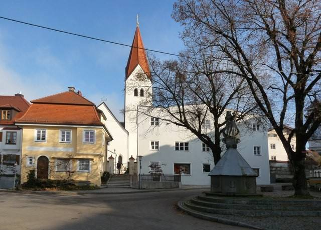
美 미네소타 전력협동조합 크로우윙파워, 조합원에 약 300만 달러 돌려줘…11월 전기요금에서 차감
2010년분 출자배당 111만1,000달러에 도매 협동조합이 배정한 1992~1998년분 182만7,000달러 더해

모햇 햇살그린협동조합, 상업운전 태양광 1,427곳·176.1MW…한 달 새 46곳 늘어
조합원 투자금 3,497억5,000만 원 중 출자금은 15억2,700만 원…10월 발전매출은 SMP 하락에 6.8% 줄어

美 래퍼해녹 부족, 옛 수도 터 교육관에 지붕 태양광…원주민 기업이 보조금 신청부터 설치까지 무료로
12.32kW·패널 28장, 가동 뒤 2MWh 가까이 생산…설치비는 '부족 태양광 가속 기금'에서

캐나다 캘거리 전기·가스 판매사, 이익 100%를 지역 성소수자 단체에…"요금이 공동체 기금이 된다"
사회적기업 Q-TILITIES, 대표는 월급 안 받고 5년 안에 10만 달러 이상 환원 목표

임실 '에너지특구' 추진위 출범…150MW 태양광으로 군민 소득 구상, "실행계획부터 내놔야" 목소리도
288석에 약 150명 참석…집적화단지·분산에너지 특화지역 중 어떤 제도로 갈지, 부지·전력망 확보가 과제
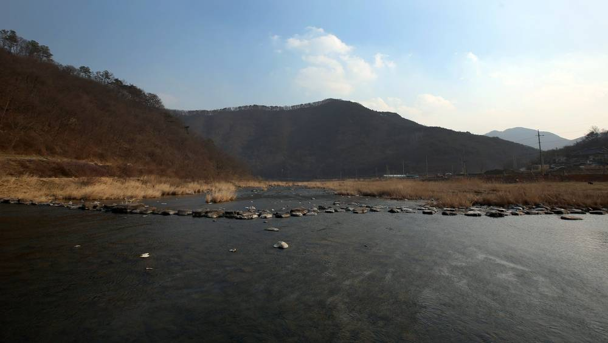
독일 자르베크 주민 에너지협동조합, 1년 새 조합원 380명→574명…새 풍력에 300만 유로
짓고 있는 신닝엔·미덴도르프 풍력 터빈에 주민 돈 몰려…조합 자산도 크게 늘어
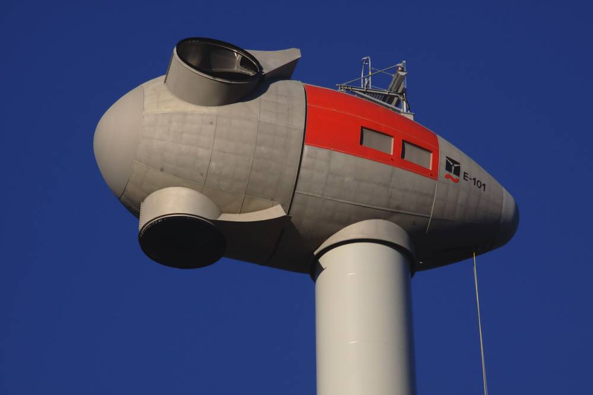
영국 정부 지원 '넷제로 허브' "지역에너지, 주민이 에너지의 주인이 되는 일"
잉글랜드 5개 허브 중 북동부·요크셔 허브 책임자 "수익은 지역에 남고 주민이 한데 모인다"

스페인 산타폴라시, 학교·체육관 지붕 200kW로 지역에너지공동체 출범…주민·상가 200곳 전기 최대 절반 충당
연 30만kWh 넘게 생산, 발전 지점 반경 5km 안이면 참여 가능…전기협동조합 그룹이 사업 도와

독일 조합원 4만2,000명 에너지협동조합 프로콘에 통신사도 출자…지분 1,266좌·6만3,300유로, "배당도 다시 출자"
아미바 운영사 STROTH Telecom 조합원 가입…"지분 수와 관계없이 1인 1표 민주적 구조에 끌렸다"

인도네시아 '마을 태양광 100GW'에 협동조합 8만 곳 동원…실제 운영은 1%, "위에서 만든 껍데기 조합" 우려
3년 안에 100GW·약 710억 달러 계획…과거 마을 태양광은 관리 주체 없어 '부서진 기념비' 됐다

독일 에너지협동조합에 여성 조합원 적다…연구소 IÖW "진입 문턱 낮추면 시민에너지 더 강해져", 브레멘 '여성 감사위원 프로그램' 등 사례 제시
연방경제에너지부 지원 EPOS 연구 정책제안서…쉬운 말·하이브리드 회의·자원봉사 쉼 허용 등 권고
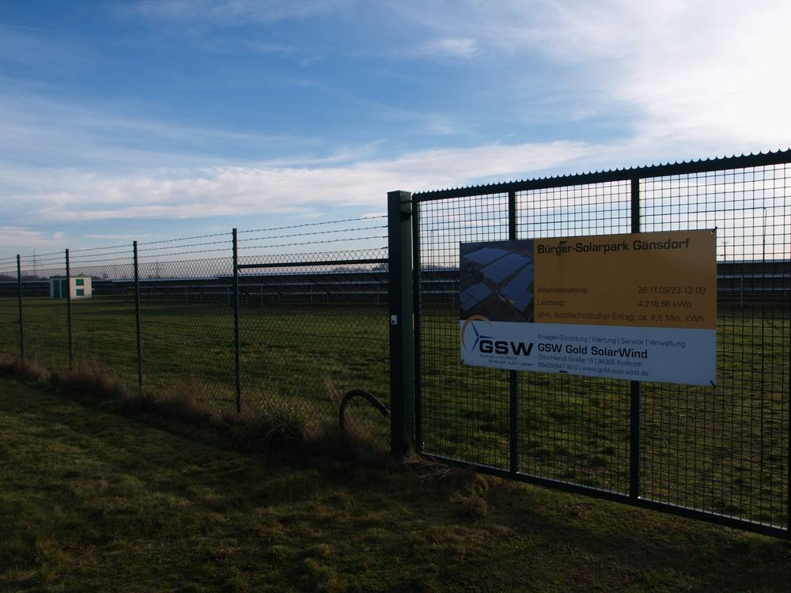
수원 두 에너지협동조합, 시·시민 함께하는 '수원햇빛발전㈜' 창립 설명회 16일 연다…2027년 상반기 설립 목표
12~25일 조합원 주간, 경기햇빛자전거길 1호·시화호조력발전소 견학…태양광 수익과 연계해 도시숲 후원금 1,300만 원 기부
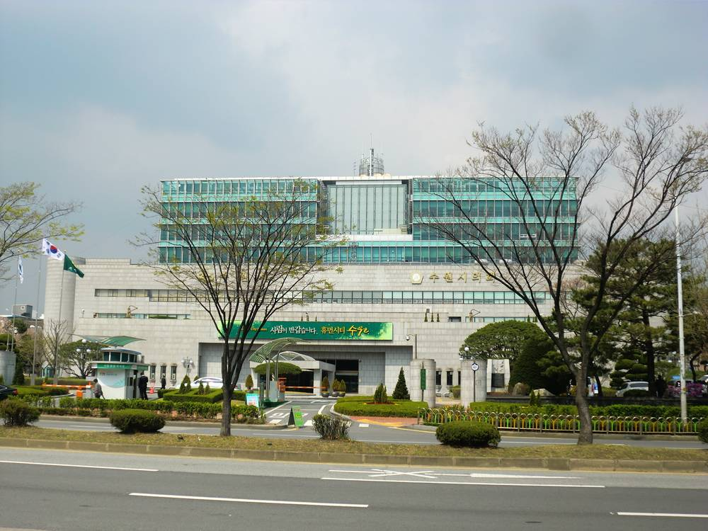
호주 시드니 배전회사, 공장·창고 지붕 태양광 남는 전기를 세입자·아파트 주민과 나누는 '공동체 전력망' 시범에 에너지 지도 공개
오스그리드, 마스콧-보타니·캐링바·센트럴코스트 북부 3곳 접속 여유·출력제한 자료 공개해 태양광·배터리 들어설 자리 안내…공동체 배터리로 이익도 지역에 나눠
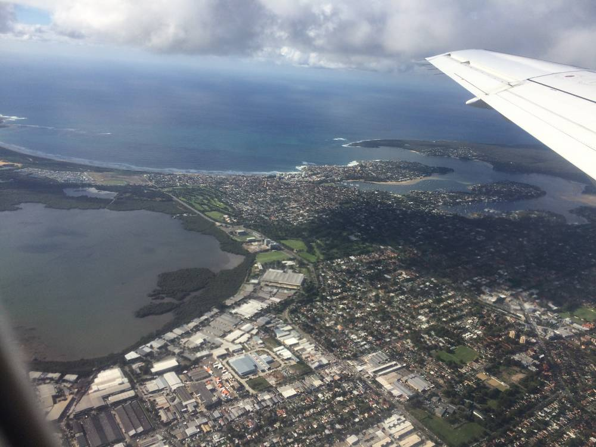
눈의 고장 일본 나가오카에서 시민 65명이 '시민공동발전소'…출자금으로 지붕·농지 위 태양광, 수익은 출자자에게
2023년 설립한 일반사단법인 '나가오카 자연에너지', 학교 출장수업·소수력 체험도…"연간 일사량 간토의 약 80%"

미국 플로리다 오캘러시 공영전력 '공동체 태양광 구독' 6년 만에 접는다…최대 가입자 빠지자 17MW 중 2%도 안 남아
태양광 쓰는 만큼 kWh당 1.6센트 더 내는 방식, 주택 가입은 "미미"…시의회 17일 표결, 12월 1일부터 새 가입 중단
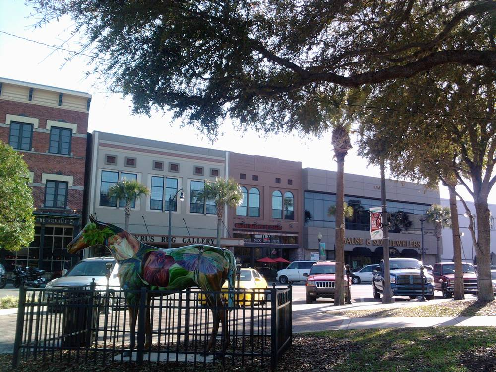
이탈리아 발사모자 재생에너지 공동체, 25가구 '공동구매'로 태양광·히트펌프 함께 설치…EU 집행위 "본받을 시범 사례"
시민·소상공인 102명 협동조합, 2024년 출범 뒤 태양광 200kW 넘게 설치…자원봉사자 집집마다 찾아가 설명회 4번에 75명

이탈리아 토르토나에 과학기술단지 주도 재생에너지 공동체…"참여자 전기요금 25~40% 절감"
첫 발전소 약 200kW로 시작해 750kW까지…토르토나 일대 18개 코무네 대상, 2026년 말 가동 목표

영국 셰틀랜드 "버려지는 풍력 전기로 섬 주민 요금 낮춘다"…의회 주도 '셰틀랜드 공동체 전력 프로젝트' 시동
가구 40%가 에너지빈곤인데 터빈 103기 바이킹 풍력은 송전 막혀 멈추기도…GB에너지·오프젬·SSE 등 실무단 참여, 2028년부터 시범사업 목표

뉴욕시에 '시 소유 재생에너지 개발공사' 세우자…시민단체 보고서 "공공 배터리 200MW만 깔아도 요금 연 1억7,000만 달러 절감"
기후·공공전력 단체 3곳 'PowerNYC' 제안…학교·병원·공공주택 지붕에 태양광·저장장치·지역 열망 직접 개발, 수익 다시 투자하는 자립형 공공 개발자

스코틀랜드 송전망 회사 500만 파운드 '넷제로 기금', 주민 주도 사업 26곳 지원 마쳐…"1파운드 넣어 사회적 가치 2.85파운드"
SP에너지네트웍스 기금, 중부·남부 공동체 건물 단열·저탄소 난방·친환경 교통 지원…워크숍 32회 450여 명, 22곳 전문 자문, 이산화탄소 2만5,000톤 넘게 줄여
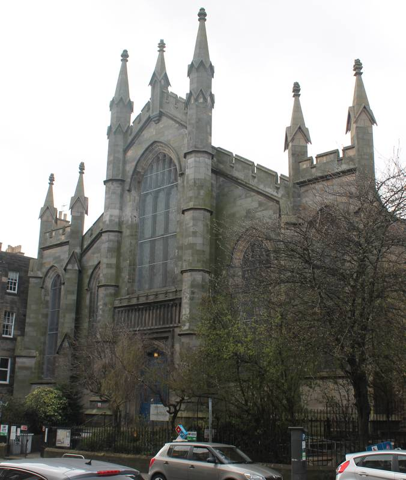
독일 페를레베르크 두 마을 주민 "태양광단지 반대"…구속력 없는 주민 의견조사에도 개발사 41헥타르 계획 접어
데르겐틴 11명 중 반대 8·기권 3, 쥐코 35명 중 찬성 10·반대 19…같은 군 실데에서도 9월 조사 때 80% 가까이 반대

독일 바이에른 오버란트 시민재단 20년…군 지원금 1유로를 18유로 일로 키웠지만 "2035년 재생에너지 100%까지는 갈 길 멀다"
미스바흐군 전기는 재생에너지 60%, 난방 25%·수송 7%에 그쳐…해마다 에너지 비용 4억9,500만 유로 중 3억500만 유로가 지역 밖으로

독일 쾰른 오센도르프, 에너지협동조합과 주택협동조합이 435가구에 세입자 태양광…저장장치 670kWh 붙여 전기요금 10% 싸게
건물 55동 지붕에 750kW, 단지 전기의 절반을 지붕에서…협동조합 "2027년 EEG 개정되면 작은 세입자 태양광은 못 짓는다"

미국 델라웨어, 상업용 건물 8곳 지붕에 19MW 넘는 커뮤니티 태양광…집이나 지붕 없어도 할인 전기 받는다
부동산 개발사와 태양광 업체 협력, 뉴캐슬 카운티 델마바 전력 공급 구역…3곳은 주 인허가 신속 처리 대상
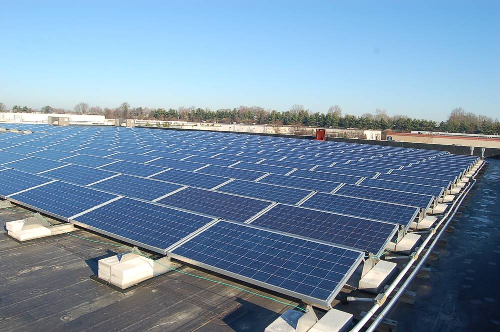
공공이 앞장선 제주·나주의 에너지 전환…풍력 공유화기금·나주형 햇빛연금으로 이익 나눴지만 전력망 포화가 숙제
제주에너지공사 풍력 59.53MW 운영·한림해상풍력 주민 1,009명 1인당 연 351만 원…나주 허가받고 못 짓는 태양광 약 2,700곳
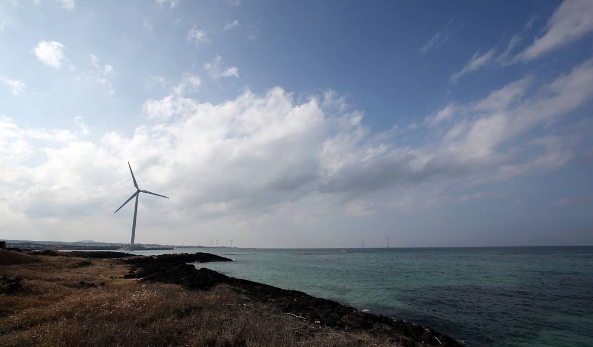
미국 조지아 조합원 소유 전력협동조합 코스털 일렉트릭, 남은 이익 153만 달러를 조합원에게 돌려준다
2011~2013년 전기를 쓴 조합원 대상…지금까지 돌려준 출자배당 2,300만 달러 넘어, 조합원 2만여 명

미국 캘리포니아 소보바 원주민 부족 소방서, 태양광 마이크로그리드에 바나듐 흐름전지 더해 정전 때 10시간 이상 버틴다
GRID 얼터너티브가 주 에너지위원회 지원으로 개발…산불 최고위험지역, 24시간 넘는 정전도 겪어

멕시코 푸에블라 농민들, 연구소와 함께 밭 위 태양광 공동체 실험…5kW 모듈로 비료 공장·가공·세 가구에 전기
산티아고 할리친틀라 마을 토나티우 사업…결정은 마을 총회에서, 생산한 전기를 여러 집에 나누는 방법은 아직 숙제

네덜란드 크랄링어폴더르 열 협동조합, 지열 프로젝트 ADL과 열 공급 계약 서명…2029년 4분기 공급 목표
열 용량 25MWth 지열원, 첫 시추는 2028년 중반 계획…온실 농가와 건물에 열 공급
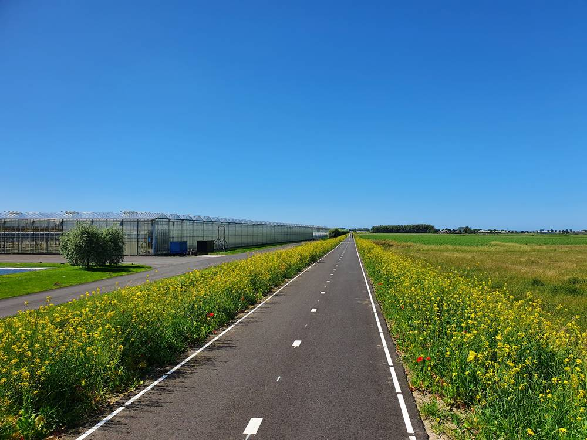
이탈리아 바리 광역시권 첫 재생에너지공동체 '체르 노바' 출범…광역시는 학교 건물 전기 소비로 참여
광역시장·지오이아델콜레 시장이 설립 증서 서명, 시민·중소기업·제3섹터 단체도 창립 회원으로

스페인 바스크 온다리비아 시, 지역 에너지공동체 만들기 위한 주민 설명회 3회 연다
11월 18일·12월 10일·16일 오후 6시…구성 방식·조직·설립 절차 차례로 논의, 시청 "주민 의지에 달렸다"
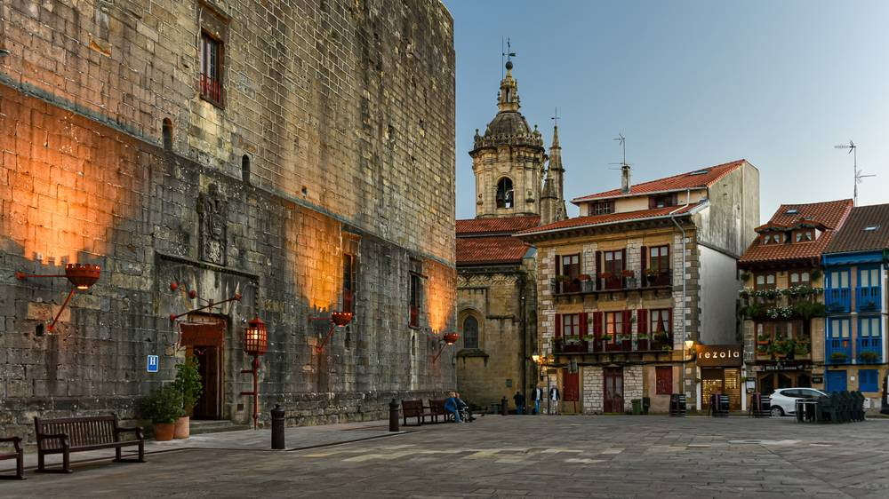
스코틀랜드 SSEN 트랜스미션, 송전설비 인근 주민에게 162만 파운드 지역기금 설계 의견 묻는다
레어그·로가트 주민 대상 설문 11월 16일~12월 14일, 설명회 3회…'사우스 로크신 지역기금'은 2027년 문 열 예정

스코틀랜드 주민 10명 중 7명 "학교·공공건물 지붕에 태양광 달자"…반대는 6%
업계 단체 여론조사, 새집 태양광 의무화 찬성 59%·집 근처 태양광단지 찬성 43% 대 반대 22%…"정부·지자체가 행동으로 옮겨야"

영국 내셔널그리드, 블라이스 변전소 증설 지역에 최대 106만 파운드 공동체 기금…쓰임새는 주민 의견 받아 정한다
데이터센터·버윅뱅크 해상풍력 연결용 변전소 1·2단계에 53만 파운드씩, 12월 6일까지 4주간 의견 수렴…기금은 내년 여름 출범

영국 사우스케임브리지셔, 올해 주민 기후사업 14곳에 17만1,000파운드…마을회관 태양광·예술센터 열펌프 지원
2019년부터 주민 사업 110곳에 100만 파운드 넘게 지원한 '탄소제로 공동체' 기금…신청 단체 23곳에서 37곳으로 늘어

영국 셰틀랜드 주민 설문 응답자 87% "에너지 개발 멈추거나 유예해야"…2,655명 응답
개발 반대 단체 '지속가능한 셰틀랜드'가 전 가구에 돌린 설문…"이미 영국 재생에너지에 크게 기여했다" 80% 넘고, 송전선 지중화 찬성 85% 가까이
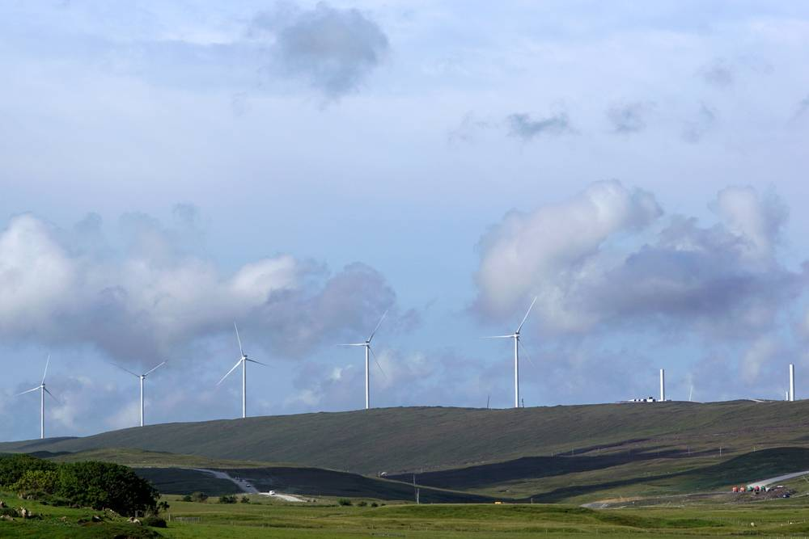
환경법 단체 클라이언트어스, 불가리아·크로아티아를 EU 집행위에 진정…"시민 에너지공동체 가로막는 규정"
크로아티아 등록 시민에너지공동체 3곳뿐, 그나마 1곳은 사실상 멈춰…7월 폴란드·헝가리에 이어 EU 재생에너지 지침 이행 여부 따져
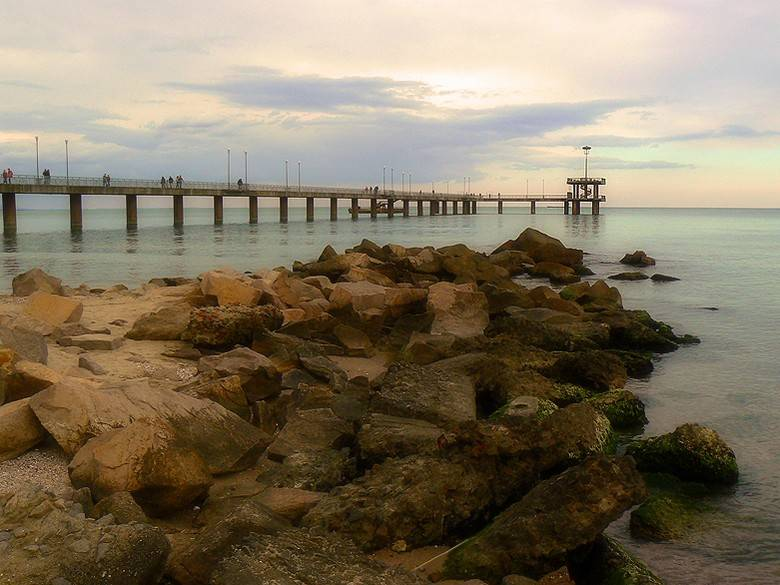
용인시정연구원 "반도체 RE100 수요를 시민 소득으로"…시민 투자·주민 참여·공공자산 태양광 담은 이익공유 모델 제안
이슈리포트 'YRI Insight 119호'…발전 수익 공유, 시공·유지관리 주민 참여, 정책금융·시민투자 연계, 인접 시군과 광역 협력 등 5가지 방안

독일 묀제 풍력 사업자들, 수익 나눌 시민·에너지 재단 추진…의회는 운영위원회 동수 구성부터 정관에 담으라고 요구
노르트라인베스트팔렌주 법이 정한 주민 이익 참여 방식 놓고 1년 새 의회 결정 뒤집혀…재단안이 정말 주민을 참여시키는지 의문도

스코틀랜드 주민 70%가 공공건물·신축 주택 태양광 확대 찬성, 반대는 6%…집 근처 태양광 단지도 찬성 43%로 반대의 두 배
솔라에너지스코틀랜드 의뢰 여론조사, 하고 싶어도 못 단다는 응답 38%…스코틀랜드 정부는 공동체 재생에너지 지원 1,500만 파운드로 늘려

미국 플로리다 사니벨시, 허리케인 정전 대비 무료 태양광 공동구매 협동조합 열어…2027년 1월 29일까지 가입
비영리단체 솔라유나이티드네이버스와 손잡고 주택·소상공인에 설치 적합성 무료 평가, 가입해도 구매 의무 없어
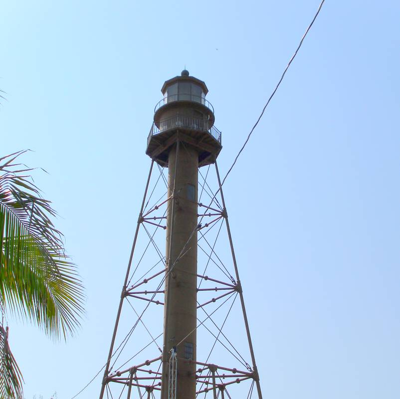
독일 담머 베르게 에너지협동조합, 2028년 말 해산 추진…지붕 임대 모델이 낡았다고 조합 밝혀
2008년 출범해 조합원 82명이 39만2,000유로 출자, 2018년 배당 10% 정점…해산 때 출자금에 지분 60~70% 추가 지급 계획

평창 운두령풍력, 600억 원 사업에 주민 30억·군 18억 원 출자…주민 연 4억~5억 원 수익으로 7년 만에 원금 회수 기대
4.2MW 5기 21MW, 태백 가덕산 방식 '주민주도형' 업무협약…군은 2029년 가동부터 연 3억 원 수익, 10년 안에 연 200억 원 기본소득 재원 목표

호주 번다버그 첫 재생에너지 '공동체 이익 협약'…배터리·태양광 사업자가 해마다 지역에 8만2,450호주달러
시의회 정책 공식(1MWh당 265호주달러)으로 270MWh 배터리분 7만1,550호주달러에 97MW 태양광분 자발 기여 1만900호주달러…최대 40%는 주민 참고단이 정하는 소액 지원금
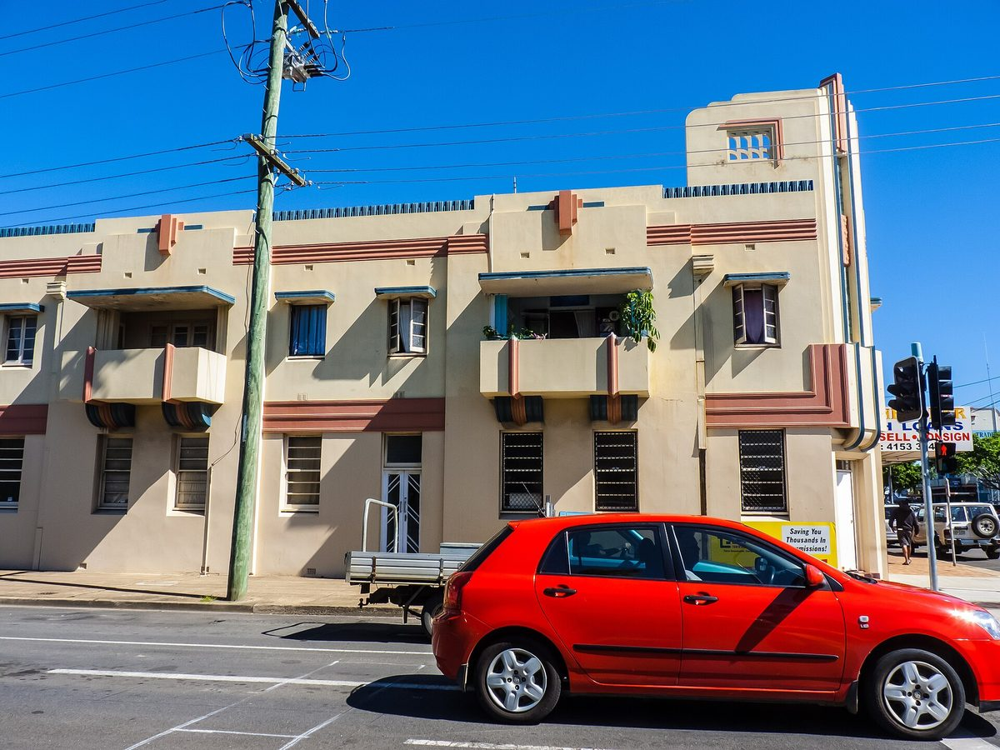
영등포시민햇빛발전협동조합, 16일 구의회서 '주민참여형 재생에너지 지원 조례' 전문가 포럼…신길환승·대림3동 공영주차장 부지 검토 결과 공개
안산시민햇빛발전협동조합이 영등포 공영주차장·유휴공간 입지 분석 발표, 서울·경기 시민발전 협동조합과 구의원이 토론…같은 자리에서 친환경 상품 체험전도

호주 퀸즐랜드 지방 주민 70% 이상 "태양광 단지 늘려도 좋다"…"이익은 이웃·지역에도 돌아가야"
794명 설문, 풍력 단독 확대 찬성은 25% 밑…농촌 땅 주인은 경관·농지 걱정 더 커, 이웃까지 보상하는 협약 필요
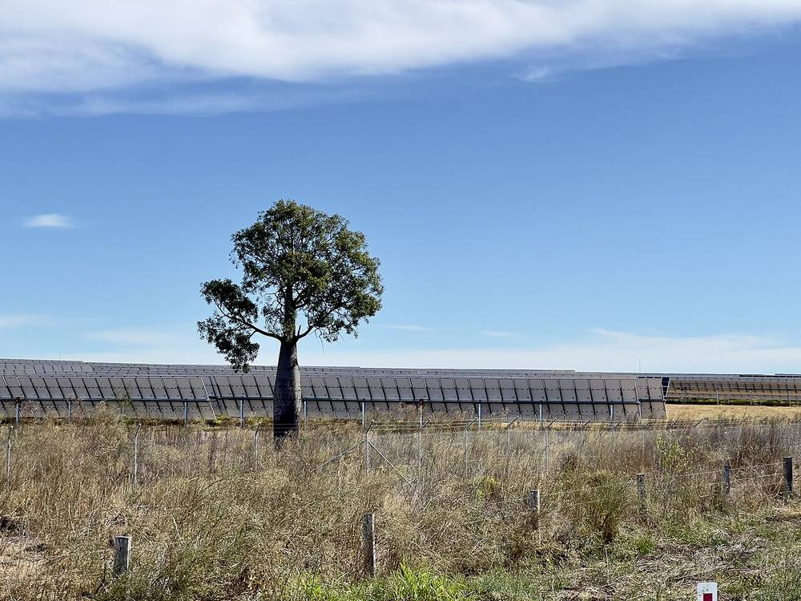
프랑스 로트 시민협동조합 셀레와트, 이웃에 전기 직접 공급하는 집합 자가소비 설명회 연다
리베르농 세 번째 태양광단지 2027년 계통 연결…반지름 20km 안 개인·사업자 대상, 11월 12일·19일 설명회
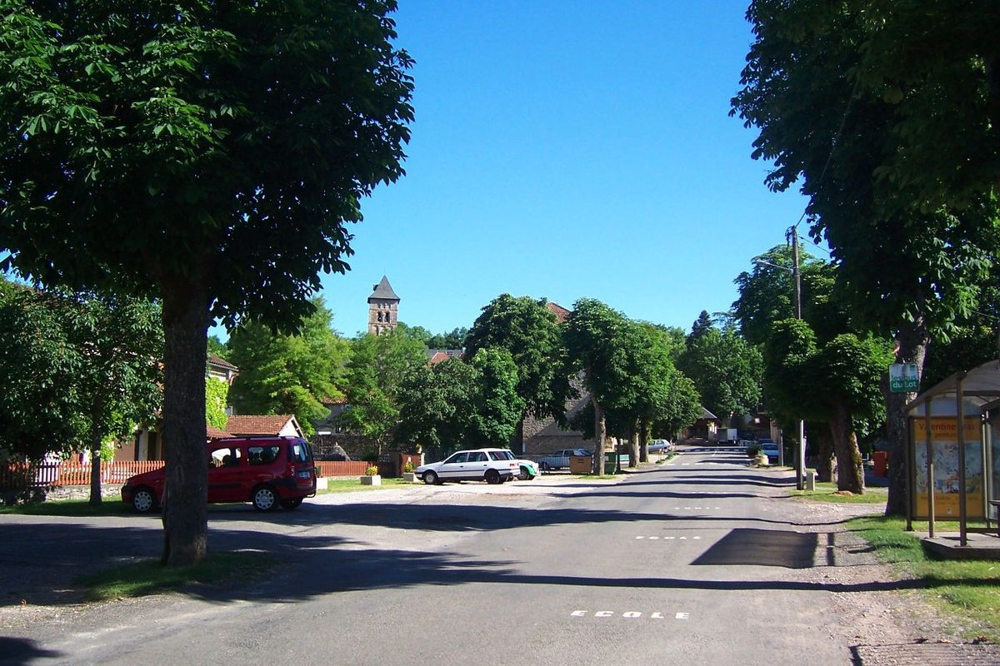
독일 홀츠하임 풍력단지, 뮌헨 시영 전력회사 74%·지자체 25%·시민협동조합 1% 지분 구상
바이에른 바이징어 숲에서 건설 시작…투자비 약 1,200만 유로 중 지자체 몫 약 300만 유로, 의회 동의와 군청 승인은 아직
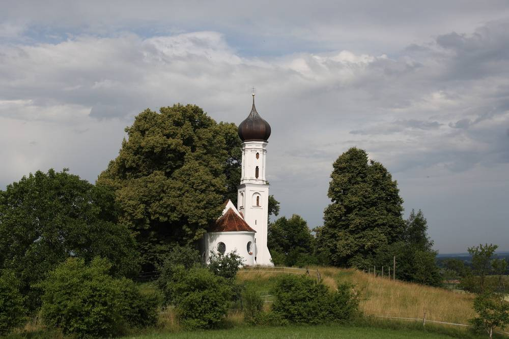
호주 사파이어 풍력단지 공동체 기금, 인버렐 지역 15개 사업에 약 14만2,000호주달러…구조대 장비·학교 놀이터 지원
23건 신청 중 15건 선정, 가장 큰 2만 호주달러는 배터리 구조 장비에…다음 신청은 2027년 1월 11일부터

스코틀랜드 베리번 풍력 공동체 기금, 주민 단체 17곳에 8만7,814파운드…마을 정원 태양광·자원봉사 차량 지원
29기 풍력단지 운영사가 해마다 물가 연동 26만6,187파운드 내고, 지역 주민 11명이 심사…이번이 38번째 배분
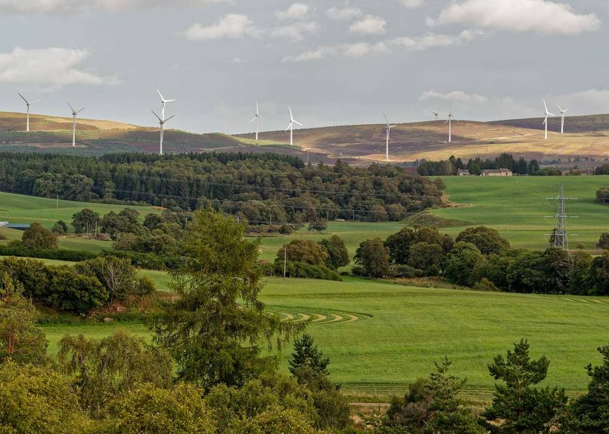
독일 시민에너지협동조합 "EEG 개정 초안은 저장장치 막는 정책"…부제크 존넨란트, 태양광·풍력 옆 배터리 계획 무산 위기
2027년부터 새 지붕 태양광은 설비 용량의 50%까지만 전력망에 보내는 안…고정가격 넘는 수익은 거둬 가 저장 투자 못 건져

독일 메트만 시민에너지협동조합, 테니스장 지붕에 첫 태양광…60kWp 13일 전력망 연결
창립 얼마 안 된 협동조합이 직접 짓고 운영하는 첫 발전소, 모듈 130장으로 한 해 약 6만kWh…"이제 시작일 뿐"

영국 새들워스 패리시 의회, 10만 파운드 들여 공회당 지붕에 태양광…"7년이면 본전, 30년간 주민 세금 아낀다"
업퍼밀 시빅홀에 30년 쓸 설비, 경쟁 입찰로 지역 업체 선정…절감액 일부는 패널 교체 비용으로 적립
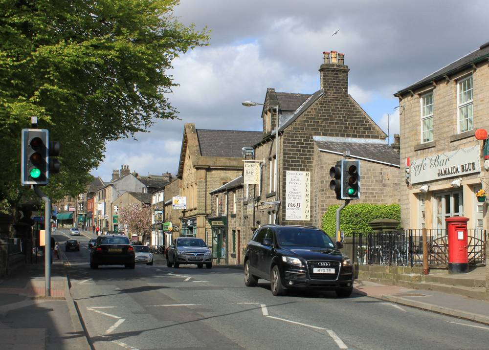
미국 네브래스카 위네바고 부족, 원주민 여성 4명이 직접 소방서 지붕에 태양광…설치 실습이 일자리 길로
32.13kW 패널 54장으로 연 4,900달러 절감, 원주민 주도 비영리단체 첫 여성 시공 교육 사업


이탈리아 사비나 산골 마을 에너지공동체들 카사프로타서 손잡아…"순수익은 전부 마을 살리기에"
알타 발레 델 파르파 공동체 설비 6기·조합원 약 50명…오르비니오는 묘지 지붕 50kW 시 부담 없이 설치, 인센티브 기한 2027년 12월 31일 연장 요구
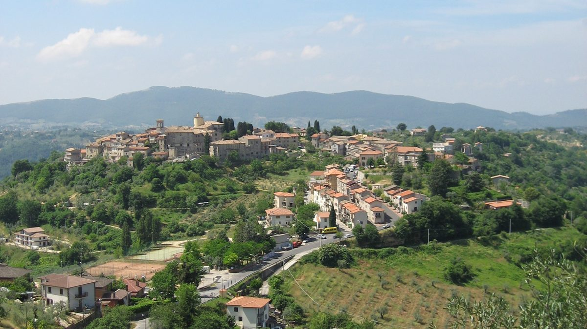
이탈리아 재생에너지공동체·공동 자가소비 7,797곳·636MW로 늘어…10개월 새 4배, 남부는 뒤처져
GSE 10월 31일 자료 분석…풀리아는 476곳·15.7MW·이용자 3,517명, 정부는 1MW 이하 태양광에 12억 유로 투자 보조 예고

미국 뉴햄프셔 재퍼리, 덮어 둔 쓰레기 매립지에 1.34MW 공동체 태양광 완공…전기 100%를 저소득 약 250가구에
연 170만kWh 생산, 참여 가구 전기요금 연 약 7만5,000달러·사업 기간 약 200만 달러 절감 전망…타운은 부지 임대료로 새 세입 얻어

미국 캘리포니아, 콘센트에 꽂는 1.2kW 플러그인 태양광 허가 없이 허용…오클랜드시 "시민단체와 함께 알리겠다"
전력회사 PG&E "가구당 연 50~800달러 절감" 추산하면서도 법안엔 반대…지역 공공전력 기관은 "배터리도 묶었어야"

미국 조지아 전기협동조합 Cobb EMC, 고속도로 옆 1MW 공유 태양광 열어…조합원 블록당 월 19달러 구독
주 교통부와 협력해 패널 2,300여 장, 약 200가구분…아파트 주민·세입자도 지붕 없이 태양광 전기 받아
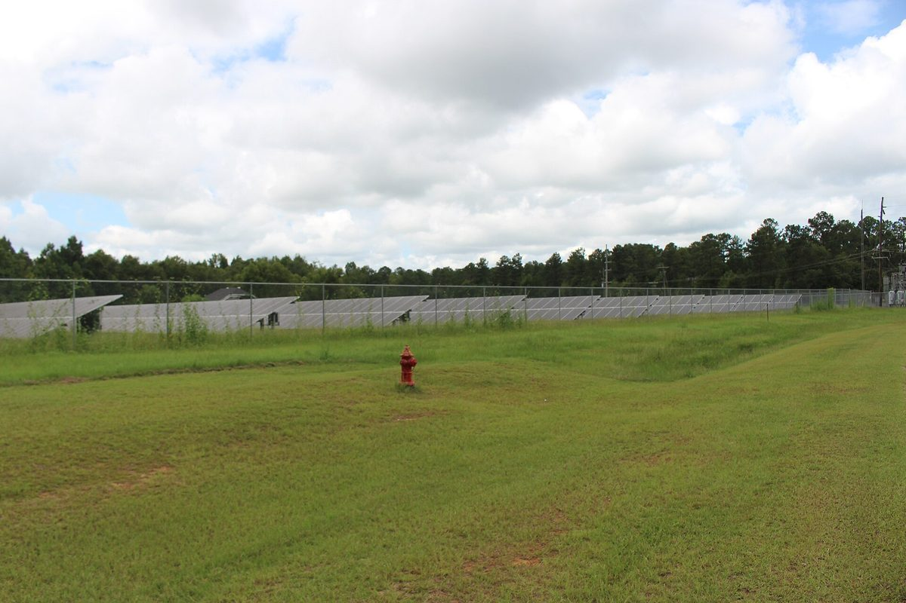
미국 일리노이 체리밸리에 7.4MW 커뮤니티 태양광 가동…세입자·소상공인도 구독하면 전기요금 약 10% 절감
700여 가구·점포 쓸 전기, 개발사는 공동체 혜택 협약으로 마을 전기차 충전소에 15만 달러 내놔

독일 메클렌부르크포어포메른 차기 연정, 풍력단지 2km·대형 태양광 500m 안 주민에 전력망 이용료 면제 추진
사민당·좌파당·녹색당 경제 분야 합의…시민참여법 이어 풍력 수익 주민 배분, 시민에너지기금 설립도 내걸어

스코틀랜드 아가일·킨타이어 송전선 지역기금 첫 지원…9곳에 59만2,770.85파운드, 주민 대표 6명이 심사
송전망 회사 SSEN의 320만 파운드 기금, 마을회관·청소년 시설·저탄소 난방 등에 배분
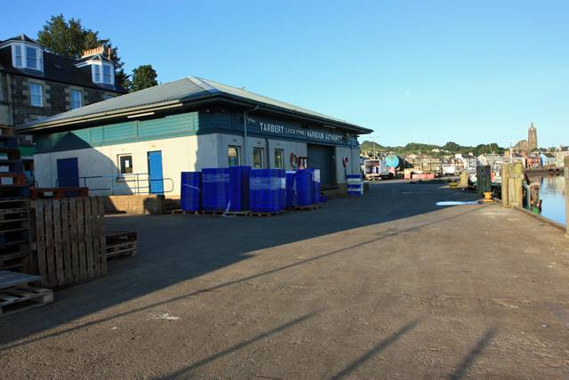
독일 림부르크 린터 태양광단지, 주민 참여 약속이 계약서에 빠져 위원회가 보완 요구
시민 지분 "15%만 현실적" 대 "최대 23%" 협의 중…16일 시의회까지 문구 명시하기로


"재생에너지는 멈출 수 없다"…독일 프라이징 시민 태양광 선구자 슈림프 교수 별세
1993년 시의회 결정으로 세계 첫 '비용 보전 매입가' 도입 이끌어…향년 87세
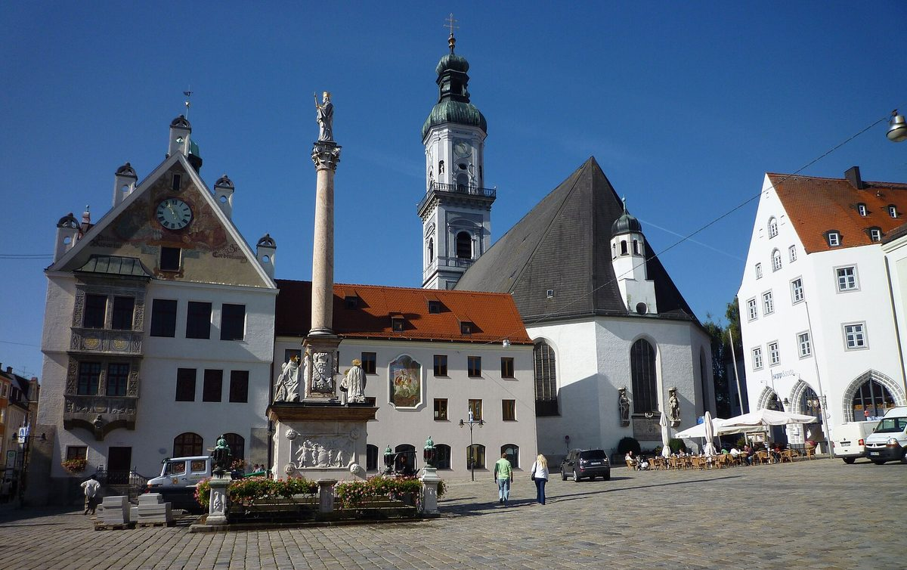
이탈리아 이번 주 에너지공동체 공고 11건…타란토 7,910,000유로·로마 광역시 무료 지원
타란토 도 1MW 이하 설비에 건당 최대 500,000유로…두 공고 모두 11월 30일 마감
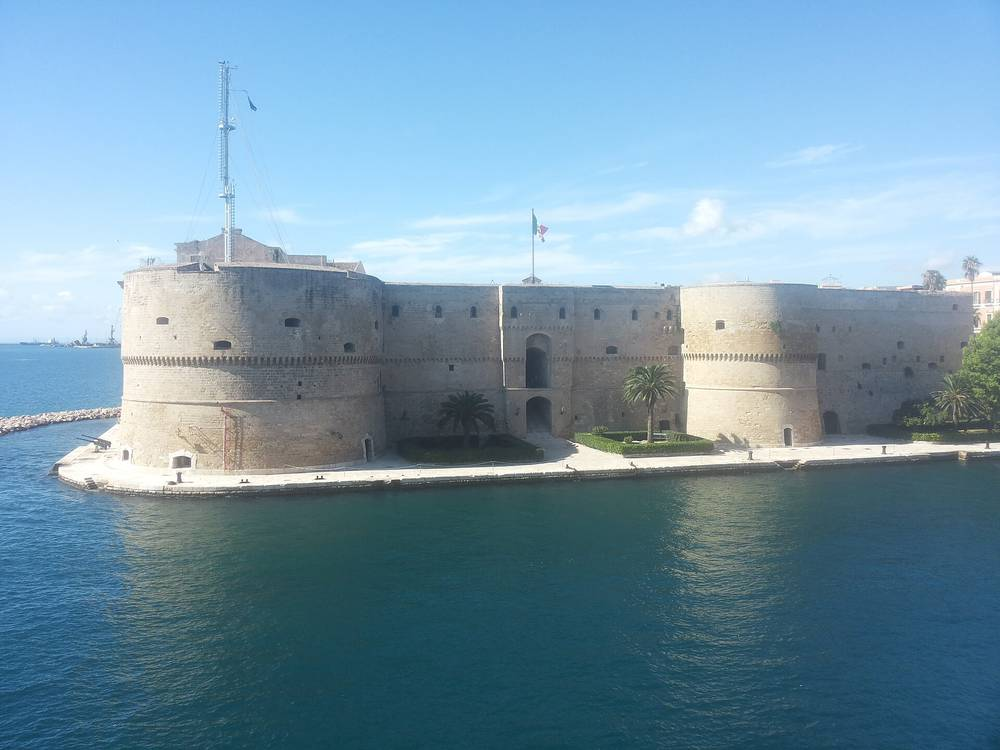
오스트리아 군트람스도르프 에너지공동체, 2027년 전력망 요금 초안에 반발…"공유 전기 할인 줄어"
규제기관 E-Control 초안은 확정 아냐…공동체 "이웃 간 할인율 57%→49%", 의견 제출은 11월 20일까지

독일 린들라르 시와 마을 단체 29곳, 풍력 시민참여 몫 나누는 협약 서명
건설 중인 포겔베르크 풍력단지…시가 받는 금액의 80%는 반경 2.5km 단체, 20%는 시 전역 단체 몫

독일 메클렌부르크포어포메른 연정 구상, 풍력·대형 태양광 이웃 주민 전력망 이용료 면제 추진
풍력단지 2km·대형 태양광 500m 이내 주민 대상…세부 시행 방법은 미정, 아직 연정 협상 중 구상

독일 귀터슬로 시, 첫 '기후 포럼' 열어 시민에너지 논의…지역 협동조합 4곳 사업 소개
시립도서관에 약 40명 참석, 지역 시민에너지 사업의 과제·필요한 지원 토론…다음 포럼은 내년 4월

독일 니더바이에른 시민에너지협동조합, 10.8MWp 태양광단지 착공…조합원 2,200명이 함께 소유
쿰하우젠 약 9ha에 3,400가구분 전기, 투자 500만 유로 넘어…2027년 2월 계통 연결 뒤 배터리 추가
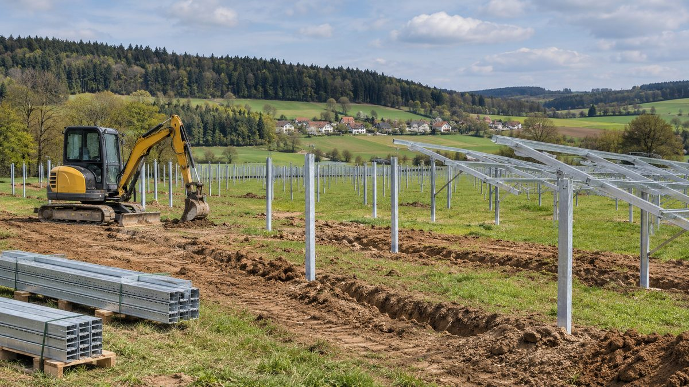

미국 뉴저지 물류창고 지붕 16곳에 10MW 넘는 커뮤니티 솔라…첫 1.6MW 착공, 용량 절반 이상은 중·저소득 가구 몫
창고 소유사 패로포인트, 페어론 창고부터 공사 시작해 연 1,270만kWh 생산 예상…주 정부는 3월 커뮤니티 솔라 3,000MW 추가 승인

이탈리아 발레 스크리비아 연금생활자 노조, '재생에너지공동체(CER) 추진위원회' 결성 제안…산간 인구 감소·요금 부담 대응
Spi Cgil 제노바·리구리아, 11월 5일 부살라서 공개 토론회…시민·기업·지자체 묶어 CER 퍼뜨리는 구상, 위원회는 아직 제안 단계

이탈리아 에너지협동조합 ènostra, 2029년까지 자체 발전 3배·조합원 2만8,000명 목표…새 발전 투자 450만 유로는 조합원 출자로
10월 말 조합원 웨비나서 2026~2029 전략계획 발표…고객 공급 전력 약 60GWh→100GWh, 출처 추적 전력 비중 20%→40%, '사회적기업' 전환도 검토

아르헨티나 올리바 협동조합, 4.12MW 태양광 단지 착공…도시 전력 소비 약 35% 생산, 6년 뒤 전량 조합 몫
300만 달러 들여 5헥타르에 패널 6,656장…연방투자위원회 저리 융자 3억3,000만 페소와 시공 컨소시엄 6년 금융, 가동 12개월 뒤 조합원 요금 kWh 할인, 2027년 4월 준공 목표
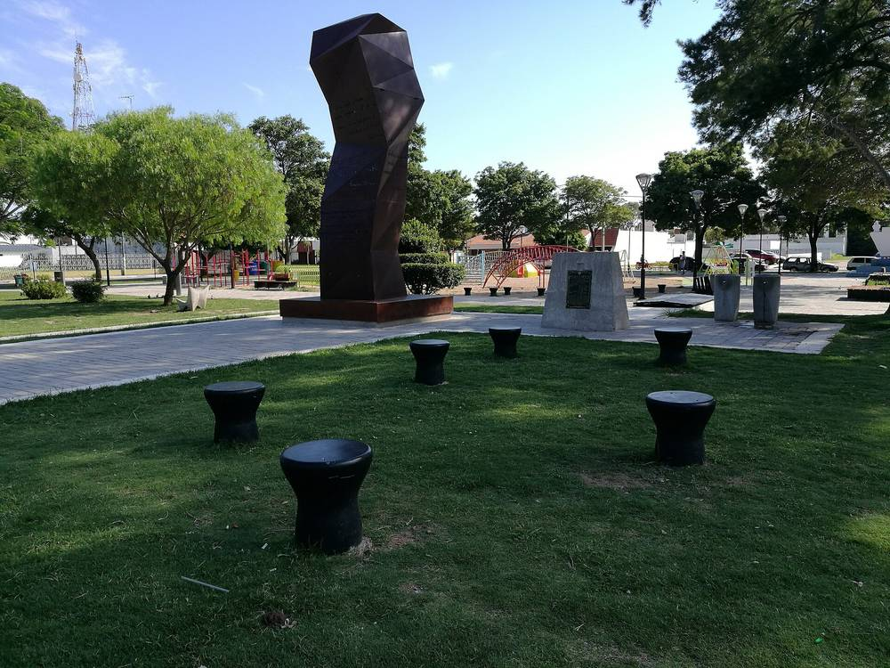
이탈리아 하원, 재생에너지공동체 인센티브 기한 2030년까지 연장 요구 의안 채택…정부 검토 약속
인센티브 대상 5GW 가운데 가동은 약 523MW…GSE가 가진 자료 다시 요구하지 말라는 서류 간소화도 담아, 구속력 없는 의안이라 실제 연장은 정부 후속 조치에 달려

영국 옥스퍼드셔 Low Carbon Hub, 야른턴 공동체 소유 태양광 7.4MW·배터리 10MWh 짓는다며 시민 주식 공모
1인 100~10만 파운드, 2027년 1월까지 최소 50만 파운드 목표…단체 "잉여 이익은 모두 지역 저탄소 사업에, 사업 기간 지역 편익 630만 파운드"

스코틀랜드 화이트로 브레 육상풍력, 지역에 공동체이익기금 연 28만5,000파운드·주민 지분 매입 기회 약속…연내 계통 연결
Thrive Renewables·TopCashback 합작사 소유, 연 최대 14만9,400MWh 생산 전망…차액계약 7차 입찰 낙찰 뒤 SmartestEnergy와 전력구매계약, 지분 규모·시기는 아직 안 나와

폴란드 '비스와강 에너지 클러스터' 4개 지자체, 주민 주택·공공건물에 재생에너지 설비 732건 추진…보흐니아 태양광 540.8kWp
드르비냐 면 주도로 보흐니아 시·코시체·노비 브제스코가 함께, 보흐니아 시가 밝힌 계획 용량은 태양광 540.8kWp·저장 404kWh·히트펌프 200kW…EU 회복기금 재원, 2027년 6월까지 시공사 입찰 거쳐 설치

루마니아 고르지 군 아니노아사 면, 에너지공동체 가구에 태양광·배터리 무상 설치 신청 받아…5년 이상 회원 유지 조건
EU 기금 사업 '아니노아사 면 에너지공동체를 위한 재생에너지원 개발', 면 안 주거용 주택 소유자 대상…최근 12개월 전기요금 고지서 등 서류, 2026년 12월 31일까지 면사무소 접수
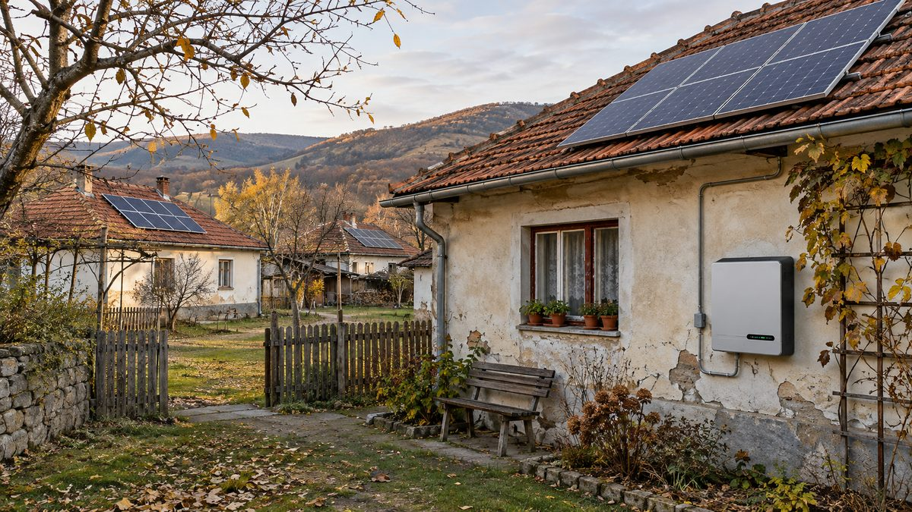
독일 노르트할벤의 1919년생 주민 전기협동조합, 연말 전기 공급 접는다…주민 75%가 고객
면 주민 1,467명 가운데 약 1,100명이 조합 전기 써…같은 지역 공급사 'grüün'에 이어 두 번째 철수, 면장은 주민 안내 필요하다고 밝혀
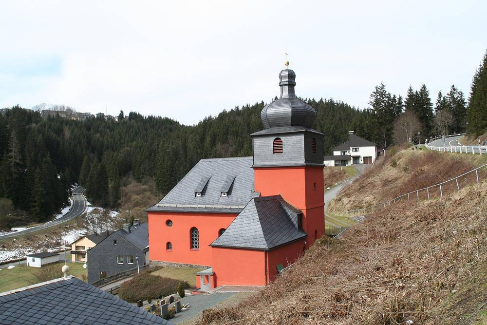
네덜란드 스타츠카날 시, 태양광 단지 '사회적 입찰'…주민 참여·이익 따져 최대 60MW 사업자 고른다
2018년 지정한 노르더딥·트베더 부런딥 두 구역, 계획당 30MW 이상…11월 21일까지 질의, 2027년 1월 31일 제출 마감, 선정돼도 허가는 따로

오스트리아 미헬바흐 면, 직접 지은 어린이 돌봄시설 태양광에 주민 지분 120좌 모집…1좌 500유로·연 3%
약 18kWp 태양광과 61kWh 저장장치, 8년 동안 좌당 해마다 71.23유로 지급…돌봄시설 전기 공급과 지역 에너지공동체 판매 수입으로 갚아, 12월 31일까지 신청
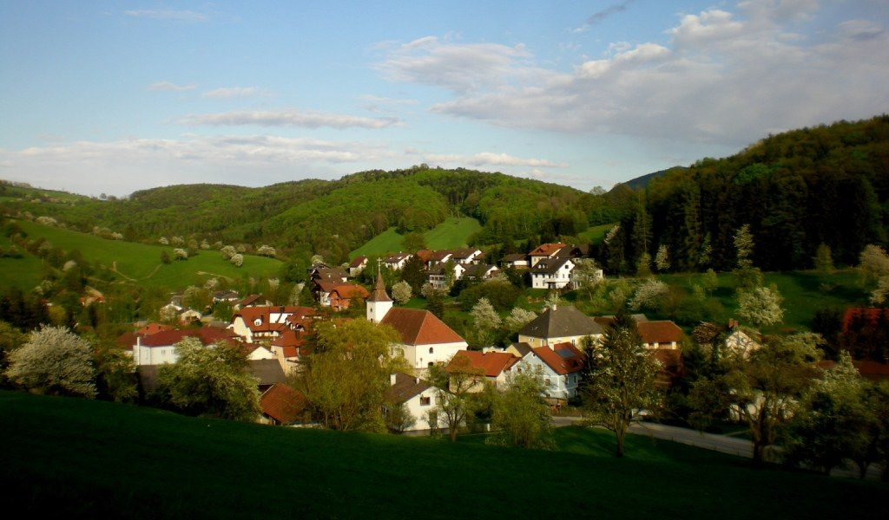
안산에너지절약마을 20년…올해 에너지의 날 아파트 22곳·약 2만5,000세대 함께 불 껐다
행정·시민단체 연대한 안산에너지전환과자립네트워크, 매달 22일 밤 9시부터 10분 소등…'에너지 지킴이' 3기·'에너지 서포터즈'로 가정에서 단지로

포르투갈 농촌 저항 연결망 브라바 1년, 35개 지역 모임 지원…에너지 전환은 주민 말 듣고 분산돼야
대형 태양광 단지·리튬 광산 반대 모임을 법률·재정 지원 단체와 연결, 반대하는 것은 전환이 아니라 대기업으로의 부 집중이라고 밝혀…6일 리스본서 1년 결산 모임

스페인 테루엘 첫 사회적경제상, 농촌 마을 에너지협동조합 옵티메네르에 사회적경제 발전 기여상
루코 데 힐로카에서 공동체 에너지 관리 모델 이끈 공로…후보 15건 중 5개 부문 시상, 농촌 이동·빈집·섬유 재활용 사업도 수상

루마니아 갈라치 군, 정의로운 전환 기금 770만 유로로 재생에너지공동체 공모…군의회가 시·면 동반 사업 이끈다
태양광·태양열·히트펌프·저장장치·망 연결 지원, 85%는 EU 정의로운 전환 기금·15%는 국가 예산…취약 가구 우선, 2027년 3월 31일까지 신청
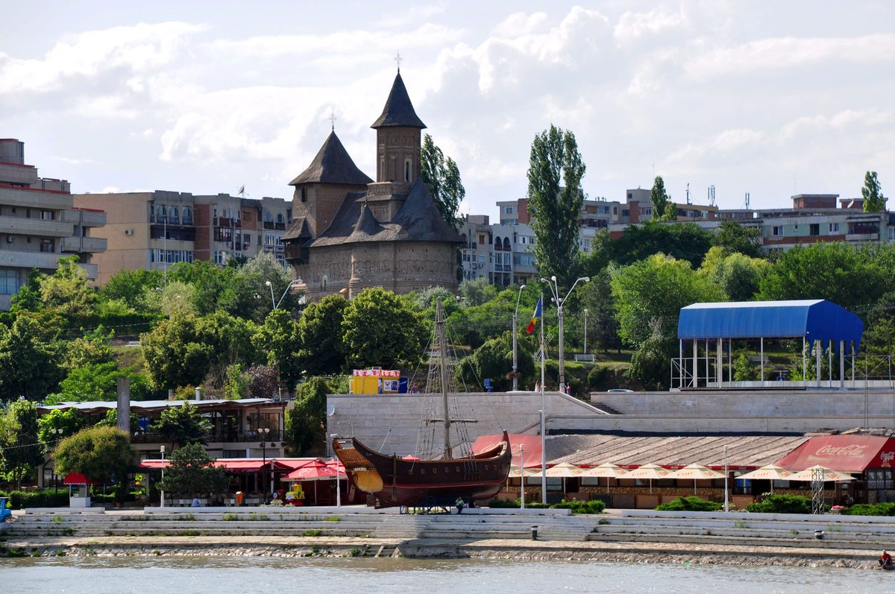
독일 주민 1,000명 마을의 주민 열망 사업 2년 만에 해산…핵심 열원 기업 빠지고 새 주민은 히트펌프 택해
괴팅겐 근처 라이어스하우젠 주민 조합, 우유회사 바이오가스 열만으로는 모자라…설계사무소가 적정 요금으로는 어렵다고 결론 내자 회원총회가 해산 의결, 지자체 도움으로 손실 없이 정리

일본 플래티넘 대상, 지열 전기 판매 수익을 지역 방재에 쓰는 사업에 대상…소사시 시민 영농형 태양광은 우수상
제14회 시상식 도쿄서 열려, 최종 심사 11건 중 대상 3건…경작 포기지를 살리며 전기 판매 수입 일부를 경작 위탁료로 돌리는 지바현 소사시 시민 단체 사업도 상 받아

미국 볼티모어 시민단체, 민영 BGE 대신 시영 전력 운동…시의원 15명 중 4명·새 당선자 3명 'BGE 후원금 거부' 서약
데이터센터 반발·요금 상승 속 2025년 출범한 '볼티모어 공영전력'…BGE는 4년간 77억 달러 투자·연 1억5,610만 달러 요금 인상 요청, 지난 25년 공영화 시도 64건 중 7건만 성공

몰도바 의회, 에너지공동체법 2차 독회 가결…주민·지자체·아파트 소유자협회가 함께하는 비영리 결사체, 이익 배당 금지하고 재투자
회원인 지자체는 소유 부동산·에너지 기반시설을 공동체에 쓰게 할 수 있어…관보 게재 한 달 뒤 시행, 기존 공동체는 24개월 안에 새 규정으로 재편

프랑스 생루이시, 생샤를 성당 지붕 20년간 시민 태양광 협동조합에 내줘…약 35kWc 설비에 시민 출자 1만5,000~1만7,000유로 모금
연 3만5,000kWh로 13가구 소비량, 총사업비 5만5,000~6만 유로…2027년 하반기 가동 목표, 시장 "시 시설이 이 전기를 쓰는 데 관심"

스페인 팜플로나, 치안대 청사 지붕에 130kW 태양광…동네 상점·소기업·가정이 0.5kW 지분 260개로 나눠 쓰는 에너지공동체 가동
비영리 결사체 '엔산체 팜플로나 지역에너지공동체', 3년 준비 끝에 패널 220장…사업비 18만1,908유로 중 국가 보조 7만1,900유로, 생산 전기 90% 회원 배정

포르투갈 브라가시, 시 건물 30곳 지붕 10년 빌려 주는 자가소비 태양광 공모…검증 뒤 사회단체·취약 가구까지 여는 에너지공동체로
기준가 382만6,920유로, 투자·설치·운영은 낙찰 사업자가 맡고 전기는 시가 받는 위탁 방식…연 2~4.7GWh로 시 시설 전기 소비 7~17% 충당 추산

슬로베니아 석탄 지역 벨레녜·쇼슈타뉴, 지역난방을 대형 히트펌프·태양광·축열조 조합으로…시장, 열 생산·공급은 지역공동체 영역으로 남겨야
국제 컨설팅사 연구 발표, 여름은 히트펌프·태양광·축열 조합이 가장 알맞고 겨울은 바이오매스 보일러와 열병합 가운데 선택 남아…1단계 열배관 개량 약 2,500만 유로 중 2,340만 유로 무상 지원 확보
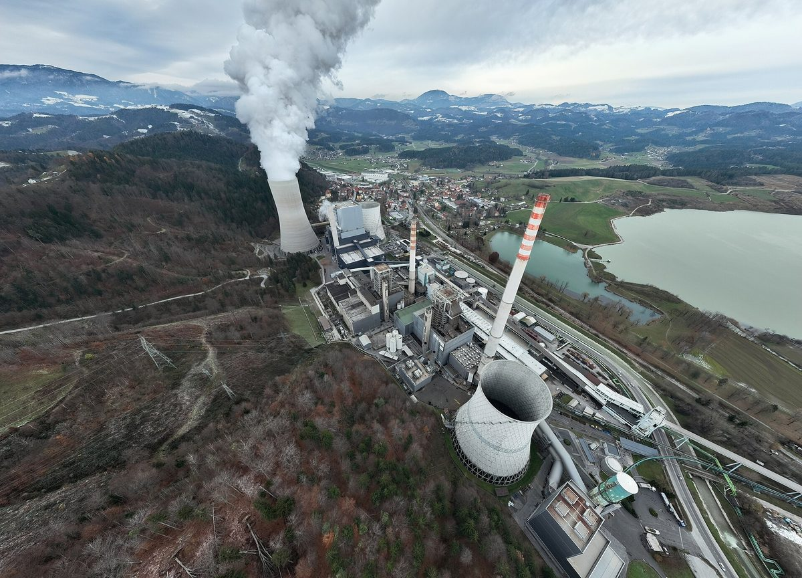
영국 웨일스 스완지시, 농촌 공동체 단체 5곳에 재생에너지 설비비 7만6,000파운드 넘게 지원…럭비클럽·교회·스카우트·공동체의회 회관
러허 럭비클럽 클럽하우스 태양광·배터리에 2만4,216파운드로 최대…교회 히트펌프 3대, 클라이다크 자원센터 패널 32장, 스카우트 LED 조명, 스리 크로시스 회관 충전기 — 예산 남아 추가 신청 받아

슬로베니아 포들레흐니크, 학교·청사 지붕 태양광으로 공공시설 묶어 공동체 자가공급…청사 겨울 전기요금 약 2,500유로가 123유로 남짓으로
두 설비 합계 200kW 남짓에 사업비 25만5,000유로 조금 못 미쳐, 보조금 15만6,000유로 조금 못 미쳐…하수처리장·펌프장·충전소까지 전기 대고 연 효과 약 4만2,000유로 잠정 추산

폴란드 에너지협동조합·클러스터 준비 지원금 심사 지연…기후환경부, 보완 요구 최대 13번은 신청서 탓이라며 연말 집행 기한 그대로
국가회복계획(KPO) 1억9,200만 즈워티 사업, 2단계 신청 112건 중 9월 중순까지 긍정 결정 33건…신청자 약 15%가 돈 못 쓸 위험 알렸지만 정부는 결정 전 사업 착수 허용으로 대응
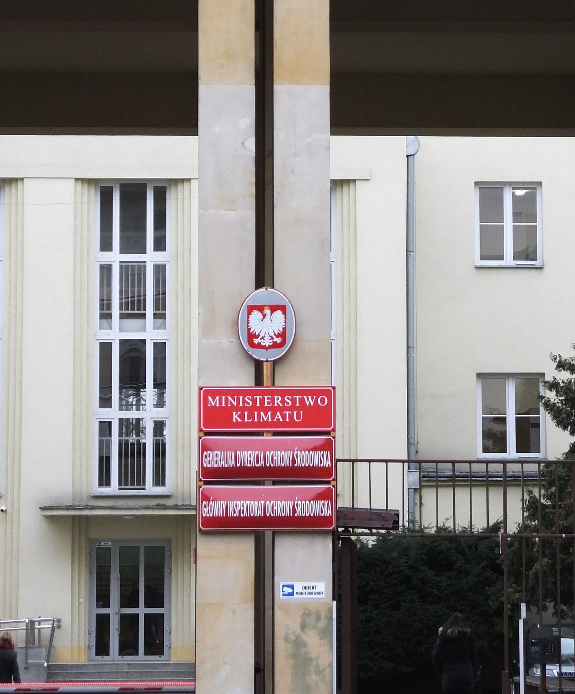
루마니아 공동주택 태양광 법안 3건 의회 절차에…시민단체 안, 아파트 공용 지붕 전기 판매 수익 최대 85% 관리비서 덜어 줘
프로슈머·에너지공동체 협회(APCE)가 2건 발의…발코니 태양광은 패널 4장·800VA 이하로 신고만, 공용 지붕은 소유자 3분의 2 동의, 별도 법안은 비참여 세대 부담 금지·배당 금지

경기 서수원·월암 나들목 유휴부지 2만7,000㎡에 햇빛발전소 준공…협동조합 26곳·도민 1만1,000여 명 참여
2023년 경기RE100 비전 선포 뒤 부지 임대, 2025년 2월 착공…설비 용량·사업비·수익 배분 방식은 공개 안 돼

프랑스 알자스 '세 나라 국경' 주민 4명, 시민에너지 모임 EC3F 꾸려…한 주 108유로 출자로 지붕 태양광 공동 소유 추진
2022년 생루이 광역연합 설명회에서 처음 만나 2023년 말 독립, 시민 협동조합 '에네르지 파르타제 앙 알자스'의 지역 모임으로 활동…한 달에 한 번 모여 태양광 올릴 지붕 찾고 집단 자가소비 사업 준비

푸에르토리코 시민단체 카사 푸에블로, 지붕 태양광 남는 전기를 kWh당 7~8센트에 사들이는 '푸에블로 솔라' 제안
단체 집계 자가소비 태양광 약 26만1,000가구·분산 태양광 약 1,456MW로 메탄가스 발전 설비 1,391MW 넘어…송배전 운영사 매입 의무화·낮 시간 싼 요금·공동체 태양광과 협동조합으로 지붕 없는 가구도 참여

네덜란드 아선 협동조합 태양광 단지, 상계제도 폐지에 배터리 200만 유로 숙제…수익 기부 대신 저소득 가구에 싼 전기 직접 공급으로
조합원 300명 비영리 '아선스 굿', A28 아선베스트 나들목 옆 패널 2,800장 넘는 단지 설계 다시…2027년 1월 상계 폐지·역송 비용에 저장 없이는 사업성 없어, 배터리 설치엔 새 허가 필요

폴란드 오도라누프 등 3개 지자체 에너지 클러스터, 공적 자금 3,000만 즈워티로 주민 태양광 627곳…주민 부담은 설치비 10%
2027년 6월까지 저장장치도 함께 설치, 시장 "클러스터 전체로는 1,500곳 가까이"…세 지자체는 주민에게 재생에너지 설비를 보여 줄 '에너지 아카데미'도 추진

스위스 출빌 주민, 마을 태양광 전기 나눠 쓰는 '지역에너지공동체' 결성 나서…11월 15일까지 설문, 2027년 4월 출범 목표
올해 초 법으로 가능해진 LEG, 마을엔 태양광 설비 30곳…이웃 루프싱겐은 70명으로 첫 공동체 꾸려 경험 나눠

덴마크 란데르스 시, 2045년 재생에너지 100% 자급 위해 새 발전설비 자리 주민에게 먼저 묻는다…지금 생산의 두 배 넘게 필요
시 종합계획에 붙일 재생에너지 설비 계획 앞서 11월 4일~12월 16일 사전 토론, 이동 상담차로 6곳 찾아…입지·이웃과 자연 배려·지역에 가치 남길 방법까지 의견 받아
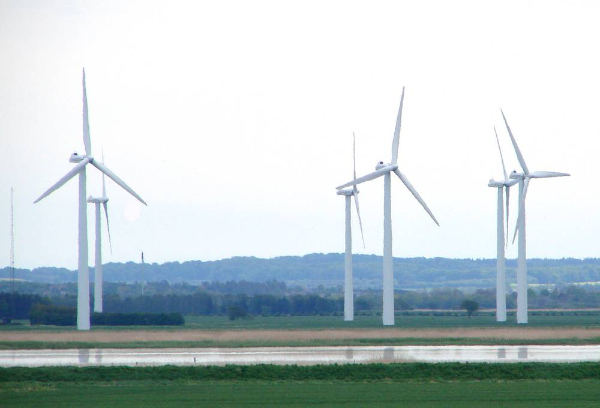
영국 웨일스 포트탤벗, 내셔널그리드 변전소 2곳 지역 기금 106만 파운드…쓰임새 주민 설문으로 정한다
타타스틸 제철소 전기로 전력 공급용 '마검 연결' 사업에 딸린 보상 성격 기금, 정부 지침 '변전소 1곳당 53만 파운드'와 같은 수준…연료비 지원 등 6가지 후보 내놓고 11월 26일까지 의견 받아, 지급 방식·심사 주체는 미정

미국 뉴욕 맨해튼 125세대 주택협동조합, 조합 적립금 12만4,000달러로 지붕 태양광 약 40장…연 1만8,000kWh
계량기 하나로 요금 내는 건물이라 상계가 세대 전기요금까지 줄여…시 재산세 감면 30%, 이사회는 투자 회수 5~10년 추정

독일 졸링겐 주택협동조합, 지붕 태양광 414kWp로 182가구에 '세입자 전기'…사업자 "기본요금보다 최소 10% 싸게"
조합은 지붕만 빌려주고 공급사가 설치·운영해 조합 자본 투입 없어…2027년 봄 37가구 난방도 히트펌프로, 공사비가 월세에 얹히는 것 막는다

스페인 나발모랄데라마타시 '시 건물 지붕 태양광 에너지공동체' 입찰에 1개사만 응찰…예정가 515만 유로·16년 계약
전기 공급·태양광·에너지공동체 조성과 운영, 시 건물 지붕 사용허가를 한 계약으로 묶어…콕스 에네르히아를 유일 응찰자로 받아 기술 평가 중

아일랜드 오펄리주 파이브앨리 에너지공동체, 정부 에너지상 수상…두 단계에 걸쳐 128가구가 태양광 패널 1,650장 공동 설치
'솔라 미할' 사업으로 가구마다 재생에너지 전기 생산·에너지 비용 절감…국영 보르드나모나의 데린러프 풍력단지 지역이익기금이 SEAI·주민과 함께 지원, 기후·에너지·환경부 장관이 시상

벨기에 아르덴 마을 말랑프레, 협동조합 열망으로 70가구 난방…낙농가가 꿈꾼 2033년 마을 에너지 자립에 다가서
2012년 협동조합, 2014년 마을 열망 완공…농업·산림 바이오매스로 내년 80가구까지 넓혀, 농장은 나무 가스화로 열·전기 만들고 남는 전기는 이웃 가정에 팔아

이탈리아 BIM 아디제 트렌토 컨소시엄, 소속 지자체의 재생에너지공동체 가입에 7만 유로 지원…새 조직 대신 기존 공동체 합류만
105개 지자체 연합, 가입 초기 비용으로 지자체당 5,000유로에 대표 지자체를 정하면 1,500유로 더 줘…2023~2025년 같은 지원엔 20곳 참여, 트렌티노 운영 중 CER은 30곳

아르헨티나 바릴로체 전기협동조합, 16ha에 14MW 태양광단지 추진…성수기 수요 72MW인데 외부 송전은 약 60MW
배전만 하던 조합이 발전·배터리 저장까지 넓혀 외부 의존 줄이기로…외부 투자로 짓고 조합이 운영, 전기 팔아 투자금 회수, 같은 규모 2단지도 구상

독일 바이에른 디센 의회, 주 산림 땅 풍력단지에 시민 지분 최소 24.9% 조건…바라는 비율은 과반인 50.1~75%
'시민풍력단지 암머제' 기준 23 대 1로 의결…디센 주민 우선 배정, 운영회사 본사는 디센에, 지분 매각 땐 지자체·주민 우선매수권, 시민에너지협동조합 조넨제글러가 파트너로 거론
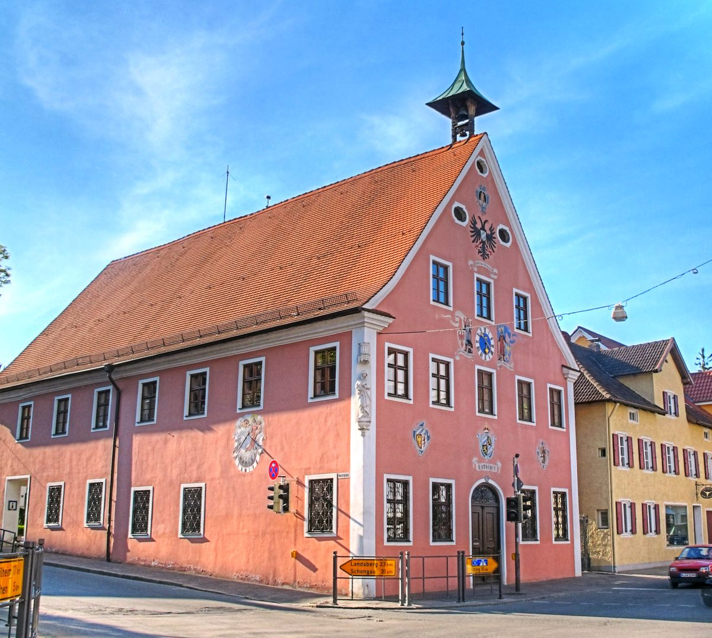
오스트리아 인구 1,700명 마을 슈탄츠, 에너지공동체 회원 약 150명과 "마을 전기는 마을에서"…농촌혁신파트너십 8곳에 뽑혀 35만 유로
지자체 통합 거부하고 독립 지킨 마을의 'Energie.Digital.Stanzertal' 사업, 2026~2029년 지원 받아…1906~1952년 직접 전기 만들어 쓴 경험 살려 11월 5일 주민총회
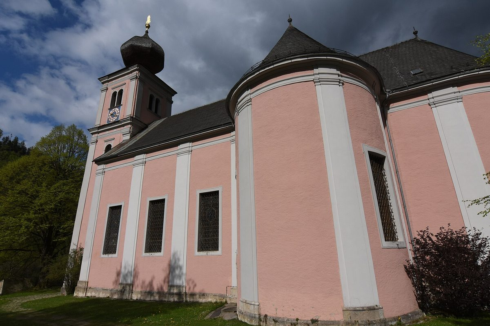
스페인 라팔마섬 시민 협동조합 '에네르히아 보니타' 5년…조합원 320명 넘어, 학교 지붕 8곳에 태양광 626kW
전기 90%가 화석연료인 섬에서 화산 분화 속 출범한 비영리 소비자 협동조합, 자치정부·시가 내준 학교 지붕에 공유 자가소비 설비…일부는 1년 넘게 가동 대기, 조합 "배전회사가 되풀이되는 문제의 원인"

캐나다 하이드로퀘벡, 뉴욕행 송전선 퀘벡 구간 지분 절반 카나와케 모호크 공동체에 넘기기로…규제위 승인 신청
건설비 11억4,000만 캐나다 달러 든 58km 지하·해저 선로를 3억 캐나다 달러에 공동 소유 합자회사로…하이드로퀘벡이 40년 동안 송전 용량 전부 사들이고 운영도 계속 맡아, "이용자 요금 영향 없다"
스페인 사나브리아 로블레다 주민 협동조합, 4년 만에 자가소비 태양광 가동…두 마을 조합원 67명
주민 87명 마을서 46명 참여, 지분 1%당 출자 323유로…사업비 25%는 조합원 출자·75%는 지역 금융기관 대출, 잉여 전력 안 팔고 요금 절감액으로 대출 갚아…배전회사 접속 지연에 "4년은 말이 안 된다"

미국 11월 3일 지역 에너지 주민투표 첫 집계…키챕 공영전력·투손 민간 전력사 영업권 반대 우세, 유진 대기업 부담 클린에너지 기금은 찬성 앞서
키챕 '제안 1호' 반대 약 60.5%, 민영 전력사 240만 달러 대 찬성 쪽 약 9,000달러…투손 '제안 421' 초기 개표 반대 53.3%로 TEP 430만 달러 운동 밀려, 유진 '메저 20-388' 찬성 약 58%에 발의 쪽 승리 선언, 앤아버 시영 전력 안은 비공식 집계서 반대 51.83%로 부결
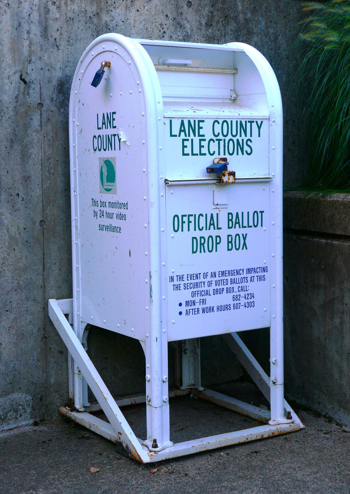
광주 동구 계림동에 주민 주도 '초록계림에너지전환센터' 문 열어…태양광 모니터링·주민 교육 거점
10월 30일 개소식에 주민실천단 등 50여 명…주민·행정·전문기관 협력체계 만들기로, 설비 규모·예산은 공개 안 돼

남호주 배전회사, 오지 마을 킴바·호커 체육시설에 정전 대비 '공동체 회복력 배터리'…운영은 지방의회에 넘겨
SA 파워 네트웍스·연방 재생에너지청 공동 출자, 완충 시 최대 8시간 기본 전기…정전 때 시설을 언제 열지는 의회와 체육시설이 결정, 남호주 전역 8기 설치 계획의 일부
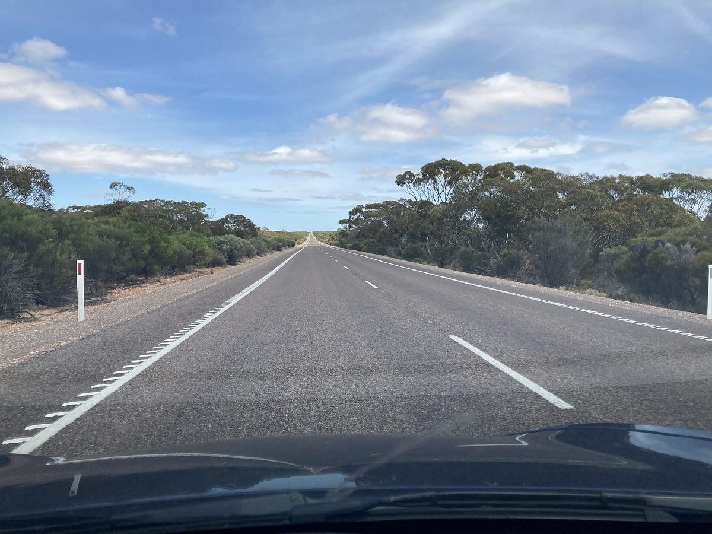
솔라리그 장관표창에 인제군·고령군·달구벌시민햇빛발전협동조합…민간부문 입상 4곳 모두 발전협동조합
제8회 대한민국 솔라리그 14곳 수상 확정, 5일 정부세종컨벤션센터서 시상…고령군은 햇빛소득마을 수익을 주민복지기금에, 군포시는 주민·시민발전협동조합과 방음터널 태양광 기획

콜롬비아 전 정부 '주민 에너지기업' 사업, 278억1,500만 페소 협약에도 발전소 0곳…건설 재원 끝내 못 붙여
기금 Fenoge·국제이주기구 협약으로 타당성 조사 50건·740명 교육·주민 회사 설립까지만…전 장관 "근본 약속 아직 못 지켜" 인정하면서 연구 품질 문제와 실제 지급액은 총액보다 적다고 해명

미국 이넘클로시, 시 저수지 위에 전력회사 커뮤니티 태양광 유치…지분 82개 모두 소득 기준 가구에
설비는 전력회사 PSE가 비용을 대 짓고 소유, 시는 부지 사용료로 연 약 6,300달러…가입 가구는 지분당 월 10~20달러 요금 공제 예상, 공사는 2027년 초 예정

브라질 니테로이시, 산사태 위험 언덕에 시영 태양광 약 1.5MW…전기는 학교·어린이집 요금 상계, 공사 인력 20%는 동네 주민
7월 4일 준공한 보아비스타 언덕 태양광 공원, 공사비 770만 헤알에 연 160만 헤알 절감 추산…식생 복원·빗물 저장으로 사면도 붙잡아, 곁에 사는 주민 전기요금은 그대로

이탈리아 폴리뇨시, 8개 시·군 공공 재생에너지공동체 '체르-토스' 가입 논의…시의회 상임위서 여야 대체로 찬성
가입하면 시는 20유로, 시민은 1유로 내고 쓴 전기만큼 지원금…시·군 몫 수익은 설비 확대나 공공 서비스에만 쓰도록 묶어, 가입 여부는 시의회 본회의로

스페인 바스크 오이아르춘, 시청·에너지공동체 등 10곳 '아로아' 10대 원칙…"재생에너지 발전은 비영리·공공 주체가, 지역 공동체 통제 아래"
협동조합·학교·청년 모임 함께 서명, "필요한지가 아니라 어떻게 조직하느냐가 문제"…렙솔 풍력 2곳엔 '불신', 누구나 동참 신청 가능

미국 오하이오 애선스, 주민투표로 전기요금에 붙인 탄소 요금으로 해마다 약 10만 달러 모아 공공 태양광
2018년 도입, 보통 가구 월 2달러가 안 되는 부담…원하지 않으면 빠질 수 있지만 대부분 남아, 옛 무기고 태양광·공공수영장 변압기 교체에 써

폴란드 마워폴스카 5개 지자체 연합, 주민 집에 태양광 334곳·배터리 316대·히트펌프 200대 보급…사업비 95%인 2,891만 즈워티 지원 계약
비에프시 주관, 칼바리아제브지도프스카·스피트코비체·브제즈니차·토미체와 함께 설비 850대…EU 공정전환기금 2,587만 즈워티, 주민과 계약 뒤 설치 공사 입찰
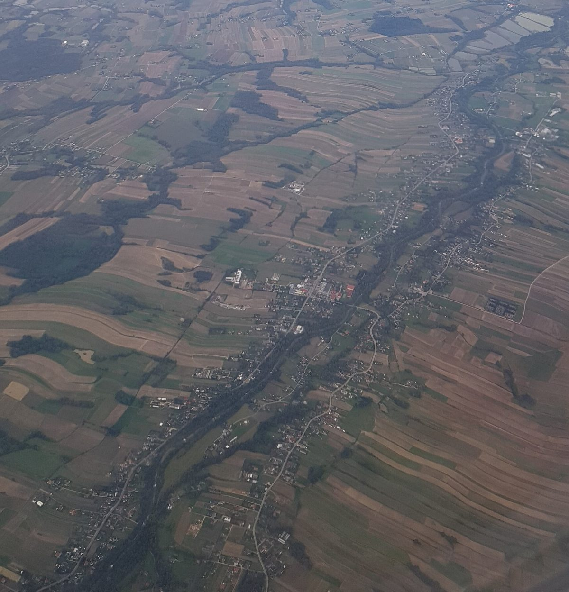
스위스 그로스회흐슈테텐 시 에너지회사 ENGH, '지역 전기공동체' 다 차려 주는 패키지 내놔…반대 주민들은 회사 매각 주민발의
올해 1월 생긴 제도 LEG의 설립 준비를 대신 맡는 상품, 11월 3일 저녁 주민 설명회서 소개…열공급망 갈등 3년째, 11월 29일 시 건물 열공급 연결 주민투표 앞둬

포르투갈 정부, 2027년 '재생에너지 수용 계획' 내놓는다…"설치 때 한 번이 아니라 여러 해 주민에게 이익을"
환경에너지부 장관 "지역 반발은 긴급한 일", 이웃 주민용 에너지공동체를 예로 들어…예산안엔 한 문장뿐 예산·일정 없고, 6월 법령이 정한 90일 기한도 9월 말 넘겨

이탈리아 폼페이아나 시, 학교·시청·공영주차장 태양광과 재생에너지공동체(CER)를 한 묶음 민간투자 입찰…공사비 65만7,099유로, 21년 계약
양허 전체 추정가치 141만1,638유로, 시가 운영사에 해마다 2만9,585유로 내는 구조…응찰 11월 27일 마감·30일 개찰, 제안사 우선권은 EU 판결 따라 없애

아르헨티나 라스이게라스 전력협동조합, 시립 태양광 발전소 사들여 11월 6일 넘겨받는다…조합원 총회 만장일치
땅 1만329.50㎡·패널 315장·인버터 5대 인수…직원 기술 교육 시범 기지 삼아 더 큰 발전소 구상

그리스 코자니 아크리니 주민 에너지공동체, 태양광 35MW분 이익 세금 없이 기부받는 길 열려…정부 법안 조항 의견 수렴
국가경제재정부 법안 26조…재생에너지 관리 회사 기부금에 증여세·소득세 면제, 마을에 부동산 가진 사람은 다른 공동체 조합원이어도 가입, 아직 확정 안 돼

벨기에 헤르 시민협동조합 풍력 7기 사업에 주민 지지 편지 373통…공청 막바지에 지자체에 낼 예정
헤스브에네르지와 협력사 추진, 총 33.6MW·연 87GWh 추정…조합원 1,800명 넘어…반대 주민위원회 '방 제레'는 "편지는 미리 채운 서식"이라며 맞서…8개 지자체 의견 거쳐 왈롱 지역정부가 결정

이탈리아 시칠리아 '네브로디 CER', 토레노바 유치원서 에너지 교육 시작…"학교도 비용 없이 공동체 가입할 수 있다"
조합원 약 240명 협동조합형 재생에너지 공동체, 4~5세 아이들에게 재생에너지·에너지 나눔 놀이 수업…다른 학교로 넓혀 공유 전기 이익으로 학교 전기요금 부담 덜겠다는 구상

루마니아 웅게니 시의회, 공공건물 4곳·취약계층 117가구 지붕에 태양광·배터리 사업 승인…828kWp·830kWh, '재생에너지 공동체' 첫걸음
1,540만 레우 넘는 사업, EU 공정전환 프로그램 자금 신청 예정이고 시 부담은 약 49만6,000레우…가구마다 5.3kWp·5.3kWh 자가소비 전용, 첫해 약 972MWh 생산 예상

에너지협동조합 활동가 40명, 고흥 주민참여 수상태양광·나주 한전KDN 찾아 계통 접속·계획입지 속 시민참여 공부
한국에너지정보문화재단·시민발전이종협동조합연합회, 11월 2~3일 전남 여수·고흥·나주 일대서 역량강화 교육…'100GW 계획입지 이행체계와 시민참여' 강의도

춘천 새마을금고·탄소중립지원센터·사회적협동조합, '시민 에너지 커뮤니티' 실험…시민햇빛협동조합 조합원 모집
1차 사업비 500만 원으로 햇빛놀이터·협동조합 교육, 2차엔 아파트 한 곳 베란다 미니태양광 실증 계획…장기적으로 5곳·조합원 1,000명 구상

이탈리아 레코 도 9개 시·군 재생에너지공동체 '시네르지아 알타 브리안차', 운영위원회 꾸려…인센티브 사회 활동 몫 쓰임에 구속력 있는 의견
시 3곳·소비자 조합원·사회적기관 대표 5명으로 구성, 구역 조합원 28명·계량 지점 99곳…GSE 활성화 심사 중, 생산자 후보 7곳 합류하면 설비 466kW 넘어

미국 뉴햄프셔 길퍼드 주민 에너지위원회, 새 공공사업소 지붕에 태양광 패널 339장 제안…업체 비공식 추산 40만 달러, 세액공제 40% 받으면 24만 달러
주민총회 표결로 생긴 위원회, 세 건물 가운데 공공사업소가 가장 알맞다고 보고…단순 회수 8년은 업체 분석, 이사회는 지붕·장래 비용 걱정에 여러 업체 견적 비교 주문, 최종 결정은 주민총회 투표

미국 위스콘신 버넌 카운티, 해비타트·태양광 협동조합·농민단체가 소득 기준 맞는 소농 10가구 집에 무료 태양광…첫 설치
개인 기부금으로 운영하는 '솔라 포 홈스' 사업…남는 전기는 전력회사에 팔고 모자라면 계통 전기, 뿌리채소 기르는 스왈로힐 농장이 첫 대상

미국 미네소타 '공동체 태양광 정원' 제도 13년…업계 "활동 용량 800MW 넘어 다른 주의 본보기", 전력회사는 '비용 전가' 반박
지붕 없는 세입자도 민간 개발사 태양광 몫을 구독해 요금 공제…주 상무부 "첫 10년 3만4,000곳 넘게 공급", 엑셀 에너지는 "연료비 약 20% 차지하며 전력은 4% 미만" 추정

루마니아 잠 면, 정의로운 전환 에너지공동체 참여 가구 모집…에너지 빈곤 가구 먼저, 11월 20일 마감
후네도아라주 잠 면사무소, 집 소유 주민 대상 등록…최근 12개월 전기요금 고지서 내야, 등록이 곧 지원 확정은 아니고 면 배정 예산 안에서 최종 선정

프랑스 플루이지 풍력단지, 2009년 주민 10명이 세 기 중 한 기에 출자…17년 뒤 "다른 투자보다 덜 위험"
한 사람 한 주 200유로, 주주 당좌계정 이자는 연 8%에서 시작…생브리외 지역 에너지기후청, 출자 주민 경험 나누는 견학 열어

이탈리아 타란토항, 항만청 주도로 '항만 재생에너지 공동체' NET 설립…기업·단체 12곳 참여, 취약 지역 세 동네 가족도 가입 예정
이오니아해 항만시스템청, 국가 에너지서비스공사(GSE) 도움 받아 출범…에너지 빈곤 줄이기를 목표에 넣고 다른 항만에 옮겨 쓸 모델로 내세워

스페인 베가데오, 18세기 대장간 '마소 데 메레도'에 10kW 수력 터빈 추진…주민 100명 안 되는 마을, 에너지공동체로 집 전기 대는 구상
아스투리아스의 기초자치단체가 보조금 10만 유로 받아 사업 설계 중, 2027년 초 실현 목표…무너진 대장간도 복원해 주민 모임에 보존·관광 관리 맡길 계획
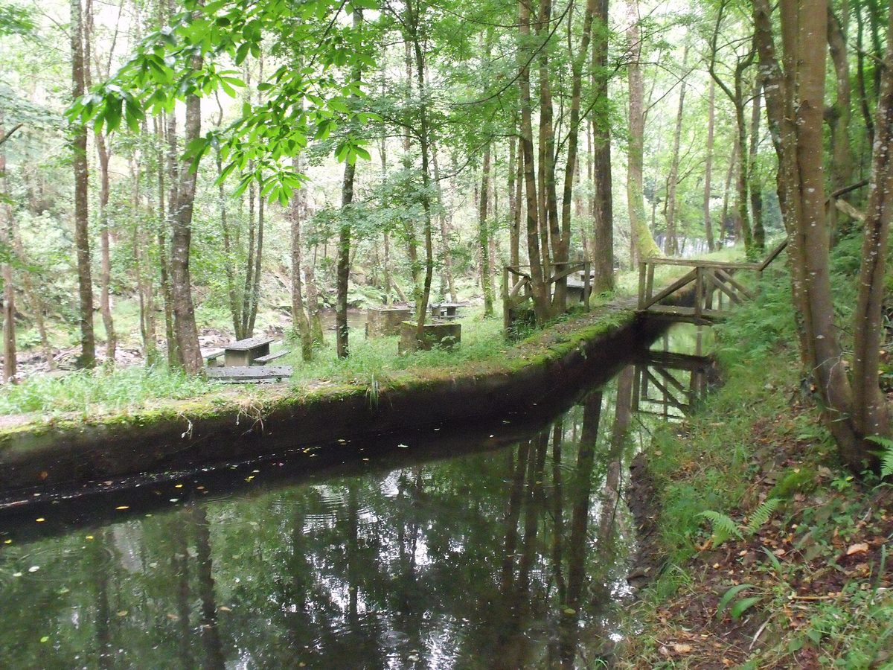
에든버러 공동체 태양광 협동조합, 113만 파운드 시민 출자 모집…25파운드부터, 공공·공동체 건물 10곳에 설치
왕립 커먼웰스 수영장·학교 5곳 포함, 예상 연 수익률 5%…2015년 출범 뒤 30곳 설치·조합원 700명 가까이, 공동체 기금으로 10만 파운드 넘게 나눠

미국 연방 지원 끊기자 원주민 공동체 에너지 사업 멈춰…알래스카 코츠뷰 풍력 2,000만 달러 취소 뒤 1년 넘게 제자리
전력 75%를 디젤로 만들고 소득 20%를 연료에 써…브루킹스 "정부효율부가 원주민 지원 4억6,800만 달러 없애", 의회에 지원 취소 막는 법 요구

포르투갈 공동 자가소비·재생에너지공동체 가동 사업 2,127건…규칙 손질 뒤 올해 9월까지 142% 늘어
가동 용량 124.1MW, 6월 법령으로 배전망 사전 협의 면제 넓히고 거리 기준 고쳐…공공기관 사업엔 취약계층 몫 최소 10% 목표, 2029년 말까지 조건 갖추면 7년간 CIEG 요금 면제
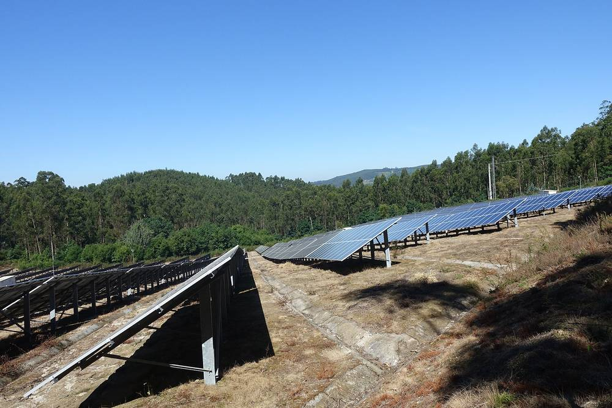
정부 '주민참여 우수사례' 한림해상풍력, 주민 몫 REC 수익에서 주민 회사채 이자 먼저 뗐다…로펌 3곳 "법 위반" 자문 의견
주민법인 3곳이 산 회사채 300억 원의 연 7% 이자를 가중치 0.3 추가 REC 수익에서 충당, 남은 돈만 '이익공유'로 지급…에너지공단 "절차 진행 중", 기후부 "문제 확인되면 개선", 사업자 "주민과 약정, 당국과 협의 중"

독일 마인츠 시민에너지협동조합 UrStrom, 철도회사 지붕 태양광의 남는 전기를 이웃과 나누는 에너지 공유 시범 사업 신청 받아
한 해 약 30만kWh 가운데 3분의 2 남짓은 건물 주인이 쓰고 한낮 잉여 전기를 공공 전력망으로 장부상 공유…조합원 아니어도 참여, 일반 요금보다 싸다는 조합 설명

인천연구원, 시민 에너지전환 참여 넓히려면 실천보상·생활권 공동실천·시민소유 확대해야
2026년 기획연구 '인천 탄소중립 선도도시 에너지 분야 시민참여 방안' 결과…국내외 사례 4개 유형 분석, 시민인식 조사서 경제적 인센티브·참여 편의성·정보 접근성이 과제로

콜롬비아 정부 '에너지공동체' 태양광 사업, 패널 견적가가 시장가보다 높다는 문제 제기…대부분 공정 50% 못 미쳐 연말까지 연장 요청
2025년 말 공기업 3곳과 계약 17건·9,140억 페소, 2만8,544가구에 패널 6만221장…정부·전 차관 "가구당 비용으로 보면 과다 비용 없다"

스페인 무르시아 소비자 협동조합 '라 솔라르', 에너지공동체용 태양광 4곳 짓는다…합계 293kW로 약 400가구에 나눔 전기, 그중 40가구는 취약가구
창립 10년 모임에서 조합원 350명 넘게 모인 자리에 계획 공개…푸엔테 토시노스 2월 첫 착공, 부야스는 아몬드 밭 영농형으로 늦어도 내년 11월 완공 목표

프랑스 랑드 생폴레닥스, 옛 폐기물 적치장에 4.57MWc 시민 태양광…주민 투자 조직 CIER40 따로 꾸려
코뮌·에네르코프 누벨아키텐 등이 사업 회사에 참여하고 대출·공공 자본·시민 참여를 섞어 400만 유로 넘게 투자…랑드도는 태양광 1,413MW로 프랑스 도 가운데 1위지만 에너지 소비 감축은 4.2%에 그쳐

이탈리아 몬셀리체시, 재생에너지공동체에 '생산자 조합원'으로 가입…공공건물 지붕 태양광 이익을 에너지빈곤 가구 요금 지원에
시의회 승인 거쳐 공동체 '몬테그로토 테르메 1' 참여, 앞으로 지을 시 건물 태양광 전기 내놓기로…쓰임새는 지역위원회가 함께 정하고, 재단 지원 3만 유로로 연내 설계·주민 안내

스페인 에너지공동체 837곳 중 가동 27%…정부, 11월 29일 선거 전 '에너지공동체 왕령' 긴급 처리 추진
조합원 20명 미만이 39.1%로 가장 많고 설치 뒤 자가소비까지 최대 2년 지연…공동 자가소비 거리 5km·자가소비 관리인은 이미 시행, 지원 사무소 1차 74곳·1,840만 유로

네덜란드 두 마을, 2027년 상계제도 폐지 앞두고 마을 전기 나눠 쓰기 준비…바를란트는 협동조합과 타당성 조사, 테르헤르너는 에너지공동체가 마을 배터리 검토
바를란트는 건설사 지붕 태양광 전기를 이웃 가구와 나눌 수 있는지 12월 1일까지 참가 가구 모집, 주민 약 750명에 여름 관광 숙박 약 6,000개가 차는 테르헤르너는 태양광 있는 집·없는 집 모두 혜택 보는 방안 찾아
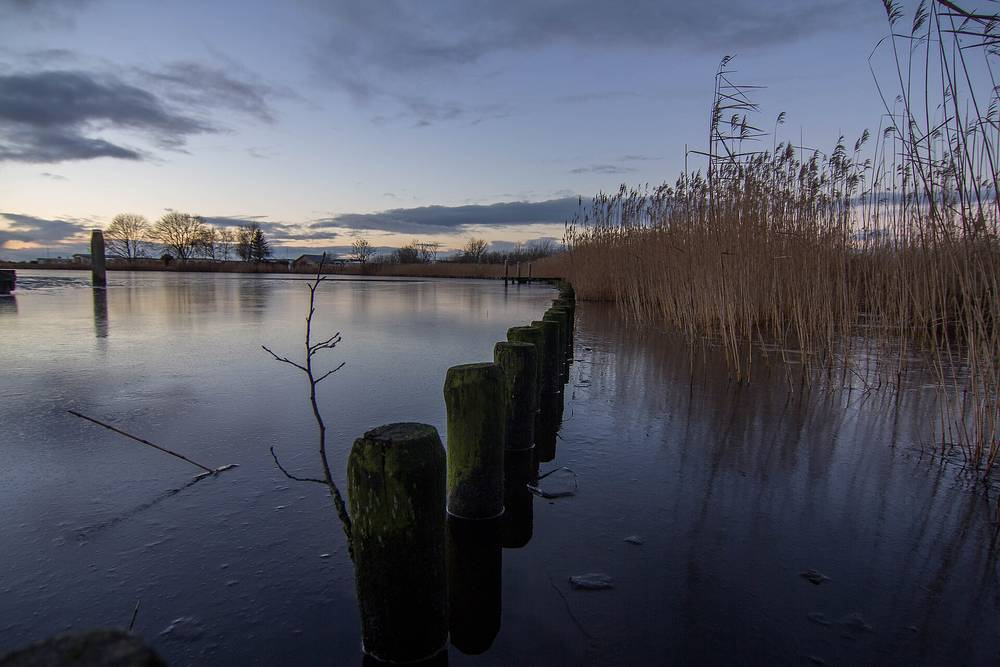
독일 바이에른 에겐호펜 주민, 뮌헨 시영 전력사가 짓는 7.2MW 풍력발전기에 협동조합 '고정 이자 대출'로 참여 길 열려
이웃 마을 시민에너지협동조합 '마이자허 란트', 5월 총회서 활동 지역 넓혀 에겐호펜 주민 우선 모집…첫 설명회에 40여 명, 발전기는 연말연초 가동 예정

아르헨티나 헤네랄 마다리아가 전력협동조합, 조합원 총회서 1MW 태양광 발전소 만장일치 승인…도시 낮 시간 전력 소비 20% 직접 생산
패널 1,620장에 땅 1~1.5헥타르, 넓힐 여지 두고 3헥타르 이상 확보 추진…시 소유 부지 협의 중, 사 오던 전기 줄여 아낀 돈은 모두 서비스 개선에 재투자

아르헨티나 네우켄 마푸체 공동체, 18MW 태양광 '안투' 지분 34% 가진 공동 개발자…인허가 마치고 전력 구매자 찾는 중
공동체 땅 9,500헥타르 가운데 42헥타르를 주민이 직접 골라…두 기업이 33%씩, 토지 용익 계약은 따로…금융 조달 마감 전, 대형 소비자와 장기 계약이 과제
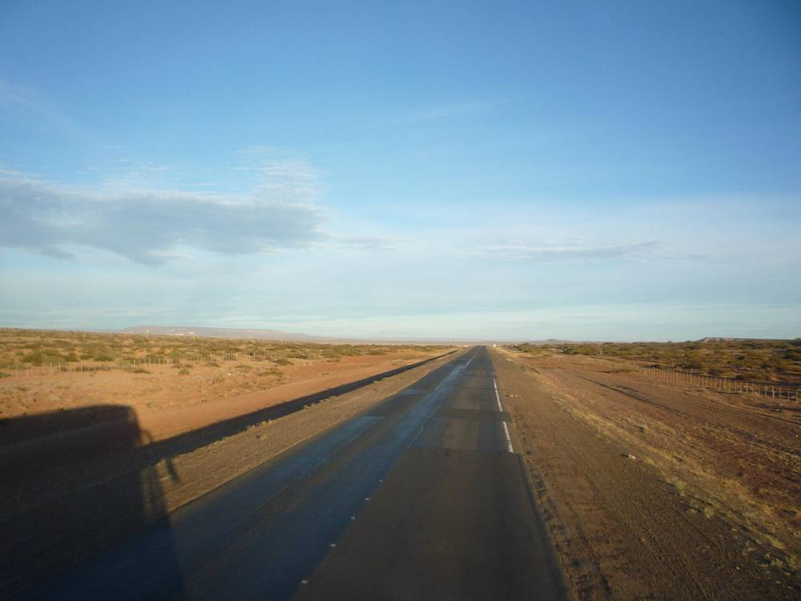
아르헨티나 헤네랄 마다리아가 전력협동조합, 조합원 만장일치로 1MW 태양광 단지 짓기로
패널 1,620장으로 도시 낮 시간 전력 소비의 20% 충당 추정…나머지 80%는 계속 사 오고, 아낀 구입비는 모두 서비스 투자에…시 소유 부지 협의 진척
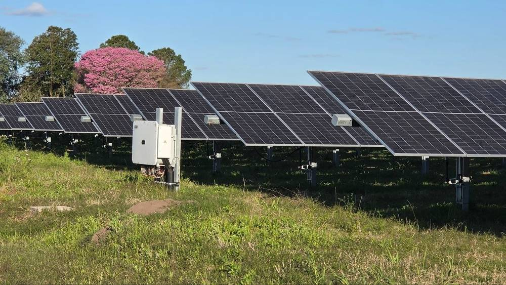
독일 지자체 3곳이 세운 풍력단지에 주민 450명, 2시간 반 만에 600만 유로 빌려줘
바이에른 '호폴딩어 포르스트' 3기 16.68MW, 연 6%·10년 후순위 대출로 주민 참여…작센안할트 베틴뢰베윈은 개발사 없이 주민 출자 풍력 최소 8기 추진
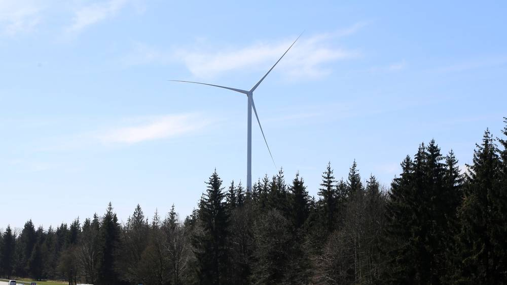
프랑스 낭트 경기장 주차장에 태양광 그늘막 6기…지자체 회사 3기·시민 출자회사 3기 나눠 짓는다
라 보주아르 주차장 패널 4,500㎡·연 1.1GWh 추정, 지름 2km 원 안 기업에 고정 요금 판매 추진…시민 주주 150명, 7개 시·읍 공영주차장 9곳으로 넓힌다
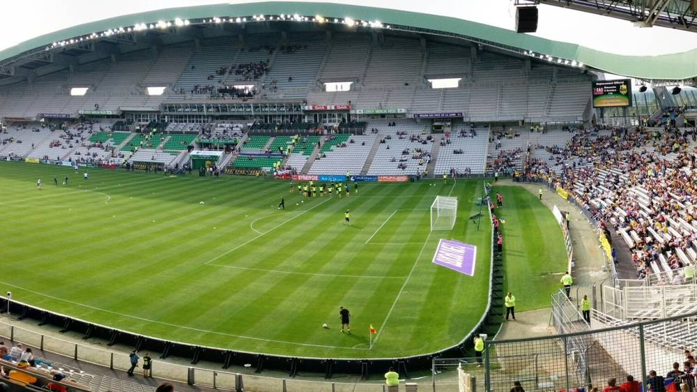
프랑스 오리냐크 시민 태양광 설명회에 80명 넘게 모여…주변 약 20km 집 지붕 모아 '1인 1표'로 운영
면사무소·제3의 장소 라 글리사드·ECLR 옥시타니·PETR 함께 추진, 지역자연공원 지원…설치 후보지 몇 곳 확인·가치 헌장 작성 뒤 지붕 주인 참여 호소, 용량·사업비는 아직 안 나와
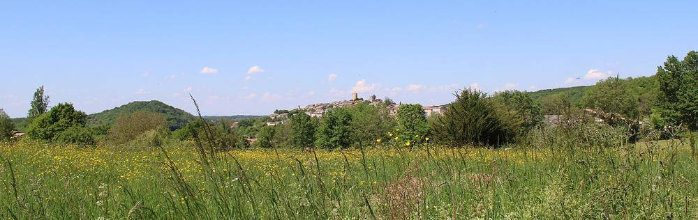
아르헨티나 네코체아 배전 협동조합 '우시나 포풀라르', 조합 땅에 3MW 태양광 부지 정리 시작…해안 마을 500kW도 추진
도매시장 전력 구매비 줄여 배전망·변압기 교체에 돌린다는 구상…같은 주 발카르세 전기협동조합도 본관 지붕 패널 60장 이어 30ha 부지 단지 구상, 두 조합 모두 사업비·일정은 안 밝혀
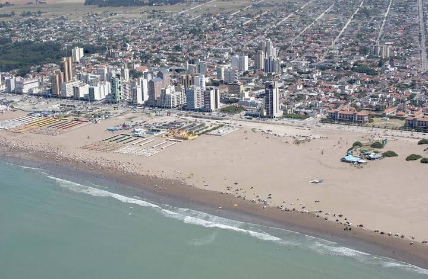
네덜란드 데벤터르 A1 풍력 4기 첫 주민설명회…에너지협동조합 '지역 소유' 내세웠지만 이웃 주민 반발
데벤터르에너지·로험에너지 협동조합과 퓌어 에네르지·에네코가 날개 끝 높이 280m 발전기 4기 추진…추진 측 연 6만 유로 주민기금 설명에 반대 단체는 출자 수익과 소음 피해가 따로 논다고 맞서
프랑스 라르작 고원 라쿠베르투아라드, 농가 지붕 148kWc 태양광 전기를 이웃 면 주민과 나누는 집단 자가소비 추진…31일 설명회
'룸 델 라르작', 농업법인 건물 지붕 800㎡ 패널 전기를 지름 20km 안 9개 면 주민에게…스마트계량기 있으면 가입, 이중 계약 없이 낮 시간 사용으로 요금 절감
아르헨티나 부에노스아이레스주, 전기협동조합이 조합원 쓸 재생에너지 직접 생산하는 '법 15.665' 시행…주립은행 장기 저리 융자 길 열어
시 배전 영업권 가진 협동조합·혼합경제회사에 '공동체 자가발전자' 지위…생산 전기는 배전 공공서비스로 보고 여러 조합 공동 발전 허용, 남는 전기 팔려면 주식회사 형태 필요
벨기에 주민 60여 명 마을 오메제, 협동조합이 700m 목재칩 열망 추진…지분 1구좌 250유로로 시민 출자 모집
'에네르지 포지티브 오메제', 이웃 숲 목재 부산물로 주택 10여 채·특수학교·청소년 시설·성당 난방 계획…허가 앞두고 사업비 일부 못 구해, 열망에 연결 안 되는 사람도 조합원 가능
수원서 '햇빛냉장고' 연구세미나…"시민 햇빛발전 수익을 공유냉장고 43곳 먹거리 나눔으로", '햇빛 먹거리 연대기금' 제안
수원지속가능발전협의회 30일 세미나, 전기료·수리비를 공모사업·후원에 기대는 공유냉장고와 시민 출자 발전소 잇는 방안 논의…에너지협동조합·시민햇빛발전 사회적협동조합·수원시 미래에너지팀장 토론, 운영협의체·소규모 시범사업은 후속 과제

스페인 부르고스 비얄롱케하르 산업단지 에너지 공동체, 1MW 공동 자가소비 태양광 사전 허가…국가 보조 47만6,236유로
업체 약 500곳·기업인협회·시청·지역 재단이 함께 추진…모듈 1,524장 1,043.94kWp, 공동체는 20년 누적 순절감 190만 유로 넘게 예상
이탈리아 트로이아 시의회, 시가 창립 회원인 비영리 재생에너지공동체 설립 의결…시민·지역 업체 26곳 서명
'Troia Green Energy' 제3섹터 사단으로 출발, 첫 목표는 에너지 빈곤 막기…175.08kW 설비는 아직 계획, 주 보조금 공모 지원 앞둬
영등포 시민햇빛발전협동조합, 공영주차장·공공건물 옥상에 주민 출자 햇빛발전소 제안…구청장 측 설치 가능 여부 확인하겠다
구는 공간 발굴·사용허가만 맡고 건설비·대부료·철거비는 조합과 주민이 지는 구조…발전수익 일부는 반지하 등 취약계층 주거 개선에 쓰겠다는 구상, 대림3동 공영주차장·신길 환승주차장 거론

스페인 알바세테 작은 마을 3곳, 에너지 공동체 공증 설립…마을 부지에 공동 자가소비 설비 추진
아이나·레수사·비야발리엔테, 주민·상점·기관이 초기 투자 없이 참여하는 구조 내세워…마을별 수요 분석해 1단계 설비 규모 정하기로
독일 뫼네제 풍력 사업자 9곳, 수익 나눌 '주민·에너지 재단' 정관 초안 제시…11월 3일 의회 논의
시 예산에 바로 넣는 '엔제 모델'과 재단 사이 3년 넘게 오락가락…첫 이사회는 사업자가 정하는 초안, 이미 약정한 사업자만 1MW당 해마다 1,000유로 자발 출연 제안
미국 미줄라 시민 기후기금, 연방 지원 끊긴 자리 메워…비영리 자재점 60kW 태양광에 모자란 8,000달러 보태
클라이밋 스마트 미줄라 '기후 촉매 기금', 개인 기부와 지역 신용협동조합 출연으로 탄소 감축 사업의 마지막 공백 채워…저소득 공공임대 12세대 열펌프 차액도 지원
폴란드 크라쿠프, 시·AGH 대학·주택협동조합이 '지역 에너지 공동체' 설계 착수…에너지 협동조합·집합체 모델 비교 검토
'아그레가트 크라쿠프-크로보드자' 10월 28일 첫 회의…시 기관 에너지 비용 절감·전력 수급조정 시장 참여 가능성 검토, 절감 규모·시행 시기는 아직 안 정해져
캐나다 하이드로원, 새 500kV 송전선 '원주민 공동체 최대 50% 공동 소유' 제시…와사우크싱 부족 설명회서 환경 보호·결정 참여 요구
서드버리~배리 약 300km 송전선, 2032년 가동 목표…공동 소유자는 규제기관이 정하는 수익률(지금까지 8~10%) 받는 구조, 하이드로원 "1970년대 기존 선로는 제대로 된 협의 없이 지었다" 인정
네덜란드 헤이그 트란스발 지역 열망 고장 두 주째…주민 100명 가까이 난방·온수 없이, 시는 "우리는 소유자가 아니다"
시의회 모든 정당 "시가 더 나서라" 요구에 시는 비상 조치만…연말 전 '열망에서 빠져나올 법적 방법' 담은 서한 내고 소비자시장청 독립 조사 촉구하기로
프랑스 시민 가스 협동조합 '가즈쿱', 출자 모집 일주일 만에 조합원 100여 명이 15만6,000유로
전력협동조합 에네르쿠프 사람들이 세운 협동조합형 가스 공급사…공급부터 시작해 생산 설비로 넓히고, 천연가스 혼합 여부는 조합원이 정하기로
미국 투손, 민간 전력회사 영업권 25년 갱신 11월 3일 주민투표…공공전력 시민 모임 반대 운동
투손 전력(TEP) 해마다 200만 달러 에너지 지원 약속, 25년 약 6,400만 달러…반대 쪽은 시가 공공 인수 추진해야, TEP는 부결 땐 공사비 늘 수 있다고 경고
프랑스 협동조합 은행 라네프·전력협동조합 에네르쿠프, 재생에너지 예금통장 내놔…10유로부터, 이자 최대 100% 에너지 빈곤 단체에 기부
예금은 라네프 전체 대출 재원으로 들어가 지역에 뿌리내린 시민 운영 사업을 우선 지원…라네프 2025년 재생에너지 72개 사업에 3,900만 유로 대출
스페인 아스투리아스 에너지 공동체, 2024년부터 20곳 넘게 생겨…주 에너지재단이 11곳 동행, 보조금 110만 유로
무로스데날론 '무로스 에네르시아', 주민 모임 제안에 시청이 참여…시 체육관 지붕 20.24kWp로 주민 8명·시청에 공급 앞둬, 용량 모자라 대기 주민 16명
영국 카디프 시 소유 열망 회사, 쓰레기 소각 남는 열로 웨일스 의회·밀레니엄센터 난방…시영 임대주택·주민센터도 먼저 연결
1,550만 파운드 망, 영국 정부 보조금·웨일스 정부 대출로 깔아…시의회 "세 건물 난방 배출 최대 80% 줄일 수 있다", 시내·카디프 베이 2단계 재원 검토
독일 자르베크 지역 열망 주민총회에 약 230명 모여…대상 지역 455가구 초청해 요금·기술과 열 협동조합 설립 설명
지자체 지도부, 10월 28일 저녁 마을 회관 뷔르거샤이네서 열망 잠재 지역 주민에게 사업 직접 안내…시장은 마을 기반시설의 큰 걸음이라고 강조

독일 슈발름-크뉠 에너지협동조합·에너지회사 EAM, 미헬스베르크에 태양광 7MW·배터리 2.5MW 착공…2027년 봄부터 약 2,000가구분
오랜 풍력 협력 이어 처음 함께 짓는 태양광+저장 단지, 약 400만 유로 투자에 조합원도 참여해 수익 나눠…농사에 덜 맞는 땅 약 8ha에 종다리 창 21곳·양 방목
스페인 엘프라트 '시민 에너지 공동체', 공유 태양광 지붕 4곳에서 19곳 1MW로 늘려…낮 시간 1,500가구분, 요금은 판매사보다 50% 낮게
시청 40%·지역 기업 40%·사용자 협회 20%가 지분 나눈 비영리 법인…지붕·투자 없이 가입만으로 참여, 밤 공급 위한 공동 배터리는 규제에 막혀 시범 단계

아르헨티나 산후안주, 광산 기금으로 이글레시아에 '공동체 하이브리드 태양광 단지' 입찰…태양광 10MWp·배터리 30MWh
베라데로 광산 인프라 신탁기금이 건설비 전액 부담, 첫 추정 투자액 186억 페소 넘어…주 전력규제기관이 취약계층 우선 주민 혜택 방식 정할 예정, '전국 첫 사례'는 주정부 설명
독일 슈투트가르트 시영 에너지회사·주택협동조합, 가스 쓰던 58가구 고층 아파트에 히트펌프 '에너지 모듈' 가동…세입자 난방비는 그대로
나무 외장 컨테이너 속 히트펌프 4대를 녹색전기로, 전기 1kWh로 열 3.5~4kWh…모듈 설치 10분·건물 연결 반나절, 옆 동 57가구 모듈은 2025년 가을부터 가동
독일 튀빙겐 시영 에너지회사, 첫 시민 직접 투자 상품 내놔…트라우프비젠 태양광 단지에 500유로부터, 자사 에너지 고객 연 4%
'swt-시민투자'는 기간 7~10년 후순위 대출 방식, 그 밖 시민은 연 3.5%…첫 이자 2027년 12월 31일, 연방도로 B27 따라 1km 넘게 이어진 회사 최대 지상 태양광·배터리 단지

스페인 이비사, 공영주차장 지붕 태양광 70kW를 반경 5km 주민·소상공인과 나눠…1kW 연 100유로, 취약가구 우선
카스세레스 주차장 지붕 100kW 가운데 30kW는 시청이 쓰고 나머지로 주택 49가구·업소 7곳 수용 예정…시청 추산 1kW당 연 최대 300유로 요금 절감, 11월 9일까지 신청
"섬 재생에너지 성패는 기술보다 주민 참여와 준비 단계"…IEA PVPS 보고서, 섬 11곳에서 성공 요인 111개 추려
성공 요인 거의 절반이 첫 삽 전 준비 단계에…지역 주도 인물·전 기간 이해관계자 참여·장기 계통 계획·계통 보강 4가지가 거의 공통, 공동체 소유 풍력의 삼쇠·조합원 소유 전력회사의 코디악 등 분석
필리핀 카마리네스노르테 전기협동조합 이사회, 아보이티즈파워 합작 의향서 거부…조합원·노조 "공공서비스를 장사로 만들지 말라"
9월 2일 받은 합작계약 의향서를 결의 제171호로 공식 거부…"제휴 구조·조합원 영향 불분명" — 민영화 반대 운동 "합작 추진이 완전히 멈출 때까지 끝난 것 아냐"
독일 주민 700여 명 마을 다르데스하임, 풍력 수익 1% 마을 사업에 쓰고 리파워링 땐 주민협동조합이 지분 51%…440만 유로 목표에 670만 유로 몰려
연 1억5,000만kWh로 주민 소비량의 약 100배 만드는 30년 풍력 마을, 바람 많은 해 마을 몫 10만 유로…마을 3곳 주민 200여 명 조합 가입, 이익 공유를 산업·일자리로 잇는 일은 과제
말레이시아 사바 원주민 사회적기업 토니붕, 유엔 말레이시아 혁신상…주민이 계획·건설·관리하는 재생에너지 설비 40곳 넘게 지원
페남팡 코불루 소수력, 주민 주도 개량으로 10kW→20kW 두 배…주민이 운영하고 주민이 합의한 요금으로 유지비 마련
네덜란드 조테르바우더 협동조합 풍력단지 옆에 10MW·20MWh 배터리…주민은 풍력·배터리 수익 함께 나누고 이웃 기업은 계통 숨통
라인란트 에너지 협동조합·에메트 그린 공동 사업 '더 바터회이전', 6MW 풍력기 2기 접속점 그대로 쓰고 배전사업자와 용량 제한 계약 2건…2027년 봄 정격 가동 목표
체코, 에너지공동체 전용 보조 공모 10억→1억 코루나로 줄이고 신청 기한 올해 말로 당겨…공동체 연합 "예고 없는 마감은 해법 아냐"
국가환경기금 'KOMUNERG', 앞서 38억에서 10억 코루나로 한 차례 삭감…2027년 신청 준비하던 공동체들 자기 돈 넣은 사업 막혀, 직접 소비 60%·예약 용량 30% 조건 고친 새 공모 요구
사찰 에너지 자립 설명회서 태양광 '자가소비형'·'부지임대형' 두 모델 나와…초기 비용·행정 절차에 막힌 사찰 겨냥
불교환경연대·비로자나자연에너지협동조합, 29일 서울서 설명회…요사채 지붕은 직접 쓰고 주차장은 사업자에 빌려주는 방식, 현장 진단부터 인허가·시공까지 돕겠다고 밝혀

스페인 우에스카 관개 공동체 5곳, 공동 회사 세워 태양광 관개 추진…산미겔 1,820kW 자가소비
EU 혁신기금 사업 CO2-FrAMed에 보조금 435만6,000유로·은행 신용한도 740만 유로, 다섯 공동체가 구성한 회사가 설비 자금 조달·건설·운영 맡아…첫 10년 이산화탄소 약 1만7,700톤 감축 추산
호주, 재생에너지·송전 개발사 등급제 공개 가동…첫 평가 5개사 중 3곳 공동체 참여 5성
에너지기반시설 위원, 7개 기준 독립 평가 결과 온라인 공개…5성 기준은 깊은 이익 공유와 공식 공동 의사결정, 20곳 넘게 평가 중이며 연방 용량투자제도 11차 입찰부터 참여 의무
화성 농산물산지유통센터 옥상에 299kW 시민발전소…시가 지붕 내주고 시민이 출자한 'RE빛 제4호' 준공
화성시민재생에너지발전협동조합 "화성 첫 시유지 시민에너지발전소"…시장은 공공시설 옥상·주차장으로 시민참여형 태양광 확대, 조합은 장안면 석포6리 햇빛소득마을 추진

미국 유타 16개 지역, 2027년 1월 '공동체 청정에너지 프로그램' 시작…주택 월 4달러 더 내고 저소득 가구는 무료
지자체 협의체 '유타 재생가능 공동체'가 로키마운틴파워와 운영, 주민은 기본 가입되고 언제든 탈퇴 가능…태양광 2곳 최종 계약 협상, 새 청정에너지 최대 500MW 목표
아르헨티나 코르도바 베르로타란 전력협동조합, 첫 태양광 800kW 준공…주택용 조합원 전기요금 15~20% 인하 추산
발전량은 조합이 주 전력공사에서 사 오는 전기의 약 3분의 1, 11월 고지서부터 반영…코르도바에선 배전 협동조합과 손잡은 솔라 공동체 12곳·11.4MW, 업체는 2027년 조합 17곳 40MW 내다봐

프랑스 그랑테스트 시민에너지 지원망 GECLER, 2028년까지 참여 시민 세 배 목표…시민 모임 58곳 돕고 29곳 발전소 가동
지역 단체 3곳이 2019년부터 상담·타당성 조사·법률·재무 지원, 지원 사업 설비 합계 19MW·연 23.5GWh…아르덴 시민 풍력·사베른 공공건물 지붕 태양광·보주 옛 수력 복원 등 조합원 2,000명 넘어
스페인 테루엘 부에냐 에너지 협동조합, 면사무소·주민단체도 조합원…아라곤 첫 '실물 배터리' 공동자가소비 가동 준비
조합원 14명, 태양광 40kW로 계량기 20개 넘게 묶어…약 10만 유로 들여 설비 마쳤지만 배전회사 연결 승인 두 번 무산, 남는 전기 판매 수익은 주민단체가 받아 마을 사회사업에
미국 앤아버시, 시민단체의 '공공전력' 주민투표안에 투표 8일 앞두고 무효 확인 소송…주 법무장관실은 "헌장 수정으로 볼 수 있다"
시의회 10 대 1 결의 따라 69쪽 소장 내…시는 "헌장 개정 절차 안 밟았다", 시민단체는 "막판 선거 결과 바꾸기" 반발, 판결·심리 일정은 아직 없어

네덜란드 아메르스포르트시, 시민 에너지 단체가 낀 이설트 풍력 2기 허가 공식 거부…위트레흐트주, 인허가 권한 회수 결정
개발사 REF와 사먼 에네르히 아메르스포르트의 합작 '윈드 옵 이설트', 시의회의 구속력 있는 반대 의견에 따라 집행부가 확정…시의회는 주 정부에 유감 동의안 23 대 13으로 채택…주는 11월 4일 권한 회수 결정, 결론은 내년 중반 예상
영국 뷰들리 시민단체, 공영주차장 위 '공동체 소유' 태양광 차양 제안…도그 레인 주차장 일부에서 시범 사업
트랜지션 뷰들리의 '뷰들리 에너지', 시범이 성공하면 뷰들리·와이어 포리스트의 다른 주차장으로 넓히는 구상…11월 7일 주민 의견 수렴, 용량·사업비·출자 방식은 밝히지 않아

루마니아 옛 탄광지대 지우 계곡에 에너지공동체 지원금 540만 유로…페트로샤니 주택소유자협회가 첫 등록
사업비 98% 지원·자부담 2%, 40가구 공동주택이면 가구당 약 200유로 예시…시민은 협회 법인 세워 에너지규제청에 등록해야, 마감 2027년 3월 31일
이탈리아 알바 시, 재생에너지공동체 두 곳에 조합원으로 가입 추진…지자체 30곳·조합원 1,000명 넘는 'CER 로에로' 포함
적십자에서 출발한 '연대형' 공동체와 함께 가입, 시는 새 비용 부담 없고 공공건물 계량기는 골라서 단계적으로 연결…집행부 방침 승인 뒤 시의회 본회의 남아
이탈리아 알토비첸티노 재생에너지공동체 본격 가동…시 18곳·조합원 169명, 2027년 말 잠재 7.2MW
2026년 1월 운영 시작해 73kW 가동·97kW 곧 추가, 시 체육관 지붕 400kW 등 2.17MW 준비…11월부터 태양광·히트펌프 시민 공동구매
네덜란드 크림펀안덴에이설, 소방서 지붕에 주민 협동조합 태양광 200여 장…1장 75유로 증서로 주민 참여
시는 지붕을 내주고 에너지협동조합 에네르히크 크림펀이 조합원과 함께 패널 구매, 약 25가구분 전기 생산 예상…목표 수익률 연 3%에 해마다 투자금 일부 돌려받아 협동조합 계산 순수익률 최대 6%

영국 스코틀랜드 베티힐 48MW 풍력단지 새 주인 나다라, 주민 지분 최대 20% 참여 기회 약속 이어받아
개발사 에덴 리뉴어블스가 마련한 공동체 이익 패키지 승계…파 노스 공동체 개발신탁 통한 지분 참여·지역 전기요금 할인·학교 교육 프로그램, 2027년 초 착공·2028년 말 가동 예정
독일 기후 지자체 자르베크, 마을 바이오가스·풍력 전기로 데우는 지역 열망 요금 28일 주민총회서 공개…마을 중심 건물 455곳 대상
열 사업체 베르메베르크, 11월부터 2027년 3월까지 연결 가계약 받아…계약이 충분히 모이면 지자체 의회가 최종 결정하고 연결률 높은 거리부터 공사, 첫 열 공급은 2028년 말 목표

남아공 광산 피해 주민운동 MACUA, 21억 랜드 손반어르 태양광 사례 들어 재생에너지 사업의 지역사회 소유·결정권 법제화 요구
보고서 「녹색 전력, 오래된 불평등」, 주민 의견 없이 계약 맺고 소상공인 혜택도 없었다고 주장…개발사는 주민 805명 고용·교육 내세우며 공공 입찰 밖 민간 계약이라 공동체 이익 요건 대상 아니라고 설명
프랑스 바스크 에너지협동조합 I-Ener, 옛 쓰레기 매립장에 지역 첫 대형 태양광 착공…시민·기업·공공기관에서 100만 유로 모아
생페쉬르니벨 살루아가 발전소 사업비 약 240만 유로, 연 3.1GWh 전량 협동조합 전력판매사에 30년 공급하고 2027년 4월 가동 예정…모금은 조합 지분과 연 3% 조합원 대출 두 갈래, 의결권은 시민 40%·노동자 20%·공공기관 20%
평창 운두령 21MW 풍력 업무협약 체결…600억 원 사업에 주민·군 일부 투자, 주민은 해마다 투자금의 10% 가량 이자
용평면 노동리 운두령 일대 풍력단지, 28일 풍력개발업체·평창군·주민 협약…이자 수익으로 마을 복지 꾸리는 공공주도형 사업 평창서 처음, 주민 투자 총액·참여 주민 수·투자 방식은 아직 안 나와

프랑스 사부아 지자체·협동조합 8곳이 함께 지은 알프쾨르 에네르지 5MWc 태양광 준공…산업단지 놀던 땅 5ha에서 연 6.5GWh
코뮌 연합체 쾨르 드 사부아 주도로 5년 준비, 전력 협동조합·혼합경제회사·마을 발전소 협동체 참여…전기는 단지 기업과 직접 계약해 지역에서 쓰고 에네르지 파르타제 인증도 받아
미국 켄터키 렉싱턴, 폐매립장 태양광에 '공동체 이익 협약'…저소득 가구 에너지비 지원·직업훈련 자금 의무화
시의회, 헤일리 파이크 매립장 개발사와 10월 22일 협약 승인…사업 관련 면허세 보고하게 해 수입 추적, 시는 "미국 최대 매립장 태양광" 주장
미국 미시간, 11월 3일 전력회사 정치자금 금지 주민투표…시민 56만 명 서명으로 올린 제안 2호
전력·가스 회사 PAC의 후보 직접 기부와 임원·이사·가족 기부까지 막는 안…찬성 측은 비싼 요금·잦은 정전이 전력회사 입김 탓, 반대 측은 표현의 자유 침해·영향력이 전국 거액 기부자로 옮겨갈 뿐
미국 캘리포니아 뷰트 카운티, 1,700에이커 태양광 개발사의 지역 이익 협약안 결정 미뤄…주민들은 환경평가부터 요구
주 허가 절차(AB 205)로 카운티는 허가권 없고 개발사는 지역 기관·비영리단체와 맺은 협약안 내야…연 30만 달러·소방서 부지·소방 50만 달러·보안관 25만 달러 제안, 카운티가 거절하면 다른 비영리단체와 맺을 수도
뉴질랜드 캔터베리 광역의회, 홍수방어 부지 2,700ha 태양광 임대 놓고 주민 의견 묻는다
환경캔터베리, 웨스트멜턴~얄드허스트 사이 땅을 개발사에 빌려주는 안 검토…초기 평가로는 300ha만 써도 약 150MWp·4만 가구분, 의장 "아무것도 정하지 않았다"
미국 오리건 유진, 대기업 부담 '클린에너지 기금' 주민투표 앞두고 찬성 72만7,000달러·반대 13만 달러 모금
주민 서명으로 투표에 오른 '메저 20-388', 대기업에 2% 부담금 매겨 기후 사업 기금 조성…반대 쪽 모금 이달 초의 5배로 늘었지만 격차 여전, '책임 없는 백지수표' 공방에 선거자금 진정까지
미국 브루클린 24세대 주택협동조합, 추가 분담금 없이 지붕 태양광…건물 통합계량 차익으로 23만2,000달러 대출 갚는다
선셋파크 '파크힐', 세대별 전력 계정 없애고 조합이 전기 한꺼번에 사서 조합원에게 소매요금 청구…재계량 수입 연 7,000달러·태양광 크레딧 연 7,000달러에 정부 지원금으로 상환, 갚은 뒤 쓰임은 이사회가 결정

미국 앤아버 시영 전력 투표 앞두고 자금 격차…주민단체 누적 현금 약 6만 달러, DTE 지원 반대 단체는 누적 지출 170만 달러 넘어
7월 21일~10월 18일 보고 기간 찬성 단체 주민 소액 기부로 2만7,000달러 넘게 모아…반대 단체는 같은 기간 현금 4만 달러에 DTE 현물 7만9,000달러 넘게 받고 투자자 소유 전력회사 단체도 가세, 투표는 11월 3일
스페인 시민단체, 해·바람 전기 수익으로 연금·공공주택 대는 '세대 에너지 기금' 제안…11월 29일 총선 앞두고 정당에 전달
HOPE 등 '임풀소 레헤네라티보', 노르웨이 석유 연금기금 본뜨되 국내 실물자산 갖는 영구 기금으로…재생에너지 사업 세금 일부는 면에 남기고 단지마다 면 단위 에너지공동체, 2040년 에너지 주권 목표
캐나다 최장수 영화관 패트리샤 극장 지붕에 24kW 시민소유 태양광…주민 최소 500달러 출자로 공동소유자 모집
BC주 카텟 지역 극장은 지붕만 내주고 전기를 사 써…솔셰어가 사업 맡고 노동자협동조합 VREC 솔라가 시공, 지역 주민 먼저 모집한 뒤 BC주 주민으로 넓혀 11월 4일 마감
스페인 아로우사섬 주민단체, 면 공설시장 지붕에 50kW 태양광·28kWh 배터리…20가구·홍합 양식인 조합·면사무소가 전기 나눈다
시민단체 아로우사 엔 트란시시온의 두 번째 에너지공동체 Mar & Luz 2, 연 75MWh 추산…미리 정한 비율로 배분하고 남는 전기는 배터리 거쳐 배전망으로, 건축 허가 신청·배전선로 협의 남아
스페인, 학교 지붕 햇빛을 이웃과 나눈다…이비사 초등학교 40kW 중 27kW 주민에, 산타폴라는 학교·체육관 200kW로 에너지공동체
발레아레스 정부, 산조르디 초등학교 지붕 전기를 반경 5km 가정·소상공인에 1kW당 연 100유로로 나눠 약 300유로 절감 추산·취약가구 우선, 11월 9일까지 신청…알리칸테 산타폴라는 100kW 2곳으로 가구·상점 200곳 수요 최대 50% 충당
반도체 도시 용인, 재생에너지 발전 2022년 소비량의 0.8%…1호 시민참여 햇빛발전소는 18억 원 중 9억1,000만 원 협동조합 출자
경기 31개 시·군 중 온실가스 배출 4위·신재생 발전량 27위, 1차 에너지계획 이행률 27.6%…공공시설 4곳 1,000kW급 주민참여형 태양광 설치 중, 조합원 200여 명 시민 햇빛협동조합도 창립

오스트리아 레오벤 시민발전소 에너지공동체 1년, 햇빛전기 약 9만3,000kWh 이웃끼리 나눠 써
2025년 3월 출범해 회원 80명 넘어…기존 전기 계약은 그대로 두고 덧붙여 가입, 생산이 수요보다 많아 새 회원 모집
독일 바이에른 푀킹 주민 열망, 에너지협동조합과 손잡고 연방 시범사업 10만 유로…210가구 중 88가구 연결 희망
주민 모임은 현장 홍보·상담, 협동조합은 자본·기술 맡는 '지역 모임' 모델 시험…연방 보조금 결정 늦어져 가동은 2028년 말로 밀려, 면은 계획만 세우고 운영엔 안 나서
천주교 교구 에너지 전환 제각각…대전교구 신자 출자 햇빛협동조합, 조합원 2,982명·성당 발전소 42기 3,250kW
15개 교구 질의 결과 수원교구 자가발전은 목표 22MW의 약 12%, 대전교구는 탄소중립 본당 인증제 운영…교구별 실적을 같은 기준으로 모으는 한국교회 공통 집계 체계는 확인 안 돼

독일 다하우군 피어키르헨 풍력단지, 허가·주민 지지 얻고도 연방 입찰 문턱에 착공 기약 없어
기초자치단체 2곳·협동조합 참여한 풍차 4기 계획…바람 약한 남부 보너스로는 북부와 겨루기 어려워, 지역구 연방하원의원 남부 전용 입찰 요구 공개서한
태양광 1위 캘리포니아에 커뮤니티 솔라가 없다…2022년 법 만들고도 교착, 뉴섬 주지사 AB 1813 거부
규제기관 CPUC는 2024년 결정권을 전력회사 쪽에, 회피비용으로 값 매기고 배터리 붙인 새 법안은 9월 거부권…시민·노동·환경단체 연합 2027년 재추진, 개발사는 제도 있는 22개 주로 투자 돌려
스위스 에네트뷔르겐, 민간 태양광 3곳·공공 1곳 묶은 지역 전기공동체…11월부터 공공건물 12곳에 동네 햇빛 전기
니트발덴 전력공사와 주 첫 사례, 연간 약 9만kWh 공급…공동체가 값 직접 정해 생산자에 kWh당 8라펜, 구매가 19.67라펜
스페인 에이바르 에너지공동체, 시 건물 지붕 3곳 태양광에 조합원 90명 더 모은다
시청이 학교·문화회관 지붕 1,093㎡ 내줘 패널 364장 설치…가정·상점·중소기업 200곳 참여, 추천 가입하면 둘 다 회비 3개월 면제
이탈리아 이브레아 125년 에너지협동조합 Aeg, 가스 배관망 이탈가스에 넘기고 매각 대금 전부 카나베세 지역에 재투자하기로
조합원 약 2만 명, 지난 2년 요금 환급으로 100만 유로 돌려줘…광역 입찰 제도로 배관망 운영 접고 재생에너지·사회 사업 담은 산업계획 마련 중, 매각 금액은 비공개

이탈리아 마르케 베나로타 시 재생에너지공동체, 조합원 총회 열고 운영 시작…시는 가입자 수로 마르케 1위·이탈리아 2위라고 밝혀
가입자 수·설비 용량·인센티브 금액은 공개 안 해…발전설비는 지역 회사 SDF Green Energy 소유, 국가 인센티브는 같은 1차 변전소 아래 주민·사업자에게 고르게 나눠
네덜란드 바털란트 풍력협동조합, 풍차 수익 3만 유로 동네 활동에 내놓는다…2027년부터 조합원 온라인 투표로 지원처 결정
모니켄담~마르컨 제방 풍차 2기를 가진 주민 조합, 단체당 최대 1,000유로·2월 28일까지 신청…스포츠·문화·돌봄 세 분야, 외로운 이웃 잇는 모임에 더 관심

미국 미시간 '커뮤니티 솔라' 법안, 2021년 뒤 6건 나왔지만 모두 표류…하원·상원 4건 위원회에 묶여 청문회 일정도 없어
저소득 가구 몫 40%·요금 최소 10~20% 절감 담은 하원안까지 나왔지만 DTE·Consumers Energy "미가입자에 비용 전가" 반대…앤아버는 시 에너지공사로 가정에 태양광·배터리

이탈리아 로디 '연대형 재생에너지공동체' 재단 첫 총회…시민·지자체·기업 회원 30여 명 참석, 에너지 공유 구성 4곳 중 2곳 가동
2025년 1월 비영리 재단으로 출범한 Cers 솔라레 로디자나, 사회 분야 활동가 2명 이사로 새로 선임…나머지 2곳은 국가 에너지서비스공사 심사 중
영국 웨일스 랜이드로스 주민 에너지 클럽, 정부 기금 94만1,280파운드 받아 사회적 가상발전소 넓힌다…10가구 더 무상 태양광·배터리
고등학교·주민센터·청소년클럽에 재생에너지 설비…웨일스 정부, 참여 가구 전기요금 연평균 368파운드 절감 추산, 공동체 기금으로 해마다 약 1만4,000파운드 예상

폴란드, 도시 주민도 에너지협동조합 만들 수 있게 법 고쳤지만…EU 국가보조 심사에 묶여 시행 멈춰
2025년 10월 개정법에 도시 조항 넣었으나 EU 집행위 긍정 결정 때까지 적용 정지…기후부 올해 안 결론 기대, 시민단체는 전기를 팔 수 없는 협동조합이라 경쟁 해치지 않는다고 주장
평창군, 21MW 운두령풍력 주민참여형으로 추진…28일 군·발전사·한국남동발전·주민대표 업무협약 예정
태백 가덕산 풍력단지 개발 방식 적용 계획…사업 초기부터 주민대표와 정보 공유, 발전 수익 지역 환원 방안 마련 방침, 주민 지분율·수익 규모는 아직 안 나와

그리스 에너지공동체 연대체 ΔΕΣΜΗ, 정부 새 법안에 "주민 기반 넓은 공동체에 계통 우선 접근권을"…민간 사업과 '형식상 같은 대우'로는 밀려난다
환경에너지부 법안 의견수렴에서 3·4조 비판…계통 여유 용량 별도 몫, 짧은 인허가, 대기 신청 순위 보호, 출력제한 상한, 규제청 감독 등 5가지 요구

스페인 카탈루냐 오소나 에너지공동체 20여 곳, 마을 4곳 도는 '에너지 투어'로 경험 나눠…카탈루냐 118곳 중 28곳이 오소나에
군 지역에너지청·협동조합 OECOOP 주최로 비크·산페레데토레요·토레요·발레냐 공동체 방문…오소나·류사네스엔 협동조합형 29곳, 주민 96%가 자기 마을 공동체에 참여 가능

루마니아 탄광지대 고르지·돌지 군, 에너지공동체에 EU 기금 98% 무상 지원 공모…시민·아파트 주민회도 직접 신청
고르지 4,157만6,941유로·돌지 352만9,411유로 배정, 신청은 2027년 3월 31일까지…그린피스 루마니아, 40가구 아파트 한 동이면 자부담 8,000유로 예시 들며 11월 주민 워크숍
네덜란드 하설테르네이베인 마을협동조합 '에너지 나누기' 설명회에 주민 100명 가까이…동의서 모자랄 만큼 호응
마을협동조합 더 브뤼흐·사회단체 로빈두트 공동 주최, 새 에너지법이 허용한 이웃 간 전기 나눠 쓰기 설명…주민 사용량 자료 모아 실행계획 세운 뒤 실현 여부 판단
프랑스 샤토가야르 마을 학교 지붕에 시민협동조합 태양광 패널 178장…조합원 215명, 집단 자가소비 추진
주민 투자 협동조합 '플랭 데네르지', 공공건물 지붕 빌려 발전소 세워…방학 끝나기 전 설치 마무리, 이웃이 함께 쓰는 전기를 요금 관리하며 공급할 계획
독일 에르딩 군·22개 지자체 에너지회사, 풍력 부지 협상 재개…시민에너지공동체 BEG 이젠탈과 지역 나눠 맡기로
2014년 10H 규정으로 멈췄던 '에너지비전 에르딩', 에너지알리안츠 바이에른과 풍력·태양광 약 40MW 목표…군은 히르샤우 태양광단지에 출자, 매립지 태양광은 망 연결 문제로 중단
벨기에 비엘살름 숲 풍력 5기 허가…시민협동조합 쿠랑 다르 공동 사업자로 참여, 4기는 시 소유 땅
왈로니 국토부 장관, 1월 불허 결정 뒤집고 단일허가…기당 7MW·최고 250m, 연 97GWh로 2만6,000가구분 예상, 반대 주민모임은 국가행정법원 소송 예고
독일 오버하운 주민 협동조합, 마을 열공급망 중앙시설 상량식…98가구 조합원, 총사업비 800만 유로
7년 준비 끝에 바이오매스 보일러 건물 완공, 2027년 여름 전면 가동 목표…연방 보조 40%·지역 은행 대출에 조합원 출자 4,000유로·연결비 2,000유로
폴란드 골리나 시의회, 시의 에너지협동조합 가입 만장일치 의결…문화의집·의용소방대와 함께 재생에너지 생산
새로 생긴 골리나 시 에너지협동조합이 전기·바이오가스·바이오메탄·열 생산과 거래·저장 맡아…배전사 전기 구매 줄이고 에너지 자립 지향, 국가회복계획 자금도 노려
이탈리아 시칠리아 내륙 4개 마을 재생에너지공동체 '시칠리아 솔리달레', 1년 반 만에 조합원 75명·태양광 약 1MW
무소멜리 등 4곳 묶어 가동 약 500kW에 계통 연결 대기 약 500kW…농지 대신 기존 지붕에 작은 설비 우선, 2027년 2MW 넘기기 목표

미국 워싱턴주 키챕카운티, 공익사업구 전기사업 권한 놓고 주민투표…민영 전력사 반대 운동 240만 달러 vs 찬성 자원봉사자 7,000달러
퓨젓사운드에너지 요금 2년 새 45% 올라…'제안 1호' 통과되면 약 13만 전기 계약 공영 전환 타당성 조사 길 열려, 결과는 11월 선거에서
스코틀랜드 니어트나가오이스 해상풍력 공동체기금, 동래머뮤어 주민단체 3곳에 11만 파운드 넘게…주택 단열에 4만5,000파운드
주민 심사단이 주민이 만든 '지역 장소 계획' 목표에 맞춰 배분…이번 회차는 가구 에너지효율과 생물다양성에 집중
스페인 무르시아주 에너지공동체 19곳 생겼지만 발전 중은 4곳…지자체가 공공건물 지붕 내주고 취약가구에 전기 나눈다
로스알카사레스, 공공건물 지붕 4곳 내주는 대가로 생산 전기 10%를 에너지빈곤 가구에…선구 공동체는 정부 보조금 12만4,000유로 정산 못 받아 대출로 공사
영국 최대 공동체 소유 태양광 '데릴워터', 배전망 회사가 넉 달 발전 막아 재정 위기…조합원 9,500명 협동조합
북데번 40MW 단지, 변전소 변압기 차단 여파로 5월부터 여름 내내 멈춰…배전망에 연결된 작은 발전소는 출력제한 보상도 못 받아
그리스 서마케도니아 에너지공동체 태양광 800건 중 계통 편입 268건…가동은 186건, 453건은 취소
배전망 운영사 의회 제출 자료, 477건은 계통 여유 용량 부족으로 연결 못 해…변전소 변압기 증설로 71건 53.2MW에 확정 연결 제안, 2029년 프톨레마이다 새 변전소
이탈리아 크레모나 교구, 재생에너지공동체 재단 7곳 연결망…지자체·본당 등 약 90곳 참여, 가동 설비 약 6,000kW
2년이 안 돼 조합원 316명, 그중 85곳은 중소기업…25MW 가동 대기, 태양광 업체와 산업 협약 맺고 배터리 저장·전력망 유연성 서비스로 넓힐 계획
스리랑카 만나르 국영 풍력단지 6년, 어민·주민 "어획 줄고 침수" 반발…정부, 만나르 신규 사업 동결
1단계 30기·104MW 2020년 가동, 14기 추가 공사 중…주민들은 터빈 탓으로 보지만 원인은 확인 안 돼, 시민위원회 주도로 소송 2건

키프로스 연구진, 다섯 가구 1년 실측 자료로 에너지공동체 모의실험…공용 배터리 예측 제어로 순비용 23.4% 감소
이웃 간 전력 거래·공용 배터리 묶은 모형, 공동체 연간 순비용 623.56유로→477.79유로·망 구입 전력 약 7.4% 줄어…실제 요금 절감 기록 아닌 계산 결과
미국 앤아버, 11월 3일 '시영 전력회사 설립' 주민투표…주민 5,000명 넘게 서명한 제안 E
통과하면 선출직 이사회가 DTE 에너지 대신 시가 운영하는 전력회사로의 전환 맡아…찬성 측은 탄소중립 목표 이룰 유일한 길, 시장은 설비 매입 비용 들어 반대
수원도시공사의 시민햇빛발전 특수목적법인 출자 동의안, 시의회 상임위 통과…28일 본회의 의결 예정
환경안전위 22일 원안가결, 출자 금액·지분율은 공개 안 돼…수원시는 4월 협약 때 공영주차장·공공 유휴부지 20MW 이상 태양광과 시민 투자자 우선 배당 방식 제시

스페인 아스투리아스, 기후위기 대응 지자체 사업 24건에 260만 유로…산골 마을 산타 에울랄리아 데 오스코스 체육관 지붕 에너지공동체에 14만9,722유로
38개 지자체 신청해 24건 선정, 서부 지자체 10건에 120만 유로…산 티르소 데 아브레스·엘 프랑코 에너지공동체도 지원, 1차년도 집행 기한 2027년 3월 15일로 늘려
벨기에 오스텐더시, 시민 협동조합 보방과 구도심 화석연료 없는 난방 추진…26일 시의회에 'F5D' 컨소시엄 협약 상정
10년째 열공급망 함께 운영한 협동조합이 1차 배관망 설계·주민 참여 맡고 시는 도로·건물·공사 정보 공유…동네 열교환소로 기존 주택·소형 아파트 연결 목표
프랑스 파리 시민 태양광 협동조합 엔에르시티프, 시 소유 건물 지붕 23곳·1,180kWc로 1메가와트 넘어
2016년 세운 조합원 425명 협동조합…새 묶음은 15년 운영 뒤 파리시에 넘기고 학교·이웃 시 건물이 전기를 직접 나눠 써, 2027년까지 28곳·약 1.6MWc 계획
프랑스 오리냐크 마을, 시민 재생에너지 협동조합 추진…10월 28일 주민설명회
마을·제3의 공간 라 글리사드·오크시타니 시민에너지 네트워크 ECLR과 주민이 함께 태양광 발전 사업 준비
독일 바이에른 1,000명 마을 뢰프싱엔, 주민 협동조합이 만든 우드칩 열공급망 가동…133가구 가스·기름 난방 끊는다
2022년 주민 아이디어로 시작해 2024년 여름 협동조합 설립…약 8.5km 배관망으로 연간 난방유 약 36만 리터 절약 기대, 강물 열 등 다른 열원도 연결 가능
이탈리아 알프스 산골 살베르트랑·엑실레스에 재생에너지공동체…별장 지붕 태양광 전기를 상주 주민이 쓰고 공동 수익은 지역 연대사업에
2024년 설립된 CER 시네르지가 추진, 같은 1차 변전소 권역의 시민·중소기업·지자체 참여…첫 생산자 확보 뒤 새 소비자와 2025년 이후 설비 생산자 모집
오스트리아 티롤 나비스 마을의회, 미슬코프 풍력 사업도 주민설명회도 거부
2년 넘게 회의 15번 끝에 "주민이 원치 않는다"…사업자 "토론도 하기 전에 문 닫아" 반발하며 사업 일시 정지, 연 최대 63GWh(약 1만6,000가구분) 계획
이탈리아 코디고로 시의회, 공공 재단형 재생에너지공동체 엘렉트라 정관 개정 놓고 충돌…야당 의원 3명 퇴장
야당은 열흘 만에 검토하기엔 서류가 너무 많다며 항의, 여당 원내대표는 재단이 공동체를 공공이 완전히 통제하는 구조로 바꾸려는 것이라고 반박…내년 말까지 마치면 지원금·ARERA 감면 기대

스페인 바야돌리드 야당 "시 지붕 에너지공동체, 3년 반째 체육관 4곳뿐"…동네별 지붕 입찰 요구
지붕을 협동조합·주민 단체에 내주고 시는 전력 약 10% 받으며 형편 어려운 가구 우선…VTLP 주장, 시 반론은 보도에 없어
이탈리아 시칠리아 그람미켈레, 공공임대주택 168호에 1,700만 유로 에너지 개보수…태양광 달고 재생에너지공동체로 60여 가구 요금 할인
공공임대주택 기관 IACP 재원으로 잔드리토 지역 단열·창호·지붕 개선과 태양광·태양열 설치, 입주 가구 에너지 비용 최소 30% 절감 목표

미국 조지아 애선스 해비타트, 저렴주택 단지 모든 집에 지붕 태양광·배터리…주민들이 첫 집에 패널 함께 올려
11에이커 마이카스 크리크에 단독주택 42채·초소형 주택 11채·방 2개 주택 15채…첫 15채는 위탁가정 나온 청년 주거로, 애선스 가구 57%가 공공요금 부담 호소
나바라 바스크어 학교 파스 데 지간다, 교육기관 첫 에너지공동체로 등록…남는 전기 학부모·취약 가정과 나눈다
비야바의 이카스톨라, 제2회 나바라 기후주간에 학교 에너지 계획 발표…몇 달 안에 자가소비 설비 추가
이탈리아 산베네데토포, 버려진 공업용지 1ha에 1MW 태양광 준공…개인 54명·시청 48곳 든 재생에너지공동체에 전기
민간 소유 지상 발전소, 9월 말 계통 연결…공동체 발전원 4곳 중 하나, 소비자 회원 106곳 공동체는 전국 단위 솔라 밸리 가입하고 회원 늘려 비용 낮출 계획
주민이 운영하는 풍차 7기의 독일 푹스탈, 11월 26일 마을 전력망 끊고 재생에너지만으로 버티는 정전 실험
연구사업 '푹스탈 로이히테트'…레더·아쉬 두 마을을 상위 전력망에서 떼어 내 풍력·태양광·배터리로 전기 공급 시험, 양로원·중학교만 발전기로 유지
이탈리아 라코니지, 문화재 규제 받는 시장 회랑 지붕에 30kW 태양광…시청 전기 40% 채우고 재생에너지공동체에 넣는다
쿠네오 저축은행 재단 공모로 3만6,000유로 지원받아 설치…시, 가입한 재생에너지공동체 솔라 밸리에 발전소를 편입해 나누는 전기와 지역 이익 늘릴 계획, 편입 시기는 미정
독일 바이에른 노이울름 군 시민 풍력단지 추진에 땅 주인들 투명성 요구…설명 없이 토지 사용 계약 서명부터 요청받아
바이센호른 시·로겐부르크 면, 풍력단지 개발에 주민 참여 추진…풍력 우선지역 안팎 땅 주인 2명, 서명하면 무슨 일이 생기는지 모른다며 계획 공개 요구
이탈리아 살레르노 대교구·지역공동체재단·협동조합연합, 연대형 재생에너지공동체 만들기로 5년 협약…에너지 빈곤 가정 지원
1차 변전소 3곳 권역부터 시작해 이익은 어려운 가정·보호시설에…성당 네트워크·사회적협동조합·시민 모으고 태양광 설치할 지붕·부지 조사, 칼리아리·팔레르모에 이은 공동체 에너지 사업 세 번째 단계
독일 크레펠트 에너지협동조합, 더 많은 시민 참여 위해 출자 1좌 가격 절반으로 내린다
2018년 설립, 조합원 120명 출자로 지붕 태양광 5곳 운영…옛 벨벳 공장 14kWp에서 노인요양시설 80kWp까지

오스트리아 부르겐란트 주 에너지회사, 풍력·태양광 들어선 31개 마을 주민에게 500유로부터 출자 문 열어…연 3% 고정 5년
부르겐란트 에너지 주민 참여 2026, 500·2,500·5,000유로 세 묶음에 만기 때 원금 100% 상환…발전량과 무관한 고정 이자형, 야당은 나머지 140개 마을 배제 비판
일본 이이다시 시민 태양광 회사가 세운 자연에너지대학, 5기까지 77명 수료…지역 재생에너지 사업자 직접 길러
오히사마에너지 2016년 사단법인으로 설립, 1년 11회 수업에 강사 24명…수강생 모두 사업계획서 완성, 수료생은 태양광·지역 전력 소매·바이오매스 사업으로
독일 정부 EEG 개정안 풍력 임대료 3.5% 상한에 기센 군 지자체들 수입 끊길까 우려…땅 임대 대신 운영회사 지분·주민 협동조합 참여로 맞선다
라베나우·랑괴른스·알렌도르프 시·읍장, 임대 수입 급감이나 사업 중단 경고…랑괴른스는 고속도로 옆 태양광단지 운영회사 50% 소유, 알렌도르프는 시가 지분 50% 갖고 전기를 시 건물에 쓰는 안 검토

프랑스 로데브 시민협동조합, 옛 방직공장 지붕에 200kWc 태양광 추진…반경 10km 주민·상점·공공건물과 전기 나눈다
조합원 320명 솔레르 와트 로데부아, 전력회사에 모두 팔던 방식에서 집단 자가소비로…사업비 18만 유로 중 12만 유로를 100유로 출자·조합원 대여금으로 모아 2027년 가동 목표
영국 셰틀랜드 노스마빈 마을계획 초안, 공동체 이익 없는 대형 에너지 개발은 제한…작은 공동체 소유 사업은 지지
노스마빈 공동체개발회사가 주민과 만든 10년 계획…두 번째 해저 송전선 상륙 후보지 에샤네스에 우려, 11월 19일까지 의견 받아

호주 빅토리아주 셀비 주민센터, 태양광·배터리 갖춘 '회복력 거점'으로…배전회사·지역 공동체 은행 6만 호주달러 지원
정전 때도 건물 스스로 전기 쓰는 설비, 내년 초 가동 목표…건물 손상으로 10개월 문 닫았던 센터는 다시 열어
사르데냐 템피오파우사니아, 재생에너지공동체 만들려 시민·기업 참여 의향 조사 시작
소비자·생산소비자·생산자 세 갈래로 신청 받아 공동체 구성 가늠하는 첫 단계…발전 용량·예산은 공고에 없어
테네리페 엘로사리오 지역 에너지공동체 회원 200명…공업단지 지붕 2MW 등 태양광 5MW 추진
시가 만든 엘로사리오 솔라, 카나리아 지자체연합 상 받고 브뤼셀 유럽 지역·도시 주간서 에너지 빈곤 대응 사례로 발표…EU 회복기금 600만 유로 넘게 지원
바르셀로나, 10개 구 공공건물 지붕 10곳 공동체 태양광에 내주는 공모…주민 에너지공동체들은 시범사업 넘어선 상설 정책 요구
에너지공동체 네트워크, 시의회에 종합계획·전용 기금·재산세 감면 개정 등 5대 약속 제안…지붕 공모는 11월 4일까지

이탈리아 발펠리체 재생에너지공동체, 회원 6명에서 154명으로…레가암비엔테 전국 생태 전환 현장에 CER로는 처음 올라
옛 공장 부지에 309.6kWp 태양광·240kWh 배터리 갖춘 체육시설…지역 에너지 기업·발도파 디아코니아·가톨릭 교구가 함께 만들고 지자체 11곳 참여, 공유 수익은 복지 사업에
이탈리아 수사 계곡 사회적협동조합·초등학교의 재생에너지공동체 USE Nord, 새 참여자 모집…태양광 3곳 수익을 취약계층 일자리·학교 사업에
알메세 사회적협동조합 AMICO·키우사 산 미켈레 초등학교 중심, 연 24만5,000kWh 생산…가입비·공급사 변경·탈퇴 위약금 없이 같은 1차 변전소 권역의 기업·가정 누구나 참여
미국 메인주 파밍턴 읍, 커뮤니티 솔라 업체 제안 결정 보류…읍이 민간 업체 홍보 맡는 데 우려
시카고 업체 솔라 심플리파이드, 전력 고객에 태양광 크레딧 15% 할인·가입 1곳당 읍에 100달러 제안…위원들은 경쟁 업체 설명도 들어 보는 방안 검토
미국 뉴욕 사우스브롱크스 주민들, 옛 뉴욕포스트 인쇄공장 터에 물류창고 대신 태양광 갖춘 청정에너지 거점 요구
주민단체·공동체 토지 관리단체가 10년 다듬은 구상…주지사·주 교통부에 물류개발사와 거래 거부·타당성 조사 지원 요청, 프롤로지스는 매입 계약 상태 아니라고 밝혀
벨기에 탕플루 시민풍력협동조합 에올-리앵, 14년 만에 두 번째 풍력발전기…시민 판매 협동조합 거쳐 주민에게 공급
2012년 조합원 10명이 7주 만에 50만 유로 모아 첫 발전기…두 대로 마을 사용량의 두 배 녹색 전기, 날개는 부엉이 깃 본뜬 소음 저감형

독일 부르글렝겐펠트 시 공기업·시민에너지협동조합, 1MW 태양광단지 착공…조합 70%·시 공기업 15%·땅 주인 15%
시 공기업이 지상 태양광 사업회사에 지분을 넣는 것은 처음…1단계 투자 약 55만 유로, 계획 중인 지자체 풍력단지도 함께하기로

미국 파인리지 원주민보호구역 '레드클라우드 재생에너지센터', 태양광 기술자 약 1,100명 길러 80%가 업계 취업
원주민 소유 태양광 기업에서 시작한 비영리 교육센터…온라인 60시간·현장 실습 2주로 업계 자격증, 9월 전국 혁신상 받고 오리건 부족과 프로그램 복제 추진
호주 빅토리아주, 매리스빌 주민센터에 '동네 배터리' 개통…60개 지자체에 139기 보급 중
주 정부 4,200만 호주달러 '100 동네 배터리' 사업, 지붕 태양광과 묶은 59kW·224kWh…정전 때 주민 쉼터, 필립섬은 배터리 운영수익 일부를 지역사업에
미국 워싱턴주 섬 전력협동조합 OPALCO, 디케이터섬 태양광 확장에 조합원 주민들 중단 요구
산불 위험·추가 비용·보호 녹지 변경 논란 제기…주 보조금은 부지 이전 뒤 100만 달러에서 43만 달러로 줄어, 조합 측은 질의에 상세히 답하고 소방 계획도 공개하겠다고 밝혀
독일 코르셴브로이히 풍력단지 시민참여 모집, 연말까지 연장…모인 돈 아직 모자라
500~2만5,000유로 참여에 5년 연 4.5%·8년 연 5% 이자…발전기 3기로 1만2,000가구 가까이 쓸 전기 공급 계획
독일 니스테탈 시민에너지협동조합 DEiN, 조합원 303명에 5% 배당…풍력단지 증설에 42만 유로 출자
2025년 순이익 9만9,207유로·대차대조표 268만 유로로 최고…태양광 10기 운영하며 풍력단지 3곳 지분 보유, 출자는 1인당 연 20좌로 제한
미국 미니애폴리스, 시 소유 정비시설 지붕에 704kW 공동체 태양광…저·중소득 가입자 100명
가입자 1명당 전기요금 월 약 25달러 절감 예상…시 녹색비용분담 보조금 15만 달러 들어가고 25자리 아직 남아
스코틀랜드 케이스네스에 180m 풍력 5기·배터리 25MW 에너지파크 신청…주민단체 반대 의견 모아
사업자 KRE UK, 40년간 600만 파운드 넘는 공동체 기금 약속…Save Caithness는 터빈 1,500m 안 주택 약 40채·이탄 6만8,862㎥ 훼손 주장, 11월 9일까지 반대 의견 제출 촉구
미국 에너지부, 원주민 부족 61곳의 에너지 사업 63건 1억2,500만 달러 이상 지원 협상 대상 선정…전기 없던 150가구에 전기 공급 계획
16개 주에서 공동체 에너지 13건·초기 개발 27건·대형 계획 23건…원주민에너지실, 개발 단계와 상관없이 지원 문 넓혀, 사업마다 협상 거쳐야 지원 확정
캐나다 원주민 경제개발법인 합작사 Aurora Renewables, 올해의 원주민 청정전력 회사 선정…사스캐처원 첫 태양광 통합 마이크로그리드
캐나다재생에너지협회 2026 시상…원주민 인력만으로 지은 디샴호 마이크로그리드는 하루 전력 약 80%를 태양광으로, 노바스코샤 148.5MW 풍력은 혁신 사업상

덴마크 European Energy, 호주 퀸즐랜드 태양광 3곳에 원주민 전통 소유자와 30년 공동 번영 협약
1.1GW 어퍼캘리오프 등 태양광·저장 사업에 문화유산 관리·장기 지역 기금 두 협약…기금 규모는 비공개, 연방 입찰은 원주민 지분·수익 공유 5% 이상 사업에 500MW 따로 배정
캐나다 토론토 바이오가스 협동조합 ZooShare, 시민 공동체 채권으로 400만 달러 넘게 모아
동물원 분뇨와 안 팔린 식료품으로 전기 생산…첫 모집 220만 달러에 약 300명 참여, 조합원 약 800명이 1인 1표로 운영

미국 뉴햄프셔 런던데리, 주민 공동구매 전력(CCA) 1년 연장…kWh당 13.523센트 고정
배전사 기본요금 14.009센트보다 낮아 월 600kWh 가구 약 2.92달러 절감…새 주민은 자동 가입, 위약금 없이 언제든 탈퇴
스코틀랜드 서부제도 의회, 아우터헤브리디스를 공동체 소유 에너지 국가 시범지역으로 지정해 달라고 영국 정부·GB에너지에 요청
폴 스틸 의회 대표, 위르겐 마이어 GB에너지 이사장과 미아타 판불레 에너지안보·넷제로 장관에 서한…섬 방문과 공동체 주도·지분 공유 사업을 받칠 금융·기술 지원 요청

미국 벨빌시, 버려진 묘지 땅 공동체 태양광 임대계약 해지 나서…투자자 빠져 사업 무산
1달러에 사들인 마운트호프 묘지 옆 숲 약 20에이커 베어 태양광 지으려다 주민 소송…계통 보강 대금 160만 달러 납부 이틀 전 주 투자자 이탈

캐나다 토론토 동물원 옆 바이오가스 협동조합, 시민 채권으로 400만 달러 넘게 모아 발전소 운영
조쉐어 협동조합 첫 모집 220만 캐나다달러에 약 300명 참여…조합원 약 800명·1인 1표, 연 약 1만5,000t 음식물·분뇨로 약 250가구분 전력

미국 피크스킬 시민단체 공동소유 저수지 수상태양광 1.68MW 철회…비용 늘어 연방 세액공제 시한 못 맞춰
비영리 단체가 절반을 갖고 수익은 모두 시로 가는 구조로 25년 280만 달러 편익 내걸어…식수원 우려 속 계획위원회 조건 붙으며 사업비·공기 불어나
스코틀랜드 외부헤브리디스 의회, 공동체 소유 에너지 국가 시범지역 지정 요구
GB에너지 의장·에너지안보넷제로부에 서한…섬 방문과 공동체 주도·공유지분 사업 위한 금융·기술 지원 요청
미국 포틀랜드, 옛 매립지에 저소득 140가구 위한 공동체 태양광…시 청정에너지기금으로 추진
82번가 부지에 태양광 어레이 7개, 가구당 연 약 300달러 절감 추산…내년 2월 완공 예정, 가입 자리 130곳 모집
파주해시민발전협동조합, 공장 지붕에 81.92kW 5호기 준공하고 창립 5주년
시민 출자로 광탄면 K-두부연구소 지붕에 설치…신문협동조합 파주에서·평화로가게와 3자 업무협약

영국 셰필드시, 지역에너지계획 공개…공공건물 지붕 태양광·공동체 에너지 담아
시내 약 9,000가구 이미 지붕 태양광, 가구 약 14.3% 에너지빈곤 추정…2040년까지 3단계 추진
독일 바이에른 시민에너지협동조합 bemo, 조합원 400명에 3% 배당
군과 관내 기초지자체 3분의 1도 조합원…1MWp 태양광 착공·풍력 1기 투자 계획으로 신규 가입 다시 열어
셰틀랜드 바이킹 풍력 공동체기금, 지난 회계연도 76개 사업에 214만 파운드 지원
80만 파운드 이상은 주택 에너지효율 개선 등 생활비 경감에…2024년 9월 출범 뒤 누적 380만 파운드 넘어
일본 이이다시 시민 회사가 세운 태양광 431곳…공공 지붕 무상 대여·지역환경권 조례로 20여 년 키웠다
2004년 설립 오히사마에너지, 가정은 설치비 0원에 9년 정액 뒤 소유권 넘겨받아…주택 약 2,300가구에 지붕 태양광

독일 시민에너지연합, EEG·전력망 패키지 분리 처리 요구…연말 EEG 만료 앞두고 입법 지연
EU 승인에 필요한 부분부터 먼저 통과시키자는 제안, 연방하원 표결 연기로 신규 풍력·태양광 지원 공백 우려…소형 지붕 태양광 지원 종료·출력제한 보상 축소도 쟁점
미국 밀워키 주민단체 월넛웨이, 110만 달러 확보해 1MW 주민 소유 태양광 추진
맥나이트재단 회수형 보조금 100만 달러 등…2027년 12월 가동 목표, 8년간 주민 소유 태양광 50MW 장기 구상
주민참여형 영농형 태양광, 이익은 주민 몫일까…팩트체크 결과 '절반의 사실'
안산 시민햇빛발전협동조합·영암 에너지자립마을은 수익 환원…소유 구조·투자 비율·수익 배분 조건이 성패 가른다

호주 골번 주민 288명의 협동조합 태양광, 아틀라시안과 10년 전력구매계약
1.4MW 태양광·4MWh 배터리 생산량의 약 70%를 시드니 39층 신사옥 전력으로…연간 이익 일부는 지역 에너지 빈곤 기금에 적립
도서관 지붕 30kW로 시작한 안산시민햇빛발전협동조합, 13년 만에 조합원 2,400명·출자금 130억 원
공공건물 지붕·주차장 빌려 발전소 60곳 준공…신협 상생협력대출로 담보 없이 건설자금 마련, 수백 건 거래에 연체 0건

시민발전협동조합들, RPS 개편안 폐기 요구…신규 태양광 공기업·대형 발전사 몰아주기 비판
2030년 태양광 목표 87GW 중 38.2GW는 9개 발전공기업, 12.8GW+α는 500MW 이상 민간 발전사·공공기관에…시민참여·분산에너지 원칙 보장 촉구


덴마크 싱크탱크 대표 기고, 주민 반대는 에너지가 아니라 이익 나누는 방식 때문
육상풍력 신규 설치 2024년 12기 그쳐…지자체가 지역 공동소유를 앞세워야 한다는 주장


市民エネルギー
独バイエルン州イーゼンの市民風力協同組合、組合員470人・出資金80万ユーロ…「着工は数年後、今は準備段階」
「市民エネルギー・イーゼンタール」が経験共有イベント…住民所有の風車7基を運営するフクスタールの元村長「お金が村に残る」
米ミネソタの電力協同組合クロウ・ウィング・パワー、組合員に約300万ドルを還元…11月の電気料金から差し引き
2010年分の出資配当111万1,000ドルに、卸売協同組合が割り当てた1992～1998年分182万7,000ドルを加える
モヘッのヘッサルグリーン協同組合、商業運転の太陽光1,427カ所・176.1MW…1カ月で46カ所増
組合員の投資金3,497億5,000万ウォンのうち出資金は15億2,700万ウォン…10月の発電売上はSMP下落で6.8％減
米ラッパハノック族、旧首都跡の教育施設に屋根置き太陽光…先住民企業が助成申請から設置まで無償で
12.32kW・パネル28枚、稼働後約2MWhを発電…費用は「部族太陽光加速基金」から
カナダ・カルガリーの電気・ガス小売会社、利益の100％を地域の性的少数者団体へ…「料金が共同体の基金に」
社会的企業Q-TILITIES、代表は無給で5年以内に10万ドル以上の還元目標
ドイツ・ザーベックの住民エネルギー協同組合、1年で組合員380人→574人…新風力に300万ユーロ
建設中のジニンゲン・ミッデンドルフの風力タービンに住民資金が集中…組合資産も大きく拡大
英政府支援の「ネットゼロ・ハブ」「地域エネルギーは住民がエネルギーの主人になること」
イングランドの5ハブのうち北東部・ヨークシャーの責任者「収益は地域に残り、住民が一つになる」
スペイン・サンタポラ市、学校と体育館の屋根200kWで地域エネルギー共同体を発足…住民・商店200カ所の電力を最大半分まかなう
年30万kWh超を生産、発電地点から半径5km以内なら参加可能…電気協同組合グループが事業を支援
ドイツの組合員4万2,000人のエネルギー協同組合プロコンに通信会社も出資…1,266口・6万3,300ユーロ、「配当も再出資」
アミバ運営のSTROTH Telecomが組合員に…「持分数に関係なく1人1票の民主的な仕組みにひかれた」
インドネシア「村の太陽光100GW」に協同組合8万カ所を動員…実際の稼働は1％、「上から作った器だけの組合」と懸念
3年で100GW・約710億ドルの計画…過去の村の太陽光は管理主体がなく「壊れた記念碑」に
ドイツのエネルギー協同組合、女性組合員が少ない…研究所IÖW「参加のハードルを下げれば市民エネルギーはもっと強くなる」、ブレーメンの「女性監査役プログラム」など事例を提示
連邦経済エネルギー省が支援するEPOS研究の政策提言書…分かりやすい言葉、ハイブリッド会議、ボランティア活動の休止容認などを勧告
水原の2つのエネルギー協同組合、市・市民が共に出資する「水原ひなた発電（株）」の設立説明会を16日に開催…2027年上半期の設立目標
12～25日に組合員週間、京畿ひなた自転車道1号・始華湖潮力発電所を見学…太陽光収益と連動し都市林づくりに1,300万ウォン寄付
豪シドニーの配電会社、工場・倉庫の屋根の太陽光の余剰電力を賃借人・集合住宅住民と分け合う「コミュニティ電力網」モデル事業にエネルギーマップを公開
オースグリッド、マスコット＝ボタニー・カリンバ・セントラルコースト北部の3地域で接続余力・出力抑制データを公開し太陽光・蓄電池の適地を案内…コミュニティ蓄電池で利益も地域に還元
雪国・長岡で市民65人が「市民共同発電所」…出資金で屋根や農地の上に太陽光、収益は出資者へ
2023年設立の一般社団法人「ながおか自然エネルギー」、学校への出前授業や小水力体験も…「年間日射量は関東の約8割」
米フロリダ州オカラ市営電力の「コミュニティ太陽光サブスク」、6年で廃止へ…最大加入者が抜け17MWのうち2%も残らず
太陽光を使う分だけkWh当たり1.6セント上乗せする方式、住宅の加入は「わずか」…市議会17日採決、12月1日から新規受付停止
イタリア・ヴァルサモッジャの再エネ共同体、25世帯の「共同購入」で太陽光・ヒートポンプを一緒に設置…欧州委「手本となるパイロット事例」
市民・小規模事業者102人の協同組合、2024年発足後に太陽光200kW超を設置…ボランティアが戸別訪問、説明会4回に75人
イタリア・トルトーナに科学技術パーク主導の再エネ共同体…「参加者の電気料金を25～40%削減」
最初の発電所は約200kWで始め750kWまで拡大…トルトーナ一帯の18のコムーネが対象、2026年末の稼働目標
英シェトランド「捨てられる風力の電気で島民の電気料金を下げる」…議会主導の「シェトランド・コミュニティ電力プロジェクト」始動
世帯の40%がエネルギー貧困なのに、103基のバイキング風力は送電が詰まり停止することも…GBエナジー・Ofgem・SSEなどが作業部会に参加、2028年から試行事業を目標
ニューヨーク市に「市営の再エネ開発公社」を…市民団体の報告書「公共蓄電池200MWだけで料金を年1億7,000万ドル削減」
気候・公共電力の3団体が「PowerNYC」を提案…学校・病院・公営住宅の屋根に太陽光・蓄電池・地域熱網を直接開発し、収益を再投資する自立型の公共開発者
スコットランドの送電会社による500万ポンドの「ネットゼロ基金」、住民主導の26事業の支援を完了…「1ポンドで社会的価値2.85ポンド」
SPエナジー・ネットワークスの基金、中部・南部のコミュニティ建物の断熱・低炭素暖房・環境配慮型交通を支援…ワークショップ32回に450人超、22団体に専門助言、CO2を2万5,000トン以上削減
独ペルレベルクの2村の住民が「太陽光団地に反対」…拘束力のない住民意見調査でも開発会社が41ヘクタール計画を断念
デルゲンティンは11人中反対8・棄権3、ジューコウは35人中賛成10・反対19…同じ郡のシルデでも9月の調査で8割近くが反対
独バイエルン・オーバーラントの市民財団20年…郡の補助1ユーロを18ユーロの事業に、それでも「2035年再エネ100%への道は遠い」
ミースバッハ郡の再エネ比率は電力60%、熱25%・交通7%にとどまる…年間エネルギー費4億9,500万ユーロのうち3億500万ユーロが地域外へ
独ケルン・オッセンドルフ、エネルギー協同組合と住宅協同組合が435世帯に賃借人向け太陽光…蓄電池670kWhで電気料金を約10%安く
建物55棟の屋根に750kW、団地の電力の約半分を屋根から…協同組合「2027年のEEG改正で小規模な賃借人電力は建てられなくなる」
米デラウェア、商業ビル8棟の屋根に19MW超のコミュニティ太陽光…家や屋根がなくても割引電力を利用
不動産開発会社と太陽光企業が協力、ニューキャッスル郡のデルマーバ電力供給区域…3カ所は州の許認可迅速化の対象
公共が先導する済州・羅州のエネルギー転換…風力共有化基金・羅州型太陽光年金で利益を分け合うも電力網の飽和が課題
済州エネルギー公社が風力59.53MWを運営・翰林洋上風力では住民1,009人が1人年351万ウォン…羅州では許可を得ても建てられない太陽光約2,700カ所
米ジョージア州の組合員所有の電力協同組合コースタル・エレクトリック、余剰利益153万ドルを組合員に返す
2011〜2013年に電気を使った組合員が対象…これまで返した出資配当は2,300万ドル超、組合員は2万人余り
米カリフォルニアのソボバ先住民部族の消防署、太陽光マイクログリッドにバナジウムフロー電池を追加し停電時も10時間以上持ちこたえる
GRIDオルタナティブズが州エネルギー委員会の支援で開発…山火事の最高危険地域、24時間を超える停電も経験
メキシコ・プエブラの農民、研究所と畑の上の太陽光コミュニティ実験…5kWモジュールで肥料工場・加工・3世帯に電気
サンティアゴ・ハリツィントラ村のトナティウ事業…決定は村の総会で、発電した電気を複数の家に分ける方法はまだ課題
EU、市民主導のエネルギー共同体10団体に初のガバナンス革新賞…賞金総額100万ユーロ
6カ国10団体を選出…スペインのマンサ・エネルヒア（만사 에네르히아）が最高額の35万ユーロ
オランダのクラリンガーポルダー熱協同組合、地熱プロジェクトADLと熱供給契約に署名…2029年第4四半期の供給を目指す
熱容量25MWthの地熱源、初の掘削は2028年半ばに計画…温室農家と建物に熱を供給
イタリア・バーリ都市圏初の再生可能エネルギー共同体「チェル・ノーヴァ」が発足…都市圏は学校施設の電力消費で参加
都市圏市長とジョイア・デル・コッレ市長が設立証書に署名、市民・中小企業・第三セクター団体も創設メンバーに
スペイン・バスクのオンダリビア市、地域エネルギー共同体づくりに向けた住民説明会を3回開く
11月18日、12月10日・16日の午後6時…構成方法・組織・設立手続きを順に議論、市「住民の意思次第」
スコットランドのSSENトランスミッション、送電設備近くの住民に162万ポンドの地域基金の設計について意見を求める
レアーグ・ロガート住民対象のアンケートは11月16日〜12月14日、説明会3回…「サウス・ロッホ・シン地域基金」は2027年開始予定
スコットランド住民の10人に7人「学校・公共施設の屋根に太陽光を」…反対は6%
業界団体の世論調査、新築住宅の太陽光義務化に賛成59%・自宅近くの太陽光発電所は賛成43%対反対22%…「政府・自治体は行動に移すべき」
英ナショナル・グリッド、ブライス変電所の増設地域に最大106万ポンドのコミュニティー基金…使い道は住民の意見を聞いて決める
データセンターとバーウィック・バンク洋上風力をつなぐ変電所の第1・2段階に53万ポンドずつ、12月6日まで4週間の意見募集…基金は来年夏に始動
英サウスケンブリッジシャー、今年は住民の気候事業14件に17万1,000ポンド…村の集会所の太陽光や芸術センターのヒートポンプを支援
2019年から住民事業110件に100万ポンド超を支援してきた「ゼロカーボン・コミュニティー」基金…申請団体は23から37に増加
英シェトランドの住民アンケート、回答者の87％が「エネルギー開発の停止か一時凍結を」…2,655人が回答
開発反対団体「サステナブル・シェトランド」が全世帯に配布…「すでに英国の再エネに大きく貢献」が80％超、送電線の地中化に賛成が85％近く
環境法団体クライアントアース、ブルガリアとクロアチアをEU欧州委員会に申し立て…「市民エネルギー共同体を阻む規則」
クロアチアで正式登録された市民エネルギー共同体は3つだけ、うち1つは事実上停止…7月のポーランド・ハンガリーに続きEU再エネ指令の履行を問う
龍仁市政研究院「半導体のRE100需要を市民の所得に」…市民投資・住民参加・公共資産太陽光を盛り込んだ利益共有モデルを提案
イシューリポート「YRI Insight 119号」…発電収益の共有、施工・保守への住民参加、政策金融と市民投資の連携、隣接市郡との広域協力など5つの方策
ドイツ・メーネゼーの風力事業者、収益を分かち合う市民・エネルギー財団を計画…議会は運営委員会の同数構成をまず定款に明記するよう要求
ノルトライン＝ヴェストファーレン州法が定める住民の利益参加の方式をめぐり1年で議会の決定が覆る…財団案が本当に住民を参加させるのか疑問も
スコットランド住民の70％が公共施設・新築住宅への太陽光拡大に賛成、反対は6％…自宅近くの太陽光発電所も賛成43％で反対の2倍
ソーラー・エナジー・スコットランド委託の世論調査、設置したくてもできないとの回答38％…スコットランド政府は地域再エネ支援を1,500万ポンドに増額
米フロリダ州サニベル市、ハリケーン停電に備え無料の太陽光共同購入協同組合を開設…2027年1月29日まで加入受付
非営利団体ソーラー・ユナイテッド・ネイバーズと組み、住宅・小規模事業者に設置適性を無料評価、加入しても購入義務なし
ドイツ・ダンマー・ベルゲ・エネルギー協同組合、2028年末の解散を推進…屋根賃借モデルは古くなったと組合
2008年に発足、組合員82人が39万2,000ユーロを出資、2018年に配当10%でピーク…解散時は出資金に加え持ち分の60～70%を上乗せ支給の計画
平昌・雲頭嶺風力、600億ウォンの事業に住民30億・郡18億ウォンを出資…住民は年4億～5億ウォンの収益で7年で元本回収見込み
4.2MW×5基の21MW、太白・加徳山方式の「住民主導型」業務協約…郡は2029年の稼働から年3億ウォンの収益、10年以内に年200億ウォンのベーシックインカム財源を目標
豪バンダバーグで初の再エネ「地域利益協定」…蓄電池・太陽光事業者が毎年8万2,450豪ドルを地域に
市議会の政策算定式（1MWhあたり265豪ドル）で270MWh蓄電池分7万1,550豪ドルに97MW太陽光分の自主拠出1万900豪ドル…最大40%は住民参考グループが選ぶ小口助成金に
ソウル永登浦の市民太陽光協同組合、16日に区議会で「住民参加型再エネ支援条例」専門家フォーラム…新吉乗換・大林3洞の公営駐車場の候補地検討結果を公開
安山市民太陽光発電協同組合が永登浦の公営駐車場・遊休空間の立地分析を発表、ソウル・京畿の市民発電協同組合と区議会議員が討論…同じ会場で環境配慮商品の体験展も
豪クイーンズランド州の地方住民7割超「太陽光発電所の拡大に賛成」…「利益は隣人や地域にも還元を」
794人調査、風力単独の拡大賛成は25%未満…農村の土地所有者は景観・農地への懸念が大きく、隣人まで補償する協定が必要
フランス・ロットの市民協同組合セレワット、隣人に電気を直接供給する集合自家消費の説明会を開く
リベルノン3番目の太陽光発電所は2027年に系統連系…半径20km以内の個人・事業者が対象、11月12日・19日に説明会
ドイツ・ホルツハイムの風力発電所、ミュンヘン市営電力会社74%・自治体25%・市民協同組合1%の出資構想
バイエルンのバイジンガー森で着工…投資額約1,200万ユーロのうち自治体負担分は約300万ユーロ、議会の同意と郡の承認はまだ
豪サファイア風力発電所の地域基金、インヴェレル地域の15事業に約14万2,000豪ドル…救助隊の装備や学校の遊び場を支援
申請23件のうち15件を選定、最大の2万豪ドルはバッテリー式救助装備に…次回の申請は2027年1月11日から
スコットランド・ベリーバーン風力の地域基金、住民団体など17件に8万7,814ポンド…村の庭園の太陽光やボランティア車両を支援
29基の風力発電所の運営会社が毎年物価連動で26万6,187ポンドを拠出、地域住民11人が審査…今回で38回目の配分
独市民エネルギー協同組合「EEG改正案は蓄電を妨げる政策」…ブーゼックのゾンネンラント、太陽光・風力併設の蓄電池計画が頓挫の危機
2027年から新設の屋根置き太陽光は設備容量の50%までしか系統に送れない案…固定価格を超える収益は回収され蓄電投資が回収できず
独メットマンの市民エネルギー協同組合、テニス場の屋根に初の太陽光…60kWpを13日に系統接続
設立間もない協同組合が自ら建設・運営する初の発電所、パネル130枚で年間約6万kWh…「これは始まりにすぎない」
英国サドルワースのパリッシュ議会、10万ポンドで公会堂の屋根に太陽光…「7年で元が取れ、30年間住民の税金を節約」
アッパーミルのシビックホールに設置、競争入札で地元業者を選定…節約分の一部はパネル交換費用として積み立て
米ネブラスカ州ウィネベーゴ族、先住民女性4人が消防署の屋根に自ら太陽光を設置…実習が就職への道に
32.13kW・パネル54枚で年4,900ドル節約、先住民主導の非営利団体による初の女性施工研修事業
イタリア・サビーナの山あいの村のエネルギー共同体がカザプロータで連携…「純収益はすべて村の再生に」
アルタ・ヴァッレ・デル・ファルファ共同体は設備6基・組合員約50人…オルヴィーニオは墓地の屋根に50kWを市の負担なしで設置、2027年12月31日のインセンティブ期限延長を要求
イタリアの再エネ共同体・共同自家消費が7,797件・636MWに…10か月で4倍、南部は遅れ
GSEの10月31日データを分析…プーリアは476件・15.7MW・利用者3,517人、政府は1MW以下の太陽光に12億ユーロの投資補助を予定
米ニューハンプシャー州ジャフリー、覆土した旧ごみ埋立地に1.34MWのコミュニティ太陽光が完成…電力の100%を低所得の約250世帯へ
年170万kWhを発電、参加世帯の電気料金を年約7万5,000ドル・事業期間で約200万ドル削減の見通し…町は用地の賃料で新たな歳入
米カリフォルニア州、コンセントに差し込む1.2kWのプラグイン太陽光を許可なしで容認…オークランド市「市民団体と共に周知」
電力会社PG&Eは「1世帯あたり年50〜800ドル節約」と試算しつつ法案には反対…地域の公共電力機関は「蓄電池も組み合わせるべきだった」
米ジョージア州の電力協同組合Cobb EMC、高速道路脇に1MWの共有太陽光を開設…組合員はブロック当たり月19ドルで加入
州交通局と協力しパネル2,300枚余り、約200世帯分…マンション住民や賃借人も屋根なしで太陽光電力
米イリノイ州チェリーバレーで7.4MWのコミュニティ太陽光が稼働…賃借人や小規模事業者も加入すれば電気代約10%節約
700余りの世帯・店舗分の電力、開発会社はコミュニティ便益協定で村のEV充電所に15万ドルを拠出
ドイツ・メクレンブルク＝フォアポンメルン州の次期連立、風力発電所2km・大型太陽光500m以内の住民に送配電網利用料の免除を推進
社会民主党・左派党・緑の党が経済分野で合意…市民参加法を継続し風力収益を住民に配分、市民エネルギー基金の設立も掲げる
スコットランド・アーガイル＆キンタイア送電線地域基金が初の支援…9団体に59万2,770.85ポンド、住民代表6人が審査
送電会社SSENの320万ポンド基金、村のホール・青少年施設・低炭素暖房などに配分
ドイツ・リンブルク、リンターの太陽光団地で住民参加の約束が契約書に欠落、委員会が補完を要求
市民持分「15％だけが現実的」対「最大23％」を協議中…16日の市議会までに文言を明記へ
「再生可能エネルギーは止められない」…ドイツ・フライジングの市民太陽光の先駆者シュリンプフ教授が死去
1993年の市議会決定で世界初の「費用補填型買取価格」導入を主導…享年87
イタリア今週のエネルギー共同体公募11件…タラント7,910,000ユーロ、ローマ都市圏は無料支援
タラント県の1MW以下設備に1件最大500,000ユーロ…どちらの公募も11月30日締め切り
オーストリア・グントラムスドルフのエネルギー共同体、2027年の送電網料金案に反発…「共有電気の割引が縮小」
規制機関E-Controlの案は確定ではない…共同体「近隣間の割引率57%→49%」、意見提出は11月20日まで
独メクレンブルク＝フォアポンメルン州の連立構想、風力・大規模太陽光の近隣住民の送電網利用料を免除へ
風力団地から2km・大規模太陽光から500m以内の住民が対象…具体的な実施方法は未定、連立協議中の構想
ドイツ・ギュータースロー市、初の「気候フォーラム」で市民エネルギーを議論…地域の協同組合4団体が事業を紹介
市立図書館に約40人が参加、地域の市民エネルギー事業の課題と必要な支援を討論…次回は来年4月
ドイツ・ニーダーバイエルンの市民エネルギー協同組合、10.8MWpの太陽光発電所に着工…組合員2,200人が共同所有
クムハウゼンの約9haで3,400世帯分の電力、投資は500万ユーロ超…2027年2月の系統接続後に蓄電池を追加
華城市民出資の「RE光 第4号市民エネルギー発電所」が竣工…農産物産地流通センター屋上に299kW
華城市民再生エネルギー発電協同組合が主管、市長・道議会議員・組合員ら約120人が出席
米ニュージャージー州の物流倉庫16棟の屋根に10MW超のコミュニティソーラー…最初の1.6MWが着工、容量の半分以上は中・低所得世帯向け
倉庫所有会社ファロポイント、フェアローンの倉庫から工事を始め年1,270万kWhの発電を見込む…州は3月にコミュニティソーラー3,000MWを追加承認
イタリア・ヴァッレ・スクリーヴィアの年金生活者労組、「再生可能エネルギー共同体（CER）推進委員会」の結成を提案…山間部の人口減少・料金負担に対応
Spi Cgilジェノヴァ・リグーリア、11月5日にブザッラで公開討論会…市民・企業・自治体を束ねてCERを広げる構想、委員会はまだ提案の段階
イタリアのエネルギー協同組合ènostra、2029年までに自前の発電を3倍・組合員2万8,000人目標…新規発電投資450万ユーロは組合員の出資で
10月末の組合員向けウェビナーで2026~2029年戦略計画を発表…顧客への供給電力は約60GWh→100GWh、出所を追跡できる電力の比率は20%→40%、「社会的企業」への転換も検討
アルゼンチン・オリバの協同組合、4.12MWの太陽光発電所に着工…市の電力消費の約35%を発電、6年後に全量が組合のものに
300万ドルを投じ5ヘクタールにパネル6,656枚…連邦投資審議会の低利融資3億3,000万ペソと施工コンソーシアムの6年融資、稼働12カ月後から組合員の料金をkWh割引、2027年4月完成目標
イタリア下院、再生可能エネルギー共同体のインセンティブ期限を2030年まで延長求める議事日程決議を採択…政府が検討約束
インセンティブ対象5GWのうち稼働は約523MW…GSEが保有するデータの再提出を求めないなど書類簡素化も盛り込む、拘束力のない決議で実際の延長は政府の後続措置次第
英オックスフォードシャーのLow Carbon Hub、ヤーントンにコミュニティ所有の太陽光7.4MW・蓄電池10MWhを建設へ、市民向け株式募集
1人100〜10万ポンド、2027年1月までに最低50万ポンドが目標…団体「余剰利益はすべて地域の低炭素事業に、事業期間中の地域便益は630万ポンド」
スコットランドのホワイトロー・ブレー陸上風力、地域に共同体利益基金年28万5,000ポンドと住民の持ち分購入機会を約束…年内に系統接続
Thrive RenewablesとTopCashbackの合弁会社が所有、年最大14万9,400MWhの発電見込み…差額決済契約第7回入札で落札後にSmartestEnergyと電力購入契約、持ち分の規模・時期はまだ示されず
ポーランド「ヴィスワ川エネルギー・クラスター」の4自治体、住民の住宅と公共施設に再エネ設備732件を推進…ボフニャの太陽光540.8kWp
ドルヴィニャ村が主導しボフニャ市・コシツェ・ノヴェ・ブジェスコが参加、ボフニャ市が示した計画容量は太陽光540.8kWp・蓄電404kWh・ヒートポンプ200kW…EU復興基金が財源、2027年6月までに施工業者の入札を経て設置
ルーマニア・ゴルジュ県アニノアサ村、エネルギー共同体の世帯に太陽光・蓄電池を無償設置へ受け付け…5年以上の会員継続が条件
EU資金事業「アニノアサ村エネルギー共同体のための再生可能エネルギー源開発」、村内の住居用住宅の所有者が対象…直近12か月の電気料金請求書などの書類、2026年12月31日まで村役場で受け付け
ドイツ・ノルトハルベンの1919年創立の住民電気協同組合、年末で電力供給を終了…住民の75%が顧客
村の住民1,467人のうち約1,100人が組合の電気を利用…同じ地域の供給会社「grüün」に続く2件目の撤退、村長は住民への説明が必要との考え
オランダ・スタッツカナール市、太陽光パーク「社会的入札」…住民参加・利益を審査し最大60MWの事業者を選定
2018年指定のノールデルディープとトヴェーデ・ブーレンディープの2区域、計画1件30MW以上…11月21日まで質問受付、2027年1月31日提出締め切り、選定されても許可は別
オーストリア・ミヒェルバッハ村、自ら建てた保育施設の太陽光に住民出資120口を募集…1口500ユーロ・年3%
約18kWpの太陽光と61kWhの蓄電池、8年間1口あたり毎年71.23ユーロを支払い…保育施設への電力供給と地域エネルギー共同体への売電収入で返済、12月31日まで受け付け
安山エネルギー節約村20年…今年の「エネルギーの日」にマンション22カ所・約2万5,000世帯が一斉消灯
行政と市民団体が連携する安山エネルギー転換と自立ネットワーク、毎月22日夜9時から10分間の消灯…「エネルギー守り人」3期と「エネルギーサポーターズ」で家庭から団地へ
ポルトガルの農村抵抗ネットワーク「ブラバ」発足1年、35の地域団体を支援…エネルギー転換は住民の声を聞き分散型であるべき
大規模太陽光発電所やリチウム鉱山に反対する団体を法律・財政支援団体と結ぶ、反対するのは転換ではなく大企業への富の集中だと主張…6日にリスボンで1年の総括集会
スペイン・テルエル初の社会的経済賞、農村のエネルギー協同組合オプティメネルに「社会的経済発展貢献賞」
ルコ・デ・ヒロカでコミュニティによるエネルギー管理モデルを牽引した功績…候補15件から5部門を表彰、農村の移動・空き家・繊維リサイクル事業も受賞
ルーマニア・ガラツィ県、公正な移行基金770万ユーロで再生可能エネルギー共同体を公募…県議会が市町村の共同事業を主導
太陽光・太陽熱・ヒートポンプ・蓄電・系統接続を支援、85%はEUの公正な移行基金・15%は国家予算…脆弱世帯を優先、2027年3月31日まで申請受付
ドイツの人口1,000人の村で住民による地域熱供給事業が2年で解散…主要熱源の企業が離脱、新住民はヒートポンプを選択
ゲッティンゲン近郊ライヤースハウゼンの住民組合、乳業会社のバイオガス熱だけでは不足…設計事務所が適正料金では困難と結論し会員総会が解散を議決、自治体の支援で損失なく清算
プラチナ大賞、地熱発電の売電収益を地域の防災に充てる事業に大賞…匝瑳市の市民による営農型太陽光は優秀賞
第14回表彰式が東京で開催、最終審査11件から大賞3件…耕作放棄地を再生しつつ売電収入の一部を耕作委託料に回す千葉県匝瑳市の市民団体の取り組みも受賞
米ボルティモアの市民団体、民間のBGEに代わる市営電力を求める運動…市議15人中4人と新たな当選者3人が「BGE献金拒否」に署名
データセンターへの反発と料金高騰の中、2025年に発足した「ボルティモア公営電力」…BGEは4年で77億ドルの投資と年1億5,610万ドルの値上げを申請、過去25年の公営化の試み64件のうち成功は7件
モルドバ議会、エネルギー共同体法を第2読会で可決…住民・自治体・マンション所有者協会が参加する非営利団体、利益の配当を禁じ再投資へ
会員の自治体は所有する不動産やエネルギーインフラを共同体に使わせることが可能に…官報掲載の1か月後に施行、既存の共同体は24か月以内に新規定へ再編
フランス・サン＝ルイ市、サン＝シャルル教会の屋根を20年間市民太陽光協同組合に提供…約35kWcの設備に市民出資1万5,000～1万7,000ユーロを募集
年3万5,000kWhで13世帯分の消費量、総事業費5万5,000～6万ユーロ…2027年下半期の稼働目標、市長「市の施設がこの電気を使うことに関心」
スペイン・パンプローナ、治安警察庁舎の屋根に130kWの太陽光…近隣の商店・小企業・家庭が0.5kWの持ち分260口で分け合うエネルギー共同体が稼働
非営利団体「エンサンチェ・パンプローナ地域エネルギー共同体」、3年の準備を経てパネル220枚…事業費18万1,908ユーロのうち国の補助7万1,900ユーロ、発電量の90%を会員に配分
ポルトガル・ブラガ市、市の建物30棟の屋根を10年貸し出す自家消費太陽光の入札…検証後は社会団体・脆弱世帯にも開くエネルギー共同体へ
予定価格382万6,920ユーロ、投資・設置・運営は落札事業者が担い電力は市が受け取る委託方式…年2～4.7GWhで市施設の電力消費の7～17%を賄う見込み
スロベニアの石炭地域ヴェレニェ・ショシュタニ、地域熱供給を大型ヒートポンプ・太陽光・蓄熱槽の組み合わせで…市長は熱の生産・供給は地域共同体の領域に残すべきと強調
国際コンサルタントの研究を発表、夏はヒートポンプ・太陽光・蓄熱の組み合わせが最適、冬はバイオマスボイラーと熱電併給の選択が残る…第1段階の熱導管改修約2,500万ユーロのうち2,340万ユーロの無償支援を確保
英ウェールズ・スウォンジー市、農村の地域団体5カ所に再エネ設備費7万6,000ポンド超を支援…ラグビークラブ・教会・スカウト・コミュニティ評議会の会館
ラフアRFCのクラブハウスの太陽光・蓄電池に最多の2万4,216ポンド…教会にヒートポンプ3台、クライダックのリソースセンターにパネル32枚、スカウトにLED照明、スリー・クロッシズの会館に充電設備 — 予算が残り追加申請を受付
スロベニア・ポドレフニク、学校と庁舎の屋根の太陽光で公共施設をまとめて共同体自家供給…庁舎の冬の電気代は約2,500ユーロから123ユーロ余りに
2基合計200kW余り、事業費25万5,000ユーロ弱のうち補助金15万6,000ユーロ弱…下水処理場・ポンプ場・充電スタンドにも電力を供給、年間効果は暫定で約4万2,000ユーロ
ポーランド、エネルギー協同組合・クラスター準備支援の審査が遅延…気候環境省は最大13回の補正要求は申請書の問題として年末の執行期限を維持
国家復興計画（KPO）1億9,200万ズウォティの事業、第2段階の申請112件のうち9月中旬までに承認決定33件…申請者の約15%が資金を使い切れない恐れを訴えたが、政府は決定前の事業着手を認めることで対応
ルーマニア、集合住宅の太陽光をめぐる法案3本が議会手続きに…市民団体案は共用屋根の売電収入の最大85%を管理費から差し引く
プロシューマー・エネルギー共同体協会（APCE）が2本を提案…ベランダ太陽光はパネル4枚・800VA以下で届け出のみ、共用屋根は所有者の3分の2の同意、別の法案は非参加世帯への負担転嫁と配当を禁止
京畿道・西水原・月岩インターチェンジの遊休地2万7,000㎡に太陽光発電所が竣工…協同組合26団体・道民1万1,000人余りが参加
2023年の京畿RE100ビジョン宣言後に用地を賃借、2025年2月着工…設備容量・事業費・収益配分の方法は公表されず
フランス・アルザスの「三国国境」住民4人、市民エネルギーの会EC3Fを結成…1株108ユーロの出資で屋根置き太陽光の共同所有めざす
2022年のサン＝ルイ広域連合の説明会で出会い2023年末に独立、市民協同組合「エネルジー・パルタジェ・アン・アルザス」の地域グループとして活動…月1回集まり太陽光を載せる屋根を探し、集団自家消費事業を準備
プエルトリコの市民団体カサ・プエブロ、屋根置き太陽光の余剰電力をkWh当たり7～8セントで買い取る「プエブロ・ソーラー」を提案
団体集計で自家消費型太陽光は約26万1,000世帯、分散型太陽光は約1,456MWでメタンガス発電設備1,391MWを上回る…送配電事業者への買い取り義務化、昼間の安い料金、コミュニティ太陽光や協同組合で屋根のない世帯も参加
オランダ・アッセンの協同組合太陽光発電所、相殺制度廃止で200万ユーロの蓄電池が課題に…収益の寄付から低所得世帯への安価な電力の直接供給へ
組合員300人の非営利組合「アッセンス・フード」、A28アッセン西インターチェンジ脇のパネル2,800枚超の発電所を再設計…2027年1月の相殺制度廃止と逆潮流費用で蓄電なしでは採算合わず、蓄電池設置には新たな許可が必要
ポーランド・オドラヌフなど3自治体のエネルギークラスター、公的資金3,000万ズウォティで住民の太陽光627カ所…住民負担は設置費の10%
2027年6月までに蓄電設備も併設、市長「クラスター全体では1,500カ所近く」…3自治体は住民に再エネ設備を見せる「エネルギーアカデミー」も計画
スイス・ツルヴィルの住民、村の太陽光の電気を分け合う「地域エネルギー共同体」づくりに乗り出す…11月15日までアンケート、2027年4月の発足目指す
今年初めに法的に可能になったLEG、村には太陽光設備30カ所…隣村ルプジンゲンは70人で最初の共同体を立ち上げ経験を共有
デンマーク・ラナス市、2045年の再生可能エネルギー100%自給へ新設備の立地をまず住民に問う…現在の生産の2倍超が必要
市総合計画に付ける再エネ設備計画に先立ち11月4日～12月16日に事前討論、移動相談車で6か所を訪問…立地・近隣と自然への配慮・地域に価値を残す方法まで意見募集
英ウェールズ・ポートタルボット、ナショナル・グリッドの変電所2か所に伴う地域基金106万ポンド…使い道を住民アンケートで決める
タタ・スチール製鉄所の電炉に電力を送る「マーガム接続」事業に付随する補償的な基金、政府指針「変電所1か所当たり53万ポンド」と同水準…燃料費支援など6つの候補を示し11月26日まで意見募集、支給方法や審査主体は未定
米ニューヨーク・マンハッタンの125世帯住宅協同組合、組合の積立金12万4,000ドルで屋根に太陽光パネル約40枚…年1万8,000kWh
メーター一つで料金を払う建物のため、ネットメータリングが各世帯の電気料金まで軽減…市の固定資産税減免30%、理事会は投資回収5～10年と見込む
ドイツ・ゾーリンゲンの住宅協同組合、屋根の太陽光414kWpで182世帯に「テナント電力」…事業者「基本料金より最低10%安く」
組合は屋根を貸すだけで供給会社が設置・運営し、組合の資本投入なし…2027年春には37世帯の暖房もヒートポンプに、工事費の家賃転嫁を防ぐ
スペイン・ナバルモラル・デ・ラ・マタ市の「市庁舎屋根の太陽光エネルギー共同体」入札、応札は1社のみ…予定価格515万ユーロ・16年契約
電力供給・太陽光・エネルギー共同体の設立と運営、市の建物の屋根の使用許可を一つの契約に…コックス・エネルヒアを唯一の応札者として受理し技術評価中
アイルランド・オファリー州のファイブアリー・エネルギー共同体、政府のエネルギー賞を受賞…2段階で128世帯が太陽光パネル1,650枚を共同設置
「ソーラー・ミハル」事業で各世帯が再エネ電力を生産しエネルギー費用を削減…国営ボード・ナ・モーナのデリンラフ風力発電所の地域利益基金がSEAI・住民とともに支援、気候・エネルギー・環境相が授与
ベルギー・アルデンヌの村マランプレ、協同組合の熱供給網で70世帯を暖房…酪農家が描く2033年の村のエネルギー自立に近づく
2012年に協同組合、2014年に村の熱供給網が完成…農業・森林バイオマスで来年は80世帯に拡大、農場では木材ガス化で熱と電気をつくり余った電気を近隣家庭に販売
イタリアのBIMアディジェ・トレント・コンソーシアム、加盟自治体の再生可能エネルギー共同体への参加に7万ユーロ支援…新組織ではなく既存共同体への加入に限定
105自治体の連合、加入初期費用として自治体ごとに5,000ユーロ、代表自治体を定めれば1,500ユーロを上乗せ…2023〜2025年の同様の支援には20自治体が参加、トレンティーノで稼働中のCERは30
アルゼンチン・バリローチェ電力協同組合、16haに14MWの太陽光発電所を計画…繁忙期の需要72MWに対し外部送電は約60MW
配電だけを担ってきた組合が発電・蓄電池まで広げ外部依存を減らす方針…外部投資で建設し組合が運営、売電で投資を回収、同規模の第2発電所も構想
独バイエルン州ディーセン議会、州有林の風力発電所に市民持ち分「最低24.9%」の条件…望む比率は過半の50.1〜75%
「市民風力発電所アマーゼー」の基準を23対1で議決…ディーセン住民に優先割り当て、運営会社の本社はディーセンに、持ち分売却時は自治体・住民に優先購入権、市民エネルギー協同組合ゾンネンゼーグラーがパートナー候補
オーストリアの人口1,700人の村シュタンツ、エネルギー共同体の会員約150人と「村の電気は村で」…農村イノベーション・パートナーシップ8カ所に選ばれ35万ユーロ
自治体統合を拒んで独立を守った村の「Energie.Digital.Stanzertal」事業、2026～2029年に支援…1906～1952年に自ら発電して使った経験を生かし11月5日に住民集会
スペイン・ラパルマ島の市民協同組合「エネルヒア・ボニータ」5年…組合員320人超、学校の屋根8カ所に太陽光626kW
電力の90%を化石燃料に頼る島で火山噴火のさなかに発足した非営利の消費者協同組合、自治州政府と市が提供した学校の屋根に共同自家消費設備…一部は1年以上稼働待ち、組合「配電会社が繰り返す問題の原因」
カナダのハイドロ・ケベック、ニューヨーク向け送電線ケベック区間の持ち分半分をカナワケ・モホーク共同体へ譲渡へ…規制当局に承認申請
建設費11億4,000万カナダドルの58km地下・海底線を3億カナダドルで共同所有の合資会社に…ハイドロ・ケベックが40年間送電容量をすべて買い取り運営も継続、「利用者料金への影響なし」
スペイン・サナブリアのロブレダ住民協同組合、4年がかりで自家消費型太陽光が稼働…二つの村の組合員67人
住民87人の村で46人が参加、持ち分1%あたり出資323ユーロ…事業費の25%は組合員出資、75%は地元金融機関の融資、余剰電力は売らず電気代の節約分で返済…配電会社の接続遅れに「4年はあり得ない」
米国11月3日の地域エネルギー住民投票、最初の集計…キトサップの公営電力・ツーソンの民間電力会社の営業権は反対優勢、ユージーンの大企業負担クリーンエネルギー基金は賛成が先行
キトサップ「提案1号」は反対約60.5%、民間電力会社240万ドル対賛成側約9,000ドル…ツーソン「提案421」は初期開票で反対53.3%、TEPの430万ドルの運動が劣勢に、ユージーン「メジャー20-388」は賛成約58%で発議側が勝利宣言、アナーバーの市営電力案は非公式集計で反対51.83%となり否決
光州・東区鶏林洞に住民主導の「チョロク鶏林エネルギー転換センター」開所…太陽光モニタリングと住民教育の拠点
10月30日の開所式に住民実践団など50人余り…住民・行政・専門機関の協力体制づくりへ、設備規模・予算は非公表
南オーストラリアの配電会社、へき地の町キンバとホーカーの運動施設に停電対策「コミュニティー・レジリエンス蓄電池」…運用は地方議会に
SAパワー・ネットワークスと連邦再生可能エネルギー庁が共同出資、満充電で最大8時間の基本電力…停電時に施設をいつ開放するかは議会と運動施設が判断、州全域8基設置計画の一環
「ソーラーリーグ」長官表彰に麟蹄郡・高霊郡・タルグボル市民太陽光発電協同組合…民間部門の入賞4団体はすべて発電協同組合
第8回大韓民国ソーラーリーグ14団体の受賞が確定、5日に政府世宗コンベンションセンターで授賞式…高霊郡は太陽光所得村の収益を住民福祉基金に、軍浦市は住民・市民発電協同組合と防音トンネル太陽光を企画
コロンビア前政権の「住民エネルギー企業」事業、278億ペソ規模の協定でも発電所ゼロ…建設財源つかず
基金Fenoge・国際移住機関の協定で実現したのは実現可能性調査50件・740人の研修・住民会社の設立まで…前大臣「根本の約束はまだ果たせていない」と認めつつ、調査の質の問題と実際の支出額は総額より少ないと釈明
米イナムクロー市、市の貯水池上に電力会社のコミュニティ太陽光を誘致…82口の持ち分はすべて所得要件世帯に
設備は電力会社PSEが費用を負担して建設・所有、市は用地使用料として年約6,300ドル…加入世帯は1口当たり月10～20ドルの料金控除見込み、工事は2027年初めの予定
ブラジル・ニテロイ市、土砂崩れの危険がある丘に市営太陽光約1.5MW…電気は学校・保育所の料金相殺に、工事要員の20%は地元住民
7月4日完成のボア・ヴィスタの丘太陽光パーク、工費770万レアルで年160万レアルの節約と試算…植生回復・雨水貯留で斜面も安定、すぐそばに住む住民の電気料金は変わらず
イタリア・フォリーニョ市、8市町の公共再生可能エネルギー共同体「チェル・トス」への加入を議論…市議会常任委で与野党おおむね賛成
加入すれば市は20ユーロ、市民は1ユーロを払い、使った電気に応じて支援金…市町の取り分の収益は設備拡大か公共サービスにしか使えないよう縛り、加入の可否は市議会本会議へ
スペイン・バスクのオイアルツン、町役場・エネルギー共同体など10団体が「アロア」10原則…「再エネ発電は非営利・公的主体が、地域共同体の管理の下で」
協同組合・学校・若者グループも署名、「必要かどうかではなく、どう組織するかが問題」…レプソルの風力2件には「不信」、誰でも賛同を申し込める
米オハイオ州アセンズ、住民投票で電気料金に上乗せした炭素料金で毎年約10万ドルを集め公共太陽光に
2018年導入、平均的な世帯の負担は月2ドル未満…望まなければ抜けられるが大半が残り、旧兵器庫の太陽光や公共プールの変圧器交換に充てる
ポーランド・マウォポルスカ県の5自治体連合、住民の住宅に太陽光334か所・蓄電池316台・ヒートポンプ200台…事業費の95％にあたる2,891万ズウォティの助成契約
ヴィエプシュが幹事、カルヴァリア・ゼブジドフスカ、スピトコヴィツェ、ブジェジニツァ、トミツェとともに設備850台…EU公正移行基金から2,587万ズウォティ、住民との契約後に設置工事を入札
スイス・グロースヘヒシュテッテン市のエネルギー会社ENGH、「地域電力共同体」を丸ごと準備するパッケージを発表…反対する住民は会社売却の住民発議
今年1月に始まった制度LEGの設立準備を代行する商品、11月3日夜の住民説明会で紹介…熱供給網をめぐる対立は3年目、11月29日には市有施設の熱供給接続を問う住民投票
ポルトガル政府、2027年に「再生可能エネルギー受容計画」…「設置時の一度きりでなく、長年にわたり住民に利益を」
環境・エネルギー相「地域の反発は緊急課題」、近隣住民向けのエネルギー共同体を例に…予算案には一文のみで予算・日程なし、6月の法令が定めた90日の期限も9月末に過ぎる
イタリア・ポンペイアーナ市、学校・市役所・公営駐車場の太陽光と再生可能エネルギー共同体（CER）を一括した民間投資入札…工事費65万7,099ユーロ、21年契約
コンセッション全体の推定価値141万1,638ユーロ、市が事業者に毎年2万9,585ユーロを支払う仕組み…応札は11月27日締め切り・30日開札、提案者の優先権はEU判決を受けて廃止
アルゼンチン・ラス・イゲラスの電力協同組合、市営太陽光発電所を買い取り11月6日に引き継ぐ…組合員総会が全会一致
敷地1万329.50㎡・パネル315枚・インバーター5台を取得…職員の技術研修の試験拠点とし、より大きな発電所を構想
ギリシャ・コザニのアクリニ住民エネルギー共同体、太陽光35MW分の利益を非課税で寄付として受け取る道…政府法案の条項が意見公募に
国家経済財務省の法案第26条…再エネ管理会社からの寄付は贈与税・所得税を免除、村に不動産を持つ人は他の共同体の組合員でも加入可能に、まだ確定していない
ベルギー・ジェールの市民協同組合による風車7基の計画に住民の支持の手紙373通…公聴の終盤に自治体へ提出へ
エスベエネルジーと協力企業が推進、総出力33.6MW・年87GWhと推定…組合員は1,800人超…反対する住民委員会「ヴァン・ジェレ」は「手紙は記入済みのひな形」と反論…8自治体の意見を経てワロン地域政府が決定
イタリア・シチリアの「ネブロディCER」、トッレノーヴァの幼稚園でエネルギー教育を開始…「学校も費用なしで共同体に加入できる」
組合員約240人の協同組合型再生可能エネルギー共同体、4〜5歳児に再エネとエネルギーの分かち合いを遊びで教える…他校にも広げ、共有電力の利益で学校の電気料金負担を軽くする構想
ルーマニア・ウンゲニ市議会、公共施設4棟と脆弱世帯117戸の屋根に太陽光・蓄電池事業を承認…828kWp・830kWh、「再生可能エネルギー共同体」への第一歩
総額1,540万レイ超、EU公正移行プログラムの資金を申請予定で市負担は約49万6,000レイ…各世帯5.3kWp・5.3kWhで自家消費専用、初年度約972MWhの発電見込み
エネルギー協同組合の活動家40人、高興の住民参加型水上太陽光と羅州の韓電KDNを訪ね、系統接続と計画立地の中の市民参加を学ぶ
韓国エネルギー情報文化財団と市民発電異種協同組合連合会、11月2〜3日に全羅南道麗水・高興・羅州一帯で研修…「100GW計画立地の履行体制と市民参加」の講義も
春川のセマウル金庫・炭素中立支援センター・社会的協同組合が「市民エネルギーコミュニティ」の実験…市民ひかり協同組合の組合員を募集
第1次事業費500万ウォンで「ひかりの遊び場」・協同組合教育、第2次ではマンション1カ所でベランダ用ミニ太陽光の実証を計画…長期的に5カ所・組合員1,000人を構想
イタリア・レッコ県9自治体の再生可能エネルギー共同体「シネルジア・アルタ・ブリアンツァ」が運営委員会を設置…インセンティブの社会活動分の使い道に拘束力ある意見
市3つ・消費者組合員・社会的機関の代表5人で構成、区域の組合員28人・計量地点99か所…GSEが稼働申請を審査中、生産者候補7か所が加われば設備は466kW超に
米ニューハンプシャー州ギルフォードの住民エネルギー委員会、新しい公共事業所の屋根に太陽光パネル339枚を提案…業者の非公式見積もり40万ドル、税額控除40%適用で24万ドル
住民総会の採決で生まれた委員会、3つの建物のうち公共事業所が最適と報告…単純回収8年は業者の分析、理事会は屋根と将来費用を懸念し複数業者の見積もり比較を求める、最終決定は住民総会の投票
米ウィスコンシン州バーノン郡、ハビタット・太陽光協同組合・農民団体が所得基準を満たす小規模農家10世帯の住宅に無償で太陽光…初の設置
個人の寄付で運営する「ソーラー・フォー・ホームズ」事業…余った電気は電力会社に売り、足りなければ系統の電気、根菜を育てるスワローヒル農場が最初の対象
米ミネソタ州「コミュニティ・ソーラー・ガーデン」制度13年…業界「稼働容量800MW超、他州の手本」、電力会社は「コスト転嫁」と反論
屋根のない賃借人も民間開発事業者の太陽光の持ち分を購読して料金控除…州商務省「最初の10年で3万4,000カ所超に供給」、エクセル・エナジーは「燃料費の約20%を占めながら電力は4%未満」と推計
ルーマニア・ザム村、「公正な移行」エネルギー共同体の参加世帯を募集…エネルギー貧困世帯を優先、11月20日締め切り
フネドアラ県ザム村役場、持ち家の住民が対象…直近12か月分の電気料金請求書が必要、登録は支援確定ではなく村への配分予算の範囲で最終選定
フランス・プルイジの風力発電所、2009年に住民10人が3基のうち1基に出資…17年後「ほかの投資よりリスクが低い」
1人1株・1株200ユーロ、株主当座勘定の利息は年8%から…サン・ブリユー地域エネルギー気候庁、出資住民の経験を伝える見学会
イタリア・ターラント港、港湾当局主導で「港湾再生可能エネルギーコミュニティー」NETを設立…企業・団体12者が参加、脆弱地域3地区の家族も加入予定
イオニア海港湾システム庁、国のエネルギーサービス公社（GSE）の支援を受けて発足…エネルギー貧困の緩和を目標に掲げ、他の港に移せるモデルを打ち出す
スペイン・ベガデオ、18世紀の鍛冶場「マソ・デ・メレド」に10kWの水力タービンを計画…住民100人に満たない村、エネルギー共同体で家庭に電気を供給する構想
アストゥリアス州の基礎自治体が補助金10万ユーロを受けて事業を設計中、2027年初めの実現を目指す…崩れた鍛冶場も修復し、住民の会に保存・観光管理を任せる計画
エディンバラのコミュニティ太陽光協同組合、113万ポンドの市民出資を募集…25ポンドから、公共・コミュニティ施設10カ所に設置
ロイヤル・コモンウェルス・プールや学校5校を含み、予想年利回り5%…2015年の発足以来30カ所に設置・組合員は700人近く、コミュニティ基金で10万ポンド超を分配
米連邦政府の支援打ち切りで先住民コミュニティのエネルギー事業が停止…アラスカ・コッツビューの風力2,000万ドル取り消し後1年以上足踏み
電力の75%をディーゼルで賄い所得の20%を燃料に…ブルッキングス「政府効率化省が先住民支援4億6,800万ドルを削減」、議会に支援取り消しを防ぐ法律を求める
ポルトガルの集団自家消費・再生可能エネルギー共同体、稼働事業2,127件…規則見直し後、今年9月までに142%増
稼働容量124.1MW、6月の法令で配電網との事前協議の免除を広げ距離基準を見直し…公的機関の事業では脆弱層の取り分を最低10%目標、2029年末までに条件を満たせば7年間CIEG料金を免除
政府の「住民参加優良事例」翰林洋上風力、住民分のREC収益から住民社債の利息を先に差し引く…法律事務所3社が「法違反」との諮問意見
住民法人3社が購入した社債300億ウォンの年7%の利息を、加重値0.3の追加REC収益で賄い、残りだけを「利益共有」として支給…エネルギー公団「手続き中」、気候部「問題が確認されれば改善」、事業者「住民と約定、当局と協議中」
ドイツ・マインツの市民エネルギー協同組合UrStrom、鉄道会社の屋根の太陽光の余剰電力を近隣と分け合うエネルギー共有の試行事業で参加受け付け
年約30万kWhのうち3分の2強は建物の持ち主が使い、昼間の余剰電力を公共の電力網を通じて帳簿上で共有…組合員でなくても参加でき、通常料金より安いと組合が説明
仁川研究院、市民のエネルギー転換参加を広げるには実践への報酬・生活圏での共同実践・市民所有の拡大を
2026年企画研究「仁川カーボンニュートラル先導都市 エネルギー分野の市民参加方策」の結果…国内外の事例を4類型で分析、市民意識調査では経済的インセンティブ・参加のしやすさ・情報アクセスが課題に
コロンビア政府の「エネルギーコミュニティ」太陽光事業、パネルの見積価格が市場価格より高いとの問題提起…大半が進捗50%未満で年末までの延長を要請
2025年末に公営企業3社と契約17件・9,140億ペソ、2万8,544世帯にパネル6万221枚…政府・前次官「世帯当たり費用で見れば過大な費用はない」
スペイン・ムルシアの消費者協同組合「ラ・ソラール」、エネルギーコミュニティ向け太陽光4カ所を建設へ…合計293kWで約400世帯に電気を分け合い、うち40世帯は脆弱世帯
創立10年の集まりで350人を超える組合員に計画を公表…プエンテ・トシノスで2月に最初の着工、ブジャスはアーモンド畑の営農型で遅くとも来年11月の完成を目指す
フランス・ランド県サン＝ポール＝レ＝ダックス、旧廃棄物置き場に4.57MWcの市民太陽光…住民投資組織CIER40を別に設立
コミューンやエネルコープ・ヌーヴェル＝アキテーヌなどが事業会社に参加し、融資・公的資本・市民参加を組み合わせて400万ユーロ超を投資…ランド県は太陽光1,413MWでフランスの県で首位だが、エネルギー消費の削減は4.2%にとどまる
イタリア・モンセリチェ市、再生可能エネルギー共同体に「生産者組合員」として加入…公共建物の屋根の太陽光の利益をエネルギー貧困世帯の料金支援に
市議会の承認を経て共同体「モンテグロット・テルメ1」に参加、今後設ける市の建物の太陽光の電力を提供へ…使い道は地域委員会と共に決め、財団の支援3万ユーロで年内に設計・住民説明
スペインのエネルギー共同体837カ所のうち稼働は27%…政府、11月29日の選挙前に「エネルギー共同体王令」の緊急処理を推進
組合員20人未満が39.1%で最多、設置後の自家消費開始まで最大2年の遅れ…共同自家消費の距離5km・自家消費管理人はすでに施行、支援事務所は第1次で74カ所・1,840万ユーロ
オランダの二つの村、2027年のネットメータリング廃止を前に村の電力の分け合いを準備…ワールラントは協同組合と実現可能性調査、テルヘルネはエネルギー共同体が村のバッテリーを検討
ワールラントは建設会社の屋根の太陽光電力を近隣世帯と分け合えるか、12月1日まで参加世帯を募集、住民約750人に夏は観光宿泊約6,000床が埋まるテルヘルネは太陽光のある家もない家も恩恵を受ける方法を模索
独バイエルン州エーゲンホーフェンの住民、ミュンヘン市営電力会社が建設中の7.2MW風車に協同組合の「固定金利ローン」で参加へ
隣町の市民エネルギー協同組合「マイザッハー・ラント」、5月の総会で活動地域を広げエーゲンホーフェン住民を優先募集…初の説明会に40人余り、風車は年末年始ごろ稼働予定
アルゼンチン・ヘネラル・マダリアガ電力協同組合、組合員総会で1MW太陽光発電所を全会一致で承認…町の昼間の電力消費の20%を自ら生産
パネル1,620枚で用地1〜1.5ヘクタール、拡張を見込み3ヘクタール以上の確保を目指す…市有地で協議中、購入電力を減らして浮いた資金は全額サービス改善に再投資
アルゼンチン・ネウケン州のマプチェ共同体、18MW太陽光「アントゥ」の株式34%を持つ共同開発者に…許認可を終え電力の買い手を探す
共同体の土地9,500ヘクタールのうち42ヘクタールを住民自ら選定…企業2社が33%ずつ、土地の用益契約は別途…資金調達完了前、大口需要家との長期契約が課題
アルゼンチン・ヘネラル・マダリアガの電力協同組合、組合員の全会一致で1MW太陽光発電所の建設へ
パネル1,620枚で市の日中電力消費の20%を賄う見込み…残る80%は引き続き購入し、浮いた購入費はすべてサービス投資に…市有地での設置協議が進展
ドイツの自治体3つが設立した風力発電所に住民450人、2時間半で600万ユーロを融資
バイエルン州「ホーフォルディンガー・フォルスト」3基16.68MW、年6%・10年の劣後ローンで住民が参加…ザクセン・アンハルト州ヴェッティン・レーベユーンでは開発事業者抜きで住民出資の風力少なくとも8基を計画
フランス・ナントの競技場駐車場にソーラーシェード6基…自治体の会社が3基、市民出資会社が3基を分担
ラ・ボージョワール駐車場のパネル4,500㎡・年1.1GWhと推計、直径2kmの円内の企業へ固定料金での販売を目指す…市民株主150人、7市町の公営駐車場9カ所に拡大へ
仏オリニャックの市民太陽光説明会に80人超…周辺約20kmの住宅屋根を集め「1人1票」で運営
村役場・サードプレイス「ラ・グリサード」・ECLRオクシタニー・PETRが共同で推進し地域自然公園が支援…設置候補地を数カ所確認・価値憲章を作成し屋根の所有者に参加呼びかけ、容量・事業費はまだ示されず
アルゼンチン・ネコチェアの配電協同組合「ウシナ・ポプラル」、組合所有地で3MW太陽光の整地を開始…海辺の集落で500kWも推進
卸売市場からの電力購入費を減らし配電網・変圧器の更新に回す構想…同じ州のバルカルセ電力協同組合も本館屋根のパネル60枚に続き30haの用地で発電所を構想、両組合とも事業費・日程は明らかにせず
オランダ・デーフェンターのA1風力4基で初の住民説明会…エネルギー協同組合が「地域所有」を掲げるも近隣住民が反発
協同組合デーフェンター・エネルギーとロッヘムエネルギーがピュア・エネルギー、エネコと翼端高280mの風車4基を計画…推進側の年6万ユーロの住民基金の説明に、反対団体は出資の利益と騒音被害が切り離されていると反論
フランス・ラルザック高原のラ・クーヴェルトワラード、農家の屋根148kWcの太陽光電力を近隣の村の住民と分け合う集団自家消費を推進…31日に説明会
「ルム・デル・ラルザック」、農業法人の建物屋根800㎡のパネルの電気を直径20km圏内の9村の住民に…スマートメーターがあれば加入でき、二重契約なしで昼間の利用により料金節約
アルゼンチン・ブエノスアイレス州、電力協同組合が組合員向け再生可能エネルギーを自ら発電できる「法15.665」施行…州立銀行の長期低利融資に道
市から配電事業権を得た協同組合・混合経済会社に「共同体自家発電者」の地位…発電した電気は配電公共サービスとみなし複数組合の共同発電も容認、余剰電力の販売には株式会社形態が必要
住民60人余りのベルギー・オメゼ村、協同組合が700mの木質チップ熱導管網を計画…1口250ユーロで市民出資を募集
「エネルジー・ポジティブ・オメゼ」、近隣の森の木材残渣で住宅10戸余り・特別支援学校・青少年施設・教会を暖房する計画…許可を前に事業費の一部はまだ未調達、熱導管網につながらない人も組合員に
水原で「ひだまり冷蔵庫」研究セミナー…「市民太陽光の収益をコミュニティ冷蔵庫43カ所の食の分かち合いに」、「ひだまり食料連帯基金」を提案
水原持続可能発展協議会が30日にセミナー、電気代・修理費を公募事業や寄付に頼るコミュニティ冷蔵庫と市民出資の発電所をつなぐ案を議論…エネルギー協同組合・市民太陽光社会的協同組合・水原市未来エネルギーチーム長が討論、運営協議体・小規模モデル事業は今後の課題
スペイン・ブルゴスのビジャロンケハル工業団地エネルギー共同体、1MWの共同自家消費太陽光に事前許可…国の補助47万6,236ユーロ
約500社・企業家協会・市役所・地元財団が共同で推進…モジュール1,524枚で1,043.94kWp、共同体は20年間の累積純節約額190万ユーロ超を見込む
イタリア・トロイア市議会、市が創設会員となる非営利の再生可能エネルギー共同体の設立を議決…市民・地元企業26者が署名
「Troia Green Energy」は第三セクター社団として出発、第一の目標はエネルギー貧困対策…175.08kWの設備はまだ計画段階、州の補助金公募への応募を控える
ソウル永登浦の市民太陽光発電協同組合、公営駐車場・公共建物の屋上に住民出資の太陽光発電所を提案…区庁長側は設置の可否を確認へ
区は空間の発掘と使用許可のみ、建設費・貸付料・撤去費は組合と住民が負担する仕組み…発電収益の一部は半地下住宅など脆弱層の住まい改善に充てる構想、大林3洞公営駐車場・新吉乗り換え駐車場が候補に
スペイン・アルバセテの小さな3村、エネルギー共同体を公証設立…村有地に共同自家消費設備を計画
アイナ・レスサ・ビジャバリエンテ、住民・商店・機関が初期投資なしで参加する仕組みを掲げる…村ごとの需要を分析し第1段階の設備規模を決定へ
ドイツ・メーネゼーの風力事業者9社、収益を分ける「住民・エネルギー財団」の定款案を提示…11月3日に議会で議論
自治体予算に直接入れる「エンゼ・モデル」と財団の間で3年以上揺れる…初代理事会は事業者が決める案、既に協定を結んだ事業者のみ1MW当たり年1,000ユーロの自主拠出を提案
米ミズーラの市民気候基金、途絶えた連邦支援の穴を埋める…非営利資材店の60kW太陽光に不足していた8,000ドルを補填
クライメート・スマート・ミズーラの「気候触媒基金」、個人寄付と地域の信用協同組合の拠出で炭素削減事業の最後の空白を埋める…低所得者向け公営住宅12戸のヒートポンプ差額も支援
ポーランド・クラクフ、市・AGH大学・住宅協同組合が「地域エネルギー・コミュニティ」の設計に着手…エネルギー協同組合と集合体モデルを比較検討
「アグレガト・クラクフ＝クロヴォドジャ」が10月28日に初会合…市の機関のエネルギー費削減や電力需給調整市場への参加の可能性を検討、削減規模と実施時期はまだ決まらず
カナダのハイドロワン、新設500kV送電線で「先住民コミュニティが最大50%共同所有」を提示…ワサウクシングの説明会で環境保護と意思決定への参加を要求
サドベリー～バリー間約300km、2032年の運用開始を目指す…共同所有者は規制当局が定める収益率（これまで8～10%）を受け取る仕組み、ハイドロワンは「1970年代の既存線は十分な協議なしに建設した」と認める
オランダ・ハーグのトランスファール地域熱網、故障から2週間…住民100人近くが暖房・温水なし、市は「我々は所有者ではない」
市議会の全会派が「市はもっと前に出よ」と求めるも市は緊急措置のみ…年末までに「熱網から抜ける法的手段」を盛り込んだ書簡を出し、消費者市場庁に独立調査を促す方針
フランスの市民ガス協同組合「ガズクープ」、出資募集から1週間で組合員約100人が15万6,000ユーロ
電力協同組合エネルクープの関係者が設立した協同組合型ガス供給会社…供給から始めて生産設備へ広げ、天然ガスの混合は組合員が決める
米ツーソン、民間電力会社のフランチャイズ契約25年更新を11月3日に住民投票…公営電力を求める市民グループが反対運動
ツーソン電力（TEP）は毎年200万ドルのエネルギー支援を約束、25年で約6,400万ドル…反対派は市による公的買収を主張、TEPは否決なら工事費が増えうると警告
フランスの協同組合銀行ラ・ネフと電力協同組合エネルコープ、再エネ預金口座を発売…10ユーロから、利息の最大100％をエネルギー貧困支援団体に寄付
預金はラ・ネフ全体の融資原資となり、地域に根ざし市民が運営する事業を優先支援…ラ・ネフは2025年に再エネ72事業へ3,900万ユーロを融資
スペイン・アストゥリアス州のエネルギー共同体、2024年から20か所超に…州エネルギー財団が11か所に伴走、補助金110万ユーロ
ムロス・デ・ナロンの「ムロス・エネルシア」、住民グループの提案に町役場が参加…町の体育館屋根の20.24kWpで住民8人と役場に供給へ、容量不足で順番待ちの住民16人
英カーディフ市所有の熱ネットワーク会社、ごみ焼却の余熱でウェールズ議会・ミレニアムセンターを暖房…市営賃貸住宅・コミュニティセンターも先に接続
1,550万ポンドの熱導管網、英政府の補助金とウェールズ政府の融資で整備…市議会「3棟の暖房排出を最大80%削減できる」、市中心部・カーディフ湾への第2段階の財源を検討
ドイツ・ザーベックの地域熱供給網の住民総会に約230人…対象地域の455世帯を招き料金・技術と熱協同組合の設立を説明
自治体の幹部が10月28日夜、住民会館ビュルガーシャイネで熱供給網の候補地域の住民に事業を直接説明…町長は村のインフラにとって大きな一歩だと強調
ドイツのシュヴァルム・クニュル・エネルギー協同組合とエネルギー会社EAM、ミヒェルスベルクで太陽光7MW・蓄電池2.5MWを着工…2027年春から約2,000世帯分
長年の風力での協力に続き初めて共に建てる太陽光＋蓄電施設、約400万ユーロの投資に組合員も参加して収益を分配…農業に向かない約8haの土地にヒバリの窓21カ所・羊の放牧
スペイン・エル・プラットの「市民エネルギー共同体」、共有太陽光の屋根を4カ所から19カ所・1MWに拡大…昼間1,500世帯分、料金は小売事業者より50%安く
市役所40%・地元企業40%・利用者協会20%が出資を分け合う非営利法人…屋根も投資もなしに加入だけで参加、夜間供給のための共同蓄電池は規制に阻まれ試験段階
アルゼンチン・サンフアン州、鉱山基金でイグレシアに「コミュニティー型ハイブリッド太陽光団地」を入札…太陽光10MWp・蓄電池30MWh
ベラデロ鉱山インフラ信託基金が建設費を全額負担、当初の推定投資額は186億ペソ超…州電力規制機関が最も弱い立場の層を優先した住民向け優遇の方式を決める予定、「国内初」は州政府の説明
ドイツ・シュトゥットガルト市営エネルギー会社と住宅協同組合、ガス暖房だった58世帯の高層住宅でヒートポンプ「エネルギーモジュール」稼働…入居者の暖房費は据え置き
木の外装のコンテナ内のヒートポンプ4台をグリーン電力で、電気1kWhで熱3.5～4kWh…モジュール設置10分・建物への接続半日、隣棟の57世帯用モジュールは2025年秋から稼働
ドイツ・テュービンゲン市営エネルギー会社、初の市民直接投資商品…トラウフヴィーゼン太陽光発電所に500ユーロから、自社エネルギー顧客は年4%
「swt市民投資」は期間7～10年の劣後ローン方式、それ以外の市民は年3.5%…初回利払いは2027年12月31日、連邦道路B27沿いに1km以上続く同社最大の地上設置太陽光・蓄電池発電所
スペイン・イビサ、市営駐車場屋根の太陽光70kWを半径5kmの住民・小規模事業者と分け合う…1kW年100ユーロ、脆弱世帯を優先
カス・セレス駐車場屋根の100kWのうち30kWは市役所が使い、残りで住宅49世帯・事業所7か所を受け入れる予定…市の試算で1kW当たり年最大300ユーロの電気代削減、11月9日まで申し込み
「島の再エネの成否は技術より住民参加と準備段階」…IEA PVPS報告書、11の島から成功要因111項目を抽出
成功要因の半分近くが着工前の準備段階に…地域のリーダー・全期間の利害関係者参加・長期の系統計画・系統強化の4つがほぼ共通、地域所有の風力のサムソ島や組合員所有の電力会社のコディアック島などを分析
フィリピン北カマリネス電力協同組合の理事会、アボイティス・パワーの合弁意向書を拒否…組合員・労組「公共サービスを商売にするな」
9月2日に受け取った合弁契約の意向書を決議第171号で正式に拒否…「提携の構造・組合員への影響が不明確」— 民営化反対運動「合弁の動きが完全に止まるまで終わりではない」
住民700人余りのドイツ・ダルデスハイム、風力収益の1%を村の事業に…リパワリングでは住民協同組合が持ち分51%、目標440万ユーロに670万ユーロが集まる
年1億5,000万kWhと住民消費量の約100倍を生む30年の風力の村、風の強い年は村の取り分10万ユーロ…3村の住民200人余りが組合に加入、利益の共有を産業・雇用につなげるのは課題
マレーシア・サバ州の先住民社会的企業トニブン、国連マレーシア・イノベーション賞…住民が計画・建設・管理する再エネ設備40か所以上を支援
ペナンパンのコブル小水力、住民主導の改修で10kW→20kWに倍増…住民が運営し、住民が合意した料金で維持費をまかなう
オランダ・ゾーテルワウデの協同組合風力発電所の隣に10MW・20MWhの蓄電池…住民は風力と蓄電池の収益を分かち合い、近隣企業は系統に余裕
ラインラント・エネルギー協同組合とエメット・グリーンの共同事業「デ・ワーテルヘーゼン」、6MWの風車2基の接続点をそのまま使い配電会社と容量制限契約2件…2027年春の定格運転を目指す
チェコ、エネルギー共同体向け補助公募を10億→1億コルナに削減、申請期限も今年末に前倒し…共同体連合「予告なしの締め切りは解決策ではない」
国家環境基金の「KOMUNERG」、すでに38億から10億コルナへ一度削減…2027年の申請を準備していた共同体は自己資金を投じた事業が行き詰まり、直接消費60%・予約容量30%の条件を改めた新公募を要求
寺院のエネルギー自立説明会で太陽光「自家消費型」「敷地賃貸型」の2モデル…初期費用・行政手続きで足踏みする寺院が対象
仏教環境連帯・毘盧遮那自然エネルギー協同組合、29日ソウルで説明会…僧坊の屋根では直接使い、駐車場は事業者に貸す方式、現地診断から許認可・施工まで支援する方針
スペイン・ウエスカの灌漑共同体5団体、共同会社を設立し太陽光灌漑を推進…サン・ミゲルで1,820kWの自家消費
EUイノベーション基金事業CO2-FrAMedに補助金435万6,000ユーロ・銀行の融資枠740万ユーロ、5共同体で構成する会社が設備の資金調達・建設・運営を担う…最初の10年でCO2約1万7,700トン削減と試算
豪州、再エネ・送電事業者の格付け制度を公開稼働…初回評価5社のうち3社が地域参画で5つ星
エネルギーインフラ・コミッショナーが7基準の独立評価結果をオンライン公開…5つ星の基準は深い利益共有と正式な共同意思決定、20社超が評価中で連邦容量投資制度の第11回入札から参加義務
華城市の農産物産地流通センター屋上に299kWの市民発電所…市が屋根を提供し市民が出資した「REビッ第4号」が竣工
華城市民再生エネルギー発電協同組合「華城初の市有地市民エネルギー発電所」…市長は公共施設の屋上・駐車場で市民参加型太陽光を拡大、組合は長安面石浦6里の「ひなた所得村」を推進
米ユタ州の16地域、2027年1月に「コミュニティ・クリーンエネルギー・プログラム」開始…住宅は月4ドル上乗せ、低所得世帯は無料
自治体の協議体「ユタ・リニューアブル・コミュニティーズ」がロッキーマウンテン・パワーと運営、住民は自動加入でいつでも脱退可能…太陽光2件と最終契約交渉、新たなクリーンエネルギー最大500MWを目標
アルゼンチン・コルドバ州ベロタランの電力協同組合、初の太陽光800kWが完成…住宅用組合員の電気料金15〜20%引き下げを試算
発電量は組合が州電力公社から買う電気の約3分の1、11月の請求書から反映…コルドバでは配電協同組合と組んだソーラー・コミュニティ12カ所・11.4MW、企業は2027年に組合17団体で40MWを見込む
フランス・グラン・テスト地域の市民エネルギー支援ネットワークGECLER、2028年までに参加市民3倍を目標…市民グループ58団体を支援し29団体が発電所を稼働
地域の3団体が2019年から相談・事業化調査・法務・財務を支援、支援事業の設備は計19MW・年23.5GWh…アルデンヌの市民風力、サヴェルヌの公共建物屋根太陽光、ヴォージュの古い水力発電所の復元など組合員2,000人超
スペイン・テルエルのブエニャ・エネルギー協同組合、村役場と住民団体も組合員…アラゴン初の「実物バッテリー」共同自家消費の稼働を準備
組合員14人、太陽光40kWで20を超える電力メーターを束ねる…約10万ユーロで設備は完成も配電会社の接続承認は2度不成立、余剰電力の売電収益は住民団体が受け取り村の社会事業に
米アナーバー市、市民団体の「公共電力」住民投票案に投票8日前に無効確認訴訟…州司法長官室は「憲章の修正とみなせる」
市議会10対1の決議を受け69ページの訴状…市は「憲章改定の手続きを踏んでいない」、市民団体は「土壇場で選挙結果を変える試み」と反発、判決・審理日程はまだない
オランダ・アメルスフォールト市、市民エネルギー団体が加わるイセルトの風車2基の許可を正式に拒否…ユトレヒト州、許認可権限の回収を正式決定
開発会社REFとサーメン・エネルヒー・アメルスフォールトの合弁「ウィンド・オプ・イセルト」、市議会の拘束力ある反対意見を受け執行部が確定…市議会は州に対する遺憾動議を23対13で採択…州は11月4日に権限回収を決定、結論は来年半ばの見通し
英ビュードリーの市民団体、公営駐車場の上に「コミュニティ所有」の太陽光カーポートを提案…ドッグ・レーン駐車場の一部で試験事業
トランジション・ビュードリーの「ビュードリー・エナジー」、試験が成功すればビュードリー・ワイア・フォレストの他の駐車場へ広げる構想…11月7日に住民の意見聴取、容量・事業費・出資方式は明らかにせず
ルーマニアの旧炭鉱地帯ジウ渓谷にエネルギー共同体向け支援金540万ユーロ…ペトロシャニの住宅所有者協会が初登録
事業費の98%を支援し自己負担は2%、40世帯の集合住宅なら1世帯あたり約200ユーロの試算…市民は協会法人を設立してエネルギー規制庁に登録する必要、締め切りは2027年3月31日
イタリア・アルバ市、再生可能エネルギー共同体2つに組合員として加入へ…自治体30・組合員1,000人超の「CERロエロ」も
赤十字から生まれた「連帯型」共同体とともに加入、市に新たな費用負担はなく公共施設のメーターは選んで段階的に接続…執行部の方針承認を経て市議会本会議へ
イタリア・アルトヴィチェンティーノ再生可能エネルギー共同体が本格稼働…18市・組合員169人、2027年末に潜在7.2MW
2026年1月に運営開始し73kWが稼働・97kWが間もなく追加、市体育館屋根の400kWなど2.17MWを準備…11月から太陽光・ヒートポンプの市民共同購入
オランダ・クリンペン・アーン・デン・アイセル、消防署の屋根に住民協同組合の太陽光パネル200枚余り…1口75ユーロの証書で住民が参加
市が屋根を提供しエネルギー協同組合エネルギーク・クリンペンが組合員と共にパネルを購入、約25世帯分の発電見込み…目標利回り年3%に毎年出資金の一部を返還、協同組合の試算で実質利回り最大6%
英スコットランド・ベティヒルの48MW風力発電所、新オーナーのナダラが住民の最大20%出資機会の約束を引き継ぐ
開発会社エデン・リニューアブルズが用意した地域便益パッケージを継承…ファー・ノース地域開発トラストを通じた出資参加・地域電気料金割引・学校教育プログラム、2027年初め着工・2028年末稼働予定
ドイツの気候自治体ザーベック、村のバイオガスと風力電気で温める地域熱供給網の料金を28日の住民集会で公表…中心部の建物455棟が対象
熱供給事業体ヴェルメヴェルク、11月から2027年3月まで接続の仮契約を受け付け…契約が十分に集まれば自治体議会が最終決定し接続率の高い通りから工事、初の熱供給は2028年末が目標
南アフリカの鉱山被害住民運動MACUA、21億ランドのソンファンガー太陽光を例に再エネ事業での地域社会の所有・決定権の法制化を要求
報告書『グリーン電力、古い不平等』、住民の意見を聞かずに契約が結ばれ零細事業者への恩恵もなかったと主張…開発会社は住民805人の雇用や研修を挙げ、公共入札外の民間契約のため地域便益要件の対象外と説明
フランス・バスクのエネルギー協同組合I-Ener、旧ごみ処分場で地域初の大型太陽光に着工…市民・企業・公的機関から100万ユーロを調達
サン＝ペ＝シュル＝ニヴェルのサルアガ発電所は事業費約240万ユーロ、年3.1GWhを全量協同組合の電力小売会社に30年供給し2027年4月稼働予定…資金は組合出資と年3％の組合員貸付の二本立て、議決権は市民40％・労働者20％・公的機関20％
平昌・雲頭嶺21MW風力の業務協定を締結…600億ウォンの事業に住民と郡が一部出資、住民は毎年投資額の10%程度を利子として受け取る
龍坪面老洞里の雲頭嶺一帯の風力団地、28日に風力開発業者・平昌郡・住民が協定…利子収入で集落の福祉を担う公共主導型事業は平昌で初めて、住民の投資総額・参加住民数・投資方式はまだ明らかでない
フランス・サヴォワの自治体と協同組合など8団体が共同で建設したアルプクール・エネルジー5MWc太陽光が完成…産業団地の遊休地5haで年6.5GWh
コミューン連合体クール・ド・サヴォワ主導で5年かけて準備、電力協同組合・混合経済会社・村の発電所協同体が参加…電気は団地企業と直接契約して地域で消費、エネルジー・パルタジェ認証も取得
米ケンタッキー州レキシントン、閉鎖埋立地の太陽光に「コミュニティ利益協定」…低所得世帯のエネルギー費支援・職業訓練資金を義務化
市議会、ヘイリー・パイク埋立地の開発事業者との協定を10月22日に承認…事業関連の職業ライセンス税を報告させ収入を追跡、市は「米国最大の埋立地太陽光」と主張
米ミシガン州、11月3日に電力会社の政治献金を禁じる住民投票…市民56万人の署名で実現した提案2
電力・ガス会社のPACによる候補者への直接献金、役員・取締役・家族の献金まで禁止する案…賛成側は高い料金と頻繁な停電は電力会社の影響力のせい、反対側は表現の自由の侵害、影響力が全国の大口献金者に移るだけと主張
米カリフォルニア州ビュート郡、1,700エーカー太陽光の開発会社が示した地域利益協定案の判断を先送り…住民は環境評価を先にと要求
州の許可手続き（AB 205）で郡に許可権はなく、開発会社は地元機関・非営利団体と結んだ協定案の提出が必要…年30万ドル・消防署用地・消防50万ドル・保安官25万ドルを提案、郡が拒めば別の非営利団体と結ぶ可能性も
ニュージーランド・カンタベリー広域議会、洪水防御用地2,700haの太陽光向け賃貸めぐり住民の意見募る
エンバイロメント・カンタベリー、ウェストメルトン～ヤルドハースト間の土地を開発事業者に貸す案を検討…初期評価では300haで約150MWp・約4万世帯分、議長「何も決まっていない」
米オレゴン州ユージーン、大企業負担の「クリーンエネルギー基金」住民投票を前に賛成派72万7,000ドル・反対派13万ドルを集める
住民の署名で投票にかけられた「メジャー20-388」、大企業に2%の負担金を課して気候事業基金を創設…反対派の資金は今月初めの5倍に増えたが差は依然大きく、「説明責任のない白紙小切手」論争に選挙資金の申し立てまで
米ブルックリンの24戸の住宅協同組合、追加負担金なしで屋根に太陽光…建物一括計量の差益で23万2,000ドルの融資を返済
サンセットパークのパークヒル、戸別の電力契約をなくし組合が電気を一括購入して組合員に小売料金で請求…再計量収入年7,000ドル・太陽光クレジット年7,000ドルと政府支援で返済、返済後の使い道は理事会が決定
米アナーバー、市営電力の住民投票を前に資金格差…住民団体の累計現金は約6万ドル、DTEが支える反対団体は累計支出170万ドル超
7月21日～10月18日の報告期間に賛成団体は住民の少額寄付で2万7,000ドル超を集める…反対団体は同期間に現金4万ドルとDTEの現物7万9,000ドル超を受け、投資家所有電力会社の団体も参加、投票は11月3日
スペインの市民団体、太陽と風の電力収益で年金・公営住宅を支える世代エネルギー基金を提案…11月29日総選挙を前に政党へ送付
HOPEなどのインプルソ・レヘネラティボ、ノルウェーの石油年金基金にならいつつ国内に実物資産を持つ恒久基金に…再エネ事業の税の一部を自治体に残し、発電所ごとに自治体単位のエネルギー共同体、2040年のエネルギー主権が目標
カナダ最古の映画館パトリシア劇場の屋根に24kWの市民所有太陽光…住民が最低500ドルの出資で共同所有者に
BC州カセット地域の劇場は屋根を貸して電気を買う…ソルシェアが事業を担い労働者協同組合VREC Solarが施工、まず地元住民から募りBC州住民に広げて11月4日締め切り
スペイン・アロウサ島の住民団体、町の公設市場の屋根に50kW太陽光と28kWh蓄電池…20世帯・ムール貝養殖業者の団体・町役場が電気を分け合う
市民団体アロウサ・エン・トランシシオンの2つ目のエネルギー共同体Mar & Luz 2、年75MWhと試算…あらかじめ決めた比率で配分し余剰は蓄電池を経て配電網へ、建築許可の申請と配電線の協議が残る
スペイン、学校の屋根の太陽光を近隣と分け合う…イビサの小学校は40kWのうち27kWを住民に、サンタ・ポーラは学校・体育館の200kWでエネルギー共同体
バレアレス自治州政府、サン・ジョルディ小学校の屋根の電気を半径5kmの家庭・小規模事業者に1kW当たり年100ユーロで分配し約300ユーロの節約と試算・エネルギー弱者世帯を優先、11月9日まで受付…アリカンテ県サンタ・ポーラは100kW2カ所で世帯・商店計200件の需要の最大50%を賄う
半導体都市・龍仁、再エネ発電は2022年消費量の0.8%…市民参加の太陽光1号発電所は18億ウォンのうち9億1,000万ウォンを協同組合が出資
京畿道31市・郡で温室効果ガス排出4位・新再生エネ発電量27位、第1次エネルギー計画の履行率27.6%…公共施設4カ所で1,000kW級の住民参加型太陽光を設置中、組合員200人余りの市民太陽光協同組合も発足
オーストリア・レオーベンの市民発電所エネルギー共同体が1年、太陽光の電気約9万3,000kWhを近所で分け合う
2025年3月に発足し会員は80人超…既存の電力契約はそのままに上乗せで加入、生産が需要を上回り新会員を募集
ドイツ・バイエルン州ペッキングの住民主導の熱導管網、エネルギー協同組合と組み連邦モデル事業10万ユーロ…210世帯中88世帯が接続希望
住民グループが現場の広報・相談、協同組合が資本・技術を担う「地域グループ」モデルを試行…連邦補助金の決定が遅れ稼働は2028年末にずれ込み、自治体は計画のみで運営には乗り出さず
韓国カトリック教区のエネルギー転換はまちまち…大田教区の信者出資の太陽光協同組合、組合員2,982人・聖堂発電所42基3,250kW
15教区への質問で、水原教区の自家発電は目標22MWの約12%、大田教区は小教区の炭素中立認証制を運営…教区ごとの実績を同じ基準で集める韓国教会共通の集計体制は確認されず
ドイツ・ダッハウ郡のフィアキルヒェン風力発電所、許可と住民の支持を得ても連邦入札の壁で着工のめど立たず
基礎自治体2つと協同組合が参加する風車4基の計画…風の弱い南部へのボーナスでは北部に太刀打ちできず、地元の連邦議会議員が南部専用入札を求める公開書簡
太陽光1位のカリフォルニアにコミュニティソーラーがない…2022年に法律を作っても膠着、ニューサム知事がAB 1813に拒否権
規制当局CPUCは2024年に決定権を電力会社側に、回避費用で価値を算定し蓄電池を併設する新法案は9月に拒否…市民・労働・環境団体の連合は2027年に再挑戦、開発会社は制度のある22州へ投資を移す
スイス・エネトビュルゲン、民間太陽光3か所と公共1か所を束ねた地域電力共同体…11月から公共施設12か所に地元の太陽の電気
ニトヴァルデン電力公社と組む州内初の事例、年間約9万kWhを供給…共同体が自ら価格を決め、生産者にkWhあたり8ラッペン、購入価格19.67ラッペン
スペイン・エイバルのエネルギー共同体、市有施設の屋根3か所の太陽光で組合員90人を追加募集
市が学校・文化会館の屋根1,093㎡を提供しパネル364枚を設置…家庭・商店・中小企業200件が参加、紹介加入なら双方の会費3か月無料
イタリア・イヴレーアの125年続くエネルギー協同組合Aeg、ガス配管網をイタルガスに譲渡し売却代金をすべてカナヴェーゼ地域に再投資へ
組合員約2万人、過去2年に料金還元で100万ユーロを返還…広域入札制度で配管網の運営から撤退、再生可能エネルギー・社会事業を盛り込んだ事業計画を策定中、売却額は非公表
イタリア・マルケ州ヴェナロッタの自治体再生可能エネルギー共同体、組合員総会を開き運営開始…市は加入者数でマルケ州1位・イタリア2位と説明
加入者数・設備容量・インセンティブ額は非公表…発電設備は地元企業SDF Green Energyの所有、国のインセンティブは同じ一次変電所の下の住民・事業者に均等に配分
オランダ・ワーテルラントの風力協同組合、風車収益3万ユーロを地域活動に…2027年からは組合員のオンライン投票で支援先を決定
モニッケンダム～マルケン間の堤防に風車2基を持つ住民組合、1団体最大1,000ユーロ・2月28日まで申請受付…スポーツ・文化・ケアの3分野、孤立した住民をつなぐ活動に期待
米ミシガン州の「コミュニティ・ソーラー」法案、2021年以降6本出るもすべて停滞…下院・上院の4本が委員会で止まり公聴会の予定もなし
低所得世帯枠40％・料金の最低10〜20％削減を盛り込んだ下院案まで出たが、DTE・Consumers Energyは「非加入者へのコスト転嫁」と反対…アナーバーは市のエネルギー公社で家庭に太陽光・蓄電池
伊ローディの「連帯型再生可能エネルギー共同体」財団が初の総会…市民・自治体・企業の会員30人余りが出席、エネルギー共有の構成4カ所のうち2カ所が稼働
2025年1月に非営利財団として発足したCersソラーレ・ローディジャーナ、社会分野の活動家2人を新理事に選任…残る2カ所は国のエネルギーサービス公社が審査中
英ウェールズ・スランイドロースの住民エネルギークラブ、政府基金94万1,280ポンドで社会的仮想発電所を拡大…さらに10世帯に太陽光・蓄電池を無償設置
高校・コミュニティーセンター・ユースクラブに再エネ設備…ウェールズ政府は参加世帯の電気代を年平均368ポンド節約と試算、地域基金として毎年約1万4,000ポンドを見込む
ポーランド、都市住民もエネルギー協同組合を作れるよう法改正…EUの国家補助審査で施行止まる
2025年10月の改正法に都市条項を盛り込むも、欧州委員会の肯定的決定まで適用停止…気候省は年内の結論に期待、市民団体は電力を売れない協同組合は競争を損なわないと主張
平昌郡、21MWの雲頭嶺風力を住民参加型で推進…28日に郡・発電事業者・韓国南東発電・住民代表が業務協約を結ぶ予定
太白・加徳山風力団地の開発方式を適用する計画…事業初期から住民代表と情報を共有し、発電収益を地域に還元する方策を用意する方針、住民の持分比率・収益規模はまだ示されず
ギリシャのエネルギーコミュニティ連合体ΔΕΣΜΗ、政府の新法案に「住民基盤の広いコミュニティに系統への優先接続を」…民間事業との「形式上の平等」では押し出される
環境エネルギー省法案の意見募集で第3・4条を批判…系統空き容量の別枠、短い許認可、待機申請の順位保護、出力抑制の上限、規制庁の監督など5項目を要求
スペイン・カタルーニャのオソナでエネルギーコミュニティ約20団体、4つの町を巡る「エネルギーツアー」で経験を共有…カタルーニャ118団体のうち28団体がオソナに
郡の地域エネルギー庁と協同組合OECOOPが主催、ビク・サン・ペラ・ダ・トゥレリョ・トゥレリョ・バラニャのコミュニティを訪問…オソナとリュサネスには協同組合型が29団体、住民の96%が自分の町のコミュニティに参加可能
ルーマニアの炭鉱地帯ゴルジュ・ドルジュ両県、エネルギー共同体にEU基金98％を無償支援する公募…市民やマンション住民組合も直接申請可能に
ゴルジュに4,157万6,941ユーロ、ドルジュに352万9,411ユーロを配分、申請は2027年3月31日まで…グリーンピース・ルーマニア、40世帯のマンション1棟なら自己負担8,000ユーロとの例を示し11月に住民向けワークショップ
オランダ・ハッセルテルネイフェーンの村の協同組合「エネルギー共有」説明会に住民100人近く…同意書が足りなくなるほどの反響
村の協同組合デ・ブルフと社会団体ロビンドゥートが共催、新エネルギー法が認めた近隣どうしの電気の分かち合いを説明…住民の使用量データを集めて実行計画を立て、実現の可否を判断
フランス・シャトー＝ガイヤールの村立学校の屋根に市民協同組合の太陽光パネル178枚…組合員215人、集団自家消費を推進
住民投資の協同組合「プラン・デネルジー」、公共建物の屋根を使って発電所を設置…休暇明けまでに設置完了、近隣で共に使う電気を料金を管理しながら供給する計画
ドイツ・エルディング郡と22自治体のエネルギー会社、風力用地の交渉を再開…市民エネルギー共同体BEGイーゼンタールと地域を分担
2014年の10H規制で止まった「エネルギービジョン・エルディング」、エネルギーアリアンツ・バイエルンと風力・太陽光約40MWを目標…郡はヒルシャウ太陽光発電所に出資、埋立地の太陽光は系統接続の問題で中断
ベルギー・ヴィエルサルムの森の風車5基に許可…市民協同組合クーラン・ダールが共同事業者として参加、4基は市有地
ワロン地域の国土相、1月の不許可決定を覆して単一許可…1基7MW・最大高さ250m、年97GWhで2万6,000世帯分を見込む、反対の住民団体は国務院への提訴を予告
ドイツ・オーバーハウンの住民協同組合、村の熱供給網の中央施設で上棟式…組合員98世帯、総事業費800万ユーロ
7年の準備を経てバイオマスボイラー棟が完成、2027年夏の全面稼働を目指す…連邦補助40％と地元銀行の融資に、組合員の出資4,000ユーロ・接続費2,000ユーロ
ポーランド・ゴリナ市議会、市のエネルギー協同組合への加入を全会一致で議決…文化の家・義勇消防団とともに再生可能エネルギーを生産
新設のゴリナ市エネルギー協同組合が電気・バイオガス・バイオメタン・熱の生産と取引・貯蔵を担う…配電会社からの電力購入を減らしエネルギー自立を目指し、国家復興計画の資金も視野に
イタリア・シチリア内陸4町の再生可能エネルギー共同体「シチリア・ソリダーレ」、設立1年半で組合員75人・太陽光約1MW
ムッソメーリなど4町をまとめ稼働中約500kW、系統接続待ち約500kW…農地ではなく既存の屋根に小規模設備を優先、2027年に2MW超えを目指す
米ワシントン州キトサップ郡、公益事業区に電力事業の権限を与えるか住民投票…民間電力会社の反対運動240万ドル対賛成派ボランティア7,000ドル
ピュージェット・サウンド・エナジーの料金は2年で45%上昇…「提案1号」が可決されれば約13万の電力契約の公営化に向けた事業性調査に道、結果は11月の選挙で
スコットランドのニアト・ナ・ガイヒ洋上風力コミュニティー基金、イースト・ラマミュアの住民団体3つに11万ポンド超…住宅断熱に4万5,000ポンド
住民がつくった「地域プレイス計画」の目標に沿って住民審査団が配分…今回は家庭のエネルギー効率と生物多様性に重点
スペイン・ムルシア州のエネルギー共同体、19団体設立も発電中は4団体…自治体が公共施設の屋根を貸し、弱い立場の世帯に電気を分ける
ロス・アルカサレス、公共施設の屋根4か所を貸す代わりに発電量の10%をエネルギー貧困世帯へ…先駆的な共同体は政府補助金12万4,000ユーロの精算が終わらず融資で工事
英国最大の地域共同所有太陽光「デリルウォーター」、配電会社が4か月発電を止め財政危機…組合員9,500人の協同組合
北デボンの40MW発電所、変電所の変圧器停止のあおりで5月から夏の間停止…配電網につながる小規模発電所は出力抑制の補償も受けられず
ギリシャ西マケドニア、エネルギー共同体の太陽光800件のうち系統編入は268件…稼働は186件、453件は取り消し
配電網運営会社が議会に提出した資料、477件は系統の空き容量不足で接続できず…変電所の変圧器増設で71件53.2MWに確定接続提案、2029年にプトレマイダ新変電所
イタリア・クレモナ教区、再生可能エネルギー共同体の財団7つでネットワーク…自治体・小教区など約90団体が参加、稼働設備は約6,000kW
2年足らずで組合員316人、うち85は中小企業…25MWが稼働待ち、太陽光企業と産業協定を結び蓄電池・電力網の柔軟性サービスへ広げる計画
スリランカ・マンナールの国営風力発電所6年、漁民・住民が「漁獲減と浸水」と反発…政府はマンナールの新規事業を凍結
第1期30基・104MWが2020年に稼働、14基を追加建設中…住民はタービンのせいとみるが原因は未確認、市民委員会の主導で訴訟2件
キプロスの研究チーム、5世帯の1年分の実測データでエネルギーコミュニティを模擬実験…共用蓄電池の予測制御で純コスト23.4%減
世帯間の電力取引と共用蓄電池を組み合わせたモデル、コミュニティの年間純コスト623.56ユーロ→477.79ユーロ・系統からの購入電力約7.4%減…実際の料金削減の記録ではなく計算結果
米アナーバー、11月3日に「市営電力会社の設立」を住民投票…住民5,000人超が署名した提案E
可決されれば選挙で選ばれる理事会がDTEエナジーに代わる市営電力会社への移行を担当…賛成派は脱炭素目標を達成する唯一の道、市長は設備買収費用を理由に反対
水原都市公社の市民太陽光発電特別目的法人への出資同意案、市議会常任委を通過…28日の本会議で議決予定
環境安全委が22日に原案可決、出資額・持分比率は公表されず…水原市は4月の協約で公営駐車場・公共遊休地での20MW以上の太陽光と市民投資家への優先配当方式を提示
スペイン・アストゥリアス州、気候危機対策の自治体事業24件に260万ユーロ…山あいの村サンタ・エウラリア・デ・オスコスの体育館屋根エネルギーコミュニティに14万9,722ユーロ
38自治体が申請し24件を選定、西部の自治体10件に120万ユーロ…サン・ティルソ・デ・アブレスとエル・フランコのエネルギーコミュニティも支援、初年度の執行期限を2027年3月15日に延長
ベルギー・オーステンデ市、市民協同組合ボーヴェントと旧市街の化石燃料ゼロ暖房を推進…26日の市議会に「F5D」コンソーシアム協定を上程
10年にわたり熱供給網を共に運営してきた協同組合が一次配管網の設計と住民参加を担い、市は道路・建物・工事情報を共有…地区熱交換所を通じ既存住宅と小規模集合住宅の接続を目指す
パリの市民太陽光協同組合アンエルシティフ、市有建物の屋根23カ所・1,180kWcで1メガワット突破
2016年設立、組合員425人…新たな発電所群は15年運営後にパリ市へ引き渡し、学校と近隣の市施設が電気を直接分け合う、2027年までに28カ所・約1.6MWcの計画
仏オリニャック村、市民再エネ協同組合を推進…10月28日に住民説明会
村とサードプレイス「ラ・グリサード」、オクシタニーの市民エネルギーネットワークECLR、住民が共に太陽光発電事業を準備
ドイツ・バイエルンの人口1,000人の村レプジンゲン、住民協同組合の木質チップ熱供給網が稼働…133世帯がガス・灯油暖房から脱却
2022年の住民の発案から2024年夏に協同組合を設立…約8.5kmの配管網で年間約36万リットルの暖房用灯油の節約を見込み、河川熱など別の熱源も接続可能
イタリア・アルプスの山村サルベルトランとエクシッレスに再エネ共同体…別荘の屋根の太陽光の電気を定住住民が使い、共同の収益は地域の連帯事業に
2024年設立のCERシネルジエが推進、同じ一次変電所の区域内の市民・中小企業・自治体が参加…最初の発電者を確保し、新たな消費者と2025年以降の設備を持つ発電者を募集
オーストリア・チロル州ナヴィス村議会、ミスルコプフ風力計画も住民説明会も拒否
2年以上・約15回の協議の末「住民は風車を望まない」…事業者は「議論の前に扉を閉ざした」と反発し計画を一時停止、年最大63GWh（約1万6,000世帯分）
イタリア・コディゴーロ市議会、公的財団型の再エネ共同体エレクトラの定款改正めぐり対立…野党議員3人が退席
野党は10日で検討するには書類が多すぎると抗議、与党会派代表は財団が共同体を公的に完全に管理する仕組みにするためだと反論…来年末までに終えれば補助金・ARERAの軽減を見込む
スペイン・バジャドリードの野党「市の屋根のエネルギーコミュニティ、3年半たっても体育館4カ所だけ」…地区ごとの屋根入札を要求
屋根を協同組合・住民団体に提供し、市は電力の約10%を受け取り生活の苦しい世帯を優先…VTLPの主張、市の反論は報道になし
伊シチリア・グランミケーレ、公営住宅168戸を1,700万ユーロで省エネ改修…太陽光を設置し再エネコミュニティで60余世帯に料金割引
公営住宅機関IACPの資金でジャンドリット地区の断熱・窓・屋根を改善し太陽光・太陽熱を設置、入居世帯のエネルギー費を最低30%削減する目標
米ジョージア州アセンズのハビタット、手頃な価格の住宅団地の全戸に屋根置き太陽光・蓄電池…住民らが最初の家にパネルを一緒に運ぶ
11エーカーのマイカズ・クリークに戸建て42戸・タイニーハウス11戸・2寝室住宅15戸…最初の15戸は里親家庭を離れた若者の住まいに、アセンズの57%の世帯が公共料金の負担を訴え
ナバラのバスク語学校パス・デ・シガンダ、教育機関初のエネルギー共同体として登録…余った電気を保護者や困窮世帯と分け合う
ビリャバのイカストラ、第2回ナバラ気候週間で学校のエネルギー計画を発表…数カ月以内に自家消費設備を追加
イタリアのサン・ベネデット・ポー、使われていない工業用地1haに1MWの太陽光が完成…個人54人・市の48カ所が加わる再エネ共同体に電気
民間所有の地上設置発電所、9月末に系統連系…共同体の電源4カ所の一つ、消費者会員106カ所の共同体は全国規模のソーラー・バレーに加盟し、会員を増やしてコスト削減へ
住民が運営する風車7基のドイツ・フックスタール、11月26日に集落の送電網を切り離し再エネだけで乗り切る停電実験
研究事業「フックスタール・ロイヒテット」…レーダー・アッシュの2集落を上位送電網から外し風力・太陽光・蓄電池で電力供給を試験、老人ホームと中学校のみ発電機で維持
伊ラッコニージ、文化財規制を受ける市場回廊の屋根に30kWの太陽光…市庁舎の電力の40％を賄い、再エネ共同体に組み込む
クーネオ貯蓄銀行財団の公募で3万6,000ユーロの支援を受け設置…市は加盟する再エネ共同体ソーラー・バレーに発電所を組み込み、分け合う電気と地域の利益を増やす計画、時期は未定
独バイエルン州ノイウルム郡の市民風力発電所計画に土地所有者が透明性を要求…十分な説明なしに土地使用契約への署名を求められる
ヴァイセンホルン市とロッゲンブルク町、風力発電所の開発に住民参加を推進…風力優先地域の内外に土地を持つ2人、署名すれば何が起きるか分からないとして計画の公開を要求
イタリア・サレルノ大司教区と地域コミュニティ財団・協同組合連合、連帯型の再生可能エネルギー共同体づくりで5年協定…エネルギー貧困の家庭を支援
一次変電所3カ所の区域から始め、利益は困窮家庭・保護施設に…教会のネットワーク・社会協同組合・市民を集め太陽光に適した屋根・用地を調査、カリャリ・パレルモに続く共同体エネルギー事業の第3段階
ドイツ・クレーフェルトのエネルギー協同組合、より多くの市民が参加できるよう出資1口の価格を半額に
2018年設立、組合員120人の出資で屋根置き太陽光5カ所を運営…旧ビロード工場の14kWpから高齢者施設の80kWpまで
オーストリア・ブルゲンラント州のエネルギー会社、風力・太陽光が立つ31の自治体の住民に500ユーロから出資の門戸…年3％固定・5年
ブルゲンラント・エネルギーの「住民参加2026」、500・2,500・5,000ユーロの3口で満期に元本100％返還…発電量と無関係の固定利息型、野党は残る140自治体の排除を批判
長野県飯田市の市民太陽光会社が設けた自然エネルギー大学、5期までに77人が修了…地域の再エネ事業者を自ら育成
おひさまエネルギーが2016年に社団法人として設立、1年11回の授業に講師24人…受講生全員が事業計画書を完成、修了生は太陽光・地域電力小売・バイオマス事業へ
ドイツ政府のEEG改正案、風力用地の賃料に3.5%上限…ギーセン郡の自治体が収入途絶を懸念、土地貸しから運営会社への出資・住民協同組合参加へ
ラーベナウ・ランゲンス・アーレンドルフの首長が賃料収入の激減や事業中止を警告…ランゲンスは高速道路沿いの太陽光発電所の運営会社を50%所有、アーレンドルフは市が50%出資し電気を市の建物で使う案を検討
フランス・ロデーヴの市民協同組合、旧紡績工場の屋根に200kWcの太陽光を計画…半径10km内の住民・商店・公共施設と電気を分け合う
組合員320人のソレール・ワット・ロデヴォワ、電力会社への全量売電から集団自家消費へ…事業費18万ユーロのうち12万ユーロを100ユーロからの出資と組合員貸付で集め、2027年の稼働を目指す
英シェトランド・ノースメイヴィンの地域計画案、地域の利益がない大規模エネルギー開発は制限…小規模なコミュニティ所有事業は支持
ノースメイヴィン・コミュニティ開発会社が住民と作った10年計画…2本目の海底送電線の陸揚げ候補地エシャネスに懸念、11月19日まで意見募集
豪ビクトリア州セルビーのコミュニティハウス、太陽光・蓄電池を備えた「レジリエンス拠点」に…配電会社と地域コミュニティ銀行が6万豪ドルを支援
停電時も建物が自力で電気を使える設備、来年初めの稼働を目指す…建物の損傷で10カ月閉鎖していたハウスは再開
サルデーニャのテンピオ・パウザーニア市、再生可能エネルギー共同体の設立に向け市民・企業の参加意向調査を開始
消費者・プロシューマー・生産者の3区分で申し込みを受け、共同体の構成を見極める第一段階…発電容量・予算は公告になし
テネリフェ島エル・ロサリオの地域エネルギー共同体、会員200人…工業団地の屋根2MWなど太陽光5MWを計画
市が設立したエル・ロサリオ・ソラール、カナリア自治体連合の賞を受けブリュッセルの欧州地域・都市週間でエネルギー貧困対策の事例として発表…EU復興基金600万ユーロ超を投入
バルセロナ、10区の公共施設の屋根10カ所を共同体太陽光に貸し出す公募…住民のエネルギー共同体はパイロット事業を超えた恒常的な政策を要求
エネルギー共同体ネットワーク、市議会に総合計画・専用基金・固定資産税減免の見直しなど五つの約束を提案…屋根の公募は11月4日まで
イタリアのヴァル・ペッリチェ再エネ共同体、会員6人から154人に…レガンビエンテの全国「生態系転換の現場」にCERとして初めて選定
旧工場跡に309.6kWpの太陽光と240kWhの蓄電池を備えたスポーツ施設…地域のエネルギー企業・ワルド派ディアコニア・カトリック教区が共に設立し11自治体が参加、共有の収益は福祉事業に
イタリア・スーザ渓谷の社会協同組合と小学校による再生可能エネルギー共同体USE Nord、新規参加者を募集…太陽光3カ所の収益を弱い立場の人の就労・学校事業に
アルメーゼの社会協同組合AMICOとキウーザ・ディ・サン・ミケーレ小学校が中心、年24万5,000kWhを発電…加入費・電力会社の変更・脱退違約金なしで同じ一次変電所区域の企業・家庭なら誰でも参加可能
米メイン州ファーミントン町、コミュニティソーラー企業の提案の判断を保留…町が民間企業の宣伝役を担うことに懸念
シカゴのソーラー・シンプリファイド、電力顧客に太陽光クレジット15%割引・加入1件ごとに町へ100ドルを提案…委員は競合企業の説明も聞く案を検討
米ニューヨーク・サウスブロンクスの住民、旧ニューヨーク・ポスト印刷工場跡を物流倉庫ではなく太陽光を備えたクリーンエネルギー拠点にと要求
住民団体とコミュニティ土地管理団体が10年かけて練った構想…州知事と州運輸局に物流開発会社との取引拒否と実現可能性調査への支援を求める、プロロジスは買収契約は結んでいないと説明
ベルギー・タンプルーの市民風力協同組合エオル・リアン、14年ぶりに2基目の風車…市民の電力小売協同組合を通じて住民に供給
2012年に組合員10人が7週間で50万ユーロを集めて1基目を購入…2基で村の使用量の2倍のグリーン電力、羽根はフクロウの羽を模した低騒音型
ドイツ・ブルクレンゲンフェルト市の公営企業と市民エネルギー協同組合、1MWの太陽光発電所を着工…組合70%・市公営企業15%・地権者15%
市公営企業が野立て太陽光の事業会社に出資するのは初めて…第1期投資は約55万ユーロ、計画中の自治体風力発電所でも連携へ
米パインリッジ先住民居留地の「レッドクラウド再生可能エネルギーセンター」、太陽光技術者約1,100人を育成し8割が業界に就職
先住民所有の太陽光企業から始まった非営利の教育センター…オンライン60時間と現場実習2週間で業界資格、9月に全米の革新賞を受賞しオレゴンの部族とプログラムの複製を推進
豪ビクトリア州、マリスビルのコミュニティセンターに「近隣バッテリー」開設…60自治体に139基を整備中
州政府4,200万豪ドルの「100近隣バッテリー」事業、屋根上太陽光と組み合わせた59kW・224kWh…停電時は住民の拠点に、フィリップ島ではバッテリー運営収益の一部を地域事業へ
米ワシントン州の島の電力協同組合OPALCO、ディケーター島の太陽光拡張に組合員の住民が中止要求
山火事の危険・追加費用・保護緑地の変更をめぐる問題を提起…州補助金は用地移転後に100万ドルから43万ドルに減少、組合側は質問に詳しく答え防火計画も公表する方針
独コルシェンブロイヒ風力発電所の市民参加募集、年末まで延長…集まった資金まだ足りず
500～2万5,000ユーロの参加で5年なら年4.5％・8年なら年5％の利息…風車3基で1万2,000世帯近くの電力を供給する計画
独ニーステタールの市民エネルギー協同組合DEiN、組合員303人に5％配当…風力発電所の増設に42万ユーロを出資
2025年の純利益9万9,207ユーロ・貸借対照表268万ユーロで過去最高…太陽光10基を運営し風力発電所3カ所に出資、出資は1人年20口まで
米ミネアポリス、市所有の整備施設の屋根に704kWのコミュニティ太陽光…低・中所得の加入者100人
加入者1人当たり電気料金を月約25ドル節約の見込み…市のグリーン費用分担補助金15万ドルを活用、まだ25枠に空き
スコットランド・ケイスネスに高さ180m風車5基・蓄電池25MWのエネルギーパーク申請…住民団体が反対意見を募る
事業者KRE UKは40年で600万ポンド超の地域基金を約束…Save Caithnessは風車から1,500m以内に住宅約40戸、泥炭6万8,862㎥を損なうと主張し11月9日までの反対意見提出を呼びかけ
米エネルギー省、先住民部族61団体のエネルギー事業63件を1億2,500万ドル超の支援交渉対象に選定…電気のなかった150世帯に電力供給へ
16州でコミュニティエネルギー13件・初期開発27件・大型計画23件…先住民エネルギー局、開発段階を問わず支援の門戸を拡大、事業ごとに交渉を経て支援確定
カナダ先住民の経済開発法人の合弁会社Aurora Renewables、今年の先住民クリーン電力企業に選出…サスカチュワン州初の太陽光統合マイクログリッド
カナダ再生可能エネルギー協会の2026年表彰…先住民の人材だけで建設したデシャーム湖マイクログリッドは1日の電力の約80％を太陽光で賄い、ノバスコシア州の148.5MW風力は革新事業賞
デンマークのEuropean Energy、豪クイーンズランド州の太陽光3カ所で先住民の伝統的所有者と30年の共同繁栄協定
1.1GWのアッパー・カリオペなど太陽光・蓄電事業で文化遺産管理と長期の地域基金の二つの協定…基金規模は非公表、連邦入札は先住民の出資・収益分配5％以上の事業に500MWを別枠で配分
カナダ・トロントのバイオガス協同組合ZooShare、市民のコミュニティ債で400万ドル超を調達
動物園のふん尿と売れ残り食品で発電…初回募集220万ドルに約300人が参加、組合員約800人が1人1票で運営
米ニューハンプシャー州ロンドンデリー、住民の電力共同購入（CCA）を1年延長…1kWh当たり13.523セントで固定
配電会社の基本料金14.009セントを下回り、月600kWhの世帯で約2.92ドル節約…新住民は自動加入、違約金なしでいつでも離脱可能
スコットランド西部諸島議会、アウター・ヘブリディーズを共同体所有エネルギーの国家モデル地域に指定するよう英政府・GBエナジーに要請
ポール・スティール議会代表、ユルゲン・マイヤーGBエナジー会長とミアッタ・ファーンブレ・エネルギー安全保障・ネットゼロ相に書簡…島への視察と、共同体主導・持ち分共有事業を支える金融・技術支援を求める
米ベルビル市、放棄された墓地の土地でのコミュニティ太陽光の賃貸契約解除へ…投資家離脱で事業頓挫
1ドルで取得したマウントホープ墓地脇の森約20エーカーを伐採し太陽光を建てる計画に住民が提訴…系統増強費160万ドルの支払い2日前に主要投資家が撤退
カナダ・トロント動物園そばのバイオガス協同組合、市民債で400万ドル超を集め発電所を運営
ズーシェア協同組合の初回募集220万カナダドルに約300人が参加…組合員約800人・1人1票、年約1万5,000tの食品廃棄物・ふん尿で約250世帯分の電力
米ピークスキル、市民団体が共同所有する貯水池の水上太陽光1.68MWを撤回…費用増で連邦税額控除の期限に間に合わず
非営利団体が半分を所有し収益はすべて市へ、25年で280万ドルの便益を掲げる…飲料水源への懸念の中、計画委員会の条件で事業費・工期が膨らむ
スコットランド・アウター・ヘブリディーズ議会、コミュニティー所有エネルギーの国家モデル地域への指定を要求
GBエナジー会長とエネルギー安全保障・ネットゼロ省に書簡…島の訪問と、コミュニティー主導・共同所有事業への金融・技術支援を要請
米ポートランド、旧埋立地に低所得140世帯のためのコミュニティー・ソーラー…市のクリーンエネルギー基金で推進
82番街の敷地に太陽光アレイ7基、1世帯あたり年約300ドル節約の見込み…来年2月完成予定、加入枠130件を募集
英シェフィールド市、地域エネルギー計画を公表…公共建築物の屋根太陽光とコミュニティー・エネルギーを盛り込む
市内の約9,000世帯がすでに屋根に太陽光、世帯の約14.3%がエネルギー貧困と推計…2040年まで3段階で推進
シェトランドのバイキング風力コミュニティー基金、前会計年度に76事業へ214万ポンドを支援
80万ポンド以上は住宅のエネルギー効率改善など生活費の軽減に…2024年9月の発足以来の累計は380万ポンド超
長野県飯田市の市民会社が建てた太陽光431カ所…公共屋根の無償貸与と地域環境権条例で20年余り育てる
2004年設立のおひさまエネルギー、家庭は設置費0円で9年間の定額払いの後に所有権を取得…住宅約2,300世帯に屋根太陽光
ドイツ市民エネルギー連合、EEGと電力網パッケージの分離審議を要求…年末のEEG失効を前に立法が遅れる
EU承認に必要な部分を先に可決するよう提案、連邦議会の採決延期で新規の風力・太陽光支援が途切れる懸念…小型屋根置き太陽光の支援打ち切りや出力制御の補償縮小も争点
米ミルウォーキーの住民団体ウォルナットウェイ、110万ドルを確保し1MWの住民所有太陽光を推進
マックナイト財団の返還型助成金100万ドルなど…2027年12月の稼働を目標に、8年で住民所有の太陽光50MWを目指す長期構想
住民参加型の営農型太陽光、利益は住民のものになるのか…ファクトチェックの結果は「半分は事実」
安山市民太陽光発電協同組合や霊岩のエネルギー自立村は収益を還元…所有構造・出資比率・収益配分の条件が成否を分ける
豪ゴールバーンの住民288人による協同組合太陽光、アトラシアンと10年間の電力購入契約
1.4MWの太陽光と4MWhの蓄電池の発電量の約70%をシドニーの39階建て新本社の電力に…年間利益の一部は地域のエネルギー貧困対策基金に積み立て
図書館の屋根30kWから始まった安山市民太陽光発電協同組合、13年で組合員2,400人・出資金130億ウォンに
公共施設の屋根・駐車場を借りて発電所60カ所を竣工…信協の相生協力融資で担保なしに建設資金を調達、数百件の取引で延滞ゼロ
市民発電協同組合、RPS改編案の廃棄を要求…新規太陽光の公企業・大手発電事業者への集中を批判
2030年の太陽光目標87GWのうち38.2GWを9つの発電公企業に、12.8GW+αを500MW以上の民間発電事業者・公共機関に配分…市民参加・分散型エネルギーの原則の保障を求める
英国、住民・コミュニティー所有のクリーンエネルギーに最大10億ポンドを支援する計画
2030年までにコミュニティー事業1,000件以上の支援を目指す…共同所有の義務化検討には業界の懸念も
デンマークのシンクタンク代表が寄稿「住民の反対はエネルギーではなく利益の分け方が原因」
陸上風力の新規設置は2024年に12基どまり…自治体が地域共同所有を優先すべきとの主張
市民能源
德国巴伐利亚伊森市民风电合作社：成员470人、出资80万欧元…"开工还要几年，现在是准备阶段"
"伊森塔尔市民能源"举办经验分享会…运营7台居民所有风机的富克斯塔尔前镇长："钱留在村里"
德国拥有4.2万名社员的能源合作社Prokon迎来电信企业入股…1,266股、6.33万欧元，“分红也继续入股”
Amiva运营商STROTH Telecom成为社员…“看重不论股数多少一人一票的民主结构”
印尼“乡村太阳能100GW”动员8万家合作社…实际运营仅1%，被批“自上而下的空壳合作社”
计划3年内建成100GW、耗资约710亿美元…过去的乡村太阳能因缺乏管理主体沦为“破碎的纪念碑”
德国能源合作社女性社员偏少——研究机构IÖW称“降低参与门槛，市民能源将更强大”，并介绍不来梅“女性监事计划”等案例
德国联邦经济和能源部资助的EPOS研究政策建议书：建议使用通俗语言、混合式会议、允许志愿服务中途暂停等
水原两家能源合作社16日举办市政府与市民共同参与的“水原阳光发电株式会社”成立说明会，目标2027年上半年设立
12至25日举办社员周，参观京畿阳光自行车道1号和始华湖潮汐发电站；结合太阳能收益向城市森林捐款1,300万韩元
澳大利亚悉尼配电公司公布能源地图，助推将工厂仓库屋顶太阳能余电分享给租户和公寓居民的"社区电力网"试点
Ausgrid公开马斯科特-博塔尼、卡林巴、中央海岸北部三地的接入余量与限电数据，指引太阳能和电池选址…借助社区电池让收益惠及当地
日本雪国长冈65名市民建“市民共同发电所”…以出资在屋顶和农田上方装太阳能，收益回馈出资者
2023年成立的一般社团法人“长冈自然能源”，还到学校上课、开展小水电体验…“年日照量约为关东的80%”
美国佛罗里达州奥卡拉市营电力"社区光伏订阅"6年后将终止…最大用户退出后，17MW中订阅不足2%
按使用的光伏电量每千瓦时多付1.6美分，住宅用户参与"微乎其微"…市议会17日表决，12月1日起停止新用户加入
意大利瓦尔萨莫贾可再生能源社区组织25户"团购"共同安装光伏和热泵…欧盟委员会："值得借鉴的试点案例"
由102名市民和小商户组成的合作社，2024年成立后已安装光伏200kW以上…志愿者挨家挨户上门，4场说明会吸引75人
英国设得兰"用弃风电力降低岛民电费"…议会主导的"设得兰社区电力项目"启动
40%家庭陷入能源贫困，拥有103台风机的维京风电场却因输电受阻时常停机…GB能源、Ofgem、SSE等加入工作组，目标2028年起开展试点
为纽约市设立"市属可再生能源开发公司"…民间团体报告称"仅建200兆瓦公共电池即可每年节省电费1.7亿美元"
三家气候与公共电力团体提出"PowerNYC"…在学校、医院和公共住房屋顶直接开发光伏、储能和区域热网，以收益再投资的自立型公共开发商
苏格兰输电公司500万英镑"净零基金"完成资助26个社区主导项目…"每投入1英镑产生2.85英镑社会价值"
SP能源网络基金支持中部和南部社区建筑保温、低碳供暖和绿色交通…32场研讨会450余人参加，22个团体获专业咨询，减排二氧化碳逾2.5万吨
德国佩勒贝格两村居民"反对光伏园区"…意见调查虽无约束力，开发商仍放弃41公顷计划
德根廷11人中8人反对、3人弃权，聚科35人中10人赞成、19人反对…同县席尔德9月调查也有近八成反对
德国巴伐利亚奥伯兰公民基金会20年：县里1欧元变成18欧元的事业，但"2035年可再生能源100%仍路途遥远"
米斯巴赫县电力可再生比例60%，供热仅25%、交通7%…每年4.95亿欧元能源支出中有3.05亿欧元流出本地
德国科隆奥森多夫，能源合作社与住房合作社为435户租户建屋顶光伏…配670kWh储能，电费便宜约10%
55栋楼屋顶共750kW，小区约一半用电来自屋顶…合作社警告：2027年EEG修订后小型租户电力项目将无法建设
公共部门引领的济州、罗州能源转型：以风电共有化基金和罗州型阳光年金分享收益，但电网饱和成难题
济州能源公社运营风电59.53MW，翰林海上风电1,009名居民人均年获351万韩元；罗州获许可却无法开工的光伏约2,700处
美国佐治亚州社员所有的电力合作社Coastal Electric向社员返还153万美元盈余
对象为2011~2013年用电的社员…迄今返还的资本信用超过2,300万美元，社员2万余人
美国加州索博巴原住民部落消防站在光伏微电网中加装钒液流电池，停电时可支撑10小时以上
GRID Alternatives在州能源委员会支持下开发…位于山火最高风险区，曾经历超过24小时的停电
墨西哥普埃布拉农民与研究所合作开展农田光伏社区实验…5kW模块为肥料厂、加工和三户农家供电
圣地亚哥哈利辛特拉村TONATIUH项目…决定在村民大会作出，如何把电分给多户家庭仍是课题
苏格兰SSEN输电公司就162万英镑地方基金设计征求输电设施附近居民意见
面向莱格、罗加特居民的问卷11月16日至12月14日开放，另有3场说明会…“南欣湖地方基金”预计2027年启动
苏格兰每10名居民中有7人支持"在学校和公共建筑屋顶装光伏"…反对仅6%
行业团体民调：59%支持新建住宅强制安装光伏，对家附近建光伏电站支持43%、反对22%…"政府和地方当局应付诸行动"
英国国家电网为布莱斯变电站扩建地区设立最高106万英镑社区基金，用途听取居民意见后决定
连接数据中心和伯威克滩海上风电的变电站一、二期各分配53万英镑，征求意见4周至12月6日，基金明年夏季启动
英国南剑桥郡今年向14个居民气候项目拨款17.1万英镑…支持村会堂光伏和艺术中心热泵
“零碳社区”基金自2019年以来已资助110个居民项目逾100万英镑…申请团体由23个增至37个
英国设得兰居民问卷：87%受访者主张“暂停或冻结能源开发”…共2,655人作答
反开发团体“可持续设得兰”向全体住户发放问卷…逾80%认为“已对英国可再生能源作出重大贡献”，近85%支持输电线路入地
环境法律组织ClientEarth向欧盟委员会投诉保加利亚和克罗地亚：“规则阻碍公民能源社区”
克罗地亚正式登记的公民能源社区仅3个，其中1个已近乎停摆…继7月投诉波兰、匈牙利后，再追问欧盟可再生能源指令落实情况
龙仁市政研究院：“把半导体RE100需求转化为市民收入”…提出包含市民投资、居民参与和公共资产光伏的利益共享模式
专题报告《YRI Insight 第119期》…提出发电收益共享、居民参与施工与运维、政策性金融与市民投资联动、与邻近市郡广域合作等5项方案
德国默讷湖镇风电运营商筹建分享收益的市民与能源基金会…议会要求先把管理委员会对等组成写入章程
围绕北莱茵－威斯特法伦州法律规定的居民收益参与方式，议会决定一年内反转…基金会方案能否真正让居民参与受到质疑
苏格兰70%居民支持在公共建筑和新建住宅扩大安装光伏，反对仅6%…家附近建光伏电站的支持率43%，是反对的两倍
苏格兰太阳能协会委托民调显示38%想装却装不了…苏格兰政府将社区可再生能源支持预算增至1,500万英镑
美国佛罗里达州萨尼贝尔市为防飓风停电开设免费光伏团购合作社…2027年1月29日前可加入
与非营利组织Solar United Neighbors合作，为住宅和小商户免费评估安装适宜性，加入后无购买义务
德国达默贝尔格能源合作社拟于2028年底解散…合作社称出租屋顶的模式已经过时
2008年成立，82名社员出资39.2万欧元，2018年分红达到10%的峰值…解散时除返还出资外，计划再按持股额支付60%至70%
平昌云头岭风电600亿韩元项目，居民出资30亿、郡出资18亿韩元…居民预计年获4亿至5亿韩元收益，约7年收回本金
4.2MW风机5台共21MW，沿用太白加德山模式签署"居民主导型"业务协议…郡政府预计2029年投运起年收益3亿韩元，目标10年内每年筹集200亿韩元基本收入财源
澳大利亚班达伯格首份可再生能源"社区利益协议"…储能和光伏开发商每年向地方支付8万2,450澳元
按市议会政策公式（每MWh 265澳元）计算270MWh储能部分7万1,550澳元，另加97MW光伏部分自愿出资1万900澳元…最多40%用于由居民参考小组决定的小额资助
首尔永登浦市民光伏合作社16日在区议会举办"居民参与型可再生能源支援条例"专家论坛…公布新吉换乘、大林3洞公营停车场选址评估结果
安山市民光伏发电合作社发布永登浦公营停车场与闲置空间选址分析，首尔、京畿市民发电合作社与区议员参与讨论…现场同时举办环保产品体验展
澳大利亚昆士兰州七成以上地方居民"赞成扩大太阳能电站"…"利益也应惠及邻居和社区"
794人调查，支持单独扩大风电的不到25%…农村土地所有者更担心景观和农地，需要覆盖邻居的补偿协议
法国洛特省公民合作社CéléWatt将举办说明会，介绍向邻居直接供电的集体自发自用模式
利韦尔农第三座光伏电站2027年并网…面向半径20公里内的个人和企业，11月12日、19日举行说明会
德国霍尔茨海姆风电场拟由慕尼黑市政公用事业公司持股74%、市镇持股25%、公民合作社持股1%
巴伐利亚拜辛格森林已动工…总投资约1,200万欧元，其中市镇出资约300万欧元，议会同意与县政府批准尚未办理
澳大利亚蓝宝石风电场社区基金向因弗雷尔地区15个项目拨款约14万2,000澳元…支持救援队装备和学校游乐场
23份申请中选出15个，最大一笔2万澳元用于电池式救援装备…下一轮申请2027年1月11日开始
苏格兰贝里伯恩风电社区基金向17个项目拨款8万7,814英镑…支持村庄花园光伏和志愿者用车
29台风机的风电场运营商每年缴纳与物价挂钩的26万6,187英镑，由11名当地居民评审…本次为第38轮分配
德国公民能源合作社称"EEG修订草案是阻碍储能的政策"…布塞克"太阳之地"合作社光伏风电配套电池计划恐落空
草案规定2027年起新装屋顶光伏最多只能将装机容量的50%送入电网…超出固定价格的收益被收走，储能投资无法回本
美国内布拉斯加州温尼贝戈部落4名原住民女性亲手在消防站屋顶装太阳能，安装实训变成就业之路
32.13千瓦、54块面板每年节省4,900美元，原住民主导非营利组织首个女性施工培训项目
意大利萨比纳山村能源社区在卡萨普罗塔联手…"净收益全部用于振兴村庄"
上法尔法谷社区有6套设施、约50名社员…奥尔维尼奥在墓地屋顶建50kW光伏、市政府零负担，要求延长2027年12月31日的激励申请期限
意大利可再生能源社区与集体自用配置增至7,797个、636MW…10个月增长4倍，南部落后
分析GSE截至10月31日数据…普利亚476个、15.7MW、用户3,517人，政府拟对1MW以下光伏提供12亿欧元投资补贴
美国新罕布什尔州杰弗里镇在封场垃圾填埋场建成1.34兆瓦社区光伏…电力100%供约250户低收入家庭
年发电170万千瓦时，预计每年为参与家庭节省电费约7万5,000美元、项目期内约200万美元…镇政府以场地租金获得新财源
美国加州允许插座式1.2千瓦即插即用太阳能免许可安装，奥克兰市称将与市民团体共同推广
电力公司PG&E估算每户每年可省50至800美元却反对该法案，地方公共电力机构认为本应同时配套电池
美国佐治亚州电力合作社Cobb EMC在高速公路旁开设1兆瓦共享太阳能，社员每块每月19美元订阅
与州交通部合作铺设2,300余块面板，约供200户用电…公寓住户和租户无需屋顶也能用上太阳能电力
德国梅克伦堡-前波美拉尼亚州下届联合政府拟免除风电场2公里、大型光伏500米范围内居民的电网使用费
社民党、左翼党、绿党就经济领域达成一致…延续市民参与法让居民分享风电收益，并提出设立市民能源基金
奥地利京特拉姆斯多夫能源社区反对2027年电网费率草案…"共享电力折扣缩水"
监管机构E-Control的草案尚未确定…社区称"邻里间折扣率57%→49%"，意见提交截至11月20日
德国下巴伐利亚市民能源合作社开建10.8兆瓦峰值光伏电站…2,200名社员共同所有
库姆豪森约9公顷土地，可供约3,400户用电，投资超500万欧元…2027年2月并网后加装储能电池
美国新泽西16座物流仓库屋顶建设逾10MW社区光伏…首个1.6MW项目开工，一半以上容量分配给中低收入家庭
仓库业主Faropoint从费尔劳恩仓库开始施工，预计年发电1,270万kWh…州政府3月追加批准3,000MW社区光伏
意大利斯克里维亚谷退休人员工会提议成立"可再生能源社区（CER）推进委员会"…应对山区人口减少和电费负担
Spi Cgil热那亚·利古里亚11月5日在布萨拉举行公开讨论会…设想联合市民、企业和地方政府推广CER，委员会尚处于提议阶段
意大利能源合作社ènostra提出到2029年自有发电量增至3倍、社员达2万8,000人目标…450万欧元新增发电投资由社员出资筹集
10月底在面向社员的网络研讨会上发布2026~2029年战略计划…向客户供电由约60GWh增至100GWh，可追溯来源电力占比由20%升至40%，并研究转型为"社会企业"
阿根廷奥利瓦合作社开建4.12MW光伏电站…发电量约占全市用电35%，6年后全部归合作社
投资300万美元、在5公顷土地上铺设6,656块组件…联邦投资委员会低息贷款3.3亿比索加施工联合体6年融资，投运12个月后为社员电费提供千瓦时折扣，目标2027年4月竣工
意大利众议院通过议程决议，要求将可再生能源社区激励期限延至2030年…政府承诺研究
可享激励的5GW中仅约523MW投运…决议还要求简化手续、GSE不得重复索要已有资料，因决议无约束力，期限能否真正延长取决于政府后续措施
英国牛津郡Low Carbon Hub拟在亚恩顿建设社区所有的7.4MW光伏和10MWh储能，面向市民发售股份
每人100至10万英镑，目标在2027年1月前筹集至少50万英镑…机构称"盈余利润全部投入本地低碳项目，项目期内地方效益达630万英镑"
苏格兰怀特洛布雷陆上风电承诺每年向当地提供28.5万英镑社区利益基金并让居民有机会购买股份…年内并网
由Thrive Renewables与TopCashback的合资公司所有，预计年发电量最多14万9,400MWh…在第7轮差价合约招标中标后与SmartestEnergy签订购电协议，股份规模和时间尚未公布
波兰"维斯瓦河能源集群"4个地方政府推进在居民住宅和公共建筑安装732套可再生能源设施…博赫尼亚光伏540.8kWp
由德尔维尼亚乡牵头，博赫尼亚市、科希采、新布热斯科参加，博赫尼亚市公布的计划容量为光伏540.8kWp、储能404kWh、热泵200kW…资金来自欧盟复苏基金，2027年6月前经施工招标完成安装
罗马尼亚戈尔日县阿尼诺阿萨乡为能源共同体家庭免费安装光伏和电池，开始受理申请…条件是至少保留会员身份5年
欧盟资金项目"为阿尼诺阿萨乡能源共同体开发可再生能源"，面向乡内居住用住宅所有人…需提交最近12个月电费单等材料，2026年12月31日前到乡政府申请
德国诺德哈尔本1919年成立的居民电力合作社年底停止供电…75%居民是其用户
全村1,467名居民中约1,100人用合作社的电…继同地区供电商"grüün"之后第二家退出，村长认为需要向居民说明
荷兰斯塔茨卡纳尔市太阳能园区"社会招标"…按居民参与和收益评选，最多60MW
2018年划定的诺尔德迪普和特维德布伦迪普两个区域，每个方案30MW以上…11月21日前可提问，2027年1月31日截止提交，入选也须另行申请许可
奥地利米歇尔巴赫村为自建托育设施太阳能招募居民出资120份…每份500欧元、年息3%
约18kWp光伏和61kWh储能，8年内每份每年支付71.23欧元…以托育设施供电和向地方能源社区售电的收入偿付，12月31日前申请
安山节能村20年…今年"能源日"22个公寓小区约2.5万户同时熄灯
行政与市民团体联手的安山能源转型与自立网络，每月22日晚9点起熄灯10分钟…"能源守护者"第3期与"能源支持团"把节能从家庭带到小区
葡萄牙农村抵抗网络"Brava"成立一年，支持35个地方团体…能源转型应倾听居民、走向分散
把反对大型光伏电站和锂矿的地方团体与法律、资金支持机构连接起来，表示反对的不是转型，而是财富向大企业集中…6日在里斯本举行一周年总结会
西班牙特鲁埃尔首届社会经济奖，农村能源合作社Optimener获"社会经济发展贡献奖"
表彰其在卢科德希洛卡带动社区能源管理模式…从15个候选中评出5个类别，农村出行、空置房屋和纺织品回收项目也获奖
罗马尼亚加拉茨县以770万欧元公正转型基金征集可再生能源社区项目…县议会牵头市镇联合申报
资助光伏、光热、热泵、储能和并网，85%来自欧盟公正转型基金、15%来自国家预算…优先弱势家庭，申报截至2027年3月31日
德国千人村庄居民区域供热项目两年后解散…主要热源企业退出，新居民选择热泵
哥廷根附近莱尔斯豪森的居民合伙组织，仅靠乳品公司沼气余热不够…设计事务所认定难以按合理价格运营后，成员大会决议解散，在地方政府帮助下无亏损清算
日本白金大奖：把地热售电收益用于地方防灾的项目获大奖…匝瑳市市民农光互补获优秀奖
第14届颁奖典礼在东京举行，从进入终审的11个项目中选出3个大奖…千叶县匝瑳市市民团体复垦弃耕地、把部分售电收入用作耕作委托费的项目也获奖
美国巴尔的摩市民团体推动以市营电力取代私营BGE…15名市议员中4人及3名新当选者签署“拒收BGE献金”承诺
数据中心反弹与电价上涨之下，2025年成立的“巴尔的摩公共电力”…BGE计划4年投资77亿美元并申请每年加收1.561亿美元，过去25年64次公营化尝试仅7次成功
摩尔多瓦议会二读通过能源社区法…居民、地方政府和公寓业主协会共同参与的非营利协会，禁止分红、利润再投资
作为成员的地方政府可把自有不动产和能源基础设施交给社区使用…在政府公报刊登一个月后施行，现有社区须在24个月内按新规改组
法国圣路易市把圣查理教堂屋顶出借给市民光伏合作社20年…约35千瓦峰值设备向市民募资1.5万至1.7万欧元
年发电3.5万千瓦时，相当于13户家庭用电量，总投资5.5万至6万欧元…目标2027年下半年投运，市长称“市属设施有意使用这些电力”
西班牙潘普洛纳国民警卫队大楼屋顶建130千瓦光伏…周边商店、小企业和家庭以260份0.5千瓦份额共享的能源社区投入运行
非营利协会“潘普洛纳扩展区地方能源社区”历时3年筹备装设220块面板…投资18.1908万欧元，其中国家补助7.19万欧元，90%发电量已分配给成员
葡萄牙布拉加市招标出租30栋市属建筑屋顶10年建自用光伏…验证后扩展为向社会团体和弱势家庭开放的能源社区
招标底价382.692万欧元，由中标企业投资、安装和运营，电力归市政府使用的特许方式…预计年发电2至4.7吉瓦时，满足市属设施用电的7%至17%
斯洛文尼亚煤炭地区韦莱涅和绍什塔尼以大型热泵、光伏和蓄热罐组合发展区域供热…市长称热力生产与供应应留在地方社区手中
国际咨询公司研究发布，夏季热泵、光伏和蓄热组合最合适，冬季在生物质锅炉与热电联产之间仍待选择…第一阶段热网改造约2,500万欧元中已获2,340万欧元无偿资助
英国威尔士斯旺西市向五个农村社区团体资助逾7.6万英镑可再生能源设备费…橄榄球俱乐部、教会、童军和社区议会会馆
拉霍尔橄榄球俱乐部会所光伏和电池获最高24,216英镑…教会增设3台热泵、克莱达克资源中心装32块光伏板、童军装LED照明、斯里克罗西斯会馆装充电桩 — 预算尚有余额继续受理申请
斯洛文尼亚波德莱赫尼克用学校和政府楼屋顶光伏把公共设施捆绑成社区自给…政府楼冬季电费从约2,500欧元降至123欧元出头
两套设备合计200千瓦出头，投资不到25.5万欧元，其中补助不到15.6万欧元…还为污水处理厂、泵站和充电站供电，年效益初步估算约4.2万欧元
波兰能源合作社和能源集群筹备补助审核延误…气候与环境部称最多13次补正要求源于申请材料，年底执行期限不变
国家复苏计划（KPO）1.92亿兹罗提项目，第二阶段112份申请截至9月中旬获批33份…约15%申请者提出可能无法用完资金，政府以允许决定前开工作为回应
罗马尼亚三项公寓楼光伏法案进入议会程序…民间团体方案让共用屋顶售电收入最多85%直接抵扣物业费
产消者与能源社区协会（APCE）提出其中两项…阳台光伏限4块组件、800VA以下只需报备，共用屋顶需三分之二业主同意，另一法案禁止把负担转嫁给不参与住户并禁止分红
京畿道西水原·月岩立交闲置用地2.7万平方米太阳能电站竣工…26家合作社和1.1万余名道民参与
2023年宣布京畿RE100愿景后租用用地，2025年2月开工…装机容量、项目费用和收益分配方式未公开
法国阿尔萨斯"三国边境"4名居民组建市民能源团体EC3F…以每股108欧元入股共同拥有屋顶光伏
2022年在圣路易城市共同体说明会上相识、2023年底独立，作为市民合作社"阿尔萨斯共享能源"的地方小组活动…每月聚会一次寻找可装光伏的屋顶，筹备集体自用项目
波多黎各民间团体卡萨普韦布洛提出"普韦布洛太阳能"方案，以每千瓦时7至8美分收购屋顶光伏余电
据该团体统计，自用光伏约26.1万户、分布式光伏约1,456兆瓦，超过1,391兆瓦的甲烷燃气发电装机…要求输配电运营商承担收购义务、白天低电价，并以社区光伏和合作社让没有屋顶的家庭也能参与
荷兰阿森合作社光伏电站因净计量制度取消面临200万欧元储能难题…由捐赠收益转向直接向低收入家庭供应廉价电力
拥有300名社员的非营利合作社"阿森斯·胡德"重新设计A28阿森西出入口旁逾2,800块光伏板的电站…2027年1月净计量取消加上回送电网费用，无储能难以盈利，安装电池还需新许可
波兰奥多拉努夫等3个地方政府组建能源集群，以3,000万兹罗提公共资金为居民安装627处光伏…居民只需承担10%安装费
2027年6月前同步安装储能设备，市长称"整个集群将近1,500处"…三地还计划设立向居民展示可再生能源设施的"能源学院"
瑞士楚尔维尔居民着手组建共享村内太阳能电力的"本地能源社区"…11月15日前开展问卷，目标2027年4月启动
今年初起依法可设立LEG，村里已有30处太阳能设施…邻村卢普辛根已有70人组成首个社区并分享经验
丹麦兰讷斯市为在2045年实现可再生能源100%自给，先就新发电设施选址征求居民意见…需要把现有发电量提高一倍以上
在制定附于市总体规划的可再生能源设施规划之前，11月4日至12月16日开展预先讨论，流动咨询车走访6处…就选址、照顾邻里与自然、为当地留下价值的方式征求意见
英国威尔士塔尔伯特港，国家电网两座变电站配套社区基金106万英镑…用途由居民问卷决定
属于为塔塔钢铁厂电弧炉供电的"马格姆连接"项目附带的补偿性基金，与政府指引"每座变电站53万英镑"水平相同…提出燃料费补助等6项候选用途，征求意见至11月26日，发放方式和评审主体未定
美国纽约曼哈顿125户住房合作社用合作社储备金12.4万美元在屋顶安装约40块光伏板…年发电1.8万kWh
整栋楼共用一个电表缴费，净计量抵扣惠及各户电费…市房产税减免30%，理事会估计投资回收期5至10年
德国索林根住房合作社以414kWp屋顶光伏为182户供应"租户电力"…运营方称"比基本电价至少便宜10%"
合作社只出租屋顶，由供应商安装运营，合作社无需投入自有资本…2027年春37户供暖也将改用热泵，防止改造费用转嫁到房租
西班牙纳瓦尔莫拉尔德拉马塔市"市政建筑屋顶太阳能能源社区"招标仅一家企业投标…预算515万欧元、合同16年
把电力供应、太阳能、能源社区组建与运营及市政建筑屋顶使用许可捆绑为一份合同…考克斯能源被接纳为唯一投标人，技术评估中
爱尔兰奥法利郡法伊夫阿利能源社区获政府能源奖…分两期让128户家庭共同安装1,650块太阳能板
通过"太阳能互助"项目让各户自产可再生电力、降低能源开支…国企爱尔兰泥炭局德林拉夫风电场社区利益基金与SEAI及居民共同资助，气候、能源与环境部长颁奖
比利时阿登地区马朗普雷村以合作社供热网为70户供暖，正接近奶农设想的2033年全村能源自给
2012年成立合作社，2014年村级供热网建成；利用农业和林业生物质，明年扩至80户；农场用木材气化生产热和电，余电卖给附近家庭
意大利BIM阿迪杰-特伦托联合体拨款7万欧元支持成员市镇加入可再生能源社区，只支持加入现有社区而非新建组织
由105个市镇组成的联合体为加入初期费用每个市镇提供5,000欧元，确定牵头市镇的再加1,500欧元；2023至2025年同类支持有20个市镇参与，特伦蒂诺正在运营的CER有30个
阿根廷巴里洛切电力合作社计划在16公顷土地上建设14MW光伏电站，旺季需求72MW而外部输电仅约60MW
原本只负责配电的合作社将业务扩展到发电和电池储能以减少对外依赖，由外部投资建设、合作社运营、靠售电回收投资，并设想建设同等规模的第二座电站
德国巴伐利亚迪森镇议会为州有林地风电场设定公民持股“至少24.9%”条件…期望比例为过半的50.1%至75%
以23比1通过“阿默湖公民风电场”标准…股份优先分配给迪森居民，运营公司总部设在迪森，股份出售时镇政府和居民享有优先购买权，公民能源合作社Sonnensegler被提名为合作伙伴
奥地利1,700人小镇施坦茨与约150名能源社区成员推动"本地电力本地用"…入选乡村创新伙伴关系8个项目，获35万欧元
拒绝市镇合并、坚持独立的小镇推进"Energie.Digital.Stanzertal"项目，2026至2029年获资助…借鉴1906至1952年自行发电用电的经验，11月5日召开居民大会
西班牙拉帕尔马岛市民合作社"美丽能源"成立5年…社员逾320人，8所学校屋顶装设626kW光伏
在90%电力依赖化石燃料的岛上、于火山喷发期间成立的非营利消费者合作社，在自治区政府和市政府提供的学校屋顶建设共享自用发电设施…部分设施等待并网超过一年，合作社称"配电公司是问题反复出现的根源"
加拿大魁北克水电公司拟将通往纽约输电线魁北克段一半股权转让给卡纳瓦克莫霍克社区…已向监管机构申请批准
耗资11.4亿加元建成的58公里地下及海底线路以3亿加元转入共同持有的有限合伙企业…魁北克水电在40年内购买全部输电容量并继续负责运营，称"不影响用户电价"
西班牙萨纳夫里亚罗夫莱达村民合作社历时4年建成自用光伏电站投运…两个村庄社员67人
87名居民的村庄有46人参加，每1%股份出资323欧元…事业费25%由社员出资、75%来自本地金融机构贷款，余电不售、以电费节省额还贷…配电公司接入延误，"4年太离谱"
美国11月3日地方能源公投首轮计票…基察普公营电力、图森民营电力公司特许经营权反对票领先，尤金由大企业负担的清洁能源基金赞成票领先
基察普"1号提案"反对约60.5%，民营电力公司240万美元对支持方约9,000美元…图森"421号提案"初步计票反对53.3%，TEP的430万美元宣传落后；尤金"20-388号提案"赞成约58%，发起方宣布胜利；安娜堡市营电力提案在非官方计票中以反对51.83%被否决
南澳配电公司在偏远小镇金巴和霍克的体育设施安装防停电"社区韧性电池"…交由地方议会管理
SA电力网络公司与联邦可再生能源署共同出资，充满电可提供最长8小时基本电力…停电时何时开放设施由议会和体育设施决定，属于全州8台安装计划的一部分
“太阳能联赛”部长表彰授予麟蹄郡、高灵郡和达句伐市民阳光发电合作社…民间部门4家获奖单位全是发电合作社
第八届大韩民国太阳能联赛确定14家获奖单位，5日在政府世宗会展中心颁奖…高灵郡把阳光收入村收益存入居民福利基金，军浦市与居民、市民发电合作社共同策划隔音隧道光伏
哥伦比亚前政府"居民能源企业"项目签约278亿比索却未建成一座电站…建设资金始终未落实
基金Fenoge与国际移民组织的协议只完成了50份可行性研究、740人培训和居民公司注册…前部长承认"根本承诺尚未兑现"，同时解释称研究质量有问题，且实际拨付额低于协议总额
美国伊纳姆克洛市在市属水库上方引入电力公司社区太阳能…82份份额全部给予符合收入条件的家庭
设施由电力公司PSE出资建设并拥有，市政府每年收取约6,300美元场地使用费…参与家庭预计每份每月获得10至20美元电费抵扣，工程预计2027年初开工
巴西尼泰罗伊市在滑坡风险山坡建约1.5MW市营光伏…电力用于抵扣学校和托儿所电费，20%施工人员为本社区居民
7月4日竣工的博阿维斯塔山太阳能公园，造价770万雷亚尔，预计每年节省160万雷亚尔…植被恢复和雨水收集同时加固山坡，紧邻居民的电费则没有变化
意大利福利尼奥市讨论加入8个市镇的公共可再生能源社区"Cer-Tos"…市议会常设委员会朝野大体赞成
若加入，市政府付20欧元、市民付1欧元，按用电量获得补贴…市镇所得收益限定只能用于扩建设施或公共服务，是否加入将交市议会全体会议决定
西班牙巴斯克奥亚尔尊镇政府、能源社区等10家主体发布"阿罗阿"十项原则…"可再生能源发电应由非营利和公共主体承担，置于地方社区掌控之下"
合作社、学校、青年团体共同签署，"问题不在于是否需要，而在于如何组织"…对雷普索尔两个风电项目表示"不信任"，任何人都可申请加入
美国俄亥俄州雅典市通过公投在电费中加收碳费，每年筹集约10万美元建设公共光伏
2018年开征，普通家庭每月负担不到2美元…不愿缴纳者可退出但多数留下，用于旧军械库光伏和公共游泳池变压器更换
波兰小波兰省5个乡镇联合为居民住宅安装光伏334处、储能316台、热泵200台…签署覆盖项目成本95%的2,891万兹罗提补助合同
由维普日牵头，联合卡尔瓦里亚-泽布日多夫斯卡、斯皮特科维采、布热兹尼察、托米采共安装设备850台…欧盟公正转型基金出资2,587万兹罗提，与居民签约后进行安装工程招标
瑞士格罗斯赫希施泰滕镇能源公司ENGH推出"本地电力社区"一站式套餐…反对居民提出出售公司的居民动议
代办今年1月起实施的LEG制度的设立准备，将于11月3日晚居民说明会上介绍…供热管网争议进入第三年，11月29日将就镇属建筑接入供热管网举行公投
葡萄牙政府将于2027年推出"可再生能源接受计划"…"让居民多年受益，而非安装时一次了事"
环境与能源部长称"地方反对是紧迫问题"，以面向周边居民的能源社区为例…预算案只有一句话、没有经费和时间表，6月法令规定的90天期限也已在9月底过期
意大利蓬佩亚纳镇将学校、镇政府和公共停车场光伏与可再生能源社区（CER）打包进行社会资本招标…工程投资65.7099万欧元，合同21年
特许经营总估值141.1638万欧元，镇政府每年向运营商支付2.9585万欧元…11月27日截止投标、30日开标，依欧盟法院判决取消发起人优先权
阿根廷拉斯伊格拉斯电力合作社收购市属光伏电站，11月6日正式接手…社员大会一致通过
接收1万329.50平方米土地、315块光伏板和5台逆变器…作为员工技术培训的试点基地，筹划建设更大电站
希腊科扎尼阿克里尼居民能源社区有望免税获赠35MW份额光伏收益…政府法案条款公开征求意见
国家经济财政部法案第26条…可再生能源管理公司的捐款免征赠与税和所得税，在村内拥有不动产者即使是其他社区成员也可加入，尚未定案
比利时热尔市民合作社7台风机项目获373封居民支持信…将在公示尾声递交市镇政府
埃斯拜能源合作社与合作企业推进，总装机估计33.6MW、年发电87GWh…社员逾1,800人…反对的居民委员会“旺热雷”反驳称“信件是预先填好的模板”…经8个市镇提出意见后由瓦隆大区政府决定
意大利西西里"内布罗迪CER"在托雷诺瓦幼儿园开展能源教育…"学校也可免费加入社区"
约240名社员的合作社型可再生能源社区，以游戏向4至5岁儿童讲解可再生能源与能源共享…计划推广到其他学校，以共享电力收益减轻学校电费负担
罗马尼亚温格尼市议会批准在4座公共建筑和117户困难家庭屋顶安装光伏和储能…828kWp、830kWh，迈向"可再生能源社区"第一步
项目总额逾1,540万列伊，拟申请欧盟公正转型计划资金，市财政负担约49.6万列伊…每户5.3kWp、5.3kWh仅供自用，预计首年发电约972兆瓦时
40名能源合作社骨干走访高兴居民参与型水上光伏和罗州韩电KDN，学习并网与规划选址中的市民参与
韩国能源信息文化财团与市民发电异种合作社联合会11月2日至3日在全罗南道丽水、高兴、罗州一带举办能力建设培训…还开设"100GW规划选址实施体系与市民参与"讲座
春川新村金库、碳中和支援中心与社会合作社开展“市民能源社区”实验…招募市民阳光合作社社员
第一期投入500万韩元开设“阳光游乐场”和合作社课程，第二期计划在一处公寓试点阳台迷你光伏…长期设想扩至5处、社员1,000人
意大利莱科省9个市镇的可再生能源社区“西内尔贾·上布里安扎”成立运营委员会…对激励金中社会活动份额的用途拥有约束性意见权
由3个市、消费者成员和社会机构代表共5人组成，区域成员28名、计量点99个…GSE仍在审查启用申请，7个生产者候选加入后装机将超过466kW
美国新罕布什尔州吉尔福德居民能源委员会提议在新公共工程所屋顶安装339块光伏板…企业非正式估算40万美元，享受40%税收抵免后为24万美元
由镇民大会表决设立的委员会报告称三栋建筑中公共工程所最合适…8年简单回收期为企业分析，镇理事会担忧屋顶和未来费用、要求比较多家企业报价，最终由镇民大会投票决定
美国威斯康星州弗农县，仁人家园·光伏合作社·农民组织为10户符合收入标准的小农免费安装光伏…完成首例
靠个人捐款运营的"Solar for Homes"项目…余电卖给电力公司、不足时用电网电，种植根茎类蔬菜的燕子山农场成为首个对象
美国明尼苏达州"社区太阳能花园"制度实施13年…业界称"运行容量超800MW、可作其他州范本"，电力公司以"成本转嫁"反驳
没有屋顶的租户也能认购民间开发商光伏电站的份额抵扣电费…州商务部称"头10年为3万4,000多户供电"，Xcel Energy估算"占燃料成本约20%、供电却不足4%"
罗马尼亚扎姆乡招募"公正转型"能源社区参与家庭…能源贫困家庭优先，11月20日截止
胡内多阿拉县扎姆乡政府面向自有住房居民登记…须提交最近12个月电费单，登记不等于获得资助，将在分配给本乡的预算内最终遴选
法国普卢伊西风电场，2009年10名居民出资建成三台风机中的一台…17年后称"比其他投资风险更低"
每人一股、每股200欧元，股东往来账户利息从年8%起…圣布里厄地方能源气候署组织参观，分享出资居民经验
意大利塔兰托港在港务局主导下成立"港口可再生能源社区"NET…12家企业和团体加入，三个弱势街区的家庭也将入社
爱奥尼亚海港口系统管理局在国家能源服务公司（GSE）协助下启动…把减少能源贫困列为目标，并定位为可推广到其他港口的模式
西班牙贝加德奥计划在18世纪锻锤坊“梅雷多锻锤坊”安装10kW水力涡轮…不足100名居民的村庄构想以能源共同体为家庭供电
阿斯图里亚斯基层自治体获得10万欧元补助正在编制项目，目标2027年初实现…还将修复坍塌的锻锤坊，交由居民协会负责保护和旅游管理
爱丁堡社区光伏合作社募集113万英镑市民入股…25英镑起，装在10处公共和社区建筑上
包括皇家联邦游泳馆和5所学校，预期年收益率5%…2015年成立以来已装30处、社员近700人，社区基金累计分出逾10万英镑
美国联邦资助中断致原住民社区能源项目停摆…阿拉斯加科策布风电2,000万美元被取消后停滞一年多
75%电力依赖柴油、居民收入的20%花在燃料上…布鲁金斯称"政府效率部削减原住民资助4.68亿美元"，呼吁国会立法禁止取消资助
葡萄牙集体自用电与可再生能源社区运行项目达2,127个…规则调整后今年截至9月增长142%
运行容量124.1MW，6月法令扩大免于与配电网事先协商的范围并修改距离标准…公共机构项目以至少10%电量惠及弱势群体为目标，2029年底前具备条件者7年免缴CIEG费用
政府"居民参与优秀案例"翰林海上风电从居民应得REC收益中先扣居民所购公司债利息…三家律师事务所咨询意见认为"违法"
三家居民法人认购的300亿韩元公司债年息7%由加权0.3的追加REC收益支付，余额才以"收益共享"名义发放…能源公团称"程序进行中"，气候部称"发现问题将改进"，企业称"与居民有约定，正与主管部门协商"
德国美因茨市民能源合作社UrStrom启动能源共享试点，将铁路公司屋顶光伏的富余电力分给邻里，开始接受报名
每年约30万kWh中三分之二以上由建筑业主自用，午间富余电力经公共电网按账面方式共享…非社员也可参加，合作社称价格低于普通电价
仁川研究院：扩大市民参与能源转型，需增加实践奖励、生活圈共同实践和市民所有
2026年策划研究《仁川碳中和先导城市能源领域市民参与方案》结果…将国内外案例分为4类，市民认知调查显示经济激励、参与便利性和信息获取为主要课题
哥伦比亚政府“能源社区”光伏项目被指光伏板报价高于市价…多数进度不足50%，申请延期至年底
2025年底与3家国有企业签订17份合同、金额9,140亿比索，为2万8,544户安装6万221块光伏板…政府和前副部长称“按每户成本看不存在超额费用”
西班牙穆尔西亚消费者合作社“拉索拉尔”将为能源社区建设4座光伏电站…合计293kW，向约400户分享电力，其中40户为弱势家庭
在成立10周年聚会上向逾350名社员公布计划…普恩特托西诺斯2月率先动工，布利亚斯为杏树园农光互补项目，最迟明年11月完工
法国朗德省圣保罗-莱达克斯在旧废弃物堆放场建成4.57MWc市民光伏电站…另设居民投资组织CIER40
市镇与新阿基坦Enercoop等参与项目公司，结合贷款、公共资本和市民参与投资逾400万欧元…朗德省光伏装机1,413MW居法国各省之首，但能源消费仅减少4.2%
意大利蒙塞利切市以生产者成员身份加入可再生能源社区…公共建筑屋顶光伏收益用于补贴能源贫困家庭电费
经市议会批准加入社区Montegrotto Terme 1，将提供今后建在市政建筑上的光伏电力…用途由地方委员会共同决定，以基金会资助的3万欧元在年内完成设计和居民宣传
西班牙837个能源共同体中仅27%投入运行…政府力争在11月29日大选前紧急处理“能源共同体王令”
成员不足20人的占39.1%为最多，安装后到开始自用最长拖延2年…共享自用距离5公里、自用管理人已经实施，支援办公室第一轮74个、1,840万欧元
荷兰两个村庄在2027年取消净计量制度前筹备村内分享电力…瓦尔兰与合作社开展可行性研究，特尔海尔讷的能源社区研究建设村级电池
瓦尔兰研究能否把建筑公司屋顶光伏的电分给邻近住户，12月1日前招募参与家庭；常住约750人、夏季有约6,000个旅游床位入住的特尔海尔讷，寻找让有无光伏的家庭都能受益的办法
德国巴伐利亚埃根霍芬居民可通过合作社"固定利率贷款"参与慕尼黑市政电力公司在建的7.2MW风机
邻镇公民能源合作社"迈萨赫地区"在5月大会上扩大活动范围，优先招募埃根霍芬居民…首场说明会40余人到场，风机预计年底年初投运
阿根廷赫内拉尔马达里亚加电力合作社社员大会一致通过1MW光伏电站…自行生产全城白天用电的20%
1,620块光伏板需地1至1.5公顷，为日后扩建争取至少3公顷…正与市政府协商使用市属土地，减少购电省下的钱全部再投入改善服务
阿根廷内乌肯省马普切社区成为18MW光伏项目“安图”的共同开发者，持股34%…已完成审批，正在寻找电力买家
社区从9,500公顷土地中亲自选定42公顷…两家企业各持33%，土地用益合同另行签订…融资尚未完成，与大用户签订长期合同是关键
阿根廷赫内拉尔马达里亚加电力合作社经社员一致同意，将建设1MW光伏电站
以1,620块组件预计满足全市白天用电的20%…其余80%继续外购，省下的购电费全部用于服务投资…在市有土地上建设的磋商取得进展
德国3个市镇共同成立的风电场，450名居民两个半小时借出600万欧元
巴伐利亚“霍福尔丁格森林”3台机组共16.68MW，居民以年息6%、10年期次级贷款参与…萨克森-安哈尔特州韦廷-勒贝云不引入开发商，计划由居民出资建设至少8台风机
法国南特球场停车场建6座光伏遮阳棚…地方政府公司与市民出资公司各建3座
博茹瓦尔停车场光伏板4,500㎡、预计年发电1.1GWh，计划以固定价格卖给直径2公里圆圈内的企业…市民股东150人，将扩大到7个市镇的9处公共停车场
法国奥里尼亚克市民太阳能说明会吸引80多人…汇集周边约20公里内住宅屋顶，按"一人一票"运营
村政府、第三空间"拉格利萨德"、ECLR奥克西塔尼和PETR共同推进，地区自然公园提供支持…已确认几处候选安装点并制定价值宪章，正呼吁屋顶业主参与，装机容量和项目费用尚未公布
阿根廷内科切阿配电合作社"乌西纳·波普拉尔"在社有土地上开始为3MW太阳能电站平整场地…海滨小镇500kW项目也在推进
计划减少从批发市场购电的支出，把省下的钱用于更换配电网和变压器…同省巴尔卡塞电力合作社继本部楼顶60块光伏板之后也在构想30公顷场地的电站，两家合作社均未公布项目费用和时间表
荷兰代芬特尔A1风电4台机组首场居民说明会…能源合作社打出本地所有旗号，邻近居民仍然反对
代芬特尔能源与洛赫姆能源两家合作社携手Pure Energie、Eneco规划叶尖高度280米的风机4台…推进方介绍每年6万欧元居民基金，反对团体则称出资收益与噪音受害相互脱节
法国拉尔扎克高原拉库韦尔图瓦拉德推进集体自消费，把农场屋顶148kWc光伏电力分给邻近市镇居民…31日举行说明会
"拉尔扎克之光"将农业合作经营体建筑屋顶800平方米光伏板的电力供应直径20公里内9个市镇居民…有智能电表即可加入，无需双重合同，白天用电可省电费
阿根廷布宜诺斯艾利斯省"第15.665号法"生效，电力合作社可为社员自行生产可再生能源…省立银行将提供长期低息贷款
持有市级配电特许经营权的合作社和混合所有制公司获得"社区自发电者"地位…所发电力视为配电公共服务，允许多家合作社联合发电，出售余电须采用股份公司形式
比利时60余人小村奥梅泽，合作社推进700米木屑供热管网…每股250欧元向市民募集出资
"积极能源奥梅泽"计划用邻近森林的木材剩余物为10余户住宅、特殊学校、青少年机构和教堂供暖…许可在即但部分资金尚未落实，不接入管网的人也可成为社员
水原举行"阳光冰箱"研究研讨会："把市民光伏收益用于43处共享冰箱的食物分享"，提议设立"阳光食物团结基金"
水原可持续发展协议会30日召开研讨会，讨论把依赖公开征集项目和捐助支付电费、维修费的共享冰箱与市民出资电站连接起来…能源合作社、市民阳光发电社会合作社和水原市未来能源组组长参加讨论，运营协议体和小规模试点列为后续课题
西班牙布尔戈斯比亚隆克哈尔工业园区能源社区1MW集体自用光伏获预先许可…国家补助47万6,236欧元
约500家企业、企业家协会、市政府和本地基金会共同推动…1,524块组件合计1,043.94kWp，社区预计20年累计净节省超过190万欧元
意大利特罗亚市议会表决设立由市政府担任创始会员的非营利可再生能源社区…市民和本地企业共26方签署
"Troia Green Energy"以第三部门社团形式起步，首要目标是应对能源贫困…175.08kW设备仍在计划阶段，即将申请大区补助
首尔永登浦市民光伏发电合作社提议在公营停车场和公共建筑屋顶建居民出资光伏电站…区厅长方面表示将确认能否安装
区政府只负责寻找空间和发放使用许可，建设费、租用费和拆除费由合作社与居民承担…设想将部分发电收益用于改善半地下住房等弱势群体居住条件，大林3洞公营停车场和新吉换乘停车场被提及
西班牙阿尔瓦塞特3个小村经公证成立能源社区…计划在村有土地上建共同自用设施
艾纳、莱苏萨、比利亚巴连特主打居民、商店和机构无需初期投资即可参与…将分析各村需求、确定第一阶段设施规模
德国默讷湖镇9家风电运营商提出分享收益的"居民与能源基金会"章程草案…11月3日交议会讨论
收益直接进地方预算的"恩泽模式"与基金会之间反复三年多…草案规定首届理事会由运营商决定，仅已签约的运营商提出每兆瓦每年自愿出资1,000欧元
美国米苏拉市民气候基金填补联邦支持缺口…为非营利建材店60kW光伏补上短缺的8,000美元
"气候智慧米苏拉"的"气候催化基金"以个人捐款和地方信用合作社出资填补减碳项目的最后缺口…还为低收入公共租赁住房12户补贴热泵差价
波兰克拉科夫市、AGH大学与住宅合作社着手设计"地方能源社区"…比较研究能源合作社与能源聚合体模式
"克拉科夫-克罗沃德扎聚合体"10月28日召开首次会议…研究降低市属机构能源开支、参与电力平衡市场的可能性，节省规模和实施时间尚未确定
加拿大Hydro One就新建500千伏输电线提出"原住民社区最多共同拥有50%"…瓦索克辛原住民说明会上居民要求环境保护和参与决策
萨德伯里至巴里约300公里，目标2032年投运…共同所有者获得监管机构核定的回报率（以往为8%至10%），Hydro One承认"1970年代的既有线路未经充分协商就已建成"
荷兰海牙德兰士瓦区域热网故障两周…近100名居民没有暖气和热水，市政府称"我们不是所有者"
市议会各党派一致要求"市政府应更多出面"，市政府只能采取应急措施…将于年底前发函说明"退出热网的法律途径"，并敦促消费者与市场管理局独立调查
法国公民燃气合作社Gazcoop开放入股一周内，约100名社员认缴15.6万欧元
由电力合作社Enercoop人士创办的合作社型燃气供应商…先做供应再扩展到生产设施，是否掺入天然气由社员决定
美国图森11月3日公投决定是否将民营电力公司特许经营权续约25年…主张公共电力的市民团体发起反对运动
图森电力（TEP）承诺每年投入200万美元能源援助，25年合计约6,400万美元…反对方主张市政府推动公共收购，TEP警告若遭否决施工成本可能上升
法国合作银行La Nef与电力合作社Enercoop推出可再生能源储蓄账户…10欧元起存，利息最多可100%捐给能源贫困救助组织
存款纳入La Nef整体贷款资金，优先支持扎根地方、由市民运营的项目…La Nef 2025年向72个可再生能源项目贷款3,900万欧元
西班牙阿斯图里亚斯能源社区自2024年起增至20多个…大区能源基金会陪伴其中11个，补贴110万欧元
穆罗斯德纳隆"穆罗斯能源"由居民团体提议、市政府加入…市体育馆屋顶20.24kWp即将为8名居民和市政府供电，因容量不足另有16名居民排队
英国加的夫市属热网公司用垃圾焚烧余热为威尔士议会和千禧中心供暖…市营出租住房和社区中心率先接入
1,550万英镑热网由英国政府补贴和威尔士政府贷款建成…市议会称"三栋建筑供暖排放最多可减80%"，正研究向市中心和加的夫湾延伸的第二期资金
德国萨尔贝克区域供热管网居民大会约230人到场…邀请目标区域455户，介绍价格、技术和成立供热合作社
市镇领导层10月28日晚在村民会馆Bürgerscheune向供热管网潜在区域居民直接介绍项目…镇长强调这是村庄基础设施的一大步
德国施瓦尔姆-克努尔能源合作社与能源公司EAM在米歇尔斯贝格开工建设7MW光伏和2.5MW储能…2027年春起可供约2,000户用电
继多年风电合作后首次共建光伏加储能电站，投资约400万欧元，合作社社员也可参与并分享收益…在不太适合耕种的约8公顷土地上设21处云雀窗、放羊管理
西班牙埃尔普拉特"市民能源共同体"将共享光伏屋顶从4处扩至19处、达1MW…可满足1,500户白天用电，电价比售电公司低50%
市政府40%、本地企业40%、用户协会20%分持股份的非营利法人…无需屋顶和投资、加入即可参与，夜间供电所需的共享电池受法规限制仍处试点阶段
阿根廷圣胡安省用矿业基金为伊格莱西亚“社区混合光伏园区”招标…光伏10MWp、电池30MWh
贝拉德罗矿业基础设施信托基金承担全部建设费，初步估算投资超过186亿比索…省电力监管机构将优先照顾最弱势群体来确定居民优惠方式，“全国首例”为省政府说法
德国斯图加特市营能源公司与住房合作社在原用燃气的58户高层公寓启用热泵“能源模块”…租户暖气费不变
木质外壳集装箱内4台热泵用绿电运行，1千瓦时电产热3.5至4千瓦时…模块安放不到10分钟、接入楼宇半天，隔壁楼57户的模块自2025年秋运行
德国图宾根市营能源公司推出首个市民直接投资产品…投资特劳夫维森光伏电站500欧元起，本公司能源客户年息4%
“swt市民投资”为期限7至10年的次级贷款形式，其他市民年息3.5%…首笔利息2027年12月31日支付，电站沿B27联邦公路绵延1公里以上，是该公司最大的地面光伏加储能电站
西班牙伊维萨将公共停车场屋顶光伏70kW分给半径5公里内居民和小商户…每千瓦年费100欧元，弱势家庭优先
卡斯塞雷斯停车场屋顶100kW中30kW由市政府自用，其余预计可容纳49户住宅和7家商户…市政府估算每千瓦每年最多可省电费300欧元，申请截至11月9日
"海岛可再生能源成败关键在于居民参与和准备阶段，而非技术"…IEA PVPS报告从11座海岛梳理出111项成功因素
近半数成功因素集中在开工前的准备阶段…地方带头人、全周期利益相关方参与、长期电网规划、电网加强四项几乎共通，分析了社区所有风电的萨姆斯岛、社员所有电力公司的科迪亚克岛等
菲律宾北甘马粦电力合作社理事会拒绝阿博伊蒂斯电力合资意向书…社员与工会："不要把公共服务变成生意"
9月2日收到的合资协议意向书经第171号决议正式拒绝…"合作结构及对社员影响不明确"——反私有化运动："合资计划彻底停止之前，事情还没结束"
德国700余人小村达德斯海姆把风电收益的1%用于村庄项目…更新改造时居民合作社持股51%，440万欧元目标吸引670万欧元认购
年发电1.5亿千瓦时、约为居民用电量100倍的30年风电村，多风年份村庄份额达10万欧元…3个村200余名居民加入合作社，把收益共享转化为产业和就业仍是课题
马来西亚沙巴原住民社会企业Tonibung获联合国马来西亚创新奖…已支持40多处由居民规划、建设和管理的可再生能源设施
兵南邦Kobulu小水电经社区主导改造，装机由10kW翻倍至20kW…由居民运营，以居民商定的电价支付维护费用
荷兰佐特尔伍德合作社风电场旁建10MW/20MWh电池…居民共享风电与储能收益，周边企业电网压力缓解
莱茵兰能源合作社与Emmett Green合作项目“De Watergeuzen”，沿用两台合计6MW风机的并网点，并与配电运营商签订两份限容合同…目标2027年春满功率运行
捷克将能源社区专项补助招标从10亿克朗削减至1亿克朗，申请截止提前到今年底…社区联盟：“不预告就截止不是办法”
国家环境基金“KOMUNERG”此前已从38亿克朗削减至10亿克朗…原计划2027年申请的社区已投入自有资金的项目受阻，要求修改直接消费60%、预留容量30%等条件后重开招标
寺院能源自立说明会提出光伏"自发自用型"和"场地出租型"两种模式…面向受困于初期成本和行政手续的寺院
佛教环境连带与毗卢遮那自然能源合作社29日在首尔举办说明会…僧舍屋顶自发自用、停车场租给发电企业，并表示将从现场诊断到审批、施工全程协助
西班牙韦斯卡5个灌溉共同体合组公司推进光伏灌溉……圣米格尔建成1,820kW自发自用
欧盟创新基金项目CO2-FrAMed获补助435万6,000欧元及银行授信740万欧元，由5个共同体组成的公司负责设施融资、建设和运营……预计头10年减排二氧化碳约1万7,700吨
澳大利亚可再生能源与输电开发商评级制度公开上线……首批5家中3家社区参与获五星
能源基础设施专员按7项标准独立评估并在线公开结果……五星标准为深度利益共享与正式共同决策，20多家正在评估中，联邦容量投资计划第11轮招标起强制参与
华城农产品产地流通中心屋顶建成299kW市民发电站…市政府提供屋顶、市民出资的"RE光第4号"竣工
华城市民再生能源发电合作社称"华城首座市有地市民能源发电站"…市长表示将在公共设施屋顶和停车场扩大市民参与型光伏，合作社推进长安面石浦6里"阳光收入村"
美国犹他州16个地区2027年1月启动"社区清洁能源计划"……住宅每月多付4美元，低收入家庭免费
由地方政府联合体"犹他可再生社区"与落基山电力公司共同运营，居民默认加入、可随时退出……2个光伏项目进入最终合同谈判，目标新增清洁能源最多500MW
阿根廷科尔多瓦省贝罗塔兰电力合作社首座800kW光伏电站落成…预计住宅社员电费下降15~20%
发电量约为合作社从省电力公司购电量的三分之一，11月账单起体现…科尔多瓦与配电合作社合作的"太阳能社区"已有12个、11.4MW，企业预计2027年17家合作社参与40MW项目
法国大东部大区公民能源支持网络GECLER，目标到2028年参与市民增至三倍…支持58个市民团体，29个电站已投运
当地3个协会自2019年起提供咨询、可行性研究、法律和财务支持，所支持项目装机合计19MW、年发电23.5GWh…阿登公民风电、萨韦尔讷公共建筑屋顶光伏、孚日旧水电站修复等，社员超过2,000人
西班牙特鲁埃尔布埃尼亚能源合作社，村政府和居民团体也是社员…筹备阿拉贡首个配备"实体电池"的集体自发自用项目
社员14名，40kW光伏连接20多块电表…投入约10万欧元完成设施，但配电公司并网审批两次落空，余电销售收益由居民团体领取用于村里的社会事业
美国安娜堡市在投票前8天起诉市民团体"公共电力"公投提案要求确认无效…州总检察长办公室认为"可视为宪章修正"
依据市议会10比1决议提交69页诉状…市方称"未走宪章修订程序"，市民团体批评"临门一脚改变选举结果"，尚无判决或审理日程
荷兰阿默斯福特市正式拒绝有市民能源团体参与的伊瑟尔特2台风机许可…乌得勒支省正式决定收回审批权
开发商REF与"共同能源阿默斯福特"合资的"伊瑟尔特风电"项目，市执行委员会按市议会具约束力的反对意见作出决定…市议会以23比13通过对省政府的遗憾动议…省政府11月4日决定收回审批权，预计明年年中作出结论
英国比尤德利市民团体提议在公共停车场上方建"社区所有"光伏车棚…先在道格巷停车场部分区域试点
转型比尤德利的"比尤德利能源"项目设想试点成功后推广到比尤德利和怀尔森林的其他停车场…11月7日听取居民意见，装机容量、投资额和出资方式尚未公布
罗马尼亚原煤矿区日乌河谷获540万欧元能源社区资金…佩特罗沙尼一家房主协会率先完成登记
资助项目费用的98%、自筹2%，以40户公寓楼为例每户约200欧元…市民须先成立协会法人并在能源监管局登记，截止日期2027年3月31日
意大利阿尔巴市拟以成员身份加入两个可再生能源社区…其中"CER Roero"已有30个市镇和逾1,000名成员
与源自红十字会的"团结型"社区一同加入，市政府不新增费用，公共建筑电表可分批选择接入…市执行委员会已批准方针，尚待市议会全体会议表决
意大利上维琴蒂诺可再生能源社区全面运营…18个市镇、169名成员，2027年底潜在规模7.2MW
2026年1月开始运营，73kW已投运、97kW即将并入，市体育馆屋顶400kW等2.17MW在筹备…11月起面向市民联合采购光伏和热泵
荷兰克林彭阿德艾瑟尔消防站屋顶将装200多块居民合作社光伏板…每份75欧元凭证让居民参与
市政府提供屋顶，能源合作社"活力克林彭"与社员共同购买光伏板，预计发电量约够25户使用…目标年收益率3%，每年另返还部分投资款，按合作社测算净收益率最高6%
英国苏格兰贝蒂希尔48MW风电场新东家纳达拉承接"居民最多持股20%"的参股机会承诺
继承开发商伊登可再生能源制定的社区利益方案…通过法尔北社区发展信托参股、地方电费折扣、学校教育项目，计划2027年初开工、2028年底投运
德国气候市镇萨尔贝克将在28日居民大会上公布以本村沼气和风电供热的区域供热管网价格…覆盖中心区455栋建筑
供热企业Waermewerk将于11月至2027年3月接受接网预签合同…若签约足够，由市镇议会作最终决定，并从接网率高的街道开始施工，首次供热目标为2028年底
南非矿区受害居民运动MACUA以21亿兰特的Sonvanger光伏项目为例，要求以法律保障可再生能源项目中社区的所有权和决策权
报告《绿色电力，旧有不平等》称合同未听取居民意见、本地小企业也未获益…开发商则列举雇用805名居民及培训，并解释称项目属公共招标以外的私人合同，不受社区受益要求约束
法国巴斯克能源合作社I-Ener在旧垃圾填埋场开建当地首座大型光伏电站…向市民、企业和公共机构募得100万欧元
圣佩-苏尔-尼韦勒的Zaluaga电站总投资约240万欧元，年发电3.1GWh全部以30年合同售予合作社型售电公司，预计2027年4月投运…资金分为合作社入股和年息3%的社员借款两种，表决权为市民40%、劳动者20%、公共机构20%
韩国平昌云头岭21MW风电项目签署业务协议…600亿韩元项目由居民和郡政府出资一部分，居民每年可获约10%投资额的利息
龙坪面老洞里云头岭一带风电场，28日风电开发商、平昌郡与居民签约…以利息收入开展村庄福利的公共主导型项目在平昌尚属首次，居民投资总额、参与人数和投资方式尚未公布
法国萨瓦省地方政府与合作社等8方共建的Alp'Cœur Énergie 5MWc光伏电站落成…利用产业园区5公顷闲置土地年发电6.5GWh
由市镇联合体Cœur de Savoie牵头筹备5年，电力合作社、混合经济公司和村级电站合作体参与…电力通过与园区企业直接签约在本地消纳，并获得Énergie Partagée认证
美国肯塔基州列克星敦为填埋场光伏项目签订"社区利益协议"…强制资助低收入家庭能源开支和职业培训
市议会10月22日批准与黑利派克填埋场开发商的协议…要求申报项目相关职业执照税以追踪收入，市方称其为"全美最大填埋场光伏"
美国密歇根州11月3日就禁止电力公司政治献金举行公投…56万市民联署推上票选的第2号提案
禁止电力和燃气公司的政治行动委员会直接向候选人捐款，连高管、董事及其家属的捐款也一并禁止…支持方称电价高、停电频繁都源于电力公司的影响力，反对方称侵犯言论自由、只会把影响力转给全国大金主
美国加州比尤特县推迟决定1,700英亩光伏开发商的社区利益协议方案…居民要求先做环境评估
依州许可程序（AB 205），县政府无审批权，开发商须提交与当地机构或非营利组织签订的协议方案…提出每年30万美元、消防站用地、消防50万美元、警长办公室25万美元，若县政府拒绝也可另找非营利组织
新西兰坎特伯雷大区议会就是否出租2,700公顷防洪用地建光伏征求居民意见
坎特伯雷环境局研究把西梅尔顿至亚尔德赫斯特之间的土地租给开发商…初步评估仅用300公顷即可达约150MWp、约4万户用电，议会主席称"尚未作出任何决定"
美国俄勒冈州尤金市由大企业出资的清洁能源基金公投在即，支持方筹得72万7,000美元、反对方13万美元
经居民联署进入投票的20-388号议案，向大企业征收2%费用设立气候项目基金…反对方筹款增至本月初的5倍以上但差距依旧悬殊，围绕不受问责的空白支票展开交锋并引发竞选资金投诉
美国布鲁克林24户住房合作社不加摊派建成屋顶光伏…以整栋统一计量的差价偿还23.2万美元贷款
日落公园的Park Hill取消分户电力账户、由合作社统一购电再按零售电价向成员收费…以每年7,000美元转计量收入、每年7,000美元光伏抵扣额和政府补助还款，还清后用途由理事会决定
美国安娜堡市营电力公投前资金差距悬殊…居民团体累计现金约6万美元，DTE支持的反对团体累计支出逾170万美元
7月21日至10月18日申报期内，支持方团体靠居民小额捐款筹得逾2.7万美元…反对方同期获现金4万美元及DTE逾7.9万美元实物捐助，投资者所有电力公司的行业协会也加入，投票定于11月3日
西班牙公民团体提议设立以风光电力收益支撑养老金和公共住房的世代能源基金…11月29日大选前递交各政党
HOPE等组成的再生推动联盟，仿效挪威石油养老基金但设计为在国内持有实物资产的永久基金…可再生能源项目税收部分留给市镇，每个电站配套一个市镇级能源社区，目标2040年实现能源主权
加拿大最长寿电影院帕特里夏剧院屋顶装设24kW市民所有光伏…居民最低出资500加元即可成为共同所有者
BC省qathet地区剧院只提供屋顶并购买所发电力…SolShare负责项目、工人合作社VREC Solar施工，先向当地居民招募再扩大到全省居民，11月4日截止
西班牙阿罗萨岛居民团体在镇公共市场屋顶装设50kW光伏和28kWh电池…20户家庭、贻贝养殖户团体和镇政府分享电力
市民团体Arousa en Transición的第二个能源社区Mar & Luz 2，预计年发电75MWh…按事先确定的比例分配，余电先充电池再送入配电网，尚待申请建筑许可并商谈配电线路
西班牙把学校屋顶阳光分给邻里…伊维萨一所小学40千瓦中27千瓦给居民，圣波拉以学校和体育馆200千瓦组建能源社区
巴利阿里自治区政府把圣霍尔迪小学屋顶电力以每千瓦每年100欧元分给半径5公里内家庭和小商户，估计可省约300欧元，能源脆弱家庭优先，11月9日前受理…阿利坎特省圣波拉以两座100千瓦设施满足200个家庭和商店最多50%的需求
半导体城市龙仁可再生能源发电仅占2022年用电量的0.8%…首座市民参与光伏电站18亿韩元中9.1亿由合作社出资
在京畿道31个市郡中温室气体排放居第4、新再生能源发电量居第27，第1次能源计划执行率27.6%…4处公共设施正在建设1,000kW级居民参与型光伏，约200名社员的市民光伏合作社也已成立
德国巴伐利亚州佩金居民供热管网与能源合作社携手，获联邦试点项目10万欧元…210户中88户希望接入
试行居民小组负责现场宣传和咨询、合作社提供资金和技术的“地区小组”模式…联邦补贴决定迟迟未出，投运推迟至2028年底，镇政府只做规划不参与运营
韩国天主教各教区能源转型进度不一…大田教区信徒出资的阳光发电合作社社员2,982人、教堂发电站42座3,250kW
对15个教区的问询显示，水原教区自用发电仅达22MW目标的约12%，大田教区实行堂区碳中和认证制…尚未发现以统一标准汇总各教区数据的韩国教会共同统计体系
德国达豪县菲尔基兴风电场获许可和居民支持，却卡在联邦招标门槛、开工遥遥无期
两个基层市镇和一家合作社参与的4台风机项目…风力较弱的南部所获加分难以与北部竞争，当地联邦议员发公开信要求设立南部专场招标
光伏第一大州加州没有社区太阳能…2022年立法后仍陷僵局，纽森州长否决AB 1813
监管机构CPUC于2024年把决定权更多交给电力公司，以避免成本定价并配套储能的新法案9月遭否决…公民、劳工、环保团体联盟2027年再推，开发商把投资转向已有制度的22个州
瑞士恩内特比尔根把3处民间光伏和1处公共光伏组成地方电力共同体…11月起12栋公共建筑用上本地阳光电力
与尼德瓦尔登电力公司合作，为该州首例，年供电约9万千瓦时…共同体自行定价，向发电方支付每千瓦时8拉彭，购电价19.67拉彭
西班牙埃瓦尔能源共同体依托3处市属建筑屋顶光伏，再招募90名社员
市政府提供学校和文化中心屋顶1,093平方米，安装光伏板364块…家庭、商店和中小企业200户参与，推荐入社双方各免3个月会费
意大利伊夫雷亚125年能源合作社Aeg将燃气管网移交意大利燃气公司，出售所得将全部再投资于卡纳韦塞地区
社员约2万人，过去2年通过电费返还退还100万欧元…因区域招标制度退出管网运营，正在制定涵盖可再生能源和社会项目的产业计划，出售金额未公开
意大利马尔凯大区韦纳罗塔市可再生能源社区召开社员大会正式运营…市政府称按加入人数居马尔凯第一、全意大利第二
加入人数、装机容量和激励金额均未公开…发电设备归当地企业SDF Green Energy所有，国家激励资金在同一一级变电站覆盖范围内的居民和经营者之间平均分配
荷兰瓦特兰风能合作社拿出风机收益3万欧元支持社区活动…2027年起由社员在线投票决定资助对象
在蒙尼克丹至马尔肯堤坝上拥有2台风机的居民合作社，每个团体最多1,000欧元、2月28日前申请…体育、文化、关怀三个领域，更希望支持联结孤独邻居的活动
美国密歇根"社区太阳能"法案2021年以来提出6件全部搁浅，众参两院4件卡在委员会、听证会无期
众议院甚至提出低收入家庭40%份额、电费至少节省10%至20%的方案，DTE和Consumers Energy以"成本转嫁给未参与者"反对；安娜堡以市属能源公司为家庭装光伏和电池
意大利洛迪"团结型可再生能源社区"基金会召开首次大会…市民、地方政府、企业会员30余人出席，4个能源共享配置中2个已运行
2025年1月以非营利基金会形式成立的Cers Solare Lodigiana新增两名社会领域人士为理事…其余2个正接受国家能源服务公司审核
英国威尔士兰伊德洛斯居民能源俱乐部获政府基金94.128万英镑，扩建社会虚拟电厂…再为10户免费安装光伏和电池
为高中、社区中心和青年俱乐部安装可再生能源设施…威尔士政府估算参与家庭电费年均节省368英镑，预计每年为社区基金带来约1.4万英镑
波兰修法允许城市居民组建能源合作社，却因欧盟国家援助审查而暂停实施
2025年10月修正法纳入城市条款，但须待欧盟委员会作出肯定决定才能适用…气候部期待年内有结论，民间团体主张不能售电的合作社不会损害竞争
平昌郡以居民参与型推进21MW云头岭风电…28日郡政府、开发企业、韩国南东发电与居民代表拟签业务协议
计划沿用太白加德山风电场开发模式…从项目初期起与居民代表共享信息，拟制定发电收益回馈地方方案，居民持股比例和收益规模尚未公布
希腊能源社区联合体ΔΕΣΜΗ就政府新法案要求"给予居民基础广泛的社区电网优先接入权"…与民间项目"形式上平等"只会被挤出
在环境能源部法案意见征集中批评第3、4条…提出电网剩余容量单独配额、缩短审批、保护排队申请顺位、明确弃电上限、监管机构监督等5项要求
西班牙加泰罗尼亚奥索纳约20个能源社区走访4个市镇举办"能源之旅"交流经验…加泰罗尼亚118个社区中有28个在奥索纳
由县地方能源局和合作社OECOOP主办，参访比克、圣佩雷德托雷略、托雷略、巴莱尼亚的社区…奥索纳和柳萨内斯有29个合作社型社区，96%的居民可在本市镇参与社区
罗马尼亚煤矿区戈尔日、多尔日两县推出能源社区专项招募，欧盟基金无偿补助98%…市民和公寓业主协会也可直接申请
戈尔日获配4,157万6,941欧元、多尔日获配352万9,411欧元，申请截至2027年3月31日…绿色和平罗马尼亚举例称40户公寓楼自付约8,000欧元，11月将为居民办研讨会
荷兰哈瑟尔特内芬村合作社"能源共享"说明会吸引近100名居民…同意书供不应求
村合作社De Brug与社会组织RobinDoet联合主办，介绍新能源法允许的邻里间电力共享…收集居民用电数据制定行动计划后再判断能否实施
法国沙托-盖亚尔村立学校屋顶安装市民合作社光伏板178块…社员215人，推进集体自用
居民投资的合作社"Pl'Ain d'énergie"利用公共建筑屋顶建电站…假期结束前完成安装，计划以受控电价向邻近用户共同供电
德国埃尔丁县与22个市镇的能源公司重启风电用地谈判，与市民能源共同体BEG Isental分区负责
因2014年10H规定而停滞的"埃尔丁能源愿景"与巴伐利亚能源联盟定下风电和光伏约40MW目标；县政府入股希尔绍光伏电站，填埋场光伏因并网问题暂停
比利时维尔萨尔姆森林5台风机获批，市民合作社Courant d'air作为共同开发方参与，其中4台位于市有土地
瓦隆大区国土部长推翻1月的不予许可决定、颁发单一许可；单机7MW、最高250米，预计年发电97GWh、相当于2万6,000户用电；反对的居民团体预告向最高行政法院起诉
德国奥伯豪恩居民合作社为村级供热网中央设施举行上梁仪式，98户为社员，总投资800万欧元
历经7年筹备，生物质锅炉房竣工，目标2027年夏季全面运行；联邦补贴40%加地方银行贷款，社员出资4,000欧元、接入费2,000欧元
波兰戈利纳市议会全票通过市政府加入能源合作社…与文化之家、志愿消防队一起生产可再生能源
新成立的戈利纳市能源合作社负责电力、沼气、生物甲烷和热能的生产及交易、储存…减少向配电公司购电、迈向能源自主，并瞄准国家复苏计划资金
意大利西西里内陆4镇可再生能源社区"西西里团结"，成立一年半吸纳成员75人、光伏约1MW
联合穆索梅利等4镇，已运行约500kW、另约500kW待并网…不占农地、优先在现有屋顶装小型设备，目标2027年突破2MW
美国华盛顿州基察普县就是否授予公用事业区电力业务权举行公投，民营电力公司反对运动投入240万美元，支持方志愿者仅筹7,000美元
普吉特湾能源公司电价两年上涨45%；"第1号提案"若获通过，将为约13万个电力账户转为公营的可行性研究铺路，结果取决于11月选举
苏格兰尼尔特纳盖赫海上风电社区基金向东拉默缪尔3个居民团体拨款逾11万英镑，其中4.5万英镑用于住宅保温
由居民评审团按居民制定的"地方场所规划"目标分配；本轮聚焦家庭能效和生物多样性
西班牙穆尔西亚大区成立19个能源社区，发电中的仅4个；地方政府出借公共建筑屋顶，向弱势家庭分电
洛斯阿尔卡萨雷斯以4处公共建筑屋顶换取10%发电量供能源贫困家庭使用；先行社区的12.4万欧元政府补贴因结算未完，只能贷款施工
英国最大社区所有光伏电站"德里尔沃特"被配电公司停发四个月陷入财务危机，合作社社员9,500名
北德文40MW电站受变电站变压器停运影响，自5月起整个夏天停发；接入配电网的小型电站连限电补偿也拿不到
希腊西马其顿能源社区光伏项目800宗中268宗纳入电网，已投运186宗，453宗被取消
配电网运营商向议会提交的文件显示，477宗因电网剩余容量不足无法接入；变电站加装变压器后71宗共53.2MW获得确定接入方案，托勒密达新变电站预计2029年建成
意大利克雷莫纳教区以7家基金会组建可再生能源社区网络，市镇、堂区等约90个机构参与，已运行设施约6,000kW
不到两年吸纳成员316名，其中85家为中小企业；另有25MW待投运，与光伏企业签署产业协议，计划拓展至电池储能和电网灵活性服务
斯里兰卡马纳尔国营风电场运行6年，渔民和居民称渔获减少、房屋被淹并强烈反对…政府冻结马纳尔新项目
第一期30台、104MW于2020年并网，另有14台在建…居民归咎于风机但原因尚未查实，市民委员会主导提起2起诉讼
塞浦路斯研究团队用5户家庭1年实测数据模拟能源社区…共用电池预测控制使净成本下降23.4%
结合户间电力交易与共用电池的模型，社区年度净成本由623.56欧元降至477.79欧元、从电网购电减少约7.4%…为计算结果而非实际电费降幅记录
美国安娜堡11月3日就设立市营电力公司举行公投…5,000多名居民联署的E号提案
若获通过，将选举产生理事会，负责从DTE能源转向市营电力公司…支持方称这是实现碳中和目标的唯一途径，市长以设备收购成本为由反对
水原都市公社向市民阳光发电特殊目的法人出资的同意案通过市议会常任委员会…预计28日全体会议表决
环境安全委员会22日原案通过，出资金额与持股比例未公开…水原市在4月协议中提出在公营停车场和公共闲置用地建设20MW以上太阳能及向市民投资者优先分红的方式
西班牙阿斯图里亚斯向24个市镇气候应对项目拨款260万欧元…山村圣埃乌拉利亚-德奥斯科斯体育馆屋顶能源社区获14万9,722欧元
38个市镇申请、24个项目入选，西部市镇10个项目共获120万欧元…圣蒂尔索-德阿夫雷斯和埃尔弗兰科的能源社区也获支持，第一年度执行期限延至2027年3月15日
比利时奥斯坦德市与市民合作社Beauvent推进老城区无化石燃料供暖…26日向市议会提交"F5D"联合体协议
共同运营供热管网10年的合作社负责一级管网设计和居民参与，市政府共享道路、建筑和工程信息…目标是通过街区换热站接入现有住宅和小型公寓楼
巴黎市民光伏合作社Enercitif借用市有建筑屋顶23处、累计1,180kWc，突破1兆瓦
2016年成立、社员425人…新一批电站运营15年后移交巴黎市，学校和邻近市属建筑直接分享用电，计划到2027年达到28处、约1.6MWc
德国巴伐利亚千人村庄勒普辛根居民合作社木片供热管网投运…133户告别燃气和燃油取暖
2022年居民提出构想，2024年夏成立合作社…约8.5公里管网预计每年节省约36万升取暖用油，并可接入河水热能等其他热源
意大利阿尔卑斯山村萨尔贝尔特朗和埃克西莱斯组建可再生能源社区…度假屋屋顶光伏电力供常住居民使用，共同收益用于当地互助项目
由2024年成立的CER Sinergie推动，同一一次变电站区域内的市民、中小企业和地方政府可参加…确定首批发电者后，继续招募新的用电者和拥有2025年以后设备的发电者
奥地利蒂罗尔州纳维斯村议会否决米斯尔科普夫风电项目及居民说明会
历经两年多、约15次讨论后称"居民不想要风车"……开发商不满"讨论前就关上大门"，暂停年发电最多63GWh（约1.6万户用电）的计划
意大利科迪戈罗市议会就公共基金会型可再生能源社区Elektra章程修改发生冲突…3名反对派议员退场
反对派抗议10天内审阅的文件过多，执政党党团主席反驳称修改是为了让基金会成为由公共部门完全掌控社区的结构…若明年底前完成可望获得补贴和ARERA减免
西班牙巴利亚多利德反对党称"市有屋顶能源社区三年半来仍只有4座体育馆"…要求按街区招标屋顶
屋顶提供给合作社和居民团体、市政府获得约10%电力并优先照顾困难家庭…VTLP的说法，报道中没有市政府的回应
意大利西西里岛格兰米凯莱投入1,700万欧元对168套公共住房进行节能改造…安装光伏并通过可再生能源社区为60余户提供电价优惠
以公共住房机构IACP的资金改善Giandritto片区的外墙保温、门窗和屋顶，并安装光伏和太阳能热水设备，目标是使住户能源费用至少降低30%
美国佐治亚州雅典市仁人家园为可负担住房社区每户装上屋顶光伏和电池…居民合力把光伏板送上第一栋房子
占地11英亩的Micah's Creek将建42栋独栋住宅、11栋微型住宅和15栋两居室住宅…首批15栋供离开寄养家庭的青年居住，雅典市57%的家庭称难以负担公用事业费
纳瓦拉巴斯克语学校Paz de Ziganda成为首个登记的教育机构能源社区…余电与家长及困难家庭分享
Villava的巴斯克语学校在第二届纳瓦拉气候周发布学校能源计划…数月内将增设自用发电设施
意大利圣贝内代托波在闲置工业用地1公顷上建成1MW光伏电站…向有54名个人和48处市政用户的可再生能源社区供电
私人所有的地面电站9月底并网…是社区4个电源之一，拥有106家消费会员的社区已加入全国性的Solar Valley，计划扩大会员以降低成本
拥有7台居民运营风机的德国富克斯塔尔将于11月26日切断村庄电网，进行仅靠可再生能源支撑的停电实验
研究项目"富克斯塔尔在发光"…将莱德和阿施两村从上级电网断开，测试风电、光伏和储能供电，仅养老院和中学由发电机维持供电
意大利拉科尼吉在受文物管制的市场回廊屋顶安装30kW光伏…满足市政厅40%用电，并将并入可再生能源社区
获库内奥储蓄银行基金会项目征集资助3.6万欧元…市政府计划把电站并入已加入的可再生能源社区Solar Valley，扩大共享电力与地方收益，并入时间未定
德国巴伐利亚新乌尔姆县推进公民风电场，土地所有者要求透明…未获充分说明就被要求先签土地使用合同
魏森霍恩市和罗根堡镇在风电场开发中推动居民参与…风电优先区内外的2名土地所有者称不知签字后果，要求公开规划过程
意大利萨莱诺总教区、地方社区基金会与合作社联合会签署5年协议，共建团结型可再生能源社区…帮助能源贫困家庭
从3座一次变电站区域起步，收益用于困难家庭和收容机构…动员堂区网络、社会合作社和市民，调查适合安装光伏的屋顶和场地，是继卡利亚里、巴勒莫之后社区能源项目的第三阶段
奥地利布尔根兰州能源公司向建有风电和光伏的31个市镇居民开放出资，500欧元起，年固定收益3%、期限5年
布尔根兰能源公司“居民参与2026”，分500、2,500、5,000欧元三档，到期返还100%本金…收益与发电量无关的固定利息型，反对党批评其余140个市镇被排除
日本饭田市市民光伏公司创办的自然能源大学，前5期共77人结业…亲自培养地方可再生能源经营者
Ohisama能源公司2016年以社团法人形式设立，一年11次课、讲师24人…学员全部完成商业计划书，结业生投身光伏、地方售电和生物质事业
德国政府EEG修订草案拟将风电用地租金上限定为3.5%…吉森县地方政府担心收入中断，转向入股运营公司并吸纳居民合作社
拉贝瑙、朗格恩斯、阿伦多夫的市镇长警告租金收入锐减甚至项目停摆…朗格恩斯计划持有高速公路旁光伏电站运营公司50%股份，阿伦多夫考虑由市持股50%并将电力用于市属建筑
法国洛代沃市民合作社计划在旧纺织厂屋顶建200kWc光伏…与半径10公里内居民、商店和公共建筑分享电力
拥有320名社员的Solaire Watt Lodévois从全部卖给电力公司转向集体自发自用…18万欧元项目费中的12万欧元通过100欧元起的入股和社员借款筹集，目标2027年投运
英国设得兰诺斯马文地方规划草案：无社区利益的大型能源开发应受限制，支持小型社区所有项目
诺斯马文社区发展公司与居民共同制定十年规划…第二条海底输电线登陆候选地埃沙内斯引发担忧，意见征集至11月19日
澳大利亚维多利亚州塞尔比社区之家将建成配备光伏和电池的韧性枢纽…配电公司与地方社区银行资助6万澳元
停电时建筑也能自行供电的设施目标明年初投运…因建筑受损关闭10个月的社区之家重新开放
特内里费岛El Rosario地方能源社区会员达200名…推进工业区屋顶2MW等共5MW光伏
市政府创建的El Rosario Solar获加那利市镇联合会奖项，并在布鲁塞尔欧洲地区与城市周作为应对能源贫困的案例发表…欧盟复苏基金投入逾600万欧元
巴塞罗那公开招募10个区各一处公共建筑屋顶用于社区光伏…居民能源社区要求超越试点项目的长期政策
能源社区网络向市议会提出综合规划、专项基金、修订房产税减免等五项承诺…屋顶招募截至11月4日
意大利佩利切谷可再生能源社区会员从6人增至154人…首个入选环保组织Legambiente全国生态转型工地名单的CER
在旧工厂地块上建成配备309.6kWp光伏和240kWh储能的体育设施…由地方能源企业、瓦勒度派慈善机构和天主教教区共同创建，11个市镇参与，共享收益用于社会福利
意大利苏萨山谷社会合作社与小学校组建的可再生能源社区USE Nord招募新成员…3座光伏电站收益用于弱势群体就业和学校项目
以阿尔梅塞社会合作社AMICO和丘萨迪圣米凯莱小学为核心，年发电24.5万千瓦时…无入会费、无需更换供电商、退出无违约金，同一一次变电站区域内的企业和家庭均可加入
美国缅因州法明顿镇暂缓决定社区光伏企业提案…担忧镇政府为民营企业做宣传
芝加哥企业Solar Simplified向电力用户提出光伏抵扣额度15%折扣、每加入1户向镇政府支付100美元…委员们考虑也听取竞争企业的介绍
美国纽约南布朗克斯居民要求把原纽约邮报印刷厂旧址建成配备光伏的清洁能源枢纽而非物流仓库
居民团体与社区土地管理团体酝酿十年的构想…要求州长和州交通厅拒绝与物流开发商交易并资助可行性研究，Prologis称未签收购合同
比利时坦普卢市民风电合作社Eole-Lien时隔14年迎来第二台风机…经市民售电合作社供应给居民
2012年10名社员7周筹得50万欧元买下第一台风机…两台风机可提供相当于全村用电量两倍的绿电，叶片仿猫头鹰羽毛降噪
德国布尔格伦根费尔德市公营企业与市民能源合作社开工建设1MW光伏电站…合作社70%、市公营企业15%、土地所有者15%
市公营企业首次入股地面光伏项目公司…一期投资约55万欧元，双方还将合作推进规划中的市属风电场
美国派恩里奇印第安保留地"红云可再生能源中心"培养约1,100名光伏技工，八成进入行业就业
源自原住民所有光伏企业的非营利培训中心…60小时线上课程加两周现场实训获行业认证，9月获全国创新奖，正推动与俄勒冈部落复制培训项目
澳大利亚维多利亚州在马里斯维尔社区中心启用“社区电池”…正在60个地方政府辖区部署139台
州政府4,200万澳元“100台社区电池”计划，与屋顶光伏配套的59千瓦/224千瓦时…停电时作为居民据点，菲利普岛将电池部分运营收益用于社区项目
美国华盛顿州海岛电力合作社OPALCO扩建迪凯特岛光伏，社员居民要求叫停
提出山火风险、额外成本和受保护绿地变更争议…项目迁址后州补助从100万美元减至43万美元，合作社表示将详细答复并公布防火计划
德国Korschenbroich风电场公民参与募资延长至年底…筹到的资金仍不足
参与金额500至25,000欧元，5年期年息4.5%、8年期年息5%…计划以3台风机为近12,000户供电
德国尼斯特塔尔公民能源合作社DEiN向303名社员派发5%红利…出资42万欧元参与风电场扩建
2025年净利润99,207欧元、资产负债表总额268万欧元创新高…运营10座光伏并持有3座风电场股份，每人每年出资限20股
苏格兰凯斯内斯申请建设5台180米风机和25MW电池的能源园区…居民团体征集反对意见
开发商KRE UK承诺40年社区基金超过600万英镑…Save Caithness称风机1,500米内约有40户住宅、将破坏6万8,862立方米泥炭，呼吁11月9日前提交反对意见
美国能源部选定61个原住民部族的63个能源项目进入逾1.25亿美元资助谈判…计划为150户无电家庭通电
覆盖16个州，含社区能源13个、早期开发27个、大型规划23个…原住民能源办公室不论开发阶段扩大资助范围，各项目须经谈判才能确定资助
加拿大原住民经济开发公司参与的合资企业Aurora Renewables获评年度原住民清洁电力公司…建成萨斯喀彻温省首个光伏一体化微电网
加拿大可再生能源协会2026年度奖项…完全由原住民劳动力建造的Descharme湖微电网每天约80%电力来自太阳能，新斯科舍省148.5MW风电获创新项目奖
丹麦European Energy就澳大利亚昆士兰3个光伏项目与原住民传统所有者签署30年共同繁荣协议
涉及1.1GW上卡利奥普等光伏加储能项目，包括文化遗产管理和长期社区基金两类协议…基金规模未公开，联邦招标为原住民股权或收益分享5%以上的项目单列500MW
美国新罕布什尔州伦敦德里镇居民联合购电（CCA）延长1年…每千瓦时固定13.523美分
低于配电公司14.009美分的基本电价，月用600千瓦时家庭每月约省2.92美元…新居民自动加入，可随时无违约金退出
苏格兰西部群岛议会要求英国政府和GB能源公司将外赫布里底群岛列为社区所有能源国家示范区
议会领导人Paul Steele致信GB能源董事长Juergen Maier和能源安全与净零大臣Miatta Fahnbulleh…邀请其访岛，并请求为社区主导和共享所有权项目提供金融与技术支持
美国贝尔维尔市着手解除废弃墓地土地社区光伏租约…投资者撤出致项目流产
以1美元购得的Mount Hope墓地旁约20英亩树林原拟砍伐建光伏，遭居民起诉…主要投资者在缴纳160万美元电网改造费前两天撤出
加拿大多伦多动物园旁的沼气合作社，靠市民债券筹得400多万加元运营电站
ZooShare合作社首期募集220万加元约300人参与…社员约800人、一人一票，每年用约1万5,000吨厨余和粪便发电，约供250户用电
美国皮克斯基尔市民团体共同拥有的水库1.68MW漂浮式太阳能项目撤回…成本上升赶不上联邦税收抵免期限
非营利团体持有一半、收益全部归市政府，曾承诺25年280万美元效益…饮用水源担忧下规划委员会附加条件，项目费用和工期膨胀
美国波特兰在旧垃圾填埋场建设面向140户低收入家庭的社区太阳能，由市清洁能源基金推动
82街地块设7组太阳能阵列，预计每户每年节省约300美元，明年2月完工，现开放130个加入名额
日本饭田市市民公司建成431座太阳能电站，靠公共屋顶无偿出借和地区环境权条例培育20余年
2004年成立的Ohisama能源公司，家庭零安装费、付9年定额后取得所有权；约2,300户住宅装上屋顶太阳能
德国市民能源联盟要求将EEG与电网一揽子法案分开审议…EEG年底到期前立法陷入延误
提议先通过欧盟批准所需部分，联邦议院表决推迟引发新风电和太阳能补贴中断担忧…取消小型屋顶太阳能补贴、削减限电补偿也成争议焦点
美国密尔沃基居民团体Walnut Way筹得110万美元，推进1MW居民所有太阳能
包括麦克奈特基金会100万美元可回收赠款…目标2027年12月投运，长期设想8年建成50MW居民所有太阳能
澳大利亚古尔本288名居民的合作社太阳能电站与Atlassian签订10年购电协议
1.4MW太阳能加4MWh储能电站约70%的发电量将供应悉尼39层新总部…部分年度利润存入当地能源贫困基金
从图书馆屋顶30kW起步，韩国安山市民阳光发电合作社13年发展到社员2,400人、出资130亿韩元
租用公共建筑屋顶和停车场建成60座电站，通过信协共生合作贷款无抵押筹集建设资金，数百笔交易零逾期
韩国市民发电合作社要求废除RPS改革方案，批评新增太阳能集中分配给国企和大型发电商
2030年太阳能目标87GW中38.2GW分给9家发电国企，12.8GW+α分给500MW以上民营发电商和公共机构，要求保障市民参与和分布式能源原则
Citizen Energy
Bavarian village wind cooperative in Isen reaches 470 members and €800,000: 'Construction is years away; we are preparing'
Bürgerenergie Isental hosts experience evening; former Fuchstal mayor, whose community runs seven citizen-owned turbines, says 'the money stays in the village'
Minnesota electric co-op Crow Wing Power returns almost $3 million to members as credit on November bills
About $1.111 million in 2010 capital credits plus $1.827 million assigned for 1992-1998 by its former wholesale co-op
Mohaet's Haetsal Green cooperative reaches 1,427 operating solar plants and 176.1MW, up 46 in a month
Of 349.75 billion won raised from members, only 1.527 billion won is equity; October power sales fall 6.8% as SMP drops
Rappahannock Tribe puts rooftop solar on education lodge at its ancestral capital — Native-owned firm handled grants to installation at no cost
A 12.32 kW, 28-panel system has produced nearly 2 MWh since start-up; funding came from a tribal solar accelerator fund
Calgary power and gas retailer gives 100% of profits to local LGBTQ+ groups: 'bills become a community fund'
Social enterprise Q-TILITIES: founder takes no salary and aims to give back at least $100,000 within five years
Imsil launches 'energy zone' committee for 150 MW of solar to boost residents' income — some call for an action plan first
About 150 attend a 288-seat launch; choosing between a renewables cluster and a distributed-energy zone, plus land and grid access, are the hurdles
German village energy co-op in Saerbeck grows from 380 to 574 members in a year, raises 3 million euros for new wind
Residents pour money into turbines under construction at Sinningen and Middendorf as the co-op's assets climb
UK's government-backed Net Zero Hub: community energy lets people 'take ownership of energy'
Head of the North East & Yorkshire hub, one of five in England, says benefits stay local and bring people together
Spain's Santa Pola launches local energy community with 200kW on school and sports hall roofs, covering up to half the power of 200 homes and shops
Over 300,000kWh a year, open to consumers within 5km of the panels; an electricity cooperative group supported the project
Telecom firm joins German energy co-op Prokon, which has 42,000 members, with 1,266 shares worth €63,300
STROTH Telecom, the company behind Amiva, says the one-member-one-vote model won it over and will reinvest dividends
Indonesia enlists 80,000 cooperatives for 100GW village solar, but only 1% operate as critics warn of 'top-down shells'
A three-year, roughly US$71bn plan follows earlier village systems that became 'broken monuments' for lack of an operator
Too few women in Germany's energy cooperatives, says IÖW: lowering barriers would make citizen energy stronger, with Bremen's 'women supervisory board programme' among examples
Policy paper from the federally funded EPOS project recommends plain language, hybrid meetings and allowing breaks from volunteering
Two Suwon energy cooperatives to brief public on Nov. 16 on 'Suwon Haetbit Power', a city-citizen joint company targeted for early 2027
Members' fortnight runs Nov. 12–25 with visits to a solar bike path and Sihwa Lake tidal plant; KRW 13 million from solar income donated to urban forest
Sydney Network Operator Publishes Energy Map for Trial Sharing Surplus Factory and Warehouse Rooftop Solar With Renters and Apartment Dwellers
Ausgrid releases connection capacity and curtailment data for Mascot-Botany, Caringbah and the Northern Central Coast to show where solar and batteries fit best, with community batteries spreading the benefits locally
In snowy Nagaoka, 65 citizens build 'citizen co-owned power plants' with solar on roofs and farmland, returning revenue to investors
The Nagaoka Natural Energy association, founded in 2023, also runs school classes and micro-hydro demos; annual sunshine is about 80% of the Kanto region's
Ocala, Florida, Moves to End Municipal Utility's Community Solar Subscription After Six Years as Less Than 2% of 17MW Remains Subscribed
Customers paid an extra 1.6 cents per kWh for solar and residential uptake was "negligible"; council votes Nov. 17, with new sign-ups closing Dec. 1
Italy's Valsamoggia Energy Community Organizes Group Purchase for 25 Households to Install Solar and Heat Pumps Together; European Commission Cites It as a Pilot Worth Following
Cooperative of 102 residents and small businesses has installed more than 200kW of solar since launching in 2024; volunteers went door to door, drawing 75 people to four meetings
Science Park in Tortona, Italy, Launches Renewable Energy Community, Projecting 25-40% Savings on Members' Bills
First plant of about 200kW to grow to 750kW, open to 18 municipalities around Tortona, with operation targeted by the end of 2026
Shetland Launches Council-Led "Community Power Project" to Turn Surplus Wind into Cheaper Electricity for Islanders
40% of households are in fuel poverty while the 103-turbine Viking wind farm is at times switched off by grid bottlenecks; GB Energy, Ofgem and SSE join working group aiming for trials from 2028
Advocates Urge New York City to Create a City-Owned Renewable Developer, Saying 200MW of Public Batteries Alone Could Save Ratepayers $170 Million a Year
Three climate and public power groups propose "PowerNYC" to build solar, storage and thermal energy networks on schools, hospitals and public housing, recycling revenue into new projects
Scottish Grid Operator's £5 Million Net Zero Fund Completes Support for 26 Community-Led Projects, Returning £2.85 in Social Value per £1
SP Energy Networks fund backed insulation, low-carbon heating and greener transport for community buildings in central and southern Scotland; 450+ people joined 32 workshops, 22 groups got expert advice, over 25,000 tonnes of CO2 saved
Residents of Two Villages Near Perleberg, Germany, Say No to Solar Parks; Developer Drops 41-Hectare Plan Despite Non-Binding Vote
In Dergenthin 8 of 11 opposed and 3 abstained; in Sükow 19 of 35 opposed and 10 supported. Nearby Schilde also voted close to 80% against in September
Bavaria's Oberland Citizens' Foundation at 20: Turning Each County Euro Into 18 Euros of Work, Yet "Still Far From 100% Renewables by 2035"
Miesbach county gets 60% of its electricity from renewables but only 25% of heat and 7% of transport; €305 million of its €495 million annual energy bill leaves the region
Cologne's Ossendorf: Energy and Housing Co-ops Bring Tenant Solar to 435 Households, With 670kWh of Storage Cutting Power Bills by About 10%
750kW on the roofs of 55 buildings supplies about half the estate's electricity; co-op warns 2027 EEG reform would make small tenant-power projects unviable
Delaware: More Than 19MW of Community Solar Planned on Eight Commercial Rooftops, Offering Discounted Power to Residents Without Homes or Roofs of Their Own
Real estate developer and solar firm partner in New Castle County, Delmarva Power territory; three sites accepted into the state's permitting accelerator
Public-Led Energy Transitions in Jeju and Naju Share Gains Through a Wind Commons Fund and a 'Sunlight Pension,' but Grid Saturation Looms
Jeju Energy Corporation runs 59.53MW of wind; 1,009 residents earn about ₩3.51 million a year each from Hallim offshore wind; in Naju, some 2,700 licensed solar projects cannot be built
Georgia's Member-Owned Coastal Electric Cooperative to Return $1.53 Million in Surplus to Members
Members served in 2011–2013 are eligible; the co-op has now returned more than $23 million in capital credits to its 20,000-plus members
Soboba Tribal Fire Station in California Adds a Vanadium Flow Battery to Its Solar Microgrid to Ride Out Outages for 10-Plus Hours
Developed by GRID Alternatives with state Energy Commission support in an extreme fire-threat zone that has seen outages of more than 24 hours
Puebla Farmers Test Community Agrivoltaics With Researchers as a 5kW Module Powers a Fertiliser Plant, Food Processing and Three Homes
The TONATIUH project in Santiago Xalitzintla takes decisions in a village assembly; sharing the power among families is still unsolved
EU Gives First Governance Innovation Prize to 10 Citizen-Led Energy Communities, With €1 Million in Total Awards
Ten communities from six countries selected; Spain's Manza Energía receives the top award of €350,000
Dutch Kralingerpolder Heat Cooperative Signs Heat Supply Contract With Geothermal Project ADL, Aiming for Supply in the Fourth Quarter of 2029
A 25 MWth geothermal source with its first well planned for mid-2028, supplying heat to greenhouse growers and buildings
First Renewable Energy Community in Italy's Bari Metropolitan Area, CER Nova, Is Founded, With the Metropolitan City Joining Through a School Building's Electricity Use
The metropolitan mayor and the mayor of Gioia del Colle signed the founding act, with citizens, small businesses and third-sector bodies as founding members
Hondarribia in Spain's Basque Country to Hold Three Resident Sessions on Creating a Local Energy Community
Sessions on November 18 and December 10 and 16 at 6 p.m. cover how it would work, how it is organised and how to set it up; the town hall says it depends on residents' will
Scotland's SSEN Transmission Asks Residents Near Its Power Lines to Help Design a 1.62 Million Pound Local Fund
Survey for Lairg and Rogart residents runs from November 16 to December 14 with three sessions; the South Loch Shin Local Fund is due to open in 2027
Seven in 10 Scots Want Solar Panels on Schools and Public Buildings, With Only 6% Opposed, Survey Finds
Industry body's poll shows 59% back requiring solar on new homes and 43% would support a solar farm near home versus 22% against; campaigners urge governments to act
National Grid Offers Up to 1.06 Million Pounds in Community Funding Around Blyth Substation Expansion, With Residents Asked How It Should Be Spent
530,000 pounds for each phase of a substation project connecting a data centre campus and the Berwick Bank offshore wind farm; four-week consultation runs to 6 December, with the fund due to launch next summer
South Cambridgeshire Awards 171,000 Pounds to 14 Community Climate Projects This Year, Backing Village Hall Solar and Arts Centre Heat Pumps
The Zero Carbon Communities fund has given more than 1 million pounds to 110 community projects since 2019, and applications rose from 23 to 37
87% of Respondents to Shetland Residents' Survey Back Halt or Moratorium on Energy Development; 2,655 Replied
Survey sent to every household by campaign group Sustainable Shetland; more than four in five say the islands have already made a significant contribution to UK renewables and nearly 85% want transmission cables underground
ClientEarth Files EU Complaints Against Bulgaria and Croatia Over Rules Holding Back Citizen Energy Communities
Croatia has only three registered citizen energy communities, one of them probably out of commission; the complaints follow similar ones against Poland and Hungary in July over implementation of the EU Renewable Energy Directive
Yongin Research Institute Proposes Turning Chipmakers' RE100 Demand Into Citizen Income Through a Profit-Sharing Model
Issue report YRI Insight No. 119 sets out five measures, including shared generation revenue, resident jobs in construction and maintenance, linking policy finance with citizen investment, and cooperation with neighbouring cities and counties
Wind Operators in Germany's Möhnesee Plan a Citizens' and Energy Foundation to Share Revenue; Council Demands Equal Board Seats Be Written into the Statutes First
Council reversed itself within a year on how to deliver resident benefit-sharing under North Rhine-Westphalia law; members question whether the foundation really involves citizens
70% of Scots Back More Solar on Public Buildings and New Homes, Only 6% Opposed; Support for a Solar Farm Nearby, at 43%, Is Double the Opposition
Poll for Solar Energy Scotland finds 38% want panels but think they cannot have them; Scottish Government has raised community renewables support to £15 million
Sanibel, Florida, Launches Free Solar Co-op to Help Residents Prepare for Hurricane Outages; Sign-Up Open Until January 29, 2027
City partners with nonprofit Solar United Neighbors to offer free site evaluations to homeowners and small businesses, with no obligation to buy
Germany's Dammer Berge Energy Cooperative Moves to Dissolve at End of 2028, Saying Its Roof-Leasing Model Is Outdated
Founded in 2008, 82 members put in 392,000 euros and dividends peaked at 10% in 2018; on dissolution the plan is to pay members a further 60% to 70% of their stake on top of their capital
Pyeongchang's Undu-ryeong Wind Project: Residents Invest 3 Billion Won and County 1.8 Billion Won in 60 Billion Won Venture, Villagers Expect to Recoup Stake in About Seven Years
Five 4.2MW turbines totalling 21MW under a "resident-led" agreement modelled on Taebaek's Gadeoksan; county expects 300 million won a year from 2029 and aims for 20 billion won a year in basic income funds within 10 years
Australia's Bundaberg Signs Its First Renewable Energy Community Benefit Agreement, With a Battery and Solar Developer Paying A$82,450 a Year
Council's policy formula of A$265 per MWh yields A$71,550 for a 270MWh battery, plus a voluntary A$10,900 for 97MW of solar; up to 40% goes to small grants chosen by a community reference group
Seoul's Yeongdeungpo Citizen Solar Cooperative to Hold Expert Forum on Resident-Participation Renewable Energy Ordinance at District Council on 16th, Unveiling Review of Public Parking Lot Sites
Ansan citizen solar cooperative to present site analysis of Yeongdeungpo's public parking lots and idle spaces, with Seoul and Gyeonggi citizen power cooperatives and a district councilor joining the debate; an eco-products fair runs alongside
Over 70% of Regional Queensland Residents Back More Solar Farms, but Want Benefits to Reach Neighbours and Communities
Survey of 794 people finds under 25% support wind-only expansion; rural landholders more worried about visual impact and farmland, and agreements covering neighbours are needed
French Citizen Cooperative CéléWatt in Lot to Hold Briefings on Collective Self-Consumption, Supplying Electricity Directly to Neighbours
Third solar park at Livernon to connect to the grid in 2027; open to individuals and businesses within a 20km radius, with briefings on November 12 and 19
Germany's Holzheim Wind Farm Planned With Munich Municipal Utility Holding 74%, Municipality 25% and Citizen Cooperative 1%
Construction has begun in Bavaria's Baisinger Forest; the municipality's share of the roughly 12 million euro investment is about 3 million euros, with council consent and district approval still pending
Australia's Sapphire Wind Farm Community Fund Gives About A$142,000 to 15 Inverell Shire Projects, From Rescue Tools to a School Play Village
Fifteen of 23 applications approved, with the largest A$20,000 grant going to battery-powered rescue equipment; next round opens January 11, 2027
Scotland's Berry Burn Wind Community Fund Awards £87,814 to 17 Projects, Including Village Garden Solar and Volunteer Driving
Operator of the 29-turbine wind farm pays an index-linked £266,187 a year, with 11 local residents deciding the grants in the fund's 38th round
German Citizen Energy Co-op Calls EEG Reform Draft "Clear Policy of Obstruction" Against Storage as Buseck's Sonnenland Battery Plan Falters
Draft would let new rooftop solar feed only 50% of capacity into the grid from 2027, and revenue above a fixed price would be clawed back, leaving storage unable to pay for itself
Mettmann Citizen Energy Co-op in Germany Puts First Solar Array on Tennis Hall Roof, 60 kWp to Connect on November 13
Young co-op's first self-built, self-run plant uses 130 modules for about 60,000 kWh a year — "only the beginning"
Saddleworth Parish Council to Put £100,000 of Solar Panels on Uppermill Civic Hall, Expecting Payback in Seven Years
Local firm chosen by tender for the 30-year scheme; part of the savings will be set aside to replace the panels
Four Native Women Install Solar on Winnebago Tribe's Fire Station in Nebraska, Turning Training into a Path to Jobs
54-panel, 32.13 kW array to save about $4,900 a year in the first women's installation training project of a Native-led nonprofit
Hwaseong Citizen Renewable Energy Cooperative Wins Top Private-Sector Prize at 8th Korea Solar League
Citizen-funded cooperative founded in 2023 recognised for rapid results in power generation and policy proposals
Energy Communities in Italy's Sabina Hill Villages Join Forces in Casaprota: "All Net Profit Goes to Reviving the Area"
Alta Valle del Farfa community runs six plants with about 50 members; Orvinio installs 50kW on cemetery roofs at no cost to the town; calls to extend the 31 December 2027 incentive deadline
Italy's Renewable Energy Communities and Collective Self-Consumption Schemes Reach 7,797 and 636MW — Fourfold in 10 Months, but the South Lags
Analysis of GSE data to 31 October; Puglia has 476 schemes, 15.7MW and 3,517 users; government plans €1.2 billion in investment grants for solar up to 1MW
Jaffrey, New Hampshire, Completes 1.34 MW Community Solar Array on Capped Landfill, With 100% of Power Going to About 250 Low-Income Households
Array to produce 1.7 million kWh a year and save participating households about $75,000 a year and some $2 million over the project's life; town gains new revenue from site lease
California Allows 1.2 kW Plug-In Solar Without Utility Permits; Oakland to Spread the Word With Community Groups
Utility PG&E estimates savings of $50 to $800 a year per home but opposed the bill; local public power agency says batteries should have been included
Georgia Electric Co-op Cobb EMC Opens 1 MW Shared Solar Field Beside Interstate 75, Members Subscribe at $19 a Block
More than 2,300 panels built with the state transportation department, enough for about 200 homes; apartment dwellers and renters get solar power without a roof
7.4 MW Community Solar Farm Comes Online in Cherry Valley, Illinois, Letting Renters and Small Businesses Cut Bills by About 10%
Enough for more than 700 homes and shops; developer gives the village $150,000 for EV chargers under a community benefit agreement
Incoming Mecklenburg-Western Pomerania Coalition Plans to Waive Grid Fees for Residents Within 2km of Wind Farms and 500m of Large Solar Parks
SPD, Left and Greens agree economic chapter; citizen participation law to continue sharing wind profits with residents, plus a planned citizen energy fund
Argyll and Kintyre Transmission Line Local Fund Makes First Awards: £592,770.85 to Nine Groups, Chosen by Six Resident Representatives
SSEN's £3.2 million fund supports village halls, youth facilities and low-carbon heating
Germany's Linter Solar Park in Limburg Lacks Resident Participation in Contract, Committee Demands Fix
Citizen stake of "only 15% realistic" versus "up to 23%" under discussion... wording to be spelled out by the 16th council session
Oristano, Italy, Prepares a Renewable Energy Community, but Participation Remains Low
About 30 pre-registrations, 9 attendees at the briefing... rooftop solar of over 3MW envisioned
"Renewables cannot be stopped": Ernst Schrimpff, citizen solar pioneer of Freising, Germany, dies
His group's push led to the world's first cost-covering feed-in tariff in 1993; he was 87
Italy posts 11 new energy notices this week: €7,910,000 for Taranto, free support from Rome's metropolitan city
Up to €500,000 per project for sub-1MW plants in Taranto province; both notices close on 30 November
Austria's Guntramsdorf energy community objects to 2027 grid tariff draft, says discounts on shared power would shrink
Regulator E-Control's draft is not final; community says neighbor-to-neighbor discount falls from 57% to 49%; comments due Nov. 20
German town of Lindlar and 29 village clubs sign deal to share wind-farm participation payments
Vogelberg wind farm under construction; 80% of what the town receives goes to groups within 2.5 km, 20% to groups across the town
Mecklenburg-Vorpommern coalition plan would waive grid fees for neighbors of wind and large solar parks
Residents within 2 km of wind farms and 500 m of large solar plants targeted; details open, still a proposal in coalition talks
German city of Gütersloh holds first 'Climate Forum' on citizen energy; four local cooperatives present projects
About 40 people gather at city library to discuss challenges and needed support for local citizen energy; next forum in April
Lower Bavarian citizen energy cooperative breaks ground on 10.8MWp solar park co-owned by 2,200 members
About 9 hectares in Kumhausen, power for some 3,400 households, investment over 5 million euros; battery to follow grid connection in February 2027
Citizen-funded 'RE-Bit No. 4' power plant completed in Hwaseong with 299kW on a farm produce center roof
Organized by the Hwaseong citizens' renewable energy cooperative; about 120 people including the mayor, a provincial councilor and members attend
New Jersey puts more than 10 MW of community solar on 16 warehouse roofs; first 1.6 MW array under construction, at least half of capacity for low- and moderate-income households
Warehouse owner Faropoint starts in Fair Lawn and expects 12.7 million kWh a year; state approved another 3,000 MW of community solar in March
Pensioners' union in Italy's Valle Scrivia proposes a 'Pro CER Committee' to spread renewable energy communities, citing depopulation and rising bills
Spi Cgil Genoa-Liguria held a public debate in Busalla on November 5 on linking citizens, businesses and municipalities to spread CERs; the committee is still only a proposal
Italian energy cooperative ènostra aims to triple its own generation and reach 28,000 members by 2029, with €4.5 million of new generation funded by members
2026-2029 strategic plan presented to members in a late-October webinar: energy supplied to customers to rise from about 60GWh to 100GWh, traceable-source share from 20% to 40%, conversion to a 'social enterprise' under study
Argentina's Oliva cooperative breaks ground on 4.12 MW solar park to supply about 35% of the town's power, fully its own after six years
$3 million, 6,656 panels on 5 hectares; a 330 million peso soft loan from the Federal Investment Council plus six-year financing from the builders' consortium; kWh discounts on members' bills 12 months after start-up, completion targeted for April 2027
Italian Chamber adopts motion calling for renewable energy community incentives to be extended to 2030; government pledges to consider it
Only about 523 MW of the 5 GW eligible for incentives is in operation; the motion also seeks simpler paperwork so GSE stops asking for data it already holds, but as a non-binding motion any actual extension depends on government follow-up
Oxfordshire's Low Carbon Hub opens public share offer to build community-owned 7.4MW solar and 10MWh battery park at Yarnton
Investors can put in £100 to £100,000 each, with a target of at least £500,000 by January 2027; the organisation says all surplus profit will go to local low-carbon projects, delivering £6.3 million in community benefit over the park's life
Scotland's Whitelaw Brae onshore wind farm pledges a £285,000-a-year community benefit fund and a chance for locals to buy a stake, with grid connection due this year
Owned by a Thrive Renewables-TopCashback joint venture and expected to generate up to 149,400MWh a year, the CfD Allocation Round 7 winner has signed a PPA with SmartestEnergy; the size and timing of the stake offer have not been set out
Four Polish municipalities in the Vistula Energy Cluster plan 732 renewable installations on homes and public buildings, with 540.8kWp of solar in Bochnia
Led by Drwinia commune with Bochnia town, Koszyce and Nowe Brzesko, Bochnia's stated planned capacity is 540.8kWp of solar, 404kWh of storage and 200kW of heat pumps; funded by the EU recovery fund, installation follows a contractor tender and runs to June 2027
Romania's Aninoasa commune in Gorj opens applications for free rooftop solar and batteries for energy community households, on condition of at least five years' membership
EU-funded project "Development of renewable energy sources for the energy community of Aninoasa commune" is open to owners of homes used as residences; applicants must submit documents including 12 months of electricity bills by December 31, 2026
Nordhalben's residents' electricity cooperative, founded in 1919, to stop supplying power at year-end; 75% of villagers are customers
About 1,100 of the municipality's 1,467 residents buy power from the cooperative; it is the second local supplier to pull out after 'grüün', and the mayor says residents need information
Dutch municipality of Stadskanaal opens 'social tender' for solar parks, choosing up to 60 MW on resident participation and benefit
Two zones designated in 2018, Noorderdiep and Tweede Boerendiep, with at least 30 MW per plan; questions until November 21, submissions close January 31, 2027, and selection does not mean a permit
Austrian village of Michelbach offers residents 120 shares in solar at the day-care centre it built, at 500 euros each and 3% a year
About 18 kWp of solar with 61 kWh of storage pays 71.23 euros per share each year for eight years, funded by supplying the day-care centre and feeding a local energy community; applications close on December 31
Ansan Energy Saving Village marks 20 years; about 25,000 households in 22 apartment complexes switched off lights together on this year's Energy Day
Ansan Energy Transition and Self-Reliance Network, linking city hall and civic groups, holds a 10-minute lights-out at 9pm on the 22nd of every month; third cohort of 'energy guardians' and 'energy supporters' carry saving from homes to whole complexes
Portugal's rural resistance network Brava marks its first year supporting 35 local groups, saying the energy transition must listen to residents and be decentralised
The network links groups opposing large solar plants and lithium mines with legal and financial support, saying it opposes not the transition but the concentration of wealth in big companies; it holds a first-year review in Lisbon on 6 November
Teruel's first Social Economy Awards honour Optimener, a rural energy cooperative, for its contribution to the social economy
The cooperative was recognised for leading a community energy management model in Luco de Jiloca; five awards were chosen from 15 candidates, with rural mobility, empty-housing and textile-recycling projects also among the winners
Romania's Galați county opens a 7.7 million euro Just Transition Fund call for renewable energy communities, with the county council leading joint bids by towns and communes
The call funds solar PV and solar thermal, heat pumps, storage and grid connections; 85% comes from the EU Just Transition Fund and 15% from the state budget, vulnerable households come first, and applications close on 31 March 2027
Residents' heat network in a German village of 1,000 is wound up after two years as a key heat supplier pulls out and newcomers opt for heat pumps
The residents' partnership in Reyershausen near Göttingen could not run on heat from a dairy's biogas plant alone; after planners concluded fair prices were impossible, members voted to dissolve and, with the municipality's help, close without a loss
Japan's Platinum Grand Prize goes to a project spending geothermal power revenue on local disaster prevention; citizen-run agrivoltaics in Sosa wins a merit award
At the 14th ceremony in Tokyo, three grand prizes were chosen from 11 finalists; citizen groups in Sosa, Chiba, that revive abandoned farmland and put part of their power sales toward farming contract fees were also honoured
Baltimore campaigners push for a city-run utility to replace private BGE; four of 15 council members and three newly elected members sign a pledge to refuse BGE donations
Baltimore Public Power, launched in 2025, rides data center backlash and rising bills; BGE plans 7.7 billion dollars of investment over four years and seeks 156.1 million dollars more a year, while only 7 of 64 municipalisation efforts in 25 years succeeded
Moldova's parliament passes energy community law at second reading: non-profit associations of residents, local governments and homeowners' associations, with no dividends and profits reinvested
Member local governments may let communities use their property and energy infrastructure; law takes effect one month after publication, and existing communities get 24 months to reorganise
France's Saint-Louis lends the Saint-Charles church roof to a citizen solar cooperative for 20 years; about 35 kWp system seeks 15,000-17,000 euros from local investors
35,000 kWh a year, equal to the consumption of 13 households, at a total cost of 55,000-60,000 euros; start-up targeted for the second half of 2027, with the mayor saying the city is interested in using the power
Spain's Pamplona starts up a 130 kW solar energy community on a Guardia Civil building roof, shared by local shops, small firms and households in 260 stakes of 0.5 kW
Non-profit "Ensanche Pamplona Local Energy Community" installs 220 panels after three years of preparation; 181,908-euro project gets 71,900 euros in state aid, with 90% of output already allocated to members
Portugal's Braga tenders 10-year use of 30 municipal roofs for self-consumption solar, with plans to open it later as an energy community for social organisations and vulnerable households
Base price of 3,826,920 euros under a concession in which the winning operator invests, installs and runs the systems while the city takes the power; estimated 2-4.7 GWh a year, covering 7-17% of municipal electricity use
Slovenian coal towns Velenje and Šoštanj plan district heating from large heat pumps, solar and heat storage; mayor says heat production and supply must stay with local communities
International consultancy's study finds heat pumps, solar and storage best for summer, with a choice between biomass boilers and cogeneration still open for winter; 23.4 million euros in grants secured for the roughly 25 million euro first phase of network upgrades
Swansea Council in Wales gives five rural community groups more than £76,000 for renewable energy at a rugby club, church, scout group and community council venues
Loughor RFC's clubhouse solar and battery gets the largest award of £24,216; three heat pumps for a church, 32 panels at Clydach's resource centre, LED lighting for scouts and EV chargers at Three Crosses — funding remains open to more applicants
Slovenia's Podlehnik links public buildings through school and town hall rooftop solar for community self-supply; town hall's winter power bill falls from about 2,500 euros to just over 123
Two systems total just over 200 kW and cost just under 255,000 euros, with just under 156,000 euros in grants; they also supply a wastewater plant, pumping station and charging point, with an estimated annual benefit of about 42,000 euros
Poland's preparatory grants for energy cooperatives and clusters stall in review; climate ministry blames applications for up to 13 correction requests and keeps year-end deadline
In the 192 million zloty Recovery Plan (KPO) scheme, 33 of 112 second-stage applications had positive decisions by mid-September; about 15% of applicants warned they may not spend the money, but the government points to rules letting projects start before a decision
Three Romanian bills on solar for apartment blocks enter parliament; citizen group's plan would knock up to 85% of shared-roof power sales off residents' maintenance fees
Prosumers and Energy Communities Association (APCE) drafted two of them: balcony kits of up to four panels and 800 VA need only notification, shared roofs need two-thirds of owners, and a separate bill bars burdening non-participants and paying dividends
Solar plant completed on 27,000㎡ of idle land at Gyeonggi's Seosuwon and Wolam interchanges, with 26 cooperatives and more than 11,000 residents taking part
The province leased the land after declaring its Gyeonggi RE100 vision in 2023 and work began in February 2025; installed capacity, project cost and revenue sharing were not disclosed
Four residents of Alsace's 'Three Borders' area form citizen energy group EC3F, seeking shared ownership of rooftop solar through 108-euro shares
They met at a 2022 Saint-Louis agglomeration public meeting and went independent at the end of 2023 as a local group of the citizen cooperative Énergies partagées en Alsace; they meet monthly to find roofs for solar and are preparing collective self-consumption projects
Puerto Rico community group Casa Pueblo proposes 'Pueblo Solar' plan to buy surplus rooftop solar power at 7 to 8 cents per kWh
By the group's count about 261,000 households have self-consumption solar and distributed solar totals about 1,456MW, more than the island's 1,391MW of methane gas generation; the plan calls for mandatory purchases by the grid operator, cheaper daytime rates, and community solar and cooperatives so households without roofs can take part
Assen co-op solar park in the Netherlands faces a 2 million euro battery bill as net metering ends, and shifts from donating profits to supplying cheap power directly to low-income households
Non-profit Assens GOED, with 300 members, redesigns its park of more than 2,800 panels by the A28 Assen-West junction; with net metering ending in January 2027 and feed-in charges, it no longer pays without storage, and the battery needs a new permit
Energy cluster of three Polish municipalities led by Odolanów installs 627 residential solar systems with 30 million zloty in public funds, residents pay 10% of costs
Energy storage to be added by June 2027 and the mayor says the cluster as a whole will have nearly 1,500 systems; the three municipalities also plan an "Energy Academy" to show residents how renewable installations work
Resident of Swiss village Zullwil sets out to form a local energy community sharing village solar power, with a survey until 15 November and an April 2027 start in view
LEGs became legal at the start of this year; the village already has 30 solar installations, and neighbouring Lupsingen, which formed its first community with 70 members, is sharing its experience
Denmark's Randers asks residents first where new renewable plants should go as it aims for 100% renewable self-sufficiency by 2045, needing more than double today's output
Ahead of a renewable energy plan to be added to the municipal plan, a pre-consultation runs from November 4 to December 16 with a mobile van visiting six locations, collecting views on siting, consideration for neighbours and nature, and how plants can create local value
Port Talbot, Wales, gets a £1.06 million community fund tied to two National Grid substations, with residents surveyed on how to spend it
The compensation-style fund comes with the 'Margam Connection' project powering Tata Steel's electric arc furnace and matches government guidance of £530,000 per substation; six options including help with fuel bills are on the table until November 26, while payment method and decision panel are undecided
125-unit Manhattan housing co-op puts about 40 solar panels on its roof with US$124,000 from reserves, for 18,000kWh a year
Because the building pays one master-metered bill, net metering also cuts apartment electricity costs; a city property tax abatement covers 30%, and the board estimates payback at five to ten years
Solingen housing cooperative supplies "tenant electricity" to 182 households from 414 kWp of rooftop solar, at least 10% below the basic tariff according to the supplier
The cooperative only leases its roofs while the supplier installs and runs the systems, so no cooperative capital is needed; heat pumps for 37 homes follow in spring 2027 to keep upgrade costs off the rent
Only one bidder for Spanish town Navalmoral de la Mata's municipal-roof solar energy community tender, worth 5.16 million euros over 16 years
Single contract bundles grid and solar supply, setting up and running an energy community, and use of municipal building roofs; Cox Energía admitted as sole bidder while its technical offer is assessed
Fivealley energy community in Ireland's County Offaly wins state energy award after 128 homes install 1,650 solar panels over two phases
Its Solar Meitheal scheme lets households generate renewable electricity and cut energy costs, backed by Bord na Móna's Derrinlough Wind Farm Community Benefit Fund alongside SEAI and local people; the award was presented by the climate, energy and environment minister
Belgian Ardennes village of Malempré heats 70 homes through a cooperative heat network, edging towards a dairy farmer's goal of village energy autonomy by 2033
A cooperative formed in 2012 and the village heat network was completed in 2014; running on farm and forest biomass, it will reach 80 homes next year, while the farm gasifies wood for heat and power and sells its surplus to local households
Italy's BIM Adige Trento consortium offers €70,000 to help member municipalities join renewable energy communities, but only existing ones
The union of 105 municipalities gives €5,000 per municipality towards start-up costs, plus €1,500 where a lead municipality is named; 20 took part in a similar scheme in 2023-2025, and 30 CERs are operating in Trentino
Bariloche electricity cooperative in Argentina plans 14 MW solar park on 16 hectares as peak-season demand of 72 MW outstrips about 60 MW of outside supply
A co-op that has only distributed power moves into generation and battery storage to cut outside dependence; outside investors would fund construction, the co-op would run it and repay them from power sales, with a second park of the same size in view
Bavarian town of Dießen sets a minimum 24.9% citizen stake for a wind farm on state forest land, aiming for a majority of 50.1-75%
Council approves criteria for the Bürgerwindpark Ammersee by 23 votes to one; Dießen residents get first call on shares, the operator must be based in the town, the municipality and residents hold pre-emption rights, and citizen energy cooperative Sonnensegler is in talks as partner
Austrian village of Stanz, population 1,700, and its 150-member energy community aim to keep local power local — one of eight rural innovation partnerships, with €350,000
The 'Energie.Digital.Stanzertal' project in a village that refused a municipal merger to stay independent gets support for 2026-2029, drawing on its experience of generating its own electricity from 1906 to 1952; a residents' assembly is set for November 5
La Palma's citizen cooperative Energía Bonita turns five — more than 320 members and 626kW of solar on eight school roofs
A non-profit consumer cooperative founded during a volcanic eruption on an island that gets 90% of its power from fossil fuels has built shared self-consumption plants on school roofs lent by the regional government and a town council; some have waited more than a year to start, and the co-op blames the distribution company
Hydro-Québec seeks approval to sell half of its New York line's Quebec section to the Kahnawà:ke Mohawk community
The 58km underground and underwater line, built for C$1.14 billion, would go for C$300 million to a jointly owned limited partnership; Hydro-Québec would buy all of its transmission capacity for 40 years and keep running it, and says customer rates will not be affected
Residents' cooperative in Robleda, Sanabria, switches on its self-consumption solar plant after four years — 67 members across two Spanish villages
46 of the village's 87 residents take part, each 1% share costing €323; members put up 25% of the cost and borrowed 75% from a local lender, sell no surplus and repay the loan from bill savings, and say four years of grid delays is unacceptable
First counts in US local energy ballots on November 3 — Kitsap public power and Tucson utility franchise trail, while Eugene's corporate-funded Clean Energy Fund leads
About 60.5% oppose Kitsap's Prop 1 after a private utility spent $2.4 million against supporters' roughly $9,000; Tucson's Prop 421 trails 53.3% against in early results despite TEP's $4.3 million campaign; Eugene's Measure 20-388 at about 58% yes as backers declare victory; Ann Arbor public power proposal fails with 51.83% against in unofficial results
Resident-led Chorok Gyerim Energy Transition Centre opens in Gwangju's Dong-gu as a hub for solar monitoring and community education
About 50 people, including a residents' action group, attended the October 30 opening; the centre will build cooperation between residents, the district and expert bodies, while its solar capacity and budget have not been disclosed
South Australian network operator installs outage "community resilience batteries" at sports facilities in remote Kimba and Hawker, handing oversight to local councils
Jointly funded by SA Power Networks and ARENA, the batteries supply up to eight hours of basic power when fully charged; councils and sports centres decide when to open the facilities during outages, as part of a plan for eight batteries statewide
Inje, Goryeong and Dalgubeol citizens' solar cooperative win ministerial citations in K-Solar League; all four private-sector winners are power cooperatives
Fourteen winners confirmed in the 8th K-Solar League, with the ceremony on Nov. 5 at the Government Sejong Convention Center; Goryeong channels solar income village profits into a residents' welfare fund, while Gunpo planned a solar noise-barrier tunnel with residents and a citizen power cooperative
Colombian former government's community energy enterprise programme built no power plants despite a 27,815 million peso agreement as construction money never came
The Fenoge fund's agreement with the International Organization for Migration produced 50 feasibility studies, training for 740 people and new community companies; the former minister admits the core promise is unmet but cites poor study quality and says actual disbursements were lower than the total
Enumclaw, Washington, hosts utility community solar on a city reservoir; all 82 shares reserved for income-eligible households
Utility PSE will build, pay for and own the array while the city collects about $6,300 a year for the site; subscribers are expected to get $10 to $20 a month in bill credits per share, with construction planned for early 2027
Brazil's Niterói puts about 1.5 MW of municipal solar on a landslide-prone hill; power offsets school and daycare bills, and 20% of the workforce came from the neighbourhood
Morro do Boa Vista solar park, completed on July 4, cost 7.7 million reais and is expected to save 1.6 million reais a year; replanting and rainwater storage help stabilise the slope, but bills for residents next door stay the same
Italy's Foligno weighs joining 'Cer-Tos', a public renewable energy community of eight towns; council committee broadly in favour across party lines
If it joins, the city would pay 20 euros and residents 1 euro each, with support payments based on the power they use; towns' share of the revenue is earmarked for new plants or public services, and the final decision goes to the full council
Ten local groups in Oiartzun, Basque Country, including the town council and an energy community, adopt the 'Aroa' ten principles: renewable generation should pass to non-profit and public bodies under local community control
Cooperatives, schools and a youth group also sign; "the question is not whether renewables are needed but how they are organised"; signatories voice "distrust" of two Repsol wind projects, and anyone can join
Athens, Ohio, raises about $100,000 a year for public solar through a carbon fee voters added to their electricity bills
Adopted in 2018, it costs the average household less than $2 a month; residents can opt out but most stay in, and the money has gone to solar on the old armory and a transformer upgrade at a public pool
Five municipalities in Poland's Lesser Poland region to fit residents' homes with 334 solar systems, 316 batteries and 200 heat pumps, after signing a PLN 28.91 million grant covering 95% of costs
Led by Wieprz with Kalwaria Zebrzydowska, Spytkowice, Brzeźnica and Tomice, 850 units in all; PLN 25.87 million from the EU Just Transition Fund, with contracts for residents and installation tenders to follow
Swiss town-owned energy company ENGH in Grosshöchstetten offers a ready-made "local electricity community" package, while opponents file a citizens' initiative to sell the firm
Product takes over the set-up of LEGs, a scheme available since January, and is presented at a residents' information evening on 3 November; the heat network dispute is in its third year, with a vote on connecting town buildings due on 29 November
Portugal to launch a "renewables acceptance plan" in 2027, aiming for benefits that reach residents for years rather than once at installation
Environment and energy minister calls local opposition "an urgency" and cites an energy community for neighbours as an example; the budget gives the plan one sentence with no funding or timetable, and a 90-day deadline set in June passed at the end of September
Italy's Pompeiana bundles solar on its school, town hall and public car parks with a renewable energy community in one private-finance tender, with works of €657,099 and a 21-year contract
Concession valued at €1,411,638 overall, with the town paying the operator €29,585 a year; bids close on 27 November and open on the 30th, and the promoter's pre-emption right is dropped after an EU court ruling
Las Higueras electricity co-op in Argentina buys municipal solar park and takes over on November 6 after unanimous member vote
Purchase covers 10,329.50 square metres of land, 315 panels and five inverters; the park will serve as a pilot base for staff training and a stepping stone to a larger plant
Greek village energy community in Akrini, Kozani, set to receive tax-free share of profits from 35MW of solar under draft law now open for consultation
Article 26 of a Ministry of National Economy and Finance bill exempts the renewable energy management company's donation from gift and income tax and lets local property owners join even if they belong to another community; not yet final
373 residents' letters back citizen co-op's seven-turbine wind project in Geer, Belgium, to be handed in as public inquiry nears its end
Project led by HesbEnergie and partners estimated at 33.6MW and 87GWh a year; the co-op has more than 1,800 members, but residents' committee Vent Geeré pushes back, calling the letters pre-filled templates; after opinions from eight municipalities, the Walloon regional government will decide
Sicily's Nebrodi CER starts energy lessons at a Torrenova kindergarten, saying schools can join the community at no cost
Cooperative renewable energy community of about 240 members teaches 4- and 5-year-olds about renewables and sharing energy through play, and plans to bring in other schools so shared-energy benefits can ease their electricity bills
Romania's Ungheni council approves solar and batteries on four public buildings and the homes of 117 vulnerable households, 828kWp and 830kWh, as a first step toward a renewable energy community
Project worth over 15.4 million lei to seek EU Just Transition Programme funding, with about 496,000 lei from the town budget; 5.3kWp and 5.3kWh per home for self-consumption only, about 972MWh expected in the first year
40 energy co-operative activists visit a resident-backed floating solar plant in Goheung and KEPCO KDN in Naju to study grid connection and citizen participation in planned siting
Korea Energy Information Culture Agency and a federation of citizen power co-operatives run a capacity-building course in Yeosu, Goheung and Naju, South Jeolla, on 2-3 November, including a lecture on the 100GW planned-siting system and citizen participation
Chuncheon credit union, carbon neutrality centre and social co-op test a "citizen energy community," recruiting members for a citizen solar co-op
First phase spent 5 million won on a "sunshine playground" and co-op classes; second phase plans a balcony mini-solar trial at one apartment complex, with a long-term vision of five sites and 1,000 members
Renewable energy community of nine Lecco municipalities, Sinergia Alta Brianza, forms a steering committee with a binding say on the social share of incentives
Five members from three town councils, a consumer member and a social organisation; 28 members and 99 metering points in the area; activation still under GSE review, and installed capacity would pass 466kW if seven prospective producers join
Gilford, New Hampshire residents' energy committee proposes 339 solar panels on new public works roof; informal vendor estimate of $400,000 falls to $240,000 with 40% tax credit
Committee created by a Town Meeting vote reports the public works building is the best of three sites; eight-year simple payback is the vendor's analysis, selectboard raises roof and long-term cost concerns and asks for competing quotes, final say rests with Town Meeting voters
Wisconsin's Vernon County: Habitat, a solar co-op and farm groups put free solar on homes of 10 income-eligible small farmers, first install done
'Solar for Homes' runs on a private donation; surplus power can be sold to the utility and the grid fills gaps, with root-vegetable growers at Swallow Hill Farm first in line
Minnesota's 'community solar garden' program at 13: industry touts over 800 MW as a model for other states, utility counters with 'cost shift'
Renters without roofs subscribe to shares of privately developed arrays for bill credits; state Commerce Department says more than 34,000 served in first decade, while Xcel Energy estimated the program took about 20% of fuel costs for under 4% of power
Romania's Zam commune signs up households for a Just Transition energy community, putting energy-poor homes first; deadline November 20
Zam town hall in Hunedoara County is registering home-owning residents, who must bring 12 months of electricity bills; registration does not guarantee support, and final selection will stay within the budget allocated to the commune
Ten residents put money into one of three turbines at France's Plouisy wind farm in 2009; 17 years on, one calls it "less risky than other investments"
One share per person at 200 euros, with a shareholder current account whose interest started at 8% a year; the Saint-Brieuc local energy and climate agency held a site visit to share the investors' experience
Italy's port of Taranto sets up the 'port renewable energy community' NET under its port authority, with 12 companies and associations on board and families from three vulnerable districts set to join
The Ionian Sea Port System Authority launched it with help from the state energy services operator GSE, lists cutting energy poverty among its goals and presents it as a model other ports can copy
Spain's Vegadeo plans a 10kW hydro turbine at the 18th-century Mazo de Meredo forge, with the idea that a village of fewer than 100 residents will power its homes through an energy community
The Asturian municipality has received a €100,000 grant and is drafting the project, aiming to complete it in early 2027; the ruined forge is also to be restored, with a residents' association to manage its upkeep and tourism
Edinburgh community solar co-op seeks £1.13 million from residents, from £25 a share, for panels on 10 public and community buildings
Royal Commonwealth Pool and five schools included, projected annual return of 5%; since 2015 the co-op has installed at 30 sites, has nearly 700 members and has given more than £100,000 through its community fund
Federal funding cuts stall Native community energy projects in the US, with Kotzebue, Alaska, wind project idle for more than a year after losing $20 million
Diesel supplies 75% of the town's power and residents spend 20% of income on fuel; Brookings researchers say DOGE eliminated $468 million for Indian Country and urge Congress to bar grant cancellations
Portugal's operating collective self-consumption and renewable energy community projects reach 2,127, up 142% by September after rule changes
124.1 MW in operation; a June decree widens exemptions from prior grid-operator consultation and revises proximity rules; public-body projects to aim for at least 10% of shared power for vulnerable consumers; projects ready by end-2029 get a seven-year CIEG exemption
Hallim offshore wind farm, a government 'model of resident participation', paid residents' bond interest out of their extra REC revenue; three law firms advised it breaches the law
The 7% annual interest on 30 billion won of bonds bought by three village corporations came out of revenue from the 0.3 REC bonus, with only the remainder paid as 'profit sharing'; energy agency says 'procedures under way', ministry says it will fix problems if confirmed, developer says it acted on an agreement with residents and is consulting authorities
Mainz citizen energy cooperative UrStrom opens sign-ups for energy sharing pilot that passes surplus power from a railway company's rooftop solar to neighbors
Of roughly 300,000kWh a year, a little over two-thirds is used by the building's owner, and the midday surplus is shared on paper over the public grid; non-members can join at what the cooperative says is below its standard tariff
Incheon Research Institute says wider citizen role in energy transition needs rewards, neighbourhood action and more citizen ownership
2026 planning study on citizen participation in energy for a carbon-neutral Incheon sorts domestic and foreign cases into four types; residents' survey points to economic incentives, ease of taking part and access to information
Colombian government's "energy communities" solar programme faces questions over panel quotes above market prices, with most projects under 50% complete and extensions to year-end requested
Seventeen contracts worth 914,000 million pesos signed with three state utilities in late 2025 for 60,221 panels serving 28,544 households; ministry and former vice-minister say "measured per household, there were no cost overruns"
Murcia consumer cooperative La Solar to build four solar plants for its energy communities, sharing 293kW among about 400 households, 40 of them vulnerable
Plans unveiled to more than 350 members at its tenth-anniversary gathering; Puente Tocinos to break ground first in February, while an agrivoltaic plant over almond trees in Bullas is due by next November at the latest
Saint-Paul-lès-Dax in France's Landes builds 4.57MWc citizen solar plant on former waste storage site, with separate resident investment body CIER40
The commune, Enercoop Nouvelle-Aquitaine and others joined the project company, mixing loans, public capital and citizen participation in an investment of over 4 million euros; Landes leads French departments with 1,413MW of solar but has cut energy consumption by only 4.2%
Italian town of Monselice joins renewable energy community as a producer member, steering profits from solar on public roofs to energy-poor households' bills
Council-approved membership of the Montegrotto Terme 1 community will see power from future solar arrays on town buildings shared; local committees to help decide how benefits are spent, and a 30,000-euro foundation grant funds design and outreach this year
Only 27% of Spain's 837 energy communities are operating; government pushes urgent processing of an 'energy communities royal decree' before the 29 November election
Communities with fewer than 20 members are the largest group at 39.1%, and self-consumption can start up to two years after installation; a 5km sharing distance and self-consumption managers already apply, while support offices numbered 74 with 18.4 million euros in the first round
Two Dutch villages prepare to share locally generated power ahead of the end of net metering in 2027 – Waarland launches a feasibility study with a cooperative, while Terherne's energy community looks at a village battery
Waarland is recruiting households until 1 December to test whether solar power from a builder's roof can be shared with neighbours; Terherne, with about 750 residents but some 6,000 tourist beds filled in summer, seeks ways for homes with and without solar panels to benefit
Residents of Egenhofen, Bavaria, can join Munich municipal utility's 7.2MW wind turbine through a co-op's fixed-interest loan
Neighbouring citizen energy cooperative Maisacher Land extended its area at its May general meeting and gives Egenhofen residents priority; more than 40 attended the first information evening, and the turbine is due online around the turn of the year
Argentine electricity co-op in General Madariaga wins unanimous member approval for 1MW solar park to generate 20% of the town's daytime power use
1,620 panels on 1 to 1.5 hectares, with at least 3 hectares sought to allow expansion; talks under way on municipal land, and every peso saved on bought-in power to be reinvested in service
Mapuche community in Argentina's Neuquén holds 34% of the 18MW Antú solar project as co-developer, now permitted and looking for a power buyer
Residents chose the 42-hectare site themselves on their 9,500 hectares; two companies hold 33% each and a separate land usufruct contract is in place; financial close still pending, with a long-term deal with a large consumer the key hurdle
Argentine electricity cooperative in General Madariaga votes unanimously to build a 1MW solar park
1,620 panels expected to cover 20% of the town's daytime power use; the other 80% will still be bought in, and all savings on purchases will go into service investment; talks on municipal land well advanced
Residents lend 6 million euros in two and a half hours to a German wind farm set up by three municipalities
Bavaria's Hofoldinger Forst, three turbines totalling 16.68MW, took in local money as 10-year subordinated loans at 6%; in Saxony-Anhalt, Wettin-Löbejün's Bürgerenergie plans at least eight turbines with resident equity and no outside developer
Six solar canopies rise over a stadium car park in Nantes, France, split between a council energy company and a citizen-funded company
4,500 m² of panels at La Beaujoire expected to produce 1.1 GWh a year, to be sold at fixed prices to businesses within a circle 2 km in diameter; 150 citizen shareholders, with the programme set to cover nine public car parks in seven municipalities
More than 80 people turn out for Aurignac citizen solar meeting in France; plan would gather home rooftops within about 20 km and run on one person, one vote
Village council, the La Glissade third place, ECLR Occitanie and the PETR are behind the project, backed by the regional nature park; a few candidate sites identified and a values charter drafted, roof owners now invited to join; capacity and costs not yet set out
Argentine distribution co-op Usina Popular begins site works for 3 MW solar plant on its own land in Necochea, and pursues 500 kW in a coastal village
The aim is to cut wholesale power purchases and put the savings into the grid and transformers; in the same province, the Balcarce electricity co-op, which already runs 60 panels on its head office, has floated a park on its 30-hectare plot; neither co-op has disclosed costs or timelines
First public meeting on four-turbine Deventer A1 wind farm in the Netherlands…energy co-ops tout local ownership, but neighbours push back
Co-ops Deventer Energie and LochemEnergie plan four 280m-tip-height turbines with Pure Energie and Eneco; promoters point to a 60,000-euro-a-year community fund, opponents say investment returns and noise burdens fall on different people
La Couvertoirade on France's Larzac plateau plans collective self-consumption sharing 148 kWc of farm-roof solar with residents of neighbouring communes; public meeting on 31 October
'Lum del Larzac' would supply power from 800 square metres of panels on a farm partnership's building to residents of nine communes within a 20 km diameter; anyone with a smart meter can join, with no second contract and savings from daytime use
Argentina's Buenos Aires province brings 'Law 15.665' into force, letting electricity cooperatives generate renewable power for their members, with long-term low-rate loans from the provincial bank
Cooperatives and mixed-economy companies holding municipal distribution concessions get 'community self-generator' status; their power counts as part of the public distribution service and joint generation is allowed, but selling surplus requires a public limited company
Belgian village of Omezée, home to about 60 people, plans 700-metre wood-chip heat network through a cooperative, selling 250-euro shares to citizens
'Energies positives Omezée' plans to heat a dozen homes, a special-needs school, a youth facility and the church with residues from nearby forests; permit expected soon but part of the funding still missing, and people who will not be connected can also join
Suwon seminar on a "solar fridge" model proposes using citizen solar revenue to stock 43 community fridges, with a "solar food solidarity fund"
The Suwon Council for Sustainable Development held the seminar on the 30th on linking community fridges, whose electricity and repair bills depend on grant programmes and donations, with citizen-funded solar plants; an energy cooperative, a citizen solar social cooperative and the city's future energy team leader took part, with an operating council and a small pilot named as next steps
Energy community at Burgos's Villalonquéjar industrial estate wins prior approval for 1 MW shared self-consumption solar plant; state grant of 476,236 euros
About 500 companies, the estate's business association, the city council and a local foundation are behind it; 1,524 modules total 1,043.94 kWp, and the community expects more than 1.9 million euros in net savings over 20 years
Italy's Troia council votes to set up a non-profit renewable energy community with the town as founding member; 26 residents and local firms sign on
'Troia Green Energy' starts as a Third Sector association whose first aim is fighting energy poverty; its 175.08 kW of installations are still planned, ahead of an application for regional subsidies
Seoul's Yeongdeungpo citizen solar cooperative proposes resident-funded solar plants on public car parks and rooftops; district head's office to check feasibility
The district would only find sites and grant use permits, while the cooperative and residents cover construction, lease fees and removal costs; part of the revenue would go to improving semi-basement and other vulnerable housing, with the Daerim 3-dong public car park and Singil transfer car park among sites discussed
Three small villages in Spain's Albacete formally set up energy communities, plan shared self-consumption on municipal land
Aýna, Lezuza and Villavaliente promise residents, shops and local bodies savings with no upfront investment; next step is to study each village's demand and size a first phase
Nine wind operators in Germany's Möhnesee propose a "citizens' and energy foundation" to share revenue; council to discuss on November 3
Three years of back-and-forth between paying into the municipal budget (the "Ense model") and a foundation; draft lets operators pick the first board, and only those with existing agreements offer a voluntary €1,000 per MW a year
Missoula citizen climate fund steps in where federal support was cut, covering the last $8,000 for a nonprofit materials store's 60 kW solar array
Climate Smart Missoula's Climate Catalyst Fund, built on individual donations and a local credit union, fills the final gap in carbon-cutting projects; it also paid the heat-pump difference for 12 low-income public housing units
Krakow, AGH University and a housing cooperative begin designing a local energy community, weighing energy cooperative and aggregator models
"Agregat Kraków-Krowodrza" held its first meeting on October 28 to look at cutting energy costs for city bodies and joining the electricity balancing market; the scale of savings and a start date have not been set
Hydro One offers First Nations up to 50% co-ownership of new 500kV Ontario transmission line; Wasauksing open house presses for environmental safeguards and a say in decisions
The roughly 300km Sudbury-Barrie line is due in service by 2032; co-owners would earn a regulated return (historically 8-10%), and Hydro One admits the existing line was built in the 1970s without proper consultation
The Hague's Transvaal heat network down for two weeks, nearly 100 residents without heating or hot water, as the city says "we are not the owner"
Every party on the council urges the city to take more control, but it can only offer emergency measures; a letter before year-end will set out legal ways to leave the network, and the city will press the consumer authority for an independent inquiry
French citizen gas cooperative Gazcoop raises 156,000 euros from about 100 members in under a week
Founded by people from electricity cooperative Enercoop, the co-op will start with supply before moving into production, and members will decide whether to blend in natural gas
Tucson votes Nov. 3 on 25-year renewal of private utility's franchise as public power group campaigns against it
Tucson Electric Power pledges 2 million dollars a year for energy affordability, about 64 million dollars over 25 years; opponents say the city should pursue a public takeover, while TEP warns rejection could raise work costs
French cooperative bank La Nef and power cooperative Enercoop launch renewable energy savings account from 10 euros, with up to 100% of interest donatable to an energy poverty charity
Deposits feed La Nef's overall lending, which prioritises locally rooted, citizen-run projects; La Nef lent 39 million euros to 72 renewable energy projects in 2025
Energy communities in Spain's Asturias pass 20 since 2024; regional energy foundation supports 11 that won €1.1 million in grants
In Muros de Nalón, residents' group persuaded the town hall to join 'Muros Enerxía'; 20.24kWp on the municipal sports hall roof set to supply 8 residents and the town hall, with 16 more residents waiting for lack of capacity
Cardiff council-owned heat network company warms Welsh parliament and Wales Millennium Centre with surplus heat from waste incineration; council housing and a community centre connected first
£15.5 million network built with a UK Government grant and a Welsh Government loan; council says heating emissions of the three buildings could fall by up to 80%, funding for a second phase into the city centre and Cardiff Bay under review
About 230 people turn out for Saerbeck's residents' meeting on a local heat network, as the German village invites 455 households to hear about prices, technology and a heat co-operative
Municipal leaders briefed residents of the potential network area in person at the Bürgerscheune hall on the evening of 28 October; the mayor called the network a big step for the village's infrastructure
German energy co-operative Schwalm-Knüll and energy company EAM break ground on 7MW solar and 2.5MW battery park at Michelsberg, powering about 2,000 households from spring 2027
After years of building wind turbines together, the partners' first solar-plus-storage project costs about €4 million and lets co-operative members share in revenues; about 8 hectares of poor farmland, with 21 skylark plots and grazing sheep
El Prat's citizen energy community in Spain grows from 4 to 19 shared solar roofs and 1MW, enough for 1,500 households in daytime, at prices 50% below retailers
A not-for-profit company owned 40% by the city council, 40% by local organisations and 20% by a users' association; residents join without a roof or investment, while shared batteries for night-time supply are held back by regulation and still in a pilot
Argentina's San Juan Province tenders 'community hybrid solar park' in Iglesia funded by mining trust — 10 MWp of solar and 30 MWh of batteries
Veladero mining infrastructure trust fund covers the full construction cost, initially estimated at more than 18.6 billion pesos; provincial power regulator to set a resident benefit scheme prioritising the most vulnerable; 'first in the country' is the provincial government's description
Stuttgart's municipal energy company and a housing co-operative switch on a heat pump "energy module" for a 58-flat gas-heated tower block, with tenants' heating costs unchanged
Four heat pumps run on green power inside a timber-clad container, turning 1kWh of electricity into 3.5 to 4kWh of heat; the module was placed in under 10 minutes and connected in half a day, and a 57-flat module next door has run since autumn 2025
Tübingen's municipal energy company launches its first direct citizen investment product, from 500 euros in the Traufwiesen solar park, paying its own energy customers 4% a year
swt-BürgerInvest takes the form of a subordinated loan running 7 to 10 years, with other citizens earning 3.5% a year; first interest due 31 December 2027 from the company's largest ground-mounted solar and battery park, stretching more than 1km along federal road B27
Ibiza shares 70kW of solar on a municipal car park roof with residents and small businesses within 5km, at 100 euros per kW a year with vulnerable households first
Of the 100kW on the Cas Serres car park roof, the city council keeps 30kW and the rest is expected to serve 49 homes and 7 businesses; the council estimates savings of up to 300 euros per kW a year, with applications open until 9 November
"Island renewables succeed on community engagement and preparation more than technology": IEA PVPS report draws 111 success factors from 11 islands
Nearly half of success factors fall in the preparation phase before construction; local champions, stakeholder engagement across the whole project, long-term grid planning and grid strengthening are near-universal, with cases including community-owned wind on Samsø and a member-owned utility on Kodiak
Board of Philippine electric cooperative CANORECO rejects AboitizPower joint-venture letter of intent as members and union say "don't turn public service into business"
Letter of intent received on Sept. 2 formally rejected under Resolution No. 171, citing unclear partnership structure and impact on member-owners; anti-privatisation movement says "it ain't over until it's over"
German village of Dardesheim, home to about 700 people, puts 1% of wind income into village projects and gives a residents' co-op 51% of its repowered turbines; a 4.4 million euro target drew 6.7 million euros
A 30-year wind village producing 150 million kWh a year, about 100 times what residents use, sees its village share reach 100,000 euros in windy years; some 200 residents of three villages have joined the co-op, while turning shared profits into industry and jobs remains a challenge
Sabah Indigenous social enterprise Tonibung wins UN Malaysia innovation award for supporting more than 40 renewable energy installations planned, built and managed by residents
Kobulu micro-hydro in Penampang doubled from 10kW to 20kW through a community-led upgrade; residents run it and pay for upkeep through a community-agreed tariff
Dutch cooperative wind farm in Zoeterwoude adds 10MW/20MWh battery; residents share wind and battery revenue while nearby firms gain grid room
Joint project of Rijnland Energie Coöperatie and Emmett Green at De Watergeuzen reuses the connection of two turbines totalling 6MW and signs two capacity-limiting contracts with the grid operator, aiming for full operation in spring 2027
Czech Republic cuts energy community grant call from CZK 1 billion to CZK 100 million and pulls deadline forward to year-end; community union says "closing without warning is no solution"
State Environmental Fund's KOMUNERG had already been cut from CZK 3.8 billion to CZK 1 billion; communities preparing to apply in 2027 see self-funded projects stall, demand a new call with revised 60% direct-consumption and 30% reserved-capacity rules
Temple energy self-reliance briefing presents two solar models, 'self-consumption' and 'site lease,' for temples held back by upfront costs and paperwork
Buddhist Environmental Solidarity and Vairocana Natural Energy Cooperative hold briefing in Seoul on Oct. 29; temples would use power from residence roofs directly or lease parking lots to developers, with help offered from site assessment to permits and construction
Five irrigation communities in Huesca, Spain, form joint company to run irrigation on solar power, with 1,820kW of self-consumption at San Miguel
The EU Innovation Fund project CO2-FrAMed has a 4,356,000-euro grant and a 7.4 million-euro bank credit line; a company made up of the five communities finances, builds and operates the plants, with about 17,700 tonnes of CO2 expected to be avoided in the first 10 years
Australia launches public rating scheme for renewable and transmission developers, with three of the first five earning five stars for community engagement
The energy infrastructure commissioner publishes independent ratings against seven criteria online; five stars mean deep benefit-sharing and formal co-decision, more than 20 firms are being assessed, and participation is required from the 11th Capacity Investment Scheme tender
Citizens' 299kW solar plant opens on Hwaseong produce centre roof as city lends the roof and residents put up the money for 'RE-bit No. 4'
Hwaseong Citizens' Renewable Energy Cooperative calls it the city's first citizen power plant on city-owned property; the mayor pledges more citizen solar on public rooftops and car parks, and the cooperative is pursuing a sunlight income village in Seokpo 6-ri, Jangan-myeon
Sixteen Utah communities to launch a Community Clean Energy Program in January 2027, adding $4 a month for homes and nothing for low-income households
Run by the municipal coalition Utah Renewable Communities with Rocky Mountain Power, the program enrolls residents by default and lets them leave at any time; two solar projects are in final contract talks, with up to 500MW of new clean energy in view
Electricity co-operative in Berrotarán, Córdoba, Argentina, inaugurates its first 800kW solar park and estimates a 15-20% cut in household members' bills
Output equals about a third of the power the co-op buys from the provincial utility, with savings showing from November bills; in Córdoba, 12 "solar communities" totalling 11.4MW have been built with distribution co-ops, and a developer expects 17 co-ops in a 40MW project in 2027
France's Grand Est citizen energy support network GECLER aims to triple participants by 2028, backing 58 citizen groups of which 29 already run power plants
Three regional associations have offered advice, feasibility studies and legal and financial support since 2019, with supported projects totalling 19MW and 23.5GWh a year; members top 2,000 across citizen wind in the Ardennes, public-roof solar in Saverne and a restored old hydro plant in the Vosges
Bueña energy co-operative in Teruel, Spain, counts town council and residents' association among members as it prepares Aragon's first collective self-consumption scheme with physical batteries
14 members, 40kW of solar serving more than 20 meters; installation finished at a cost of about €100,000, but two grid-connection decisions by the distributor have fallen through, and surplus-sale income will go to a residents' association for village social projects
Ann Arbor sues to void citizens' 'public power' ballot proposal eight days before the vote; state attorney general's office has called it a charter amendment
City files 69-page complaint after 10-1 council vote, arguing the measure is a charter revision made without the required procedure; campaigners call it a last-minute attempt to change an election, and no ruling or hearing date has been set
Amersfoort formally refuses permit for two Isselt wind turbines backed by a citizens' energy group, and Utrecht province formally decides to take back permitting powers
Wind op Isselt, a joint venture of developer REF and Samen Energie Amersfoort, is turned down by the municipal executive after the council's binding negative advice; the council passes a motion of regret against the province by 23 votes to 13; on 4 November the province decided to reclaim its powers, with a decision expected by the middle of next year
Bewdley citizens' group proposes 'community-owned' solar canopies over public car parks, starting with a pilot on part of Dog Lane car park
Transition Bewdley's Bewdley Energy project would extend the scheme to other car parks in Bewdley and the Wyre Forest if the pilot succeeds; residents' views sought on 7 November, with capacity, cost and ownership model not yet disclosed
Romania's former mining region of the Jiu Valley gets 5.4 million euros for energy communities as a Petroșani homeowners' association becomes the first to register
Grants cover 98% of costs with a 2% own contribution, about 200 euros per household in a worked example for a 40-household block; residents must first form an association and register with the energy regulator, with a deadline of 31 March 2027
Italian city of Alba moves to join two renewable energy communities as a member, including "CER Roero" with 30 municipalities and more than 1,000 members
It will join alongside a "solidarity" community that grew out of the Red Cross; the city faces no new costs and can connect public-building meters selectively and step by step; the executive has approved the plan, which now goes to the full council
Italy's Alto Vicentino renewable energy community reaches full operation with 18 towns and 169 members, eyeing a potential 7.2MW by end-2027
Running since January 2026 with 73kW online and 97kW about to join; 2.17MW in the pipeline including a 400kW town gym roof; a citizens' group purchase of solar and heat pumps starts in November
Krimpen aan den IJssel fire station roof to get 200-plus panels from residents' cooperative, with 75-euro certificates open to locals
The municipality provides the roof and energy cooperative Energiek Krimpen buys the panels with its members, expected to produce enough power for about 25 households; target return of 3% a year plus annual repayment of part of the stake, putting the cooperative's net figure at up to 6%
New owner Nadara takes on promise of up to 20% community ownership at 48MW Bettyhill wind farm in Scotland
Community benefits package drawn up by developer Eden Renewables carries over, with a share offer through Farr North Community Development Trust, a local electricity discount and a schools programme; construction due early 2027, operation by end of 2028
German climate municipality Saerbeck to unveil prices on 28 October for a local heat network fed by village biogas and wind power, covering 455 buildings in the centre
Heat company Waermewerk will take connection pre-contracts from November to March 2027; if enough sign up, the municipal council makes the final decision and streets with high take-up are built first, with first heat targeted for the end of 2028
South African mining-affected communities movement MACUA cites the R2.1 billion Sonvanger solar plant in calling for laws guaranteeing community ownership and decision-making in renewable projects
Its report Green Power, Old Inequality says contracts were signed without proper community input and promised benefits to small businesses never arrived; the developer points to 805 local hires and training and says the plant, sold under a private contract outside public procurement, is not bound by community-benefit rules
French Basque energy co-operative I-Ener starts building the area's first large solar park on a former landfill after raising €1 million from citizens, businesses and public bodies
The Zaluaga plant at Saint-Pée-sur-Nivelle costs about €2.4 million and will sell all 3.1GWh a year to a co-operative electricity supplier under a 30-year contract from April 2027; the money came as co-op shares and 3% member loans, and votes are split 40% citizens, 20% workers, 20% public bodies
Pyeongchang signs agreement on 21MW Undu-ryeong wind project; residents and county to invest part of 60 billion won cost, with residents receiving interest of about 10% of their investment a year
Wind farm around Undu-ryeong in Nodong-ri, Yongpyeong-myeon; developer, Pyeongchang County and residents sign on Oct. 28; first publicly led project in Pyeongchang to fund village welfare from interest income, but residents' total investment, number of participants and investment method not yet disclosed
Eight local authorities and co-operatives in Savoie, France, open the 5MWc Alp'Cœur Énergie solar plant on 5 ha of idle business-park land, producing 6.5GWh a year
Led by the Cœur de Savoie community of communes after five years of preparation, with an electricity co-operative, a mixed-economy company and a village power co-operative on board; power is sold locally under direct contracts with park businesses, and the plant carries the Énergie Partagée label
Lexington, Kentucky, attaches a community benefits agreement to landfill solar, requiring funds for low-income energy help and job training
Council approved the deal with the Haley Pike landfill developer on October 22; the company must report project-related occupational license fees so revenue can be tracked, and the city calls it the largest landfill-to-solar project in the U.S.
Michigan votes November 3 on banning utility political money, with Proposal 2 put on the ballot by 560,000 signatures
Measure would bar utility-funded PACs from giving directly to candidates and stop utility executives, board members and their families from donating; supporters blame high bills and frequent outages on utility clout, opponents call it an attack on free speech that would only shift influence to wealthy national donors
California's Butte County holds off on community benefits deal for 1,700-acre solar project as residents call for environmental review first
Under the state permitting path created by AB 205 the county has no say over the permit, but the developer must file a benefits agreement with a local agency or nonprofit; offer includes $300,000 a year, a fire station parcel and grants of $500,000 for fire and $250,000 for the sheriff, and the company could turn to another nonprofit if the county says no
New Zealand's Canterbury regional council asks residents whether to lease 2,700ha of flood-protection land for solar
Environment Canterbury weighs leasing land between West Melton and Yaldhurst to a developer; initial assessments say 300ha alone could yield about 150MWp, enough for about 40,000 homes, and the chair says nothing has been decided
Eugene, Oregon, clean energy fund backed by big-business fee heads to vote with supporters at $727,000 raised and opponents at $130,000
Measure 20-388, put on the ballot by residents' petition, would levy a 2% fee on large corporations to build a climate projects fund; opponents' fundraising is up more than fivefold since early this month but the gap remains wide, amid a "blank check" dispute and a campaign finance complaint
24-unit Brooklyn housing co-op adds rooftop solar without an extra assessment, repaying a $232,000 loan from the spread on a building-wide master meter
Sunset Park's Park Hill dropped individual utility accounts so the co-op buys power in bulk and bills shareholders at the retail rate; submetering revenue of $7,000 a year, $7,000 a year in solar credits and government incentives will repay the loan, after which the board decides how to use the money
Funding gap ahead of Ann Arbor public power vote: residents' group has raised about $60,000 in cash, DTE-backed opposition has spent more than $1.7 million
Supporters raised over $27,000 mostly in small resident donations in the 21 July to 18 October reporting period; opponents took in $40,000 cash plus over $79,000 in-kind from DTE in the same period, joined by the investor-owned utilities' trade group; the vote is on 3 November
Spanish civic groups propose a generational energy fund to pay for pensions and public housing from solar and wind revenue ahead of the 29 November election
HOPE-led Impulso Regenerativo would copy Norway's oil-funded pension fund but hold physical assets at home in a permanent fund; part of renewable project taxes would stay with municipalities and each plant would back a municipal energy community, with energy sovereignty targeted for 2040
24kW community-owned solar goes onto the roof of Canada's longest-running cinema, the Patricia Theatre, with residents invited to buy in from $500
The theatre in BC's qathet region provides the roof and buys the power; SolShare runs the project and worker co-op VREC Solar installs it, with local residents offered shares first before the offer opens to all British Columbians until November 4
Residents' group on Spain's Arousa island plans 50kW solar and 28kWh battery on the municipal market roof to share power among 20 households, mussel farmers and the town hall
Mar & Luz 2, the second energy community of local group Arousa en Transición, is expected to generate 75MWh a year; power will be split by preset shares, with surplus charging the battery before going to the grid, and a building permit and a grid line still to be arranged
Spain shares school-roof sunshine with neighbours: Ibiza primary school gives 27kW of its 40kW to residents, Santa Pola launches energy community on 200kW of school and sports-hall roofs
Balearic government offers power from Sant Jordi primary school's roof to homes and small businesses within 5km at 100 euros per kW a year, estimating savings of about 300 euros and putting vulnerable households first, applications until 9 November; Santa Pola in Alicante expects two 100kW systems to cover up to 50% of demand for 200 homes and shops
Chip city Yongin generated renewables equal to just 0.8% of its 2022 power use; cooperative put up 910 million of 1.8 billion won for its first citizen-backed solar plant
Yongin ranks 4th of Gyeonggi's 31 cities and counties for greenhouse gas emissions but 27th for renewable output, and carried out 27.6% of its first energy plan; 1,000 kW of resident-funded solar is going up at four public sites, and a citizen solar cooperative with some 200 members has launched
Leoben's citizen power plant energy community in Austria marks its first year, with neighbours sharing about 93,000kWh of solar power
Launched in March 2025, it now has more than 80 members, who join on top of their existing power contracts; with output exceeding demand, it is recruiting new members
Residents' heat network in Pöcking, Bavaria, teams up with energy co-op and wins €100,000 from federal pilot programme; 88 of 210 households want to connect
A "regional group" model is being tested in which residents handle local outreach and advice while the co-op brings capital and expertise; delays in a federal subsidy decision push start-up to late 2028, and the municipality plans but will not operate
Korean Catholic dioceses move unevenly on energy transition; Daejeon's parishioner-funded solar co-op reaches 2,982 members and 42 church plants totalling 3,250 kW
Queries to 15 dioceses show Suwon's self-generation at about 12% of its 22 MW target and Daejeon running a carbon-neutral parish certification, but no common system for compiling diocesan data on the same basis was found
Germany's Vierkirchen wind farm in Dachau district has permits and local support but no start date after hitting the federal auction wall
Four-turbine plan backed by two municipalities and a cooperative; bonus for the less windy south no longer enough to compete with the north, and the local member of the Bundestag calls in an open letter for separate southern auctions
California, No. 1 in solar, still has no community solar: four years after a 2022 law, Newsom vetoes AB 1813
Regulator CPUC handed utilities more control in 2024, and a bill valuing projects by avoided cost with paired batteries was vetoed in September; a coalition of community, labour and environmental groups vows a 2027 push while a developer shifts investment to the 22 states with programs
Swiss municipality of Ennetbürgen links three private solar plants and one public plant in a local electricity community, supplying 12 public buildings from November
First case in the canton of Nidwalden, set up with utility EWN to cover about 90,000kWh a year; the community sets its own prices, paying producers 8 rappen per kWh and charging 19.67 rappen
Spanish town of Eibar's energy community seeks 90 more members for solar on three municipal roofs
Town hall handed over 1,093 square metres of school and cultural-centre roofs for 364 panels; 200 households, shops and small firms have joined, and referrals earn both sides three months' free fees
Ivrea's 125-year-old energy cooperative Aeg hands its gas network to Italgas and pledges to reinvest all proceeds in Italy's Canavese area
The cooperative of about 20,000 members returned 1 million euros through bill rebates over the past two years; forced out of network operation by area-wide tenders, it is drafting an industrial plan covering renewables and social projects, with the sale price undisclosed
Renewable energy community of Venarotta in Italy's Marche region begins operating after members' assembly, with the town saying it ranks first in Marche and second in Italy by membership
Membership, plant capacity and incentive amounts were not disclosed; the generating plant is owned by local company SDF Green Energy, and national incentives are shared equally among residents and businesses under the same primary substation
Dutch Waterland wind cooperative puts 30,000 euros of turbine income into local initiatives, with members voting online on recipients from 2027
The resident-owned cooperative with two turbines on the dike between Monnickendam and Marken offers up to 1,000 euros per group, applications until February 28; sport, culture and care are the three themes, with extra interest in projects for lonely neighbours
Six Michigan community solar bills since 2021 and none passed, with four now stuck in committee and no hearings scheduled
A House bill would set aside 40% for low-income households and guarantee 10-20% bill savings, but DTE and Consumers Energy say costs would shift to non-subscribers; Ann Arbor uses a city energy utility to put solar and batteries on homes
Lodi's solidarity renewable energy community foundation holds first general meeting in Italy, with more than 30 citizen, council and business members attending and two of four sharing configurations running
Fondazione Cers Solare Lodigiana, set up as a non-profit in January 2025, adds two social-sector figures to its board; the other two configurations await review by the national energy services operator
Llanidloes residents' energy club in Wales wins £941,280 in government funding to expand its social virtual power plant, with free solar and batteries for 10 more homes
Renewable installations planned at the high school, community centre and youth club; Welsh Government estimates average household savings of £368 a year, and the scheme is forecast to raise around £14,000 a year for community projects
Poland changed the law to let city residents form energy cooperatives, but an EU state aid review has put it on hold
Urban provisions in the October 2025 amending act stay suspended until a positive European Commission decision; climate ministry hopes for an answer this year, while a civic group argues cooperatives that cannot sell power do not distort competition
Pyeongchang to develop 21MW Undu-ryeong wind project with resident participation; county, developers, Korea South-East Power and residents' representative to sign agreement on Oct. 28
County plans to follow the Gadeoksan wind farm model in Taebaek, share information with residents from the start and work out a way to return generation profits to the community; residents' stake and profit share not yet disclosed
Greek energy community alliance ΔΕΣΜΗ asks for priority grid access for broad-based communities in new government bill, saying "formally equal" treatment with private projects will push them out
In the consultation on the environment and energy ministry's bill, it criticises Articles 3 and 4 and makes five demands: a reserved share of grid capacity, shorter permitting, protected queue positions, curtailment caps and oversight by the regulator
About 20 energy communities in Osona, Catalonia, share experience on an "energy tour" of four towns; 28 of Catalonia's 118 communities are in Osona
Organised by the county's local energy agency and the cooperative OECOOP, the tour visited communities in Vic, Sant Pere de Torelló, Torelló and Balenyà; Osona and Lluçanès have 29 cooperative-based communities and 96% of residents can join one in their own town
Romania's coal counties Gorj and Dolj open energy community call with 98% EU grant funding, letting citizens and apartment owners' associations apply directly
Gorj allocated €41,576,941 and Dolj €3,529,411, applications open until 31 March 2027; Greenpeace Romania cites a 40-household block paying €8,000 of its own money as an example and plans resident workshops in November
Nearly 100 residents turn out for village cooperative's energy sharing evening in Gasselternijveen, the Netherlands, and consent forms run out
Village cooperative de Brug and social organisation RobinDoet explain neighbour-to-neighbour power sharing allowed under the new Energy Act; residents' usage data will feed an action plan before deciding whether it can go ahead
Citizen cooperative puts 178 solar panels on village school roof in Château-Gaillard, France, with 215 members and plans for collective self-consumption
Resident-financed cooperative Pl'Ain d'énergie builds plants on public roofs; installation to finish before the school holidays end, with power to be shared among nearby users at a managed price
Energy company of Germany's Erding district and 22 municipalities resumes wind site talks, dividing the district with citizen energy community BEG Isental
Energievision Erding, stalled by Bavaria's 10H rule in 2014, targets about 40 MW of wind and solar with Energieallianz Bayern; the district has invested in the Hirschau solar park, while landfill solar is on hold over grid connection
Five forest wind turbines approved in Vielsalm, Belgium, with citizen cooperative Courant d'air as a co-developer and four on municipal land
Walloon spatial planning minister overturns January refusal and grants single permit; 7 MW turbines up to 250 m tall expected to produce 97 GWh a year, enough for 26,000 households, while opponents plan a Council of State appeal
Residents' cooperative in Oberhaun, Germany, celebrates topping-out of village heat network's central plant, with 98 member households and an 8 million euro budget
After seven years of preparation the biomass boiler building is complete, with full operation targeted for summer 2027; a 40% federal grant and a local bank loan, plus a 4,000 euro member share and a 2,000 euro connection fee
Golina town council in Poland votes unanimously to join municipal energy cooperative, producing renewable energy with the cultural centre and volunteer fire brigade
The newly formed Golina Municipal Energy Cooperative will produce, trade and store electricity, biogas, biomethane and heat; the town aims to buy less power from distributors and move towards energy self-sufficiency, with an eye on National Recovery Plan funds
Four inland Sicilian towns' renewable energy community Sicilia Solidale reaches 75 members and about 1MW of solar in a year and a half
Mussomeli and three neighbouring towns have about 500kW running and about 500kW awaiting grid connection; the community favours small systems on existing roofs over farmland and aims to pass 2MW by 2027
Kitsap County, Washington, votes on giving its public utility district electric authority: $2.4 million utility opposition campaign vs $7,000 raised by volunteers
Puget Sound Energy rates are up 45% in two years; if Proposition 1 passes, the way opens to a feasibility study on taking about 130,000 electric connections public, with the outcome decided in the November election
Scotland's Neart na Gaoithe offshore wind community fund awards more than 110,000 pounds to three East Lammermuir groups, 45,000 pounds of it for home insulation
A panel of local residents allocates the money against goals in a resident-written Local Place Plan; this round focused on household energy efficiency and biodiversity
Spain's Region of Murcia has 19 energy communities but only four generating; councils lend public roofs and share power with vulnerable households
Los Alcázares to offer four public roofs in return for 10% of output going to energy-poor households; a pioneering community is still waiting for a 124,000-euro government grant and borrowed to build
Britain's largest community-owned solar farm, Derril Water, in financial crisis after grid company halts output for four months; co-op has 9,500 members
The 40 MW north Devon farm sat idle through the summer from May after a substation transformer was switched off; small generators on distribution grids get no curtailment compensation
In Greece's Western Macedonia, 268 of 800 energy community solar applications have been integrated into the grid, 186 are operating and 453 have been cancelled
Distribution operator's document to parliament says 477 projects cannot connect for lack of grid capacity; new substation transformers bring firm connection offers for 71 projects totalling 53.2 MW, with a new Ptolemaida substation due in 2029
Italy's Diocese of Cremona links seven renewable energy community foundations, with about 90 municipalities, parishes and other bodies and roughly 6,000 kW in operation
316 members in under two years, 85 of them small and medium-sized firms; 25 MW awaiting start-up as an industrial agreement with a solar company aims to add battery storage and grid flexibility services
Six years into Sri Lanka's state-owned Mannar wind farm, fishers and residents push back over falling catches and flooding; government freezes new projects in Mannar
Phase one's 30 turbines and 104MW joined the grid in 2020 and 14 more are under construction; residents blame the turbines though the cause is unproven, and a citizens' committee has led two court cases
Cypriot researchers simulate an energy community with a year of real data from five homes; predictive control of a shared battery cuts net cost by 23.4%
The model combines peer-to-peer trading and a shared battery; the community's annual net cost falls from €623.56 to €477.79 and grid purchases by about 7.4%, a calculated result rather than a record of actual bill savings
Ann Arbor votes on 3 November on creating a city-run electric utility, Proposal E, put on the ballot by more than 5,000 residents' signatures
If approved, an elected board would oversee a transition from DTE Energy to a municipal utility; supporters call it the only way to meet the city's carbon-neutral goal, while the mayor opposes it over the cost of buying the grid
Suwon council committee approves city corporation's investment in citizen solar special-purpose company, with plenary vote due on the 28th
Environment and Safety Committee passed the bill unamended on the 22nd, with no investment amount or stake disclosed; in April the city outlined 20MW-plus of solar on public car parks and idle public land and a dividend scheme that pays citizen investors first
Asturias awards 2.6 million euros to 24 municipal climate projects, including 149,722 euros for an energy community on the sports hall roof in mountain village Santa Eulalia de Oscos
38 municipalities applied and 24 projects were chosen, with 1.2 million euros for 10 in the west; energy communities in San Tirso de Abres and El Franco also funded, first-year deadline extended to 15 March 2027
Oostende puts F5D consortium agreement with citizen co-op Beauvent before city council on 26 October to pursue fossil-free heating in the old centre
The cooperative that has run the city's heat network with it for ten years will design the primary network and engage residents, while the city shares road, building and works information; goal is to connect existing homes and small flats through neighbourhood substations
Paris citizen solar co-op Enercitif passes one megawatt on 23 city-owned roofs totalling 1,180kWc
Founded in 2016 with 425 members; its new cluster will be handed to the City of Paris after 15 years of operation, with schools and neighbouring city buildings sharing the power directly; 28 sites and about 1.6MWc planned by 2027
French village of Aurignac moves toward a citizens' renewable energy cooperative, with a public meeting on October 28
The village, the La Glissade third place, the Occitanie citizen energy network ECLR and residents are preparing a solar power project together
Bavarian village of 1,000 starts residents' cooperative wood-chip heat network as 133 households leave gas and oil heating behind
Idea from residents in 2022, cooperative founded in summer 2024; the roughly 8.5km network is expected to save about 360,000 litres of heating oil a year and can take other heat sources such as river heat
Alpine villages of Salbertrand and Exilles in Italy form a renewable energy community, with holiday-home rooftop solar powering year-round residents and shared earnings going to local solidarity projects
Led by CER Sinergie, founded in 2024; open to citizens, small businesses and local authorities under the same primary substation; after signing up its first producers, it is recruiting new consumers and producers with systems installed from 2025
Navis council in Tyrol, Austria, rejects both Mislkopf wind project and residents' information meeting
After more than two years and about 15 meetings, mayor says "the population does not want the turbines"; developer protests that doors were shut before any debate and pauses plan for up to 63 GWh a year (about 16,000 households)
Codigoro council in Italy clashes over statute change for Elektra, a public foundation-run renewable energy community, as three opposition councillors walk out
Opposition says there were too many documents to review in ten days; majority group leader says the change is meant to give the public sector full control of the community, with grants and ARERA relief expected if work is finished by the end of next year
Valladolid opposition says city-roof energy communities still stuck at four sports halls after three and a half years, calls for neighbourhood roof tenders
Roofs ceded to co-ops and residents' groups, with the city receiving about 10% of the power and priority for struggling households; claims are VTLP's, no city response in the report
Sicilian town of Grammichele plans 17 million euro energy retrofit of 168 public housing units, adding solar and a renewable energy community with discounted tariffs for over 60 households
Funded by the public housing body IACP, the work in the Giandritto area covers insulation, windows, roofs, solar PV and solar thermal, aiming to cut residents' energy costs by at least 30%
Athens, Georgia, Habitat puts rooftop solar and batteries on every home in an affordable neighborhood as residents help carry panels to the first house
The 11-acre Micah's Creek will have 42 single-family homes, 11 tiny homes and 15 two-bedroom homes; the first 15 will house young adults leaving foster care, as 57% of Athens households report trouble paying utility bills
Navarre Basque-language school Paz de Ziganda becomes first education-linked energy community on the register and will share surplus power with parents and vulnerable households
Villava ikastola presents its school energy plan during Navarre's second Climate Week; new self-consumption installation planned within months
San Benedetto Po in Italy opens 1 MW solar plant on 1 hectare of disused industrial land, supplying a renewable energy community of 54 residents and 48 municipal users
The privately owned ground-mounted plant was connected to the grid at the end of September and is one of four sources for a 106-member community that belongs to the nationwide Solar Valley and aims to grow to cut costs
German municipality of Fuchstal, home to seven resident-run wind turbines, will cut its villages off the grid on Nov. 26 to test running on renewables alone
Under the research project Fuchstal leuchtet, the villages of Leeder and Asch will be disconnected from the upstream grid and supplied by wind, solar and batteries; only a care home and a secondary school stay on generators
Racconigi puts 30kW of solar on heritage-listed covered market roof to meet 40% of town hall power, plans to bring it into an energy community
Installed with €36,000 from the Fondazione CRC funding call; the town plans to add the plant to the Solar Valley renewable energy community it has joined to increase shared power and local benefits, with no date set
Landowners demand transparency over citizen wind farm plans in Bavaria's Neu-Ulm district after being asked to sign land-use contracts with little information
Weißenhorn and Roggenburg want residents to take part in developing wind farms; two landowners inside and near a wind priority zone say they do not know what signing would mean and call for open planning
Archdiocese of Salerno, local community foundation and cooperative federation sign five-year agreement to build solidarity-based renewable energy communities for families in energy poverty
Work starts in the areas of three primary substations, with benefits going to struggling families and shelters; parishes, social cooperatives and citizens to be involved and suitable roofs and sites mapped, in the third phase of a community energy project already running in Cagliari and Palermo
Energy cooperative in Krefeld, Germany, to halve the price of a share so more residents can join
Founded in 2018, it runs five rooftop solar plants financed by its 120 members, from 14kWp on a former velvet mill to 80kWp on a care home
Austrian state energy company Burgenland Energie opens investment from 500 euros to residents of 31 municipalities hosting its wind and solar plants, at a fixed 3% a year for five years
The Citizen Participation 2026 offer has packages of 500, 2,500 or 5,000 euros with full repayment at maturity; returns are fixed regardless of output, and the opposition criticises the exclusion of the other 140 municipalities
Citizen solar company in Iida, Japan, trains its own local renewable energy entrepreneurs; 77 graduates from its Natural Energy College's first five cohorts
Ohisama Energy set up the college as an incorporated association in 2016; 11 sessions a year with 24 instructors, every student finishes a business plan, and graduates go on to solar, local power retail and biomass ventures
German government's draft EEG reform would cap wind farm land leases at 3.5%, leaving Giessen district municipalities fearing lost income as they turn to stakes in operating companies and resident cooperatives
Mayors of Rabenau, Langgöns and Allendorf warn of sharply lower lease income or stalled projects; Langgöns plans to own 50% of the company running a solar park by the A45, and Allendorf plans a 50% stake with the power used in town buildings
Citizen cooperative in Lodève, France, plans 200kWc solar plant on former textile mill roof to share power with residents, shops and public buildings within 10km
Solaire Watt Lodévois, with 320 members, moves from selling all its output to the utility to collective self-consumption; it is raising 120,000 euros of a 180,000-euro budget through shares from 100 euros and member loans, aiming to start in 2027
Draft Northmavine place plan in Shetland would restrict large energy schemes without community benefit and backs small community-owned projects
Ten-year plan drawn up by Northmavine Community Development Company with residents; concern over Eshaness as a landfall option for a second subsea cable, with comments open until 19 November
Selby Community House in Victoria to become a solar-and-battery resilience hub, backed by 60,000 Australian dollars from a distribution company and a local community bank
The system, designed to keep the building powered during outages, is due to run early next year; the house has reopened after 10 months closed by building damage
Sardinian town of Tempio Pausania opens call for expressions of interest from residents and businesses to form a renewable energy community
Applications taken in three categories, consumer, prosumer and producer, as a first step to gauge the community's make-up; the notice sets no capacity or budget
El Rosario energy community in Tenerife reaches 200 members and pursues 5MW of solar, including 2MW on industrial estate roofs
Council-founded El Rosario Solar wins Canary Islands municipalities federation award and is presented in Brussels as an energy poverty case at the European Week of Regions and Cities; more than 6 million euros in EU recovery funds
Barcelona offers 10 public roofs, one in each district, for community solar as residents' energy communities call for a permanent policy beyond pilot projects
Energy community network presents city council with five commitments including a master plan, a dedicated fund and a property tax rebate overhaul; roof call open until November 4
Italy's Val Pellice renewable energy community grows from 6 to 154 members and becomes the first CER on Legambiente's national list of ecological transition sites
A sports centre on a former factory site runs on 309.6 kWp of solar and a 240 kWh battery; set up by a local energy company, the Waldensian Diaconia and the Catholic diocese with 11 municipalities involved, it plans to use shared revenue for social programmes
Renewable energy community USE Nord, run around a social cooperative and a primary school in Italy's Susa Valley, opens to new members, with income from three solar plants going to job schemes and school projects
Built around the AMICO social cooperative of Almese and the primary school of Chiusa San Michele, it produces about 245,000 kWh a year; no joining fee, no change of supplier and no exit penalty for businesses and households within the same primary substation area
Farmington, Maine, holds off on community solar pitch amid concern over the town promoting a private company
Chicago-based Solar Simplified offered power customers a 15% discount on solar credits and $100 to the town per sign-up; board members considered hearing from competing providers too
South Bronx residents call for a solar-equipped clean energy hub instead of a warehouse at the former New York Post printing plant
A plan refined over ten years by a residents' group and community land stewards; they urge the governor and the state transport department to reject a logistics developer and fund a feasibility study, while Prologis says it is not under contract
Temploux citizen wind cooperative Eole-Lien raises its second turbine after 14 years, with a citizen supply cooperative selling the power to residents
Ten members raised 500,000 euros in seven weeks for the first turbine in 2012; two turbines will supply twice the village's demand, with owl-inspired low-noise blades
Burglengenfeld's municipal utility and a citizen energy cooperative break ground on a 1MW solar park, with the co-op holding 70%, the utility 15% and the landowner 15%
First time the utility has taken a stake in a ground-mounted solar company; phase one costs about 550,000 euros, and the partners will also team up on a planned municipal wind farm
Red Cloud Renewable Energy Center on Pine Ridge Reservation has trained about 1,100 solar workers, with 80% employed in the industry
Nonprofit training centre grew out of a Native-owned solar company; 60 hours online plus two weeks of hands-on training lead to an industry certification; national innovation award in September and plans to replicate the programme with an Oregon tribal nation
Victoria opens neighbourhood battery at Marysville community centre as 139 batteries roll out across 60 council areas
Part of the state's A$42 million 100 Neighbourhood Battery Program, the 59 kW / 224 kWh battery is paired with rooftop solar and doubles as a resilience hub; on Phillip Island a share of battery income goes to community projects
Decatur Island members urge Washington's OPALCO electric co-op to halt solar expansion
Residents cite wildfire risk, added costs and a disputed open-space change; the state grant fell from $1 million to $430,000 after the site moved, and the co-op says it will answer questions in detail and publish a fire plan
Citizen investment offer for Korschenbroich wind farm in Germany extended to year-end as funds fall short
Stakes of €500 to €25,000 earn 4.5% a year over five years or 5% over eight; three turbines planned to supply nearly 12,000 households
German citizen energy co-op DEiN in Niestetal pays 5% dividend to 303 members and puts €420,000 into wind farm expansion
2025 net profit of €99,207 and record balance sheet of €2.68 million; co-op runs 10 solar arrays, holds stakes in three wind farms and still caps new shares at 20 per member a year
Minneapolis puts 704-kW community solar garden on city-owned maintenance facility roof, with 100 low- and moderate-income subscribers
Subscribers expected to save about $25 a month each; city's Green Cost Share Program contributed a $150,000 grant, and 25 spots remain open
Plans for Caithness energy park with five 180m turbines and 25MW battery submitted in Scotland as residents' group gathers objections
Developer KRE UK pledges community benefit of more than 6 million pounds over 40 years; Save Caithness says about 40 homes lie within 1,500m and 68,862 cubic metres of peat would be disturbed, urging objections by November 9
U.S. Energy Department selects 63 energy projects by 61 tribal entities for award talks worth more than $125 million, with plans to bring power to 150 homes without electricity
Projects across 16 states include 13 community energy, 27 early-development and 23 large planning-stage projects; the Office of Indian Energy opened support regardless of development stage, and each project still needs negotiation before funding is final
Aurora Renewables, a venture of a Saskatchewan First Nation's development corporation, named Indigenous Clean Power Company of the Year for province's first integrated solar microgrid
At CanREA's 2026 awards, the Descharme Lake microgrid built entirely by Indigenous workers draws about 80% of daily power from the sun, while a 148.5MW Nova Scotia wind farm wins the innovation award
Denmark's European Energy signs 30-year shared prosperity agreements with Traditional Owners for three Queensland solar projects
Cultural heritage and long-term community funding deals cover solar-plus-storage projects including the 1.1GW Upper Calliope; funding value undisclosed, as a federal tender sets aside 500MW for projects with at least 5% First Nations equity or revenue sharing
Toronto biogas co-op ZooShare raised more than $4 million through citizens' community bonds
It makes electricity from zoo manure and unsold groceries; about 300 people backed its first $2.2 million raise, and some 800 members run it on one member, one vote
Londonderry, New Hampshire renews residents' community power aggregation for one year at a fixed 13.523 cents per kWh
Below the utility's 14.009-cent default rate, saving a 600 kWh household about $2.92 a month; newcomers are enrolled automatically and can leave at any time without penalty
Western Isles council asks UK government and GB Energy to make the Outer Hebrides a national demonstrator for community-owned energy
Council leader Paul Steele writes to GB Energy chair Juergen Maier and Energy Security and Net Zero Secretary Miatta Fahnbulleh, inviting a visit to the islands and seeking financial and technical support for community-led and shared-ownership projects
Belleville, Illinois, moves to terminate lease for community solar on abandoned cemetery land after investor exit sinks project
City bought Mount Hope Cemetery for $1 and planned to clear about 20 acres of woods for solar, prompting a resident lawsuit; lead investor pulled out two days before a $1.6 million grid upgrade payment
Toronto Zoo biogas co-op runs its plant on more than 4 million dollars raised through community bonds
About 300 people backed ZooShare's first 2.2 million Canadian dollar raise; about 800 members with one vote each, turning some 15,000 tonnes of food waste and manure a year into power for about 250 homes
Community-owned 1.68MW floating solar plan on Peekskill reservoir withdrawn as rising costs put federal tax credit deadline out of reach
Nonprofit would have owned half with all revenue going to the city, promising 2.8 million dollars in benefits over 25 years; conditions set amid drinking water concerns raised costs and stretched the timeline
Outer Hebrides council asks to be named national demonstrator for community-owned energy
Letters to GB Energy chair and the energy security and net zero department invite a visit and seek financing and technical support for community-led and shared-ownership projects
Portland turns former landfill into community solar for 140 low-income households with city clean energy fund
Seven solar arrays on 82nd Avenue site expected to save each household about 300 dollars a year; completion due in February, 130 spots open
Paju citizen power cooperative completes 81.92kW fifth plant on factory roof, marks fifth anniversary
Funded by citizens and installed on the K-Tofu Institute roof in Gwangtan; three-way agreement with newspaper cooperative Paju-eseo and Pyeonghwaro shop
Sheffield publishes local area energy plan with rooftop solar on public buildings and community energy
About 9,000 homes already have rooftop solar and an estimated 14.3 percent of households are in fuel poverty; three phases run to 2040
Bavarian citizen energy cooperative bemo pays 3 percent dividend to 400 members
The district and a third of its municipalities are members; a 1 MWp solar project breaks ground and a planned wind turbine reopens membership
Shetland's Viking wind community fund awards 2.14 million pounds to 76 projects in a year
More than 800,000 pounds went to cutting living costs through home energy efficiency; total awards since September 2024 top 3.8 million pounds
Citizen-founded company in Japan's Iida has built 431 solar plants, nurtured over 20 years by free public roofs and a local energy rights ordinance
Ohisama Energy, founded in 2004, installs home systems at no upfront cost and hands over ownership after nine years of fixed payments; about 2,300 homes have rooftop solar
German citizen energy alliance urges splitting EEG reform from grid package as legislation stalls ahead of year-end expiry
Proposal to pass the parts needed for EU approval first; postponed Bundestag vote raises fears of a gap in support for new wind and solar, with the end of support for small rooftop solar and cuts to curtailment compensation also in dispute
Milwaukee neighborhood group Walnut Way secures $1.1 million for 1 MW of resident-owned solar
Funding includes a $1 million recoverable grant from the McKnight Foundation; the group targets operation by December 2027 and a long-term goal of 50 MW of community-owned solar over about eight years
Do resident-participation agrivoltaics really pay residents? Fact-check rates the claim "half true"
Ansan citizen solar co-op and Yeongam energy self-reliance villages return revenue locally; ownership, investment shares and profit-sharing terms decide the outcome
Cooperative solar farm owned by 288 Goulburn residents signs 10-year PPA with Atlassian
About 70% of output from the 1.4 MW solar and 4 MWh battery plant will power a 39-storey Sydney headquarters, with part of annual profits going to a local energy poverty fund
Starting with 30 kW on a library roof, Ansan Citizen Solar Cooperative reaches 2,400 members and 13 billion won in capital in 13 years
60 plants built on leased public rooftops and parking lots; construction financed without collateral through credit union loans, with zero defaults across hundreds of transactions
Korean citizen power cooperatives demand scrapping of RPS overhaul, saying new solar is being steered to state firms and big generators
Of the 87 GW solar target for 2030, 38.2 GW would go to nine state generators and 12.8 GW-plus to private generators of 500 MW or more and public bodies; co-ops call for guaranteed citizen participation and distributed energy
U.S. community solar: only New York, New Jersey and Oregon kept growing steadily
Top 10 states hold 91% of cumulative capacity; Maine development plunged after net metering cuts
Gimcheon citizens plan their own solar plants as energy cooperative holds founding meeting
Solar on public and idle land with earnings returned locally; construction after incorporation, completion targeted this year
Germany launches citizen energy sharing over the public grid; citizen energy groups call for fixes
In force from June 1, 2026, but direct supply to members judged complex and uneconomic
European auditors say EU citizen energy goals are out of reach
Only 27% of municipalities over 10,000 people have an energy community; unclear legal definitions and grid congestion stand in the way
UK plans up to 1 billion pounds for community-owned clean energy
Aim to back more than 1,000 community projects by 2030; industry voices concern over mandatory co-ownership
Danish think tank head argues in op-ed that residents oppose how gains are shared, not energy itself
Only 12 new onshore wind turbines in 2024; municipalities urged to put local co-ownership first
Citizen power cooperative federation hands National Assembly deputy speaker five renewable reform proposals
74 co-ops with some 23,250 members run 342 citizen solar plants
Busan council roundtable discusses social enterprise-led local energy public development
Co-hosted by the planning and finance committee and the Busan Development Institute on October 23, 2024; keynote estimates the economic effect of 1GW
Busan civic and religious groups sign pact for a citizen-led public energy development campaign
Signing in Geumjeong-gu on March 14, 2024 launches a preparatory committee for the Busan Energy Citizens' Committee